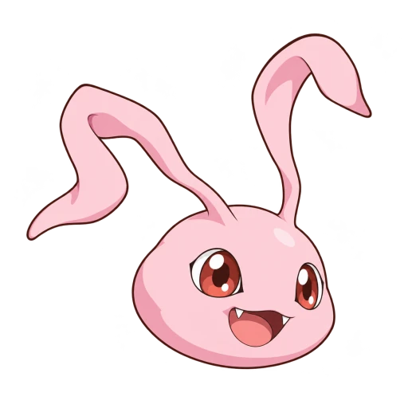

<!doctype html>
<html lang="ko" data-hanq-theme="terminal">
<head>
<meta name="hanq-textbook-edition" content="81">
<meta name="hanq-textbook-revisions" content="8710dbe1947517068ece4aa696f6208b00e8d4ee:c5e4647053125aa21cf3b80bd309ae8706299518f7760efdd72a434830b6212e">
<meta name="hanq-textbook-reviewed-eras" content="prehistory,samguk,nambuk,colonial,modern,people,regions">
<meta name="hanq-textbook-default-eras" content="prehistory,samguk,nambuk,colonial,modern,people,regions">
<meta name="hanq-opening-script-release" content="2eb5a03372accac368803d7486565505a61761d5">
<meta name="hanq-history81-workspace-api" content="2062b84b2c7f86de701cc757a23c113fa11e4c09">
  <meta charset="utf-8">
  <meta name="hanq-app-version" content="development">
  <meta name="hanq-release-version" content="development">
  <meta name="hanq-goryeo-script-release" content="83db3a9:245d166b2a252293903f87654028a648772f8c78dbb8ade09c86a21a223bb5a9">
  <meta name="hanq-joseon-script-release" content="ee9487e96fe95c441c3091a6f3d45a4c211d51b8:8d0944e32d86985a4af3dbf28085dba4bb3f65cc0d8379907e2e4693299003a1">
  <link rel="stylesheet" href="media/app-update.css?v=20261029">
  <meta name="viewport" content="width=device-width, initial-scale=1, viewport-fit=cover">
  <link rel="stylesheet" href="media/file-island.css">
  <link rel="stylesheet" href="media/entry-splash.css">
  <link rel="manifest" href="/manifest.webmanifest"><link rel="apple-touch-icon" sizes="180x180" href="/media/agumon-icon-transparent-180-20261030.png"><meta name="apple-mobile-web-app-title" content="파일섬 스터디"><meta name="apple-mobile-web-app-capable" content="yes">
  <script defer src="media/install-app.js?v=device-tip-20261023"></script>
  <meta name="theme-color" content="#f7f5f0">
  <meta name="description" content="한국사와 TOEIC를 공부하고 내 오답을 복습하는 파일섬 스터디">
  <title>파일섬 스터디</title>
  <link rel="icon" type="image/png" sizes="32x32" href="/media/agumon-icon-transparent-32-20261030.png">
  <!-- 서버(계정·프리미엄) 주소: 배포된 파일섬 스터디 API(경로 없이 — media/api-client.js /api/v1/…을 붙임).
       보통 공부 기록은 이 주소와 상관없이 이 기기에만 저장된다. content를 비우면 서버를 전혀 부르지 않는 오프라인(이 기기 전용) 앱이 된다. -->
  <meta name="hanq-api-base" content="same-origin">
  <script src="media/ui-locks.js?v=owned-overlays-20261101"></script>
  <script src="media/display-mode.js?v=island-background-20261023"></script>
  <link rel="stylesheet" href="media/account-ui.css?v=records-palette-20261029">
  <link rel="stylesheet" href="media/private-textbook.css">
  <link rel="stylesheet" href="media/textbook-semantic.css">
  <link rel="stylesheet" href="media/history81-terms.css">
  <link rel="stylesheet" href="media/joseon-script-reader.css">
  <link rel="stylesheet" href="media/goryeo-script-reader.css">
  <link rel="stylesheet" href="media/opening-script-reader.css">
  <link rel="stylesheet" href="media/textbook-source-quiz.css"><link rel="stylesheet" href="media/era-study-progress.css">
  <link rel="stylesheet" href="media/subject-menu.css">
  <link rel="stylesheet" href="media/toeic-practice.css">
  <link rel="stylesheet" href="media/toeic-practice-pdf.css">
  <link rel="stylesheet" href="media/toeic-notes.css?v=video-ticker-20261101"><link rel="stylesheet" href="media/vocabulary-reading.css?v=reading-20261029f">
  <link rel="stylesheet" href="media/toeic-page-header.css?v=toeic-header-20261027"><link rel="stylesheet" href="media/toeic-grammar.css?v=grammar-clean-20261027">
  <link rel="stylesheet" href="media/toeic-grammar-practice.css?v=content-quality-20261025">
  <link rel="stylesheet" href="media/grade-feedback.css">
<link rel="stylesheet" href="media/toeic-cbt.css?v=number-progress-20261026-single-explanation-20261025"><link rel="stylesheet" href="media/toeic-history.css"><link rel="stylesheet" href="media/toeic-audio.css"><link rel="stylesheet" href="media/lc-playlist.css?v=world-navigation-20261023b">
  <link rel="stylesheet" href="media/review-menu.css">
  <link rel="stylesheet" href="media/cbt-results.css">
  <link rel="stylesheet" href="media/era-culture.css"><link rel="stylesheet" href="media/quiz-resources.css">
  <link rel="stylesheet" href="media/joseon-core-review.css">
  <link rel="stylesheet" href="media/mixed-review-quiz.css">
  <link rel="stylesheet" href="media/goryeo-joseon-comparison.css">
  <link rel="stylesheet" href="media/integrated-blank-practice.css"><link rel="stylesheet" href="media/confusion-review.css">
  <link rel="stylesheet" href="media/quiz-feedback.css">
  <link rel="stylesheet" href="media/characters/hanq-mascots.css">
  <style>
    :root{--paper:#f7f5f0;--ink:#18212f;--muted:#647083;--line:#e2e5e9;--red:#d83b32;--gold:#e5a337;--blue:#294d87;--green:#27724e;--shadow:0 12px 34px #18212f0d}
    /* 한 페이지 학습(개화기 시범): 탭 셋, 웹툰 칸은 문서 높이에 맞춰 늘고 줄어 안쪽 스크롤이 없음, 세 부분 바로 가기 */
    .steps.steps-3{grid-template-columns:repeat(3,1fr)}.watch.lesson-frame{height:75vh;min-height:480px;max-height:none!important;background:#fff}.lesson-wrap{background:#fff}
    .lesson-lead{margin:0 0 10px;font-size:15px;line-height:1.65;color:#334155;word-break:keep-all}.lesson-chunks{display:flex;flex-wrap:wrap;gap:8px;margin:0 0 10px}.lesson-jump{display:inline-flex;flex-wrap:wrap;align-items:baseline;gap:2px 6px;min-height:44px;padding:8px 12px;border:1px solid var(--line);border-radius:12px;background:#fff;color:var(--ink);font-size:15px;font-weight:800;text-align:left}.lesson-jump b{color:var(--red)}.lesson-jump span{color:var(--muted);font-size:13px;font-weight:700}.lesson-jump:focus-visible{outline:3px solid #294d8766;outline-offset:2px}
    #lessonNotes{margin-top:16px;scroll-margin-top:12px}.lesson-notes>summary{display:flex;flex-wrap:wrap;align-items:center;gap:4px 8px;min-height:48px;padding:10px 14px;border:1px solid var(--line);border-radius:13px;background:#fff;font-size:15px;font-weight:900;cursor:pointer}.lesson-notes>summary span{font-size:13px;font-weight:700;color:var(--muted)}.lesson-notes>summary:focus-visible{outline:3px solid #294d8766;outline-offset:2px}.lesson-notes[open]>summary{margin-bottom:10px}
    @media(max-width:649px){.lesson-notes>summary{margin-left:12px;margin-right:12px}}
    /* 개화기 요약: 세 부분 이야기(첫 화면) */
    .o-parts-note{margin:0 0 12px;font-size:14px;line-height:1.6;color:var(--muted)}.o-parts-jumps{display:flex;flex-wrap:wrap;gap:8px;margin:0 0 6px}.o-parts-jump{min-height:44px;padding:8px 14px;border:1px solid var(--line);border-radius:999px;background:#fff;color:var(--ink);font-size:15px;font-weight:850}.o-parts-jump:focus-visible{outline:3px solid #294d8766;outline-offset:2px}
    .o-part-card{margin:18px 0 0;padding:14px 0 0;border-top:3px solid var(--ink);scroll-margin-top:16px}.o-part-card:focus{outline:none}.o-part-card:focus-visible{outline:3px solid #294d8766;outline-offset:3px}.o-part-h{display:flex;flex-wrap:wrap;align-items:baseline;gap:4px 8px;margin:0 0 6px;font-size:20px;letter-spacing:-.03em}.o-part-no{color:var(--red)}.o-part-range{font-size:14px;font-weight:750;color:var(--muted)}.o-part-lead{margin:0 0 10px;font-size:15px;line-height:1.65;color:#334155;word-break:keep-all}
    .o-chunks{list-style:none;margin:0;padding:0;display:grid;gap:12px}.o-chunk{padding:12px 14px;border:1px solid var(--line);border-radius:14px;background:#fff}.o-chunk-head{display:flex;flex-wrap:wrap;align-items:baseline;gap:2px 10px;margin:0 0 6px}.o-chunk-t{font-size:17px;font-weight:900}.o-chunk-w{font-size:14px;font-weight:800;color:var(--blue)}.o-chunk-story p{margin:0 0 6px;font-size:16px;line-height:1.7;word-break:keep-all;overflow-wrap:anywhere}.o-em{color:#b52d34;font-weight:900}
    .o-memo{margin:8px 0;padding:10px 12px;border-left:4px solid var(--gold);border-radius:8px;background:#fff8e8}.o-memo-label{display:block;font-size:14px;font-weight:900}.o-memo-text{margin:4px 0;font-size:15.5px;font-weight:800;line-height:1.6;word-break:keep-all}.o-memo-note{margin:0;font-size:14px;line-height:1.6;color:#5b4a26;word-break:keep-all}
    .o-keys{display:flex;flex-wrap:wrap;align-items:center;gap:6px;margin:8px 0 0}.o-keys-label{margin-right:2px;font-size:13px;font-weight:900;color:var(--muted)}.o-key{padding:3px 9px;border-radius:999px;background:#fce9e5;color:#8f2a26;font-size:14px;font-weight:850}
    .o-detail-h{margin:24px 0 8px;font-size:17px}.o-detail-h span{margin-left:6px;font-size:13px;font-weight:700;color:var(--muted)}details.o-fold>summary{display:flex;align-items:center;gap:8px;min-height:44px;cursor:pointer;font-size:16px;font-weight:900}
    *{box-sizing:border-box}body{margin:0;background:var(--paper);color:var(--ink);font-family:-apple-system,BlinkMacSystemFont,"Apple SD Gothic Neo","Noto Sans KR",sans-serif;line-height:1.55}button,input{font:inherit}button{cursor:pointer}a{color:inherit}
    .shell{width:100%;max-width:none;margin:0;padding:18px 24px 56px}.brand{display:flex;align-items:center;gap:10px;font-weight:850;letter-spacing:-.03em}.home-brand{border:0;padding:0;background:transparent;color:inherit;text-align:left}.home-brand:focus-visible{outline:3px solid #d83b3266;outline-offset:4px;border-radius:7px}.brand-mark{width:34px;height:34px;border-radius:11px;background:var(--ink);color:var(--gold);display:grid;place-items:center;font-size:20px}.brand span:last-child{font-size:17px}.topline{display:flex;justify-content:space-between;align-items:center;margin:2px 0 24px}.goal{font-size:12px;color:var(--muted);font-weight:700}
    .intro{margin:0 0 20px}.eyebrow{font-size:12px;color:var(--red);font-weight:850;letter-spacing:.08em}.intro h1{font-size:clamp(29px,7vw,42px);line-height:1.18;letter-spacing:-.055em;margin:7px 0}.intro p{font-size:15px;color:var(--muted);margin:0}
    .sequence{display:grid;grid-template-columns:repeat(3,1fr);gap:8px;margin:22px 0 25px}.sequence span{border:1px solid var(--line);background:#fff;border-radius:14px;padding:10px 8px;text-align:center;font-size:12px;font-weight:800;color:#465164}.sequence b{display:block;font-size:10px;color:var(--red);margin-bottom:3px;letter-spacing:.08em}
    .section-title{display:flex;align-items:end;justify-content:space-between;margin:27px 0 11px}.section-title h2{font-size:18px;margin:0;letter-spacing:-.03em}.section-title small{color:var(--muted);font-size:12px}
    .toc{display:grid;gap:9px}.period{display:flex;align-items:center;gap:13px;text-align:left;width:100%;border:1px solid var(--line);background:#fff;padding:13px 14px;border-radius:16px;box-shadow:var(--shadow);transition:transform .14s,border-color .14s}.period:active{transform:scale(.99)}.period.ready{border-color:#eac7a7}.period.ready:hover{border-color:var(--red)}.number{flex:none;width:35px;height:35px;border-radius:12px;background:#f1f2f4;color:#687285;display:grid;place-items:center;font-size:13px;font-weight:850}.ready .number{background:#fff0e7;color:var(--red)}.period-text{flex:1;min-width:0}.period-text strong{display:block;font-size:15px;line-height:1.35}.period-text small{display:block;color:var(--muted);font-size:11px;margin-top:3px}.state{flex:none;border-radius:99px;padding:5px 8px;font-weight:800;font-size:10px;background:#f0f1f3;color:#747d8b}.ready .state{background:#e9f4ed;color:var(--green)}.chevron{color:#9aa2ae;font-size:20px}

    .home-hero{position:relative;display:grid;grid-template-columns:1fr 1.05fr;align-items:center;gap:12px;min-height:330px;padding:28px 26px 18px;margin:0 0 18px;overflow:hidden;border:1px solid #d9c8a6;border-radius:22px;background:linear-gradient(135deg,#f3e7d0 0%,#f8efdf 56%,#eddfc4 100%);box-shadow:0 10px 26px #5b45220c}
    .home-hero:before{content:"";position:absolute;inset:0;background:radial-gradient(#765f3820 .7px,transparent .8px);background-size:8px 8px;opacity:.3;pointer-events:none}
    .hero-copy{position:relative;z-index:1;padding:8px 0 14px}.hero-stamp{display:flex;align-items:center;gap:8px;color:#8e3c31;font-size:12px;font-weight:850;letter-spacing:.07em}.hero-stamp b{width:27px;height:27px;display:grid;place-items:center;border:1px solid #ba6a4e;border-radius:7px;color:#ae483b;font-size:15px;background:#f8ead1;transform:rotate(-5deg)}
    .hero-copy h1{margin:15px 0 11px;font-family:"AppleMyungjo","Nanum Myeongjo",serif;font-size:clamp(32px,4.4vw,54px);line-height:1.2;letter-spacing:-.07em;color:#242b31}.hero-copy p{max-width:440px;margin:0;color:#5d5c54;font-size:15px;line-height:1.75}.hero-start{display:inline-flex;align-items:center;gap:13px;margin-top:20px;padding:10px 13px 10px 15px;border:1px solid #cdbb99;border-radius:999px;background:#fff9ec;color:#28313a;font-size:13px;font-weight:850;box-shadow:0 3px 0 #d8c6a5;transition:transform .18s,box-shadow .18s}.hero-start:hover{transform:translateY(-2px);box-shadow:0 5px 0 #d8c6a5}.hero-start span{color:#ae4439;font-size:18px}
    .hero-art{position:relative;z-index:1;align-self:stretch;min-height:275px;display:grid;place-items:center}.hero-art svg{width:100%;max-width:650px;height:auto;overflow:visible}.hero-caption{position:absolute;right:6%;bottom:5px;color:#725d3a;font-family:"AppleMyungjo","Nanum Myeongjo",serif;font-size:12px;letter-spacing:.16em;transform:rotate(-4deg)}
    .hill-back{fill:#b7ad91}.hill-front{fill:#898d76}.ink-line{fill:none;stroke:#343d3b;stroke-width:3;stroke-linecap:round;stroke-linejoin:round}.stone{fill:#d9c9a5;stroke:#48504a;stroke-width:2}.wall{fill:#c8b58e;stroke:#48504a;stroke-width:2.5}.cloud{fill:none;stroke:#8d8169;stroke-width:2.4;stroke-linecap:round;opacity:.64;animation:cloud-drift 18s ease-in-out infinite alternate}.cloud.c2{animation-delay:-7s}.hero-flag{transform-box:fill-box;transform-origin:left center;animation:flag-wave 2.8s ease-in-out infinite}.hero-flag.f2{animation-delay:-1.1s}.hero-sun{fill:#d77454;opacity:.82}.tiny-bird{fill:none;stroke:#4a514d;stroke-width:2;stroke-linecap:round;animation:bird-glide 7s ease-in-out infinite alternate}
    @keyframes cloud-drift{from{transform:translateX(-7px)}to{transform:translateX(12px)}}@keyframes flag-wave{0%,100%{transform:rotate(-2deg) skewY(-1deg)}50%{transform:rotate(3deg) skewY(1.5deg)}}@keyframes bird-glide{from{transform:translate(0,0)}to{transform:translate(9px,-5px)}}
    .study-path{display:flex;align-items:center;justify-content:center;gap:clamp(9px,2vw,22px);padding:13px 10px;margin:0 0 30px;border-bottom:1px solid #ded8cb;color:#51554f}.path-title{margin-right:4px;color:#8a473b;font-size:11px;font-weight:900;letter-spacing:.08em}.path-step{display:flex;align-items:center;gap:7px;font-size:13px;font-weight:800;white-space:nowrap}.path-step b{display:grid;place-items:center;width:23px;height:23px;border:1px solid #c7b693;border-radius:50%;background:#faf5e9;color:#9e483b;font-size:10px}.path-arrow{color:#b7a88a;font-size:17px}
    .section-title.home-section-title{margin-top:0}.section-title.home-section-title h2{font-family:"AppleMyungjo","Nanum Myeongjo",serif;font-size:25px}.section-title.home-section-title small{font-size:12px}
    .period.ready{background:linear-gradient(110deg,#fffdf8,#fff 72%);border-color:#ddcba8}.period.ready .number{background:#f4e5c9;color:#9e483b}.period.ready .state{background:#f3eee3;color:#726044}.period.ready .chevron{color:#a54b3e}

    .topline{animation:soft-arrive .42s ease-out both}.home-hero{animation:paper-unfold .62s cubic-bezier(.2,.75,.25,1) both}.hero-copy{animation:soft-arrive .5s .12s ease-out both}.hero-art{animation:art-arrive .68s .16s cubic-bezier(.2,.75,.25,1) both}
    .study-path{animation:soft-arrive .45s .2s ease-out both}.path-step{animation:step-pop .38s calc(.24s + var(--path-i,0)*.07s) cubic-bezier(.2,.8,.3,1.3) both}.path-step:nth-of-type(2){--path-i:1}.path-step:nth-of-type(4){--path-i:2}.path-step:nth-of-type(6){--path-i:3}
    .home-section-title,.module-head{animation:soft-arrive .38s ease-out both}.period{animation:card-arrive .42s calc(var(--card-order,0)*.045s) cubic-bezier(.2,.75,.25,1) both;transition:transform .18s ease,border-color .18s ease,box-shadow .18s ease}.period.ready:hover{transform:translateY(-2px);box-shadow:0 9px 20px #4d39210f}.period.ready:active{transform:scale(.985)}
    .steps .step{animation:step-pop .34s cubic-bezier(.2,.8,.3,1.2) both;transition:background .2s,color .2s,transform .2s}.steps .step:nth-child(2){animation-delay:.06s}.steps .step:nth-child(3){animation-delay:.12s}.steps .step:nth-child(4){animation-delay:.18s}.step.current{transform:translateY(-1px);box-shadow:0 4px 10px #18212f18}.step.done span{animation:check-pop .35s cubic-bezier(.2,.8,.3,1.3) both}
    .panel{animation:panel-arrive .4s cubic-bezier(.2,.75,.25,1) both}.note-card{animation:card-arrive .42s calc(var(--note-order,0)*.075s) cubic-bezier(.2,.75,.25,1) both;transition:transform .2s ease,box-shadow .2s ease}.note-card:nth-child(2){--note-order:1}.note-card:nth-child(3){--note-order:2}.note-card:hover{transform:translateY(-2px);box-shadow:0 8px 18px #18212f0c}.note-card li{transition:color .18s}.note-card li:hover{color:var(--ink)}
    .question{animation:question-arrive .4s cubic-bezier(.2,.75,.25,1) both}.qnum{animation:step-pop .38s .08s cubic-bezier(.2,.8,.3,1.3) both}.answer,.question .check-one{animation:soft-arrive .34s .1s ease-out both}.answer{transition:border-color .18s,box-shadow .18s,transform .18s}.answer:focus{transform:translateY(-1px)}.check-one{transition:transform .16s,filter .16s}.check-one:hover{filter:brightness(1.04);transform:translateY(-1px)}.check-one:active{transform:scale(.985)}
    .feedback.show{animation:feedback-arrive .3s ease-out both}.wrong-note{animation:note-arrive .35s .08s ease-out both}.wrong-note .remember{animation:note-arrive .34s .16s ease-out both}.result-screen{animation:panel-arrive .42s cubic-bezier(.2,.75,.25,1) both}.review-item{animation:card-arrive .34s ease-out both}
    .quiz-nav button,.hero-start{transition:transform .16s ease,filter .16s ease,box-shadow .16s ease}.quiz-nav button:hover{filter:brightness(1.04);transform:translateY(-1px)}
    @keyframes soft-arrive{from{opacity:0;transform:translateY(10px)}to{opacity:1;transform:translateY(0)}}
    @keyframes paper-unfold{from{opacity:0;transform:translateY(12px) scale(.99);clip-path:inset(0 0 12% 0)}to{opacity:1;transform:translateY(0) scale(1);clip-path:inset(0)}}
    @keyframes art-arrive{from{opacity:0;transform:translate(12px,8px) scale(.985)}to{opacity:1;transform:translate(0) scale(1)}}
    @keyframes card-arrive{from{opacity:0;transform:translateY(12px)}to{opacity:1;transform:translateY(0)}}
    @keyframes panel-arrive{from{opacity:0;transform:translateY(8px)}to{opacity:1;transform:translateY(0)}}
    @keyframes question-arrive{from{opacity:0;transform:translateX(12px)}to{opacity:1;transform:translateX(0)}}
    @keyframes feedback-arrive{from{opacity:0;transform:scale(.985) translateY(5px)}to{opacity:1;transform:scale(1) translateY(0)}}
    @keyframes note-arrive{from{opacity:0;transform:translateY(7px)}to{opacity:1;transform:translateY(0)}}
    @keyframes step-pop{from{opacity:0;transform:scale(.9) translateY(5px)}to{opacity:1;transform:scale(1) translateY(0)}}
    @keyframes check-pop{0%{transform:scale(.5);opacity:.4}70%{transform:scale(1.18)}100%{transform:scale(1);opacity:1}}
    @media(prefers-reduced-motion:reduce){.topline,.home-hero,.hero-copy,.hero-art,.study-path,.path-step,.home-section-title,.module-head,.period,.steps .step,.panel,.note-card,.question,.qnum,.answer,.question .check-one,.feedback.show,.wrong-note,.wrong-note .remember,.result-screen,.review-item{animation:none!important;transition:none!important}.period.ready:hover,.note-card:hover,.answer:focus{transform:none}}

    @media(max-width:649px){.home-hero{display:flex;flex-direction:column;align-items:stretch;gap:0;min-height:0;padding:21px 17px 10px;margin:0 0 12px;border-left:0;border-right:0;border-radius:0}.hero-copy{padding:0}.hero-stamp{font-size:11px}.hero-stamp b{width:25px;height:25px}.hero-copy h1{font-size:34px;line-height:1.22;margin:12px 0 7px}.hero-copy p{font-size:13px;line-height:1.58;max-width:340px}.hero-start{margin-top:13px;padding:8px 12px 8px 14px;font-size:12px}.hero-art{min-height:0;height:auto;margin:-2px -11px -5px}.hero-art svg{width:100%;max-height:205px}.hero-caption{right:8%;bottom:3px;font-size:10px}.study-path{gap:7px;padding:11px 2px;margin:0 12px 25px;justify-content:space-between}.path-title{font-size:9px;margin-right:0}.path-step{font-size:11px;gap:4px}.path-step b{width:20px;height:20px;font-size:9px}.path-arrow{font-size:13px}.section-title.home-section-title{margin-top:0}.section-title.home-section-title h2{font-size:23px}}
    @media(prefers-reduced-motion:reduce){.cloud,.hero-flag,.tiny-bird{animation:none!important}.hero-start{transition:none}}

    .module-head{margin:4px 0 15px}.back{border:0;background:none;padding:6px 0;color:var(--muted);font-weight:750;font-size:13px}.module-head h1{font-size:30px;line-height:1.2;letter-spacing:-.05em;margin:6px 0}.module-head p{margin:0;color:var(--muted);font-size:13px}.steps{display:grid;grid-template-columns:repeat(4,1fr);gap:7px;margin:18px 0}.step{background:#e9eaec;color:#697385;border:0;border-radius:12px;padding:11px 4px;font-size:12px;font-weight:850}.step.current{background:var(--ink);color:white}.step.done{background:#fce9e5;color:var(--red)}.panel{background:white;border:1px solid var(--line);border-radius:19px;padding:17px;box-shadow:var(--shadow)}.panel h2{font-size:20px;letter-spacing:-.04em;margin:0 0 4px}.panel .help{font-size:12px;color:var(--muted);margin:0 0 14px}.watch-wrap{background:#10151c;border-radius:14px;overflow:hidden}.watch{width:100%;height:min(72vh,720px);min-height:460px;display:block;border:0;background:#10151c}.open-webtoon{display:inline-flex;margin:0 0 12px;color:var(--blue);font-size:13px;font-weight:800;text-decoration:none}.note-img{display:block;width:100%;height:auto;border-radius:12px;border:1px solid var(--line)}.note-grid{display:grid;gap:11px}.note-card{border:1px solid var(--line);border-radius:15px;padding:14px;background:#fff}.king-timeline{border-color:#efc9bc;background:linear-gradient(180deg,#fffaf7,#fff 38%)}.king-timeline ul{list-style:none;padding-left:0;position:relative}.king-timeline li{position:relative;padding:7px 0 7px 17px;border-left:2px solid #f0c8bd}.king-timeline li:before{content:"";position:absolute;left:-5px;top:15px;width:8px;height:8px;border-radius:50%;background:var(--red);box-shadow:0 0 0 3px #fff}.king-timeline li+li{margin-top:0}.note-card h3{margin:0 0 8px;font-size:15px}.note-card ul{padding-left:19px;margin:0;color:#3d4859;font-size:14px;line-height:1.6}.note-card li+li{margin-top:4px}.red{color:var(--red);font-weight:850}.memory{background:#fff4e6;border:1px solid #f2ddbd;border-radius:14px;padding:13px 14px;font-size:13px;font-weight:800;margin-top:12px}.question-list{display:grid;gap:12px}.quiz-progress{display:flex;justify-content:space-between;gap:8px;margin:0 0 10px;color:#425064;font-size:13px;font-weight:850}.progress-track{height:7px;margin:0 0 18px;border-radius:99px;background:#e9ebef;overflow:hidden}.progress-fill{height:100%;width:0;background:var(--red);border-radius:inherit;transition:width .2s}.question{min-height:300px;display:flex;flex-direction:column;justify-content:center;border:1px solid var(--line);border-radius:17px;padding:19px 16px;background:linear-gradient(160deg,#fff 60%,#f9f6f2)}.qtop{display:flex;gap:10px;align-items:flex-start}.qnum{flex:none;background:#fff0e7;color:var(--red);width:34px;height:34px;border-radius:12px;display:grid;place-items:center;font-size:14px;font-weight:900}.qsection{display:block;margin-bottom:6px;color:var(--muted);font-size:11px;font-weight:750;letter-spacing:0}.qtext{font-size:19px;font-weight:800;line-height:1.6;letter-spacing:-.025em}.answer{width:100%;margin-top:22px;border:1.5px solid #d7dce3;border-radius:12px;padding:13px 14px;background:#fff;color:var(--ink);outline:none}.answer:focus{border-color:var(--blue);box-shadow:0 0 0 3px #294d871a}.feedback{display:none;margin-top:16px;padding:14px;border-radius:14px;font-size:14px;line-height:1.7;white-space:pre-line}.feedback.show{display:block}.feedback.good{background:#eef7f0;color:#17653e;font-weight:850;text-align:center}.feedback.bad{background:#fff1ed;color:#722b25}.feedback-title{display:block;margin-bottom:5px;font-size:15px;font-weight:900}.check-one,.next-btn,.prev-btn{border:0;border-radius:13px;padding:13px 16px;font-size:14px;font-weight:850;min-height:50px}.check-one{width:100%;margin-top:13px;background:var(--red);color:#fff}.quiz-nav{display:grid;grid-template-columns:1fr 1fr;gap:9px;margin-top:13px}.quiz-nav[hidden]{display:none}.prev-btn{background:#e9eaec;color:#334155}.next-btn{background:var(--ink);color:white}.prev-btn:disabled,.next-btn:disabled{opacity:.42;cursor:default}.result-screen{padding:22px 14px;text-align:center;border-radius:16px;background:#edf5ef;color:var(--green)}.result-screen h3{font-size:24px;margin:0 0 7px}.result-score{font-size:18px;font-weight:900}.result-actions{display:grid;gap:9px;margin-top:18px}.review-item{margin-top:12px;padding:14px;text-align:left;border-radius:13px;background:#fff;border:1px solid #dce7dd;color:#344054;line-height:1.65}.review-item strong{color:#1b2737}.review-item>strong{display:block}.review-item p{margin:8px 0 0}.review-item .remember{margin-top:10px}.right-wrap{display:flex;flex-direction:column;align-items:center;gap:5px}.right-mark{width:76px;height:76px;border:7px solid #27965f;border-radius:50%;display:grid;place-items:center;color:#21834f;font-size:42px;line-height:1;animation:right-pop .62s cubic-bezier(.18,.9,.28,1.45) both}.right-wrap strong{font-size:20px}.right-wrap small{font-size:12px;font-weight:750;opacity:.82}.wrong-hit{display:flex;align-items:center;justify-content:center;gap:16px;min-height:116px}.wrong-mark{display:block;color:#d73532;font-size:106px;font-weight:950;line-height:.95;animation:wrong-hit .62s cubic-bezier(.18,.9,.28,1.2) both}.wrong-copy{text-align:left}.wrong-copy strong{display:block;font-size:18px}.wrong-note{margin-top:10px;padding:14px 15px;border-radius:13px;background:#fff;color:#59302d}.wrong-note p{margin:6px 0 0;line-height:1.75}.note-label{font-size:12px;letter-spacing:.04em;color:#9b423c;font-weight:950}.remember{display:grid;gap:4px;margin-top:12px;padding:12px 13px;border-radius:11px;background:#fff1c9;color:#614814}.remember strong{font-size:13px}.remember span{font-size:14px;font-weight:850;line-height:1.55}@keyframes right-pop{0%{transform:scale(.08) rotate(-30deg);opacity:0}65%{transform:scale(1.2) rotate(5deg);opacity:1}100%{transform:scale(1) rotate(0)}}@keyframes wrong-hit{0%{transform:scale(2.2) rotate(18deg);opacity:0}55%{transform:scale(.8) rotate(-8deg);opacity:1}72%{transform:translateX(10px)}86%{transform:translateX(-8px)}100%{transform:scale(1) translateX(0)}}@media(prefers-reduced-motion:reduce){.right-mark,.wrong-mark{animation:none}}.empty{color:var(--muted);font-size:14px}.footer{text-align:center;color:#87909d;font-size:11px;margin:25px 0 0}
    @media(max-width:649px){
      .shell{width:100%;max-width:none;padding:12px 0 42px}
      .topline,.intro,.sequence,.section-title,.toc,.module-head,.steps,.footer{margin-left:12px;margin-right:12px}
      .topline{margin-top:0;margin-bottom:18px}.brand-mark{width:36px;height:36px}
      .intro h1{font-size:32px}.intro p{font-size:15px;line-height:1.5}
      .sequence{gap:6px;margin-top:18px;margin-bottom:23px}.sequence span{font-size:13px;min-height:64px;display:flex;flex-direction:column;justify-content:center;padding:8px 4px}
      .section-title{margin-top:24px}.section-title h2{font-size:19px}
      .toc{gap:9px}.period{width:100%;min-height:68px;padding:13px 11px;gap:10px;border-radius:14px;box-shadow:none}.number{width:36px;height:36px}.period-text strong{font-size:16px}.period-text small{font-size:12px;line-height:1.35}.state{font-size:11px;padding:6px 9px}
      .module-head h1{font-size:32px}.module-head p{font-size:14px}.back{min-height:42px;font-size:14px}
      .steps{gap:5px;margin-top:14px;margin-bottom:14px}.step{min-width:0;min-height:54px;padding:11px 2px;border-radius:11px;font-size:13px;line-height:1.25;white-space:nowrap}
      .panel{width:100%;padding:17px 12px;border-left:0;border-right:0;border-radius:0;box-shadow:none}.panel h2{font-size:21px}.panel .help{font-size:13px}
      .watch-wrap{margin-left:-12px;margin-right:-12px;border-radius:0}.watch{width:100%;height:calc(100svh - 190px);min-height:500px;max-height:820px}
      .open-webtoon{min-height:44px;align-items:center;font-size:14px}
      .note-img{width:calc(100% + 24px);max-width:none;margin-left:-12px;border-radius:0;border-left:0;border-right:0}
      .note-grid{gap:10px}.note-card{padding:15px 14px;border-radius:13px}.note-card h3{font-size:17px}.note-card ul{font-size:15px;line-height:1.55}.note-card li+li{margin-top:7px}.memory{font-size:14px;line-height:1.55}
      .question{min-height:calc(100svh - 370px);padding:20px 15px;border:0;border-radius:0;background:#fff}.qtext{font-size:21px;line-height:1.65}.answer{min-height:54px;font-size:17px}.feedback{font-size:14px}.quiz-nav{margin:13px 12px 0}.check-one,.next-btn,.prev-btn{font-size:15px}.quiz-progress,.progress-track{margin-left:12px;margin-right:12px}
    }
    @media(min-width:650px){.shell{width:100%;max-width:none;padding:28px clamp(20px,2.8vw,52px) 70px}.toc{grid-template-columns:1fr 1fr}.intro p{font-size:16px}.panel{padding:22px}.watch{height:680px}.period{padding:15px}.section-title h2{font-size:20px}}
    .module-actions{display:flex;align-items:center;justify-content:space-between;gap:12px}
    .home-shortcut{border:1px solid #d7dde5;border-radius:999px;background:#fff;color:#263a55;padding:9px 14px;font-size:13px;font-weight:800;cursor:pointer}
    .home-shortcut:hover{background:#f3f5f8}
    .mobile-nav{display:none}
    @media(min-width:650px){
      .comic-panel{max-width:620px;margin-left:auto;margin-right:auto}
      .watch-wrap{width:min(100%,560px);margin-left:auto;margin-right:auto}
      .note-img{display:block;max-width:680px;margin-left:auto;margin-right:auto}
    }
    @media(max-width:649px){
      .shell.lesson-active{padding-bottom:calc(94px + env(safe-area-inset-bottom))}
      .mobile-nav{position:fixed;z-index:40;left:0;right:0;bottom:0;display:grid;grid-template-columns:1fr 1fr;gap:10px;padding:10px 12px calc(10px + env(safe-area-inset-bottom));background:#fffffff2;backdrop-filter:blur(14px);border-top:1px solid #dce2e8;box-shadow:0 -8px 24px #15203316}
      .mobile-nav button{min-height:50px;border:1px solid #cbd4df;border-radius:13px;background:#fff;color:#203149;font-size:15px;font-weight:850;cursor:pointer}
      .mobile-nav .mobile-home{border-color:#17243a;background:#17243a;color:#fff}
      .module-actions .home-shortcut{font-size:13px;padding:9px 11px}
    }
    @media(prefers-reduced-motion:reduce){*{scroll-behavior:auto!important;transition:none!important}}
    .part-picker{display:flex;flex-wrap:wrap;gap:6px;margin:0 0 14px;padding:0;border:0;min-width:0}.part-picker legend{width:100%;margin:0 0 6px;font-size:12px;font-weight:850;color:#5b6576}.part-option{flex:1 1 0;min-width:0;position:relative}.part-option input{position:absolute;opacity:0;width:1px;height:1px}.part-option span{display:flex;align-items:center;justify-content:center;min-height:44px;padding:8px 6px;border:1.5px solid #d7dce3;border-radius:12px;background:#fff;color:#334155;font-size:14px;font-weight:850;text-align:center;cursor:pointer;word-break:keep-all}.part-option input:checked+span{border-color:var(--ink);background:var(--ink);color:#fff}.part-option input:focus-visible+span{outline:3px solid #294d8766;outline-offset:2px}
    .summary-part+.summary-part{margin-top:22px;padding-top:18px;border-top:2px solid var(--line)}.part-title{margin:0 0 10px;font-size:19px;letter-spacing:-.03em}.study-block{margin:0 0 12px;padding:14px;border:1px solid var(--line);border-radius:15px;background:#fff;word-break:keep-all;overflow-wrap:anywhere}.study-block h3{margin:0 0 10px;font-size:15px}.flow-list{margin:0;padding:0;list-style:none;counter-reset:flow}.flow-list>li{position:relative;padding:0 0 12px 30px;counter-increment:flow}.flow-list>li:before{content:counter(flow);position:absolute;left:0;top:0;width:22px;height:22px;border-radius:50%;background:#fce9e5;color:var(--red);display:grid;place-items:center;font-size:12px;font-weight:900}.flow-list>li:not(:last-child):after{content:"";position:absolute;left:10px;top:24px;bottom:2px;width:2px;background:#f2d8d2}.flow-title{display:block;margin-bottom:4px;font-size:15px}.flow-row{display:flex;gap:7px;align-items:baseline;margin-top:3px;font-size:14px;line-height:1.55;color:#3d4859}.flow-tag{flex:none;padding:1px 6px;border-radius:6px;font-size:11px;font-weight:900}.flow-tag.cause{background:#eef2f8;color:#294d87}.flow-tag.change{background:#fff4e6;color:#9a5a12}.flow-tag.result{background:#e9f4ed;color:#27724e}
    .pair{padding:10px 0;border-top:1px dashed var(--line)}.pair:first-of-type{border-top:0;padding-top:0}.pair-title{margin:0 0 6px;font-size:13px;font-weight:850;color:#5b6576}.pair-cols{display:grid;grid-template-columns:minmax(0,1fr) minmax(0,1fr);gap:8px}.pair-cols p{margin:0;padding:9px 10px;border-radius:11px;background:#f6f7f9;font-size:13.5px;line-height:1.5}.pair-cols b{display:block;color:var(--red);font-size:14px}.pair-tip{margin:6px 0 0;font-size:12.5px;color:#5b6576}.recall-list{margin:0;padding-left:20px}.recall-list li+li{margin-top:2px}.recall summary{display:flex;flex-wrap:wrap;gap:4px 8px;align-items:baseline;min-height:44px;padding:9px 0;cursor:pointer;font-size:14px;line-height:1.5}.recall summary::-webkit-details-marker{display:none}.recall summary:focus-visible{outline:3px solid #294d8766;outline-offset:2px;border-radius:8px}.rq{flex:1 1 14em;font-weight:750}.reveal-hint{font-size:12px;font-weight:850;color:#294d87;white-space:nowrap}.recall[open] .reveal-hint{color:#27724e}.ra{margin:0 0 8px;padding:8px 10px;border-radius:10px;background:#e9f4ed;color:#17653e;font-weight:800;font-size:14px}.source-notes{margin-top:4px}.source-notes>summary{display:flex;align-items:center;min-height:48px;padding:10px 14px;border:1px solid var(--line);border-radius:13px;background:#fafafa;font-size:14px;font-weight:850;cursor:pointer}.source-notes[open]>summary{margin-bottom:10px}.source-notes>summary:focus-visible{outline:3px solid #294d8766;outline-offset:2px}
    .summary-guide{margin:0 0 6px;padding-left:20px;font-size:13.5px;line-height:1.6;color:#3d4859}.summary-guide b{color:var(--ink)}
    .core-legend{margin:0 0 6px;font-size:12.5px;line-height:1.5;color:#5b6576}strong.tb{font-weight:900;color:#16202d}.core-row dt,.cmp-row dt{font-weight:600}.sep{color:#8a93a1;font-weight:500}
    .core-group{border-top:1px solid var(--line)}.core-group>summary{display:flex;align-items:center;gap:8px;min-height:44px;padding:10px 2px;cursor:pointer;list-style:none;font-size:14.5px;font-weight:850;line-height:1.4}.core-group>summary::-webkit-details-marker{display:none}.core-group>summary:after{content:"＋";margin-left:auto;color:#294d87;font-weight:900}.core-group[open]>summary:after{content:"−"}.core-group>summary:focus-visible{outline:3px solid #294d8766;outline-offset:2px;border-radius:8px}.core-title{min-width:0;overflow-wrap:anywhere}.core-count{flex:none;padding:1px 7px;border-radius:99px;background:#eef2f8;color:#294d87;font-size:11px;font-weight:900}
    .core-list,.cmp-list{display:grid;grid-template-columns:minmax(0,1fr);gap:6px;margin:0 0 10px}.core-row,.cmp-row{min-width:0;padding:8px 10px;border-radius:10px;background:#f7f8fa}.core-row dt,.cmp-row dt{font-size:14px;line-height:1.45;color:#334155;overflow-wrap:anywhere;word-break:keep-all}.core-row dd,.cmp-row dd{margin:3px 0 0;font-size:13.5px;line-height:1.55;color:#3d4859;overflow-wrap:anywhere;word-break:keep-all}.core-row .gl-inline{margin-top:4px;border-top:1px dashed #dfe3e8}.core-row .gl-inline summary{min-height:44px}
    .sahwa .core-row dd,.dated .core-row dd{display:flex;flex-wrap:wrap;align-items:baseline;gap:0 2px}.sh-year{font-weight:900;color:var(--red)}.sh-king{font-weight:850;color:#294d87}.sh-cause{min-width:0}
    .tier-badge{flex:none;padding:1px 7px;border-radius:99px;font-size:11px;font-weight:900;background:#fce9e5;color:var(--red)}.tier-target .tier-badge{background:#eef2f8;color:#294d87}.tier-support .tier-badge{background:#f1f3f5;color:#4b5565}.tier-optional .tier-badge,.tier-optional_highlight .tier-badge{background:#f6f1e7;color:#7a5a24}.lecture-tier>h3{display:flex;align-items:center;gap:8px}.tb-supplement{margin:4px 0 10px}.tb-supplement>summary{display:flex;align-items:center;gap:8px;min-height:48px;padding:10px 14px;border:1px solid var(--line);border-radius:13px;background:#fafafa;font-size:14px;font-weight:850;cursor:pointer}.tb-supplement>summary:focus-visible{outline:3px solid #294d8766;outline-offset:2px}.tb-supplement[open]>summary{margin-bottom:10px}.tb-note{font-size:11.5px;font-weight:700;color:#6b7280}
    .pair-table .cmp-row{display:grid;grid-template-columns:minmax(0,1fr);gap:2px}.recall.mnemonic .ra{background:#fff4e6;color:#7a4b0d;font-weight:750}
    @media(min-width:650px){.core-list{grid-template-columns:repeat(2,minmax(0,1fr))}.pair-table .cmp-row{grid-template-columns:minmax(7em,32%) minmax(0,1fr);align-items:baseline}.pair-table .cmp-row dd{margin:0}}
    @media(max-width:649px){.part-picker{margin-left:12px;margin-right:12px}.study-block{margin-left:0;margin-right:0}}@media(max-width:340px){.pair-cols{grid-template-columns:1fr}}
    .quiz-jump{display:flex;align-items:center;gap:10px;margin:0 0 14px}.quiz-jump label{flex:none;color:#425064;font-size:13px;font-weight:850}.quiz-jump select{flex:1;min-width:0;min-height:44px;padding:9px 12px;border:1.5px solid #d7dce3;border-radius:12px;background:#fff;color:var(--ink);font:inherit;font-size:16px;font-weight:750;cursor:pointer}.quiz-jump select:focus-visible{outline:none;border-color:var(--blue);box-shadow:0 0 0 3px #294d871a}
    @media(max-width:649px){.quiz-jump{margin-left:12px;margin-right:12px}}
    /* 빈칸(객관식): 묶음 고르기 · 이동 도구 · 보기(라디오 그룹) · 채점 뒤 보기별 풀이(보기 바로 아래, 좁은 화면에서도 한 줄씩) */
    .quiz-set{display:flex;flex-wrap:wrap;align-items:center;gap:8px 10px;margin:0 0 12px}.quiz-set label{flex:none;color:#425064;font-size:13px;font-weight:850}.quiz-set select{flex:1 1 12em;min-width:0;min-height:44px;padding:9px 12px;border:1.5px solid #d7dce3;border-radius:12px;background:#fff;color:var(--ink);font:inherit;font-size:16px;font-weight:750;cursor:pointer}.quiz-set select:focus-visible{outline:3px solid #294d8766;outline-offset:2px}.quiz-pool{flex:1 1 100%;font-size:12.5px;line-height:1.5;color:var(--muted);font-weight:750;word-break:keep-all}
    #quizGlobal{font-size:12px;color:var(--muted);font-weight:750}
    .quiz-tools{display:flex;flex-wrap:wrap;gap:8px;margin:0 0 12px}.tool-btn{min-height:44px;padding:8px 14px;border:1px solid var(--line);border-radius:999px;background:#fff;color:var(--ink);font-size:14px;font-weight:800;cursor:pointer}.tool-btn:focus-visible{outline:3px solid #294d8766;outline-offset:2px}.reset-btn{margin:12px 0 0;color:#8f2a26}
    .qask{margin:2px 0 10px;font-size:14px;line-height:1.5;color:#425064}.qask b{color:var(--blue)}
    .qchoices{display:grid;grid-template-columns:minmax(0,1fr);gap:8px;margin:0 0 12px}
    .qchoice{display:flex;align-items:center;gap:10px;width:100%;min-height:48px;padding:10px 12px;border:2px solid #dce1e8;border-radius:13px;background:#fff;color:#243248;font-size:16px;font-weight:750;line-height:1.45;text-align:left;word-break:keep-all;overflow-wrap:anywhere;cursor:pointer}.qchoice:focus-visible{outline:3px solid #294d8766;outline-offset:2px}.qchoice[aria-checked="true"]{border-color:var(--blue);background:#eaf0fb}.qchoice:disabled{cursor:default;opacity:1}
    .qletter{flex:none;display:grid;place-items:center;width:28px;height:28px;border-radius:50%;background:#f1f3f6;color:#425064;font-size:14px;font-weight:900}.qchoice[aria-checked="true"] .qletter{background:var(--blue);color:#fff}.qopt{flex:1;min-width:0;white-space:pre-line}.qmark{flex:none;font-size:13px;font-weight:900}
    .qchoice-row.is-correct .qchoice{border-color:#229563;background:#e9f8ef}.qchoice-row.is-correct .qmark{color:#167548}.qchoice-row.is-wrong .qchoice{border-color:#d73532;background:#fff0ed}.qchoice-row.is-wrong .qmark{color:#b52623}
    .qexp{margin:6px 4px 2px 10px;padding:6px 10px;border-left:3px solid #dce1e8;font-size:14.5px;line-height:1.6;color:#3d4859;word-break:keep-all;overflow-wrap:anywhere}.qchoice-row.is-correct .qexp{border-left-color:#229563}.qchoice-row.is-wrong .qexp{border-left-color:#d73532}
    .qexp-lines{margin:0;padding-left:16px}.qexp-lines li+li{margin-top:2px}.qexp strong,.qreview strong{color:#b52d34;font-weight:900}
    .qsrc{margin:10px 0 0;font-size:12.5px;line-height:1.55;color:#5b6576;word-break:keep-all;overflow-wrap:anywhere}
    .qreview{list-style:none;margin:8px 0 0;padding:0;display:grid;gap:8px}.qreview-opt{padding:8px 10px;border:1px solid var(--line);border-radius:10px;background:#fff}.qreview-head{margin:0 0 4px;display:flex;flex-wrap:wrap;gap:4px 8px;align-items:baseline}.qverdict{font-size:12px;font-weight:900}.qverdict.ok{color:#167548}.qverdict.no{color:#b52623}.qverdict.other{color:#5b6576}
    .qsrc-more{margin:6px 0 0;font-size:12.5px;line-height:1.55;color:#5b6576}.qsrc-more>summary{display:flex;align-items:center;min-height:44px;cursor:pointer;font-weight:850;color:#425064}.qsrc-more>summary:focus-visible{outline:3px solid #294d8766;outline-offset:2px;border-radius:8px}.qsrc-more ul{margin:0;padding-left:18px;word-break:keep-all;overflow-wrap:anywhere}
    /* 문항 풀이 카드(채점 뒤): 정답 · 왜 · 결정 단서 · 흐름 · 외울 말 · 헷갈림 · 근거 — 좁은 화면에서도 한 줄씩 */
    .qcard{margin:0 0 12px;padding:12px 13px;border:1px solid #dfd3bb;border-radius:14px;background:#fffdf7;color:#2d3747;text-align:left;white-space:normal;font-weight:400;word-break:keep-all;overflow-wrap:anywhere}
    .qcard-ans{display:flex;flex-wrap:wrap;align-items:baseline;gap:4px 8px;margin:0 0 6px;font-size:16px;line-height:1.5}.qcard-ans b{color:#16202d;font-weight:900}.qcard-ans small{color:var(--muted);font-size:12.5px;font-weight:750}.qcard-tag{padding:1px 8px;border-radius:99px;background:#e9f8ef;color:#167548;font-size:12px;font-weight:900}
    .qcard-row{margin:8px 0 0}.qcard-row h4{margin:0 0 3px;font-size:12.5px;font-weight:900;color:#8a473b;letter-spacing:.02em}.qcard .qexp-lines{font-size:14.5px;line-height:1.6}.qcard strong{color:#b52d34;font-weight:900}
    .qcard-chips{display:flex;flex-wrap:wrap;gap:6px;margin:0}.qcard-chips span{padding:2px 9px;border-radius:999px;font-size:13.5px;font-weight:850;line-height:1.5}.qcard-chips.is-clue span{background:#eef2f8;color:#294d87}.qcard-chips.is-memo span{background:#fce9e5;color:#8f2a26}
    .qcard-src{margin:9px 0 0;font-size:12px;line-height:1.5;color:#6b7280}
    #checkAnswer:disabled{opacity:.55;cursor:default}
    /* 실전 모의(기출 500): 범위·묶음 고르기 · 시대 꼬리표 · 보기 번호(①–⑤, 그림 속 번호 그대로) · 채점 뒤 풀이 · 문제 그림 크게 보기 */
    .mock-set label{flex:none}.mock-set select{flex:1 1 11em}
    .mock-tags{display:flex;flex-wrap:wrap;gap:6px;margin:0 0 8px}.mock-tag{padding:2px 9px;border-radius:999px;background:#eef2f8;color:#294d87;font-size:12.5px;font-weight:850}.mock-tag.rel{background:#f6f1e7;color:#7a5a24}
    .mock-choice{display:flex;flex-direction:column;align-items:center;justify-content:center;gap:2px;min-width:0;line-height:1.1}.mock-choice small{font-size:11px;font-weight:900;white-space:nowrap}.mock-choice:focus-visible,.mock-enlarge:focus-visible{outline:3px solid #294d8766;outline-offset:2px}
    .mock-enlarge{min-height:44px;border:0;background:none;padding:0;cursor:pointer}
    .mock-review{margin-top:12px;text-align:left;white-space:normal;font-weight:400;color:#2d3747}.mock-review .qreview-opt{word-break:keep-all;overflow-wrap:anywhere}.mock-legacy{margin-top:10px}
    .mock-gap{margin:0 0 8px;padding:8px 10px;border-radius:10px;background:#fff4e6;color:#7a4b0d;font-size:13.5px;font-weight:750;line-height:1.5;word-break:keep-all}
    .mock-points{margin:6px 0 0;font-size:14px;font-weight:800}.mock-note{margin:10px 0 0;font-size:14px;color:var(--muted)}
    .mock-zoom{position:fixed;inset:0;z-index:80;display:flex;flex-direction:column;background:#0b0f14f2}.mock-zoom-bar{display:flex;align-items:center;justify-content:space-between;gap:10px;padding:10px 12px calc(10px + env(safe-area-inset-top)) 14px;color:#e6e9ee;font-size:13px}.mock-zoom-close{min-height:44px;min-width:88px;border:1px solid #ffffff55;border-radius:12px;background:#fff;color:#16202d;font-size:15px;font-weight:900;cursor:pointer}.mock-zoom-close:focus-visible{outline:3px solid #f3b34c;outline-offset:2px}
    .mock-zoom-body{flex:1;overflow:auto;-webkit-overflow-scrolling:touch;padding:0 8px 16px;touch-action:pinch-zoom pan-x pan-y}.mock-zoom-body img{display:block;width:100%;max-width:980px;height:auto;margin:0 auto;background:#fff;border-radius:6px}
    body.mock-zoom-open{overflow:hidden}
    .mock-common{margin:0 0 10px}.mock-common figcaption{margin:0 0 6px;font-size:13.5px;font-weight:850;color:#7a4b0d;word-break:keep-all}.mock-zoom-cap{margin:10px auto 6px;max-width:980px;color:#e6e9ee;font-size:13px;font-weight:850}.mock-zoom-body img+.mock-zoom-cap{margin-top:16px}
    @media(max-width:649px){.mock-common figcaption{margin-left:12px;margin-right:12px}}
    /* 나만의 오답노트: 한 바깥 페이지 · 카드 한 줄씩 · 누르기 44px 이상 */
    .sr-only{position:absolute;width:1px;height:1px;margin:-1px;overflow:hidden;clip:rect(0 0 0 0);white-space:nowrap;border:0}
    .module-right{display:flex;flex-wrap:wrap;gap:6px;justify-content:flex-end}.wn-shortcut{border-color:#e7c3b8;color:#8f2a26}
    .wn-entry{display:flex;flex-wrap:wrap;align-items:center;justify-content:space-between;gap:4px 12px;width:100%;min-height:56px;margin:0 0 22px;padding:12px 16px;border:1.5px solid #e7c3b8;border-radius:16px;background:#fff8f5;color:var(--ink);text-align:left;cursor:pointer}.wn-entry:focus-visible{outline:3px solid #294d8766;outline-offset:2px}.wn-entry-t{font-size:17px;font-weight:900}.wn-entry-n{font-size:14px;font-weight:800;color:#8f2a26}
    .wn-panel h2{margin-top:14px}.wn-local{margin:0 0 12px;font-size:13px;line-height:1.55;color:var(--muted)}
    .hp-notice{margin:0 0 12px;padding:9px 12px;border-radius:11px;background:#fff4e6;color:#7a4b0d;font-size:13.5px;font-weight:750;line-height:1.55}.hp-notice p{margin:0}.hp-notice p+p{margin-top:4px}
    .wn-counts{display:grid;grid-template-columns:repeat(3,minmax(0,1fr));gap:8px;margin:0 0 14px}.wn-counts p{margin:0;padding:10px;border:1px solid var(--line);border-radius:12px;background:#fff;text-align:center}.wn-counts b{display:block;font-size:12.5px;color:#5b6576}.wn-counts span{display:block;font-size:22px;font-weight:900;color:var(--ink)}
    .wn-actions{display:grid;gap:8px;margin:0 0 14px}.wn-actions .check-one{margin-top:0}.wn-actions .tool-btn{width:100%}.wn-actions button:disabled{opacity:.45;cursor:default}
    .wn-list{display:grid;gap:10px}.wn-card{padding:12px 14px;border:1px solid var(--line);border-radius:14px;background:#fff;word-break:keep-all;overflow-wrap:anywhere}.wn-head{display:flex;flex-wrap:wrap;align-items:baseline;gap:4px 8px;margin:0 0 4px;font-size:15px;line-height:1.5}.wn-meta{margin:0;font-size:13px;color:#5b6576}
    .wn-badge{flex:none;padding:1px 8px;border-radius:99px;font-size:12px;font-weight:900}.wn-badge.is-open{background:#fce9e5;color:#8f2a26}.wn-badge.is-done{background:#e9f8ef;color:#167548}.wn-badge.is-old{background:#f1f3f5;color:#4b5565}
    .wn-hist>summary,.wn-old>summary{display:flex;align-items:center;min-height:44px;cursor:pointer;font-size:13.5px;font-weight:850;color:#294d87}.wn-hist>summary:focus-visible,.wn-old>summary:focus-visible{outline:3px solid #294d8766;outline-offset:2px;border-radius:8px}.wn-hist ol{margin:0;padding-left:20px;font-size:13.5px;line-height:1.6}.wn-ok{color:#167548}.wn-no{color:#b52623}
    .wn-review>summary{display:flex;align-items:center;min-height:44px;cursor:pointer;font-size:13.5px;font-weight:850;color:#8f2a26}.wn-review>summary:focus-visible{outline:3px solid #294d8766;outline-offset:2px;border-radius:8px}.wn-review-body{padding:4px 0 8px}.wn-review-q p{margin:0 0 6px;line-height:1.55}.wn-review-q .mock-image-wrap{margin:0 0 6px}.wn-review .mock-enlarge{min-height:44px}
    .rc-builder{margin:0 0 18px;padding:14px;border:1.5px solid #e7c3b8;border-radius:16px;background:#fff8f5}.rc-builder h2{margin:0 0 4px;font-size:18px}.rc-pick{margin:0 0 10px}.rc-opt{min-height:44px}.rc-preview p{margin:0 0 6px;font-size:14px;line-height:1.55}.rc-sum span{display:block}.rc-need{color:#8f2a26}.rc-short{color:#7a4b0d}.rc-msg{margin:6px 0 0;font-size:13.5px;color:#8f2a26}
    .rc-list-title{margin:14px 0 6px;font-size:15px}.rc-list{list-style:none;margin:0;padding:0;display:grid;gap:8px}.rc-item{display:flex;flex-direction:column;align-items:flex-start;gap:2px;width:100%;min-height:52px;padding:8px 12px;border:1px solid var(--line);border-radius:12px;background:#fff;color:var(--ink);text-align:left;cursor:pointer}.rc-item span{font-size:13px;color:#5b6576}.rc-item:focus-visible{outline:3px solid #294d8766;outline-offset:2px}
    .rc-run{word-break:keep-all;overflow-wrap:anywhere}.rc-facts{margin:0 0 14px;padding-left:20px;font-size:14.5px;line-height:1.65}.rc-bar{position:sticky;top:0;z-index:5;display:flex;flex-wrap:wrap;justify-content:space-between;align-items:center;gap:4px 12px;margin:0 0 10px;padding:8px 12px;border-radius:12px;background:#243247;color:#fff}.rc-bar p{margin:0;font-size:14px;font-weight:800}.rc-bar b{font-size:20px;font-variant-numeric:tabular-nums}
    .rc-tools{display:grid;grid-template-columns:1fr 1fr;gap:8px;margin:0 0 10px}.rc-tools button{min-height:44px;width:100%}.rc-submit{border-color:#d73532;color:#b52623}.rc-confirm{margin:0 0 12px;padding:12px;border:2px solid #d73532;border-radius:14px;background:#fff1ed}.rc-confirm p{margin:0 0 8px;line-height:1.55}.rc-confirm-actions{display:grid;gap:8px}.rc-confirm-actions button{min-height:44px;width:100%;margin:0}
    .rc-cover{margin:10px 0;padding:28px 16px;border-radius:16px;background:#243247;color:#fff;text-align:center}.rc-cover h2{margin:0 0 8px;color:#fff}.rc-cover p{margin:0 0 8px;line-height:1.6}.rc-cover .check-one{min-height:44px}
    .rc-pos{margin:6px 0;font-size:14px;font-weight:800}.rc-origin{display:flex;flex-wrap:wrap;gap:4px 8px;align-items:baseline;margin:0 0 8px;font-size:13.5px;color:#5b6576}.rc-clear{min-height:44px;margin-top:8px}.rc-nav button,.rc-ends button{min-height:44px}.rc-ends{margin-top:8px}
    .rc-reason{margin:0 0 6px;color:#5b6576;font-size:14px}.rc-score{margin:8px 0;padding-left:20px;font-size:14.5px;line-height:1.65}.rc-comp{font-size:14px}.rc-reviews{margin:0;padding-left:0;list-style:none;display:grid;gap:6px}.rc-review{border:1px solid var(--line);border-radius:12px;background:#fff;padding:0 10px}.rc-review>summary{display:flex;flex-wrap:wrap;align-items:center;gap:2px 6px;min-height:44px;cursor:pointer;font-size:13.5px;line-height:1.45}.rc-review>summary:focus-visible{outline:3px solid #294d8766;outline-offset:2px;border-radius:8px}.rc-review-body{padding:4px 0 10px}
    @media(max-width:649px){.rc-builder{margin-left:12px;margin-right:12px}.rc-run>*{margin-left:12px;margin-right:12px}.rc-run .rc-q{margin-left:0;margin-right:0}.rc-run .rc-q>.rc-origin{margin-left:12px;margin-right:12px}.rc-tools{grid-template-columns:1fr}.rc-bar b{font-size:18px}}
    .rp-badge{display:block;margin-top:2px;font-style:normal;font-size:12px;font-weight:850;color:#5b6576}.lesson-jump.rp-read .rp-badge{color:#167548}.rp-chapter{margin:6px 0 10px;font-size:13.5px;font-weight:750;line-height:1.5;color:#5b6576}.rp-home{display:inline-block;margin-top:2px;padding:1px 8px;border-radius:99px;background:#e9f8ef;color:#167548;font-size:11.5px;font-weight:850}
    .st-box{margin:0 0 18px;padding:14px;border:1px solid var(--line);border-radius:16px;background:#fff}.st-box h2{margin:0 0 8px;font-size:18px}.st-nums{display:grid;grid-template-columns:repeat(2,minmax(0,1fr));gap:8px;margin:0 0 10px}.st-nums p{margin:0;padding:8px 10px;border-radius:12px;background:#f7f8fa}.st-nums b{display:block;font-size:12.5px;color:#5b6576}.st-nums span{display:block;font-size:20px;font-weight:900}.st-nums small{font-size:12px;color:#5b6576}
    .st-cap{margin:0 0 6px;font-size:13px;line-height:1.5;color:#5b6576}.st-grass{display:grid;grid-template-rows:repeat(7,24px);grid-auto-flow:column;grid-auto-columns:24px;gap:3px;max-width:100%;overflow-x:auto;padding:2px}.st-cell{display:inline-block;width:24px;height:24px;min-height:0;padding:0;border:1px solid #d6dbe2;border-radius:5px;background:#f1f3f5;cursor:pointer}.st-cell.l1{background:#c6e8d1}.st-cell.l2{background:#8fd1a6}.st-cell.l3{background:#4fae73}.st-cell.l4{background:#22784a}.st-cell.is-today{outline:2px solid #294d87;outline-offset:1px}.st-cell.is-picked{box-shadow:0 0 0 3px #f0b593}.st-cell:focus-visible{outline:3px solid #294d8799;outline-offset:2px}
    .st-legend{display:flex;flex-wrap:wrap;gap:4px 10px;margin:6px 0;font-size:12.5px;color:#5b6576}.st-legend span{display:inline-flex;align-items:center;gap:4px}.st-legend .st-cell{width:14px;height:14px;cursor:default}.st-detail{min-height:22px;margin:4px 0 8px;font-size:14px;font-weight:800}
    .cs-mile{list-style:none;margin:0 0 10px;padding:0;display:grid;gap:6px}.cs-mile li{display:flex;flex-wrap:wrap;align-items:baseline;gap:2px 8px;padding:8px 10px;border-left:4px solid #8f2a26;border-radius:8px;background:#fff8f5;line-height:1.5;overflow-wrap:anywhere}.cs-mile .cs-year{font-size:17px;color:#8f2a26}.cs-mile span{flex-basis:100%;font-size:14px;color:#4b5565}
    .cs-cat,.cs-how{margin:6px 0;font-size:14.5px;line-height:1.6;overflow-wrap:anywhere}.cs-overview{display:grid;gap:10px;margin:8px 0}.cs-cat-h{margin:0 0 6px;font-size:15px;color:#8f2a26}.cs-cat-group{padding:8px 10px;border:1px solid var(--line);border-radius:12px;background:#fff}.cs-brief+.cs-brief{margin-top:10px;padding-top:10px;border-top:1px dashed var(--line)}
    .cs-brief-h{margin:0 0 4px;font-size:15px;line-height:1.5;overflow-wrap:anywhere}.cs-brief-list{margin:0;display:grid;gap:3px}.cs-brief-list div{display:grid;grid-template-columns:6.5em minmax(0,1fr);gap:6px;font-size:14px;line-height:1.55}.cs-brief-list dt{font-weight:850;color:#4b5565}.cs-brief-list dd{margin:0;overflow-wrap:anywhere}
    .cs-more{min-height:44px;margin-top:6px}.cs-guide{margin:6px 0 0;font-size:13.5px;line-height:1.6;color:#4b5565;overflow-wrap:anywhere}.cs-detail-h{margin:18px 0 6px;font-size:17px}.cs-detail-h span{display:block;font-size:13px;font-weight:700;color:#5b6576}
    .cs-note{margin:4px 0 2px;padding:6px 8px;border-left:3px solid #e5a337;border-radius:6px;background:#fff8e8;font-size:13.5px;line-height:1.55;color:#3b3220;overflow-wrap:anywhere}.cs-note b{margin-right:4px;color:#7a4b0d}.cs-fn{font-size:11px;color:#5b6576}.cs-oldnotes{margin:8px 0 12px;padding:8px 10px;border:1px dashed #e5a337;border-radius:10px;background:#fffdf6}.cs-oldnotes-h{margin:0 0 6px;font-size:13.5px;line-height:1.55;overflow-wrap:anywhere}.cs-oldnotes .cs-list{padding-left:0;list-style:none}.cs-footnotes{margin:14px 0 0;padding-left:22px;font-size:12px;line-height:1.55;color:#5b6576;overflow-wrap:anywhere;word-break:break-all}
    @media(max-width:400px){.cs-brief-list div{grid-template-columns:1fr;gap:0}}
    .cs-period h3,.cs-cross h3{line-height:1.4}.cs-no{color:#8f2a26}.cs-period h4,.cs-cross h4{margin:12px 0 6px;font-size:15.5px;color:#243247}.cs-range{font-size:13px;font-weight:700;color:#5b6576}
    .cs-flows{margin:0 0 6px;padding:8px 10px 8px 26px;border-radius:10px;background:#f7f8fa;font-size:14px;line-height:1.6}.cs-list{margin:0;padding-left:20px;display:grid;gap:5px;font-size:15px;line-height:1.65;overflow-wrap:anywhere;word-break:keep-all}
    .cs-tag{display:inline-block;margin-right:6px;padding:0 7px;border-radius:99px;background:#eef1f4;color:#4b5565;font-size:12px;font-weight:850;line-height:1.7;vertical-align:1px}.cs-say{color:#4b5565}.cs-boundary{padding:6px 10px;border:1px dashed #d6c7a3;border-radius:10px;background:#fffaf0}
    .wn-old{margin-top:16px}.wn-empty{padding:16px;border-radius:14px;background:#f7f8fa;text-align:center}.wn-empty p{margin:0 0 6px}.wn-clear{color:#17653e}.wn-none{color:var(--muted);font-size:14px}.wn-list-title{font-size:17px}
    .wn-run .question{min-height:0}.wn-verdict{margin:0 0 8px;text-align:center}.wn-feedback{text-align:left}.wn-result-link{width:100%}
    @media(max-width:649px){.wn-panel>*:not(.wn-list):not(.wn-old),.wn-run>*{margin-left:12px;margin-right:12px}.wn-list{margin:0 12px}.wn-run .mock-image-wrap{margin-left:0;margin-right:0}.wn-counts{gap:6px}.wn-counts span{font-size:20px}.wn-entry{width:calc(100% - 24px);margin-left:12px;margin-right:12px}}
    /* 아래 옛 실전 모의 규칙(.mock-enlarge min-height:42px)보다 구체적인 선택자로 누르기 높이 44px 보장 */
    .mock-question .mock-enlarge{min-height:44px;padding:0 4px}
    @media(max-width:649px){.mock-inner>.quiz-set,.mock-inner>.quiz-jump,.mock-inner>.quiz-tools,.mock-tags,.mock-panel .reset-btn{margin-left:12px;margin-right:12px}.mock-review{margin-left:0;margin-right:0}}
    @media(max-width:649px){.quiz-set,.quiz-tools{margin-left:12px;margin-right:12px}.quiz-panel .reset-btn{margin-left:12px}}
    .mock-inner{max-width:720px;margin:0 auto}.mock-question{background:#fff}.mock-meta{display:flex;justify-content:space-between;gap:12px;align-items:center;margin:8px 0 12px;font-size:15px;color:#243247}.mock-meta span{font-size:12px;font-weight:800;color:var(--muted)}.mock-image-wrap{border:1px solid var(--line);border-radius:12px;overflow:hidden;background:#fff}.mock-image{display:block;width:100%;height:auto}.mock-enlarge{display:inline-flex;align-items:center;min-height:42px;margin:4px 0 8px;color:var(--blue);font-size:13px;font-weight:800;text-decoration:none}.mock-select-title{margin:9px 0 10px;font-size:14px;font-weight:850}.mock-choices{display:grid;grid-template-columns:repeat(5,1fr);gap:9px}.mock-choice{min-height:58px;border:2px solid #dce1e8;border-radius:13px;background:#fff;color:#263246;font-size:25px;font-weight:900;cursor:pointer}.mock-choice.selected{border-color:var(--blue);background:#eaf0fb}.mock-choice.right{border-color:#229563;background:#e9f8ef;color:#167548}.mock-choice.wrong{border-color:#d73532;background:#fff0ed;color:#b52623}.mock-choice:disabled{cursor:default}.mock-question .check-one:disabled{opacity:.45;cursor:default}.mock-feedback{margin-top:15px;padding:13px;border-radius:15px}.mock-feedback.good{background:#eaf7ef;color:#17653e}.mock-feedback.bad{background:#fff1ed;color:#722b25}.mock-nav{max-width:720px;margin-left:auto;margin-right:auto}@media(max-width:649px){.study-path{flex-wrap:wrap;justify-content:center;gap:7px 9px}.steps .step{font-size:11px;padding:9px 1px;white-space:normal}.mock-panel{padding:17px 0}.mock-inner>h2,.mock-inner>.help,.mock-inner>.quiz-progress,.mock-inner>.progress-track,.mock-meta,.mock-enlarge,.mock-select-title,.mock-choices,.mock-question>.check-one,.mock-feedback{margin-left:12px;margin-right:12px}.mock-image-wrap{border-left:0;border-right:0;border-radius:0}.mock-choices{gap:6px}.mock-choice{min-height:56px;font-size:25px}.mock-question>.check-one{width:calc(100% - 24px)}.mock-panel .mock-nav{margin-left:12px;margin-right:12px}}

/* 회차별 실전모의 */
.formal-exams{max-width:960px;margin:16px auto;padding:20px;overflow-wrap:anywhere}.fe-top,.fe-nav{display:flex;gap:10px;align-items:center;flex-wrap:wrap;justify-content:space-between}.fe-rounds{display:grid;grid-template-columns:repeat(auto-fit,minmax(140px,1fr));gap:12px}.fe-original-image{display:block}.fe-choices{display:flex;gap:8px;justify-content:center;margin:16px 0}.fe-choices button{min-width:44px;min-height:44px}.fe-choices [aria-pressed=true]{background:#1b2639;color:white}.formal-exams select{min-height:44px;max-width:100%}.fe-stats{width:100%;border-collapse:collapse;font-size:14px}.fe-stats th,.fe-stats td{padding:8px 4px;border-bottom:1px solid #ddd;text-align:left}.fe-stats meter{display:block;width:100%;min-width:45px}.fe-stats .tool-btn{font-size:12px;padding:8px;min-height:44px}.fe-reviews{padding-left:24px}.fe-reviews summary{padding:12px 0;cursor:pointer}.fe-review-body .mock-image{max-width:100%;height:auto}.formal-exams .mock-image{width:100%;height:auto}.formal-exams #feTime{font-weight:700}.formal-exams #feConfirm{margin:14px 0}@media(max-width:600px){.formal-exams{padding:12px}.fe-stats th,.fe-stats td{padding:6px 2px}.fe-stats th{max-width:90px}.fe-stats .tool-btn{display:block;margin:3px 0}.fe-top h1{font-size:25px}}

    /* 독도와 간도 통합: 옛 화면 안내 · 시대 요약의 관련 주제 */
    .islands-guide{border-left:4px solid var(--gold,#e5a337)}.islands-dest{list-style:none;margin:8px 0;padding:0;display:grid;gap:8px}.islands-dest li{display:flex;flex-wrap:wrap;align-items:center;justify-content:space-between;gap:6px 12px;padding:8px 0;border-bottom:1px solid #eee}.islands-dest li span{min-width:0;overflow-wrap:anywhere}.islands-dest .tool-btn,.islands-related .tool-btn{min-height:44px}
    .islands-related{margin-top:18px;padding:12px 14px;border:1px dashed #d9c8a6;border-radius:12px;background:#fffdf7}.islands-related h3{margin:0 0 6px;font-size:15px}.islands-related ul{margin:0 0 10px;padding-left:18px}

    /* 기록 확인 안내 한 줄 · 채점 판정(⭕/❌) · 간단 풀이(정답 암기 핵심과 오답 선지별 짧은 이유) */
    .read-notice{display:flex;flex-wrap:wrap;align-items:center;gap:6px 10px;margin:0 0 10px;padding:8px 12px;border-radius:10px;background:#f3f6fb;color:#33415c;font-size:13px;line-height:1.45}.read-notice[hidden]{display:none}.read-notice .tool-btn{min-height:40px}
    .verdict{display:flex;flex-wrap:wrap;align-items:center;gap:4px 10px;margin:0 0 10px;padding:12px 14px;border-radius:12px;font-size:20px;line-height:1.3}.verdict strong{font-size:22px}.verdict-ok{background:#e9f8ee;border:2px solid #2f9e57;color:#17643a}.verdict-no{background:#fdecec;border:2px solid #d04545;color:#8f1f1f}.verdict-mark{display:none}.verdict small,.verdict-answer{font-size:15px;font-weight:700}.verdict-hint{margin:8px 0 0;font-size:13px;color:#5b6475}
    .qcompact{display:grid;gap:8px;margin:8px 0 0}.qc-answer{margin:0;display:flex;flex-wrap:wrap;gap:4px 8px;align-items:baseline}.qc-answer small{color:#5b6475}.qc-row h4{margin:0 0 2px;font-size:13px;color:#5b6475}.qc-row p{margin:0;line-height:1.6;overflow-wrap:anywhere}.qc-more{margin-top:2px}.qc-more>summary{min-height:44px;display:flex;align-items:center;cursor:pointer;font-weight:800}.qc-more[open]>summary{margin-bottom:6px}
    @media(max-width:480px){.verdict{font-size:18px}.verdict strong{font-size:20px}.qcompact{gap:6px}}

/* History text keeps source line breaks in prompts, options and feedback. */
.qtext,.qsection,.qask,.qopt,.qexp-lines li,.qcompact li,.qreview-opt,.mock-review,.review-item>h4{white-space:pre-line;overflow-wrap:anywhere;line-height:1.8}
.qsection{display:block;margin-bottom:10px}.qcard-row+.qcard-row{margin-top:14px}
</style>
  <link rel="stylesheet" href="media/terminal-theme.css">
<link rel="stylesheet" href="media/summary-overview.css">
<link rel="stylesheet" href="media/joseon-full-summary.css">
<link rel="preload" href="media/fonts/neodgm.woff2" as="font" type="font/woff2" crossorigin>
<link rel="stylesheet" href="media/game-world.css">
<link rel="stylesheet" href="media/world-immersion.css?v=ice-records-20261028"><link rel="stylesheet" href="media/world-scene.css?v=async-scenes-20261023b">
<link rel="stylesheet" href="/media/device-shell.css?v=compact-credit-20261101-place-header-20261026"><link rel="stylesheet" href="media/connector-recall-board.css?v=1">
<link rel="stylesheet" href="media/history-feedback.css?v=history-feedback-20261025">
<link rel="stylesheet" href="media/character-life.css?v=scratch-idle-20261026">
<link rel="stylesheet" href="media/character-actions.css?v=decoded-idle-20261026">
<link rel="stylesheet" href="media/device-buttons.css?v=device-frame-padding-20261026">
<link rel="stylesheet" href="media/completion-checks.css?v=blue-check-20261026"><script src="media/completion-checks.js?v=blue-check-20261026"></script>
<link rel="stylesheet" href="media/audio-player-ui.css?v=player-clean-20261027"><script src="media/audio-player-ui.js?v=player-clean-20261027"></script>
<script src="media/character-actions.js?v=decoded-idle-20261026"></script>
<link rel="stylesheet" href="media/world-cinematic.css?v=cinematic-world-20261028">
<link rel="stylesheet" href="media/toeic-learning.css?v=compact-study-20261101"><link rel="stylesheet" href="media/game-interaction.css?v=selection-20261101"><script defer src="media/game-interaction.js?v=selection-20261101"></script>
<link rel="stylesheet" href="media/history-notes-design.css">
<link rel="stylesheet" href="media/inquiry-ui.css">  <link rel="stylesheet" href="/media/company-mode.css">
  <link rel="stylesheet" href="/media/general-typography.css">
</head>
<body>
<script src="media/entry-splash.js"></script>
  <main class="shell" id="app"></main><link rel="stylesheet" href="media/study-presentation.css?v=async-scenes-20261023b"><script src="media/study-presentation.js?v=async-scenes-20261023b"></script><link rel="stylesheet" href="media/world-map.css?v=archipelago-20261027"><script src="media/world-map.js?v=rainbow-beta-20261028"></script><link rel="stylesheet" href="media/island-harbors.css?v=natural-labels-20261101"><script src="media/island-harbors.js?v=terrain-stops-20261029"></script><link rel="stylesheet" href="media/english-island.css?v=harbor-20261103"><script src="media/english-island.js?v=harbor-20261103"></script><link rel="stylesheet" href="media/english-residents.css?v=real-cels-20261103"><script src="media/english-residents.js?v=real-cels-20261103"></script><script src="media/world-scene.js?v=terrain-stops-20261029"></script><script src="media/adventure.js?v=rainbow-beta-20261028"></script><script src="media/device-shell.js?v=wheel-surface-20261029"></script>
  <script src="media/early-era-quiz.js"></script>
  <script src="media/past-exam-quiz.js"></script>
  <script src="media/glossary-data.js"></script>
  <script src="media/glossary.js"></script>
  <script src="media/study-notes.js"></script>
  <script src="media/textbook-notes.js"></script>
  <script src="media/study-summary.js"></script>
  <script>window.HANQ_CULTURE_ERAS=["prehistory","samguk","nambuk","goryeo","joseon","opening"];</script>
  <script src="media/textbook-terms.js"></script>
  <script src="media/colonial-summary.js"></script>
  <script src="media/lecture-notes.js"></script>
  <script src="media/lecture-terms.js"></script><script src="media/lecture-notes-opening.js"></script><script src="media/lecture-terms-opening.js"></script><script src="media/lecture-flow-goryeo.js"></script><script src="media/lecture-flow-joseon.js"></script><script src="media/lecture-flow-islands.js"></script><script src="media/lecture-flow-colonial.js"></script><script src="media/lecture-flow-modern.js"></script><script src="media/lecture-flow-prehistory.js"></script><script src="media/lecture-flow-gojoseon.js"></script><script src="media/lecture-flow-nambuk.js"></script><script src="media/lecture-flow-samguk.js"></script><script src="media/quiz-catalog.js"></script><script src="media/era-recall-quiz.js"></script><script src="media/era-recall-integration.js"></script><script src="media/reviewed-quiz.js"></script><script src="media/reviewed-quiz-integration.js"></script><script src="media/unified-quiz-selection.js"></script><script src="media/era-culture.js"></script><script src="media/quiz-resources.js"></script><script src="media/quiz-review.js"></script><script src="media/era-study-review.js"></script><script src="media/exam-brief-core.js"></script><script src="media/quiz-brief-feedback.js"></script><script src="media/exam-pool.js"></script><script src="media/learning-progress.js"></script><script src="media/run-controller.js"></script><script src="media/cbt-classification79.js"></script>
<link rel="stylesheet" href="media/battle-island.css?v=weak-draw-20261028"><link rel="stylesheet" href="media/battle-study-type.css?v=cbt-type-20261027"><link rel="stylesheet" href="media/battle-visual.css?v=digital-arena-20261027"><link rel="stylesheet" href="media/battle-impact.css?v=material-impact-20261027"><link rel="stylesheet" href="media/battle-materials.css?v=stage-fit-20261028"><script src="media/battle-materials.js?v=solar-missile-20261028"></script><script src="media/battle-part6.js?v=part6-layout-20261027"></script><script src="media/battle-wrongnotes.js?v=ordered-mock-20261028"></script><link rel="stylesheet" href="media/battle-collection-visuals.css?v=20261029"><script src="media/battle-collection-visuals.js?v=20261029"></script><link rel="stylesheet" href="media/collection-life.css?v=baby-blink-20261101"><script src="media/collection-life.js?v=baby-blink-20261101"></script><link rel="stylesheet" href="media/battle-connection.css?v=connection-light-20261029c"><script src="media/battle-connection.js?v=connection-light-20261029c"></script><script src="media/battle-island.js?v=site-invites-20261029"></script><link rel="stylesheet" href="media/battle-invites.css?v=site-invites-20261029"><script src="media/battle-invites.js?v=site-invites-20261029"></script><script src="media/cbt-classifications.js"></script><script src="media/cbt-result-analysis.js"></script><script src="media/cbt-explanation-data.js"></script><script src="media/cbt-explanation80-data.js?v=reviewed-20261108"></script><script src="media/cbt-explanations.js"></script><script src="media/formal-exams.js?v=history-growth-20261025"></script><link rel="stylesheet" href="media/hongmungwan.css"><script src="media/hongmungwan.js"></script><script src="media/hongmungwan-pdf.js"></script><script src="media/cbt-wrong-notebook.js"></script><script src="media/cbt-round-materials.js"></script><script src="media/cbt-wrong-pdf.js"></script><script src="media/read-progress.js"></script><script src="media/activity-stats.js"></script><script src="media/api-client.js?v=visual-release-20261030"></script><script src="/media/member-session-gate.js"></script><script src="media/app-update.js?v=startup-guard-20261029"></script><script src="media/auth-session.js"></script><script src="media/request-status.js?v=battle-quiet-20261026"></script><link rel="stylesheet" href="media/rainbow-island.css?v=visual-release-20261030"><script src="media/rainbow-island.js?v=visual-release-20261030"></script><script src="media/characters.js?v=visual-release-20261030"></script><script src="media/study-activity.js?v=unified-20261028"></script><script src="media/my-records.js?v=compact-modal-20261028"></script><script src="media/inquiry-ui.js"></script><script src="media/learning-reset.js"></script><script src="media/account-ui.js?v=visual-release-20261030"></script><script src="media/hall-of-fame.js?v=medal-rows-20261029"></script><link rel="stylesheet" href="media/hall-of-fame.css?v=medal-rows-20261029"><script src="media/account-sync.js"></script><script src="media/review-book/data/unit01.js"></script><script src="media/review-book/data/unit02.js"></script><script src="media/review-book/data/unit03.js"></script><script src="media/review-book/data/unit04.js"></script><script src="media/review-book/data/unit05.js"></script><script src="media/review-book/data/unit06.js"></script><script src="media/review-book/data/unit07.js"></script><script src="media/review-memory-cards.js"></script><script src="media/review-ancient-cards.js"></script><script src="media/review-goryeo-cards.js"></script><script src="media/review-joseon-cards.js"></script><script src="media/review-opening-cards.js"></script><script src="media/review-modern-cards.js"></script><script src="media/review-colonial-cards.js"></script><script src="media/period-reviews.js"></script><script src="media/joseon-core-review.js"></script>
<script src="media/review-player.js"></script><script src="media/focused-review.js"></script><script src="media/shared-core-review.js"></script><script src="media/mixed-review-bank.js"></script><script src="media/mixed-review-quiz.js"></script><script src="media/goryeo-joseon-comparison.js"></script><script src="media/integrated-blank-bank.js"></script><script src="media/integrated-blank-practice.js"></script><script src="media/confusion-review-data.js"></script><script src="media/confusion-review.js"></script><script src="media/review-menu.js"></script><script src="media/quiz-progress.js"></script><script src="media/joseon-full-summary-data.js"></script><script src="media/era-full-summary-data.js"></script><script src="media/summary-ruler-groups.js"></script><script src="media/joseon-full-summary.js"></script><script src="media/summary-eras.js"></script><script src="media/summary-overview.js"></script><script src="media/private-textbook.js"></script><script src="media/textbook-figure-groups.js"></script><link rel="stylesheet" href="media/blank-recall.css"><script src="media/blank-recall.js"></script><script src="media/textbook-semantic.js"></script><script src="media/textbook-source-quiz.js"></script><script src="media/history81-workspace.js"></script><script src="media/era-study-progress.js"></script><script src="media/textbook-four-choice.js"></script><script src="media/textbook-semantic-library.js"></script><script src="media/textbook-source-summary.js"></script><script src="media/history81-term-data.js"></script><script src="media/history81-terms.js"></script><script src="media/history81-verified-glossary.js"></script><script src="media/history81-glossary.js"></script><script src="media/joseon-script-reader.js"></script><script src="media/joseon-script-session.js"></script><script src="media/joseon-script-transport.js"></script><script src="media/joseon-script-app.js"></script><script src="media/goryeo-script-structure-data.js"></script><script src="media/goryeo-script-presentation-data.js"></script><script src="media/goryeo-script-structure.js"></script><script src="media/goryeo-script-reader.js"></script><script src="media/goryeo-script-session.js"></script><script src="media/goryeo-script-transport.js"></script><script src="media/goryeo-script-app.js"></script><script src="media/opening-script-structure.js"></script><script src="media/opening-script-reader.js"></script><script src="media/opening-script-session.js"></script><script src="media/opening-script-transport.js"></script><script src="media/opening-script-app.js"></script><script src="media/toeic-practice.js"></script><script src="media/toeic-recall.js"></script><script src="media/grade-feedback.js"></script><script src="media/toeic-example-text.js"></script><script src="media/word-checks.js?v=async-scenes-20261023b"></script><script src="media/vocabulary-labels.js"></script><script src="media/vocabulary-paraphrases.js?v=deem-20261024"></script><script src="media/toeic-notes.js?v=video-ticker-20261101"></script><script src="media/toeic-grammar-data.js?v=content-quality-20261025"></script><script src="media/connector-recall-board.js?v=depth-round3-20261023"></script><script src="media/toeic-grammar.js?v=grammar-clean-20261027"></script><script src="media/toeic-grammar-practice-data.js"></script><script src="media/toeic-grammar-connectors-data.js"></script><script src="media/weakness-records.js?v=content-quality-20261025"></script><script src="media/weakness-practice.js?v=content-quality-20261025"></script><script src="media/toeic-grammar-practice.js?v=focus-five-500-20261023"></script><script src="media/toeic-review-timing.js"></script><script src="media/toeic-research-data.js"></script><script src="media/toeic-supplement.js?v=deem-20261024"></script><script src="media/toeic-transfer-data.js"></script><script src="media/toeic-transfer.js?v=world-navigation-20261023b"></script><script src="media/lc-transcript.js"></script>
  <script src="media/lc-audio-files.js"></script><script src="media/lc-playlist.js?v=player-clean-20261027"></script><script src="media/lc-player.js?v=subject-only-20261028"></script><script src="media/toeic-audio.js?v=player-redesign-20261026"></script><script src="media/toeic-study-links.js"></script>
  <link rel="stylesheet" href="media/learning-reader.css?v=readability-20261028"><script src="media/passage-layouts.js?v=readability-20261028"></script><script src="media/history-readable.js?v=readability-20261028"></script><script src="media/learning-reader.js?v=readability-20261028"></script>
  <script src="media/study-transition.js?v=async-scenes-20261023b"></script><script src="media/toeic-practice-audio.js"></script><script src="media/toeic-practice-playlist.js"></script><script src="media/toeic-practice-pdf.js"></script><script src="media/toeic-cbt.js?v=blue-check-20261026-single-explanation-20261025"></script><script src="media/toeic-history.js?v=world-navigation-20261023b"></script>
  <script>
  (function(){
    var chapters=[
      {"id":"prehistory","title":"선사시대·고조선과 여러 나라","desc":"구석기부터 고조선·부여·고구려·옥저·동예·삼한까지","active":true,"comic":"media/prehistory-comic.html","summaryType":"cards","note":[{"title":"흐름 | 이동 → 정착 → 계급 → 철제 농기구","items":["구석기: 사냥·채집, 이동 생활 → 동굴·바위 그늘·막집","신석기: 농경·목축 시작 → 움집에 정착, 실을 잣고 그물을 만듦","청동기: 벼농사와 사유 재산 → 계급 발생, 지배자의 무덤 고인돌","철기: 철제 농기구로 농업 발달, 중국과 교류 확대"]},{"title":"구석기 | 깨서 쓴다","items":["뗀석기: 주먹도끼·찍개·슴베찌르개","유적: 경기 연천 전곡리·충남 공주 석장리","함정: 구석기에 움집·빗살무늬 토기·농경을 붙이면 틀림"]},{"title":"신석기 | 갈아서 쓰고 눌러 산다","items":["간석기: 갈돌·갈판 / 빗살무늬 토기: 식량 저장","원형 움집 중앙 화덕 / 가락바퀴·뼈바늘: 옷 만들기","대표 유적: 서울 암사동"]},{"title":"청동기 | 계급의 흔적","items":["비파형 동검·거친무늬 거울·고인돌 = 지배층 단서","민무늬 토기·반달 돌칼로 곡식 수확, 벼농사 확산","환호·목책을 두른 마을 / 대표 유적: 부여 송국리"]},{"title":"철기 | 철은 농사, 청동은 의례","items":["철제 농기구: 호미·쇠스랑 → 생산력 증가","세형 동검·잔무늬 거울은 철기 시대의 청동기 유물","명도전 등 중국 화폐 출토 → 중국과 교류"]}],"memory":"뗀석기·이동 → 간석기·움집 → 비파형 동검·고인돌 → 철제 농기구·세형 동검"},
      {"id":"gojoseon","title":"선사시대·고조선과 여러 나라","desc":"구석기부터 고조선·부여·고구려·옥저·동예·삼한까지","active":true,"hidden":true,"studyAlias":"prehistory","comic":"media/gojoseon-comic.html","summaryType":"cards","note":[{"title":"고조선 | 건국 → 위만 → 멸망","items":["단군 건국 이야기: 홍익인간·제정일치 사회를 보여 주는 자료","연의 진개 침략 → 위만이 준왕을 몰아내고 집권","위만 조선: 철기 문화 수용, 진번·임둔 복속, 중국과 진 사이 중계 무역","우거왕 때 한 무제 공격 → 왕검성 함락·고조선 멸망","범금 8조: 생명·노동력·사유 재산을 중시한 사회"]},{"title":"부여 | 네 갈래 지방을 다스리다","items":["왕 아래 마가·우가·저가·구가가 사출도를 다스림","영고: 12월 제천 행사 / 1책 12법: 절도에 무거운 배상","우제점법: 소의 발굽으로 길흉을 점침"]},{"title":"초기 고구려 | 제가회의와 서옥제","items":["계루부 등 5부 출신 귀족이 제가회의로 국정 논의","상가·대로·패자: 지배층 관직 이름","동맹: 10월 제천 행사 / 서옥제: 신랑이 처가에 머무는 혼인 풍습"]},{"title":"옥저·동예 | 읍군·삼로, 풍습은 다르다","items":["공통: 왕 없이 읍군·삼로가 지배","옥저: 소금·해산물 / 민며느리제·골장제","동예: 단궁·과하마·반어피 / 무천(10월)·책화"]},{"title":"삼한 | 정치와 제사가 분리","items":["마한·진한·변한: 신지·읍차가 정치, 천군이 소도에서 제사","벼농사 발달, 5월·10월 계절 제사","변한: 철을 덩이쇠로 만들어 교역"]}],"memory":"영고=부여 / 동맹·서옥제=고구려 / 민며느리제·골장제=옥저 / 무천·책화=동예 / 소도·천군=삼한"},
      {id:'samguk',title:'삼국시대',desc:'고구려·백제·신라·가야의 성장부터 삼국 통일까지',active:true,comic:'media/samguk-comic.html',summary:'media/samguk-summary.png',summaryType:'image',note:[
        {title:'고구려 | 정비 → 팽창 → 항전',items:['소수림왕: 율령·태학·불교로 중앙 집권 체제 정비','광개토대왕: 영락 연호, 신라를 침입한 왜 격퇴','장수왕: 평양 천도, 한강 차지·광개토대왕비','수 침입: 을지문덕·살수 대첩 / 당 침입: 안시성 싸움']},
        {title:'백제 | 전성 → 한성 상실 → 사비',items:['근초고왕: 고국원왕 전사, 마한 잔여 세력 정복, 『서기』','장수왕 남진으로 한성 함락 → 문주왕 웅진 천도','무령왕: 22담로에 왕족 파견 / 성왕: 사비 천도·남부여','관산성 전투에서 성왕 전사']},
        {title:'신라·가야 | 한강과 통일',items:['지증왕: 국호 신라·왕 칭호 / 법흥왕: 율령·불교·금관가야','진흥왕: 화랑도 국가 조직·대가야 정복·한강 하류 차지','금관가야는 법흥왕, 대가야는 진흥왕에게 정복','나당 동맹 → 백제 → 고구려 → 매소성·기벌포에서 당 축출 → 문무왕, 676 통일']}
      ],memory:'한강: 백제 → 고구려(장수왕) → 백제·신라 잠깐 → 신라(진흥왕)'},
      {id:'nambuk',title:'남북국시대',desc:'통일 신라와 발해, 교류와 후삼국 성립',active:true,comic:'media/nambuk-comic.html',summaryType:'cards',note:[
        {title:'통일 신라 | 왕권과 제도',items:['문무왕: 나당 전쟁에서 당을 몰아내고 676년 통일 완성','신문왕: 김흠돌의 난 진압, 관료전 지급·녹읍 폐지','신문왕: 국학 설치 / 지방은 9주 5소경, 군사 조직은 9서당 10정','성덕왕: 정전 지급']},
        {title:'발해 | 건국과 전성기',items:['대조영: 고구려 유민·말갈인을 이끌고 동모산에서 건국','무왕: 인안 연호, 장문휴가 당의 등주 공격','문왕: 당과 친선, 신라도 개설, 상경으로 천도','선왕: 5경 15부 62주, 해동성국']},
        {title:'동요와 후삼국',items:['신라: 진골 왕위 다툼·지방 호족 성장, 김헌창의 난','장보고: 완도 청해진을 거점으로 해상 무역','견훤: 후백제 / 궁예: 후고구려(뒤에 고려로 이어짐)','발해는 거란의 침입으로 멸망']}
      ],memory:'신라 신문왕: 왕권 강화·관료전·녹읍 폐지 / 발해 선왕: 해동성국'},
      {id:'goryeo',title:'고려 시대',desc:'왕권 강화부터 무신 집권·몽골 항쟁·고려 말까지',active:true,comic:'media/goryeo-comic.html',summaryType:'cards',note:[
        {title:'왕 순서로 고려 흐름 잡기',items:['태조 왕건: 고려 건국·훈요 10조·역분전·흑창 / 기인·사심관으로 호족 견제','혜종: 왕규의 난 → 정종: 광군 → 광종: 과거제·노비안검법·광덕/준풍 → 경종: 전시과','성종: 최승로 시무 28조·12목·국자감·의창 → 문종: 최충·9재 학당','숙종: 해동통보·은병·별무반 → 예종: 국자감 7재·윤관 동북 9성 → 인종: 이자겸·묘청의 난','의종 때 무신 정변 → 무신 집권자 이의방·정중부·경대승·이의민 → 최충헌·최우','고종: 최우가 강화도로 천도해 몽골에 항전 → 원종: 개경 환도 뒤 삼별초 항쟁','충렬왕: 원 간섭·통문관 → 충목왕: 정치도감 → 공민왕: 기철 숙청·쌍성총관부 수복·신돈/전민변정도감','우왕 때 최영 요동 정벌 → 이성계 위화도 회군 → 과전법 → 고려 멸망']},
        {title:'왕과 침입 · 거란부터 원까지',items:['성종: 거란 1차 침입 때 서희 담판·강동 6주','목종 폐위(강조 정변)를 구실로 거란 2차 침입 → 현종 때 양규가 곽주성 탈환','현종 때 강감찬: 흥화진 전투·귀주 대첩(거란 3차)','숙종 별무반(신기·신보·항마군) → 예종 윤관 동북 9성(여진에 반환)','고종 때 몽골 침입: 김윤후 처인성·충주성 / 삼별초 강화도→진도→제주도']},
        {title:'사회·경제 · 이것만 연결',items:['통치: 2성 6부 / 도병마사(국방)·식목도감(법·격식) / 어사대(감찰)','지방: 5도 양계 / 주현(지방관 파견)·속현(미파견)·향·부곡·소','경제: 소를 이용한 깊이갈이·벽란도 무역·경시서 / 역분전→전시과→과전법','구휼: 태조 흑창→성종 의창 / 광종 제위보 / 혜민국은 병자에게 약 지급']},
        {title:'문화 · 승려·책·유물',items:['의천: 천태종·교관겸수 / 지눌: 조계종·수선사·정혜쌍수·돈오점수','김부식 『삼국사기』 · 이규보 『동명왕편』 · 일연 『삼국유사』','『직지심체요절』: 청주 흥덕사, 현존 최고 금속 활자본 / 대장도감: 팔만대장경','고려청자: 비색 순청자·상감청자 / 월정사 팔각구층석탑 / 부석사 무량수전']}
      ],memory:'태조·광종·성종 → 문벌귀족 → 무신 → 몽골 항쟁 → 원 간섭·공민왕 개혁 → 홍건적·왜구 → 위화도 회군·과전법'},
      {id:'joseon',title:'조선시대',desc:'건국·제도 정비와 양난부터 붕당·탕평·세도 정치와 달라진 사회까지',active:true,comic:'media/joseon-all-comic.html',parts:['joseon-early','joseon-late'],note:[],memory:''},
      {id:'joseon-early',title:'조선 전기와 양난',desc:'조선 건국과 왕권 정비부터 임진왜란·병자호란까지',active:true,hidden:true,partOf:'joseon',partLabel:'전기·양난',partAnchor:'#early-part',comic:'media/joseon-comic.html',summaryType:'cards',note:[
        {title:'왕 흐름 | 건국 → 통치 정비',items:['태조 이성계: 위화도 회군 → 과전법 → 조선 건국·한성 도읍 / 정도전은 조선경국전·불씨잡변 저술','태종: 두 차례 왕자의 난 뒤 즉위 → 사간원 독립·6조 직계제·호패법·양전·저화','세종: 집현전·훈민정음·의정부 서사제 / 전분 6등법·연분 9등법','단종 때 계유정난으로 세조 즉위 → 직전법·사육신 처형·집현전 폐지·이시애의 난','예종: 남이 처형 / 성종: 경국대전 완성·홍문관 설치·사림 등용']},
        {title:'정치 | 사화와 개혁의 엇갈림',items:['연산군: 무오사화(김종직 조의제문) → 갑자사화(폐비 윤씨 사사) → 중종반정으로 폐위','중종: 조광조의 소학·현량과·위훈 삭제·향약 보급 → 기묘사화로 제거','삼포왜란 뒤 비변사 설치(중종 때 임시 기구) / 을묘왜변 뒤 상설화(명종)','명종: 을사사화는 윤원형·윤임 등 외척 권력 다툼']},
        {title:'경제·사회 | 토지와 세금 제도',items:['과전법: 전·현직 관리에게 수조권 지급, 경기 한정 → 세조 직전법: 현직 관리에게만 지급','직전법과 함께 수신전·휼양전 폐지 → 성종 때 관수관급제 → 명종 때 직전법 폐지·녹봉 지급','세종: 전분 6등법(토지 비옥도) + 연분 9등법(그해 풍흉)으로 전세 차등','8도에 관찰사, 군현에는 수령 파견 / 향리(수령 보좌)·향교(지방 교육)']},
        {title:'외교·전쟁 | 북방에서 바다와 산성까지',items:['세종: 최윤덕 4군·김종서 6진 개척 / 이종무 쓰시마 정벌·삼포 개방·계해약조','임진왜란(선조): 동래성 송상현·탄금대 신립·금산 조헌·북관 정문부 / 훈련도감 설치','병자호란(인조): 남한산성 항전·광교산 김준룡 / 전쟁 뒤 삼전도비','정묘호란(인조): 정봉수·이립이 용골산성에서 항전']},
        {title:'문화 | 글·책·과학의 조선',items:['세종: 훈민정음·칠정산·농사직설·향약집성방·의방유취 / 태종: 혼일강리역대국도지도','태조: 천상열차분야지도 / 태종: 계미자 / 세조: 간경도감 / 성종: 악학궤범·동국여지승람','성리학자 조광조의 향약 / 주세붕의 백운동서원은 명종 때 소수서원으로 사액','조선 전기 그림: 안견 몽유도원도·강희안 고사관수도 / 도자기: 분청사기']}
      ],memory:'태조 건국 → 태종 왕권 → 세종 제도·문화 → 세조 집권 → 성종 완성 → 사화와 개혁 → 임진왜란·병자호란'},
      {id:'joseon-late',title:"조선 후기",desc:"붕당·탕평·세도 정치와 달라진 사회·경제",active:true,hidden:true,partOf:'joseon',partLabel:'후기',partAnchor:'#late-part',comic:'media/joseon-late-comic.html',summaryType:'cards',note:[{"title":"왕 흐름 ① | 전란 뒤 광해군·인조","items":["선조 때 김효원·심의겸의 이조 전랑 다툼으로 동인·서인이 갈라졌다. 정여립 사건을 빌미로 한 기축옥사도 선조 때다.","광해군은 명·후금 사이에서 중립 외교를 택했다. 강홍립이 사르후 전투에 참전했고, 기유약조로 일본과 교역을 재개했다.","광해군 때 대동법을 경기부터 시행했다. 방납의 폐단을 줄이려고 토산물 대신 쌀·동전을 거두자, 관청에 물품을 대는 공인이 등장했다.","인조반정으로 북인이 몰락했다. 인조는 이괄의 난 때 공주 공산성으로 피란했고, 전세를 1결당 4~6두로 고정한 영정법을 시행했다.","정묘호란은 정봉수·이립의 용골산성, 병자호란은 인조의 남한산성·김준룡의 광교산·항복 뒤 삼전도비로 구분한다.","병자호란 때 김상헌은 끝까지 항전하자고 했고, 최명길은 청과 화친을 주장했다. 두 인물은 같은 전쟁의 다른 입장이다."]},{"title":"왕 흐름 ② | 효종부터 숙종까지","items":["효종은 병자호란의 치욕을 갚겠다며 어영청을 중심으로 북벌을 추진했다. 신류의 조총 부대를 나선 정벌에도 보냈다.","현종 때 예송은 자의 대비의 상복 기간을 둘러싼 서인·남인의 다툼이다. 기해예송은 서인, 갑인예송은 남인이 이겼다.","숙종은 경신·기사·갑술환국으로 집권 붕당을 여러 번 바꿨다. 인현왕후 폐위·복위, 장희빈, 송시열이 함께 나오면 숙종이다.","숙종의 다른 단서: 청과 국경을 획정한 백두산정계비, 금위영 설치로 5군영 완성, 초량 왜관을 통한 일본 교역.","경종 때 목호룡의 고변으로 신임사화가 일어났다. 연잉군을 왕세제로 책봉했고, 연잉군이 뒤의 영조다."]},{"title":"왕 흐름 ③ | 탕평 뒤 세도정치","items":["영조는 붕당의 폐해를 줄이려 탕평책을 폈다. 탕평비·이인좌의 난·청계천 정비·신문고 복구가 영조의 선택지다.","영조의 균역법은 군포를 2필에서 1필로 낮춘 제도다. 모자란 재정은 결작(토지 1결당 쌀 2두)·선무군관포·어장세·선박세로 메웠다.","정조는 규장각에 서얼 검서관을 등용하고 초계문신제로 문신을 재교육했다. 장용영은 왕의 친위 부대다.","정조의 신해통공은 시전 상인의 금난전권을 없애 사상의 활동을 넓혔다. 정조 때 수원 화성을 쌓으며 정약용의 거중기를 썼다.","순조~철종에는 외척이 권력을 잡는 세도정치가 이어졌다. 순조=홍경래의 난·공노비 해방, 철종=진주 임술농민봉기·삼정이정청."]},{"title":"세금 3종 | 전세·공납·군역을 따로","items":["전세는 토지세다. 세종의 연분 9등법·전분 6등법은 풍흉·토지 질에 따라 달리 거뒀고, 인조의 영정법은 1결당 4~6두로 고정했다.","공납은 지역 특산물 부담이다. 방납이 문제 되자 광해군의 대동법은 쌀·동전으로 내게 했다. 대동법 확대와 함께 공인이 성장했다.","군역은 군포 부담이다. 영조의 균역법은 2필→1필로 줄인 대신 결작·선무군관포 등으로 재정을 보충했다.","헷갈리면 이렇게 본다: 영정법=인조·전세, 대동법=광해군·공납·공인, 균역법=영조·군역·결작."]},{"title":"경제 | 농촌·장시·화폐","items":["모내기법이 퍼지면서 벼와 보리의 이모작이 늘었다. 감자·고구마는 구황 작물, 고추·담배는 팔기 위한 상품 작물이다.","장시를 오가는 보부상, 물품을 독점해 파는 도고, 포구에서 중개하는 객주·여각을 구분한다.","사상은 민간 상인이다. 송상=개성·송방, 만상=의주, 경강상인=한강, 내상=부산 동래로 지역과 묶는다.","광산은 덕대가 경영했다. 설점수세제는 민간 채굴을 허용하고 세금을 거둔 제도다.","숙종 때 상평통보가 발행·보급되었다. 전황은 물건이 아니라 시중에 돈이 부족해지는 현상이다."]},{"title":"사회 | 신분 질서가 흔들리다","items":["서얼은 관직 진출을 위해 통청 운동을 벌였고, 정조 때 박제가·이덕무 등이 규장각 검서관에 기용되었다.","중인은 시사를 만들어 시를 지었다. 상민은 납속·공명첩을 이용해 신분 상승을 꾀했다.","순조 때 중앙 관서와 궁방의 공노비를 해방했다. 양반·상민·천민 구분이 흔들리는 조선 후기 사회 변화와 연결한다.","한글소설을 읽어주는 전기수, 판소리·탈춤·산대놀이, 민화는 서민 문화 단서다. 전기의 안견·강희안 그림과 시기를 구분한다."]},{"title":"정치 기구 | 보기 속 직책으로 찾기","items":["승정원은 왕명 출납을 맡은 왕의 비서 기관이다. 도승지·은대학사가 나오면 승정원을 고른다.","의금부는 반역죄 등을 다룬 왕 직속 사법 기관, 춘추관은 역사서 편찬·보관, 한성부는 수도 행정·치안이다.","사헌부=관리 감찰·탄핵, 사간원=왕에게 간쟁, 홍문관=경연·옥당. 셋을 묶어 삼사라 부른다.","비변사는 원래 국방 논의 기구였고 을묘왜변 뒤 상설화되었다. 세도정치기에는 외척의 권력 중심이 되었다.","지방의 유향소는 좌수·별감 중심, 경재소는 유향소 임원 임명권을 가진 기구다. 향리는 수령의 지방 실무를 돕는다."]},{"title":"실학 | 인물·책·주장 세트","items":["토지 개혁: 유형원=반계수록·균전론(신분별 차등 분배), 이익=한전론·좀론, 정약용=여전론(공동 경작·노동만큼 분배).","이용후생: 홍대용=의산문답·지전설, 박지원=열하일기(수레·선박 이용)·양반전, 박제가=북학의(청 문물 수용).","유수원의 우서는 사농공상 직업의 평등을 주장했다. 이름이 비슷한 유득공은 발해고에서 남북국 용어를 썼다.","역사·지리: 안정복 동사강목, 이중환 택리지, 정상기 동국지도(100리 척), 김정호 대동여지도(10리 눈금).","정약용은 경세유표·마과회통도 저술했고, 기기도설을 참고해 수원 화성 축조에 쓰인 거중기를 설계했다."]},{"title":"문화 | 책·사상·그림 선택지","items":["영조는 속대전·동국문헌비고, 정조는 대전통편·무예도보통지를 편찬했다. 책 이름을 왕과 한 쌍으로 외운다.","이황=성학십도·기대승과 사단칠정 논쟁, 이이=성학집요, 정제두=양명학·강화학파다.","주세붕의 백운동서원은 뒤에 사액을 받아 소수서원이 되었다. 종묘는 역대 왕·왕비의 신주가 모인 곳이다.","그림은 정선=진경산수화·금강전도·인왕제색도, 김정희=추사체·세한도·금석과안록으로 구분한다.","천주교 박해는 정조 신해박해(윤지충)와 순조 신유박해(정약용 형제·황사영 백서)를 혼동하기 쉽다. 최제우는 동학을 창시했다."]}],memory:"광해군 대동법 → 인조 호란 → 현종 예송 → 숙종 환국 → 영조 탕평·균역 → 정조 규장각·신해통공 → 세도정치·삼정 문란"},
      {id:'islands',title:"독도와 간도",desc:"영토·국경·독립운동을 잇는 핵심 단서",active:true,hidden:true,comic:'media/islands-comic.html',summaryType:'cards',note:[{"title":"먼저 시대를 놓기 | 신라·조선·개항기","items":["지증왕 때 이사부가 우산국을 복속했다. 우산국·이사부·지증왕을 한 세트로 기억한다.","숙종 때 청과의 국경을 획정하려 백두산정계비를 세웠다. 우산국 복속과는 왕도 시대도 다르다.","러일전쟁 시기 일본이 독도를 불법 편입했다. 문제에 러일전쟁·포츠머스 조약이 보이면 개항기 침탈 흐름으로 연결한다."]},{"title":"독도 | 선택지에서 왕·전쟁 구분","items":["“이사부가 우산국을 복속”은 지증왕 시기 신라의 대외 활동을 묻는 단서다.","“일본이 독도를 불법 편입”은 러일전쟁 중 일본의 침략을 묻는 단서다. 두 문장을 같은 사건으로 합치지 않는다.","러일전쟁 무렵 일본은 한일의정서를 강요했고, 뒤이어 제1차 한일협약·을사늑약으로 국권 침탈을 넓혔다."]},{"title":"북쪽 국경 | 백두산정계비","items":["청과 국경을 정한 백두산정계비는 숙종의 업적이다. 숙종의 환국·금위영·초량 왜관도 같은 왕을 찾는 단서다.","백두산정계비는 조선 후기의 국경 문제이고, 서간도·북간도는 뒤에 독립운동 기지가 된 지역이다. 시점을 나눠 기억한다."]},{"title":"간도 | 서간도와 북간도를 갈라서","items":["서간도에는 신민회 계열의 경학사와 신흥강습소가 세워졌다. 신흥강습소는 뒤에 신흥무관학교로 이어졌다.","북간도에는 이상설의 서전서숙·명동학교가 있었고, 대종교 기반의 중광단은 북로군정서로 발전했다.","문제에서 경학사·신흥무관학교면 서간도, 서전서숙·명동학교·중광단이면 북간도를 고른다."]},{"title":"간도 이후 | 독립군 전투의 순서","items":["봉오동 전투(대한독립군) → 청산리 전투(북로군정서군 등) → 간도 참변 → 자유시 참변 → 미쓰야 협정 순서다.","청산리 승리 뒤 일본군이 간도에서 보복 학살을 벌인 것이 간도 참변이다. 자유시 참변은 그 다음 단계다.","전투 이름과 지역 이름을 따로 외우지 말고, 북간도 독립군 활동이 승리와 탄압으로 이어진 흐름으로 기억한다."]}],memory:"이사부 우산국 복속 → 숙종 백두산정계비 → 러일전쟁 중 일본의 독도 불법 편입 → 서간도·북간도 독립운동 기지"},
      {id:'opening',title:"개항기와 대한제국",desc:"대원군의 개혁부터 개항·동학·국권 피탈까지",active:true,comic:'media/opening-comic.html',summaryType:'cards',note:[{"title":"흥선대원군 | 안에서는 왕권·민생 정비","items":["세도정치기의 폐단을 고치려 비변사를 없애고 군사 업무를 맡는 삼군부를 되살렸다. 서원을 대폭 철폐해 양반 세력도 누르려 했다.","호포제는 양반에게도 군포를 거둔 제도, 사창제는 환곡의 폐단을 고치려 마을에서 곡식을 관리하게 한 제도다.","경복궁 중건 비용을 마련하려 당백전을 발행했다. 대전회통은 통치 체제를 정비하기 위해 편찬한 법전이다.","호포제=군포, 사창제=환곡, 당백전=경복궁. 이름만 묻는 문제보다 “왜 했나”로 구별한다."]},{"title":"양요 | 사건을 원인→전투→결과로","items":["병인박해 뒤 프랑스군이 쳐들어온 것이 병인양요(1866)다. 양헌수는 정족산성, 한성근은 문수산성에서 싸웠고 외규장각 도서가 약탈되었다.","제너럴 셔먼호 사건과 오페르트의 남연군 묘 도굴 시도를 거쳐 신미양요(1871)가 일어났다. 어재연은 광성보에서 전사했다.","흥선대원군은 병인·신미양요 뒤 전국에 척화비를 세웠다. 양헌수·한성근은 병인, 어재연은 신미로 나눈다.","순서: 병인박해 → 제너럴 셔먼호 → 병인양요 → 오페르트 도굴 → 신미양요 → 척화비."]},{"title":"개항 조약 | 조약마다 한 단서","items":["운요호 사건을 빌미로 강화도 조약(1876)을 맺었다. 부산·원산·인천 개항과 일본의 해안 측량권을 허용한 불평등 조약이다.","조일무역규칙은 양미·잡곡의 무제한 반출과 무관세가 단서다. 개정된 통상장정에는 방곡령·관세·최혜국 대우가 들어갔다.","조미수호통상조약(1882)은 최초의 최혜국 대우·관세 자주권·거중 조정 조항이다. 뒤에 민영익 등 보빙사를 미국에 보냈다.","조청상민수륙무역장정은 청 상인의 내지 통상권, 조영통상조약은 영국인의 100리 여행, 조프통상조약은 천주교 포교 허용이다.","최혜국 대우·관세는 조미, 내지 통상권은 조청으로 먼저 구분한다. 같은 ‘조약’ 보기라도 상대국과 조항이 다르다."]},{"title":"개화 정책 | 임오군란과 갑신정변","items":["강화도 조약 뒤 통리기무아문이 개화 정책을 맡았다. 신식 군대 별기군, 일본에 조사시찰단, 청에 영선사를 보내 기술을 살폈다.","임오군란(1882)은 구식 군인의 차별 대우에서 터졌다. 흥선대원군은 청으로 끌려가고, 제물포 조약으로 일본군 주둔이 허용되었다.","임오군란 뒤 청의 영향이 커지며 조청상민수륙무역장정을 맺었다. 마젠창·묄렌도르프가 고문으로 왔다.","개화에 반대한 위정척사 세력은 이만손의 영남만인소·최익현의 왜양일체론으로 구분한다.","갑신정변(1884)은 김옥균·홍영식 등이 우정총국 개국 축하연에서 일으켰으나 청군 개입으로 3일 만에 실패했다.","갑신정변 뒤 한성조약은 조선·일본의 배상 문제, 톈진조약은 청·일 양군의 공동 철수·파병 문제다. 1885년 거문도 사건은 영국의 불법 점령이다."]},{"title":"동학농민운동 | 두 번의 봉기","items":["최제우의 동학은 교조 신원 운동으로 이어졌다. 농민은 고부 군수 조병갑의 탐학과 만석보에 맞서 고부에서 봉기했다.","전봉준이 이끄는 농민군은 황토현·황룡촌 전투에서 이기고 전주성을 점령했다. 구호는 보국안민·제폭구민이다.","전주화약 뒤 농민군은 집강소를 세워 폐정 개혁안을 실천했다. 집강소는 농민군의 자치 기구, 군국기무처는 갑오개혁 기구다.","일본군의 경복궁 점령·청일전쟁 뒤 남접·북접이 연합해 2차 봉기했다. 우금치 전투에서 패하고 전봉준이 체포되었다.","흐름: 고부 → 황토현·황룡촌 → 전주성 → 전주화약·집강소 → 2차 봉기 → 우금치."]},{"title":"갑오·을미개혁 | 개혁안을 시기별로","items":["1차 갑오개혁은 군국기무처 중심이다. 과거제·공사노비제 폐지, 과부 재가 허용, 6조→8아문이 핵심이다.","2차 갑오개혁은 홍범 14조·교육입국조서, 8도→23부, 한성사범학교 관제가 단서다.","을미사변 뒤 을미개혁은 단발령·태양력·건양 연호, 친위대·진위대 설치다. 단발령과 왕비 살해에 반발해 을미의병이 일어났다.","구분: 군국기무처=1차, 홍범 14조=2차, 단발령·태양력=을미. “개혁”이라는 말만 보고 섞지 않는다."]},{"title":"독립협회·대한제국 | 자주와 근대화","items":["서재필 등이 독립신문을 발행하고 영은문 부근에 독립문을 세웠다. 독립협회는 러시아의 절영도 조차 요구도 반대했다.","독립협회는 만민공동회·관민공동회를 열고 헌의 6조를 결의했다. 중추원 개편을 통한 의회 설립도 추진했다.","고종은 환구단에서 황제로 즉위해 대한제국(1897)을 선포했다. 광무 연호·대한국국제·원수부는 황제권 강화 단서다.","광무개혁은 구본신참을 내세워 양전사업을 실시하고 지계아문에서 토지 소유 증서인 지계를 발급했다.","황국중앙총상회는 상권 수호 단체다. 독립협회는 정치 참여·이권 반대, 대한제국은 황제권·양전·지계로 구별한다."]},{"title":"국권 피탈 | 일본의 침탈 단계","items":["러일전쟁 중 일본은 독도를 불법 편입하고 한일의정서로 군사 시설 사용권을 강요했다. 제1차 한일협약에서는 외교 고문 스티븐스·재정 고문 메가타를 두었다.","메가타의 화폐정리사업은 백동화·엽전을 일본 제일은행권으로 바꿨다. 경제 침탈 선택지에서 자주 등장한다.","을사늑약(1905)은 외교권 박탈과 통감부 설치, 초대 통감 이토 히로부미가 핵심이다.","헤이그 특사 파견을 구실로 고종을 강제 퇴위시킨 뒤 정미 7조약으로 내정권을 빼앗고 군대를 해산했다.","기유각서는 사법권 박탈, 1910년 병합은 국권 피탈의 끝이다. 외교권→내정권·군대→사법권 순서로 따라간다."]},{"title":"국권 수호 | 의병과 애국 계몽","items":["을미의병은 을미사변·단발령이 계기다. 을사의병은 을사늑약 뒤 최익현·신돌석 등이 활약했다.","군대 해산 뒤 정미의병은 13도 창의군을 꾸리고 서울 진공 작전을 시도했다. 의병의 세 단계는 계기를 붙여 외운다.","보안회는 일본의 황무지 개간권 요구를 막았고, 농광회사는 토지 침탈에 맞서 설립되었다. 대구의 국채보상운동은 나라빚을 갚자는 운동이다.","신민회는 대성·오산학교, 태극서관, 신흥강습소로 교육·출판·독립군 양성을 추진했다. 일제의 105인 사건으로 와해되었다.","안중근=하얼빈에서 이토 히로부미 처단·동양평화론, 장인환·전명운=샌프란시스코에서 스티븐스 처단이다."]},{"title":"개화기 문화 | 신문·학교·시설","items":["신문: 한성순보는 박문국이 발행한 최초의 관보, 한성주보는 상업 광고, 독립신문은 서재필의 한글·영문 신문이다.","황성신문은 장지연의 시일야방성대곡, 대한매일신보는 국채보상운동 지원과 항일 언론으로 구분한다.","학교: 원산학사는 관민 설립, 육영공원은 관립 근대 학교, 한성사범학교는 교육입국조서·2차 갑오개혁과 연결한다.","시설: 영선사 귀국 뒤 기기창(무기 공장), 알렌의 광혜원(뒤 제중원), 우정총국(갑신정변 현장)을 구분한다.","전보·전차·철도와 원각사 등은 근대 문물 단서다. 신문·학교·시설은 “누가, 언제, 무엇을 위해”를 같이 외운다."]}],memory:"흥선대원군 개혁·양요 → 강화도 조약 → 임오군란 → 갑신정변 → 동학농민운동·갑오개혁 → 대한제국 → 을사늑약 → 국권 피탈"},
      {id:'colonial',title:"일제 강점기와 독립운동",desc:"통치 방식의 변화와 국내외 독립운동",active:true,comic:'media/colonial-comic.html',summaryType:'cards',note:[{"title":"통치 ① | 1910년대 무단 통치","items":["조선총독부가 식민 통치를 맡았다. 헌병경찰이 일반 경찰 업무까지 맡고, 조선인에게만 태형령을 적용했다.","회사령은 회사 설립을 허가제로 만든 법이다. 토지조사사업은 정해진 기한 안에 토지를 신고하게 해 소유권을 조사했다.","1910년대 보기에서 헌병경찰·태형령·회사령·토지조사사업이 보이면 같은 시기로 묶는다.","경복궁에서 열린 조선물산공진회도 1910년대 단서다. 뒤의 조선 물산 장려 운동과 이름을 혼동하지 않는다."]},{"title":"통치 ② | 3·1 운동 뒤 1920년대","items":["윌슨의 민족 자결주의·도쿄 2·8 독립선언이 배경이 되고, 고종의 인산일을 계기로 3·1 운동이 전국으로 퍼졌다.","일제는 제암리 학살을 저질렀다. 3·1 운동은 대한민국 임시정부 수립과 이른바 문화 통치로의 전환에 영향을 주었다.","문화 통치는 헌병경찰→보통경찰, 신문 발행 허용이 겉모습이다. 경찰 병력·예산은 오히려 늘고 언론은 검열했다.","치안유지법(1925)은 사회주의자 통제뿐 아니라 민족 운동 탄압에도 쓰였다. 보통경찰·신문 검열·치안유지법은 1920년대 단서다.","산미증식계획은 일본의 쌀 부족을 메우려 추진했다. 생산 증가보다 수탈이 커져 조선의 식량난과 소작쟁의가 심해졌다."]},{"title":"통치 ③ | 1930년대 중반 이후 전시 동원","items":["전쟁이 확대되자 일제는 남면북양 정책, 국가총동원법으로 사람과 물자를 전쟁에 동원했다.","황국신민서사 암송·창씨개명·내선일체는 민족말살 정책, 애국반은 일상생활 감시의 단서다.","국민징용령·학도 지원병·여자 정신 근로령은 강제 동원을 가리킨다. 몸뻬·국방헌금도 같은 전시 시기다.","연대 구별: 1910년대 태형령·회사령 → 1920년대 보통경찰·산미증식 → 일제 말 창씨개명·국가총동원법."]},{"title":"임시정부 | 3·1 운동의 다음 장면","items":["3·1 운동 뒤 상하이에서 대한민국 임시정부가 수립되었다. 연통제는 국내 비밀 행정 조직, 교통국은 국내 연락망이다.","독립 공채는 활동 자금, 구미 위원부는 미국에서의 외교 활동, 파리 강화 회의 독립 청원은 국제 여론에 호소한 사례다.","외교·연락이 막히자 국민대표회의에서 독립운동 방략을 논의했다. 창조파·개조파가 대립했다.","1930년대 한인애국단, 1940년대 한국광복군으로 무장 투쟁을 이어갔다. 건국 강령은 조소앙의 삼균주의를 바탕으로 했다.","연통제·교통국·독립 공채·국민대표회의가 한 문제에 섞여 나오면 임시정부로 묶는다."]},{"title":"1920년대 민족 운동 | 학교·물건·연대","items":["물산장려운동은 평양의 조선 물산 장려회·조만식이 중심이었다. “조선 사람 조선 것”이라는 구호를 썼다.","민립대학 설립 운동은 조선 민립 대학 기성회가 모금했으나 경성제국대학 설립 등으로 무산되었다.","6·10 만세운동은 순종의 인산일을 계기로 일어나 민족 유일당 운동을 자극했다. 정우회 선언 뒤 신간회가 결성되었다.","신간회는 광주학생항일운동에 진상 조사단을 보냈다. 근우회는 좌우 협동 전선의 여성 단체다.","광주학생항일운동은 한일 학생 충돌에서 시작해 성진회·독서회가 전국 시위로 확산시켰다."]},{"title":"농민·노동·사회 | 장소와 사건 연결","items":["암태도 소작쟁의는 전남 신안군에서 높은 소작료에 맞선 농민 운동이다. 진주의 조선 형평사는 백정 차별 철폐를 요구했다.","조선 노농 총동맹은 농민·노동을 묶었다가 각 총동맹으로 갈라졌다. 원산 총파업은 최대 규모의 노동 운동으로 신간회도 지원했다.","강주룡은 평양 을밀대 지붕에서 고공 농성을 벌였다. 단서가 “을밀대”면 노동 운동 인물을 찾는다.","방정환은 어린이날·소년 운동, 동아일보의 브나로드 운동은 농촌 계몽·문맹 퇴치와 묶는다."]},{"title":"1910년대 독립운동 | 국내 결사와 해외 기지","items":["독립의군부=임병찬·고종 밀지·복벽주의·국권 반환 요구서, 대한광복회=박상진·공화주의·상덕태상회·친일파 처단.","서간도=경학사·신흥강습소(뒤 신흥무관학교), 북간도=서전서숙·명동학교·중광단(뒤 북로군정서).","연해주=신한촌·권업회, 상하이=동제사·신한청년당, 미국=대한인국민회·흥사단으로 지역을 갈라 외운다.","일본 도쿄의 2·8 독립선언과 미국 윌슨의 민족 자결주의는 3·1 운동의 배경 단서다."]},{"title":"1920년대 무장투쟁 | 의열단과 전투 순서","items":["의열단은 김원봉이 조직했고 신채호의 조선혁명선언을 지침으로 삼았다. 일제 기관 파괴·매국노 처단을 추구했다.","김상옥=종로경찰서, 김익상=조선총독부, 나석주=동양척식주식회사 폭탄 의거로 장소를 붙인다.","봉오동 전투는 홍범도의 대한독립군, 청산리 전투는 김좌진의 북로군정서군 등이 핵심이다.","순서는 봉오동 → 청산리 → 간도 참변 → 자유시 참변 → 미쓰야 협정. 승리 뒤 탄압과 독립군의 시련이 이어졌다."]},{"title":"1930~40년대 무장투쟁 | 부대 이름 구분","items":["한국독립군=지청천·북만주·쌍성보/대전자령 전투, 조선혁명군=양세봉·남만주·영릉가/흥경성 전투다.","김구의 한인애국단은 이봉창(도쿄 일왕 마차)·윤봉길(상하이 홍커우 공원) 의거와 묶는다.","조선의용대는 김원봉이 1938년 우한에서 조직한 중국 관내 첫 한인 무장 부대다.","한국광복군은 1940년 충칭에서 임시정부 산하로 조직됐다. 지청천이 총사령관이며 미국 OSS와 국내 진공 작전을 준비했다.","“북만주 지청천”은 한국독립군, “충칭 지청천”은 한국광복군이다. 인물은 같아도 시기·부대가 다르다."]},{"title":"문화·일상 | 책·언어·영화를 단서로","items":["신채호=독사신론·조선상고사(아와 비아), 박은식=한국통사·한국독립운동지혈사, 백남운=조선사회경제사다.","조선어학회는 한글맞춤법 통일안과 우리말 큰 사전 편찬을 추진했다. 일제의 조선어학회 사건으로 탄압받았다.","천도교=만세보·개벽·방정환, 대종교=나철·단군 신앙·중광단, 원불교=박중빈·새생활 운동으로 묶는다. 천주교의 의민단도 무장 투쟁 단서다.","나운규의 영화 아리랑, 심훈의 상록수, 윤동주의 별 헤는 밤도 작품명으로 인물을 맞히는 단서다.","일상 선택지: 미쓰코시 백화점·단성사·라디오·신여성·모던 걸/보이·끽다점은 일제 강점기 풍경이다."]}],memory:"1910년대 무단 통치 → 3·1 운동·임시정부 → 1920년대 문화 통치·봉오동·청산리 → 1930년대 만주·의열 투쟁 → 전시 동원·광복군"},
      {id:'modern',title:"광복과 대한민국",desc:"정부 수립·전쟁·민주화·남북 관계",active:true,comic:'media/modern-comic.html',summaryType:'cards',note:[{"title":"광복 뒤 | 통일정부를 향한 시도","items":["여운형은 조선건국동맹을 바탕으로 조선건국준비위원회를 만들었다. 광복 직후 건준은 조선 인민 공화국을 선포했다.","모스크바 3국 외상회의 뒤 신탁통치를 둘러싸고 대립했다. 미소공동위원회는 협의에 실패했고, 이승만은 정읍에서 남한 단독 정부를 주장했다.","여운형·김규식의 좌우합작위원회는 좌우합작 7원칙을 발표했다. 김구·김규식은 남북 협상에도 참여했다.","순서: 광복 → 모스크바 회의 → 정읍 발언·좌우합작 → 유엔 결정 → 남북 협상 → 5·10 총선거.","제주 4·3 사건은 단독 선거 반대와 진압 과정의 충돌이다. 여수·순천 10·19 사건과도 연결된다."]},{"title":"정부 수립 | 제헌국회의 두 과제","items":["5·10 총선거는 우리나라 최초의 보통선거로 제헌국회의원을 뽑았다. 제헌헌법 제정 뒤 1948년 대한민국 정부가 수립됐다.","제헌국회는 반민족 행위 처벌법을 만들어 반민특위를 설치했다. 친일 청산은 방해를 받아 반민특위가 해체되었다.","농지개혁법은 유상 매수·유상 분배가 원칙이다. 정부가 땅을 사들여 농민에게 나누는 방식이라는 뜻이다.","미군정의 신한공사는 일본인 소유 재산을 넘겨받았다. 농지개혁·반민특위와 이름이 비슷해도 역할은 다르다."]},{"title":"6·25 전쟁 | 순서와 전후 사건","items":["애치슨 선언 뒤 북한의 남침으로 6·25 전쟁이 시작됐다. 부산 임시 수도 → 인천 상륙 작전 → 압록강 진출이 전반부다.","중국군 참전 뒤 흥남 철수·서울 재함락을 겪었다. 전선이 교착된 끝에 1953년 정전 협정을 맺고 한미상호방위조약이 이어졌다.","전쟁 중 부산 비상계엄 아래 발췌개헌이 통과되어 대통령 직선제로 바뀌었다. 전쟁 뒤의 사사오입개헌은 초대 대통령 중임 제한 철폐다.","이승만 정부의 농지개혁·삼백 산업(밀가루·설탕·면직물), 진보당 사건(조봉암), 경향신문 폐간을 함께 묶는다.","전쟁 순서 문제에서는 “인천 상륙”이 “중국군 참전·흥남 철수”보다 먼저다."]},{"title":"민주화 ① | 4·19 혁명","items":["이승만 정부의 3·15 부정선거에 반발해 시위가 일어났다. 마산에서 김주열의 죽음이 알려지며 4·19 혁명이 확산했다.","결과는 이승만 하야 → 허정 과도정부 → 의원내각제의 장면 내각이다. 국회는 민의원·참의원의 양원제로 바뀌었다.","4·19는 부정선거와 대통령 하야, 5·18은 광주 시민군, 6월 민주항쟁은 대통령 직선제 회복으로 결과를 구별한다."]},{"title":"박정희 정부 | 산업화와 유신","items":["5·16 군사정변 뒤 국가재건최고회의가 군정을 맡았고, 이후 박정희 정부는 경제개발 5개년 계획을 추진했다.","경부고속도로·포항제철·새마을운동·서울 지하철 1호선은 경제·사회 변화의 대표 단서다. 1·21 사태 뒤 향토예비군이 창설됐다.","한일 국교 정상화에 반대한 것이 6·3 시위다. 1972년 유신헌법은 통일주체국민회의의 간접선거·긴급조치권이 핵심이다.","3선 개헌 반대, 개헌 청원 100만인 서명, 3·1 민주 구국 선언은 유신과 장기 집권에 대한 저항이다.","YH 무역 사건 → 김영삼 의원직 제명 → 부마항쟁 → 10·26 사태로 이어지는 말기 흐름도 기억한다."]},{"title":"전두환 정부 | 5·18과 1987년","items":["5·18 민주화운동은 광주에서 계엄 확대에 반발하며 일어났다. 시민군이 계엄군에 맞선 것이 핵심 단서다.","전두환 정부의 8차 개헌은 대통령 선거인단이 뽑는 간접선거·7년 단임이다. 보도지침·삼청교육대·야간통행금지 해제도 같은 시기다.","1987년 박종철 고문치사·4·13 호헌조치·이한열 희생으로 6월 민주항쟁이 커졌다.","6·29 민주화 선언 뒤 9차 개헌으로 대통령 직선제·5년 단임제가 확립됐다. 8차의 간선·7년과 반대로 외운다.","경제 보기의 저유가·저금리·저달러 ‘3저 호황’과 최저임금법도 전두환 정부 단서다."]},{"title":"1988년 이후 | 정부별 대표 선택지","items":["노태우=서울올림픽·3당 합당·7·7 선언·남북 UN 동시가입·남북기본합의서.","김영삼=문민정부·금융실명제·하나회 해체·지방자치제 전면 실시·민주노총 창립. 임기 말 외환위기가 닥쳤다.","김대중=외환위기 극복의 금 모으기·국민기초생활보장법·첫 남북 정상회담·6·15 공동선언.","노무현=호주제 폐지·한미 FTA 체결·개성공단 착공·10·4 남북 정상 선언.","문재인=평창 동계올림픽 남북 공동입장·판문점 남북 정상회담. 이름보다 사건을 정부에 붙여 기억한다."]},{"title":"남북 관계 | 선언 이름으로 정부 찾기","items":["박정희의 7·4 남북 공동 성명은 자주·평화·민족대단결의 3대 원칙과 남북조절위원회가 단서다.","전두환 때는 남북 이산가족 고향 방문단 교환이 처음 실현됐다.","노태우=7·7 선언·북방 외교·남북고위급회담·UN 동시가입·남북기본합의서·한반도 비핵화 공동선언.","김대중=금강산 해로 관광·6·15 공동선언·개성 공업지구 조성 합의, 노무현=개성공단 착공·10·4 선언이다.","문재인=판문점 정상회담·평창 공동입장. 7·4 / 6·15 / 10·4는 각각 박정희 / 김대중 / 노무현으로 짝짓는다."]},{"title":"헷갈리는 민주화 사건 | 원인과 결과","items":["4·19 혁명: 3·15 부정선거 → 김주열 → 이승만 하야·장면 내각.","6·3 시위: 한일 국교 정상화 반대. 부마항쟁: YH 무역 사건·김영삼 제명 뒤 부산·마산의 유신 반대.","5·18 민주화운동: 광주·계엄 확대 반대·시민군. 6월 민주항쟁: 4·13 호헌조치 반대 → 6·29 선언·직선제.","시험에서 “시민군”과 “직선제”가 보이면 각각 5·18과 6월 민주항쟁으로 바로 나눈다."]}],memory:"광복 → 5·10 총선거·정부 수립 → 6·25 → 4·19 → 5·16·유신 → 5·18 → 6월 민주항쟁 → 직선제 → 남북 교류"}
    ];
    var app=document.getElementById('app'),current=null,step=0,chapterPart='all';
    app.addEventListener('click',function(event){var recovery=window.HanqAuthSession,target=event.target.closest('a[href="#account"],#feLogin,[data-notebook-login]');if(recovery&&target&&recovery.protectedRoute(location.hash))recovery.remember(location.hash);},true);
    function pendingStudyWorkspace(){return [window.HanqOpeningScriptApp,window.HanqGoryeoScriptApp,window.HanqJoseonScriptApp,window.HanqSemanticLibrary].find(function(x){return x&&x.hasUnsaved&&x.hasUnsaved();})||window.HanqSemanticLibrary;}
    var replaySavedNavigation=false, popNavigationVersion=0;
    app.addEventListener('click',function(event){
      var library=pendingStudyWorkspace(),target=event.target.closest('.step,.device-home,#homeBrand,[data-subject],#back,#moduleHome,#mobileBack,#mobileHome,#headerLogout,#headerAccount,.first-era-legacy a,.textbook-supplement-links a');
      if(replaySavedNavigation||!target||target.matches('.gsr-modes [data-mode],.jsr-modes [data-mode]')||!library||!library.hasUnsaved||!library.hasUnsaved())return;
      var parentAction=target._hanqParentBack,parentControl=typeof target._hanqParentControl==='function'?target._hanqParentControl():null;
      event.preventDefault();event.stopImmediatePropagation();library.prepareLeave().then(function(){if(!target.isConnected)return;if(parentAction&&(target._hanqParentBack!==parentAction||typeof target._hanqParentControl!=='function'||target._hanqParentControl()!==parentControl))return;replaySavedNavigation=true;try{target.click();}finally{replaySavedNavigation=false;}},function(){});
    },true);
    app.addEventListener('click',function(event){var ig=event.target.closest('[data-islands-go]');if(ig){openChapter(ig.getAttribute('data-islands-go'),false,0);window.scrollTo(0,0);return;}var subject=event.target.closest('[data-subject]');if(subject){if(subject.dataset.subject==='toeic')openToeic();else home();return;}if(event.target.closest('.device-home')){openSubjectMenu();return;}if(event.target.closest('#homeBrand')){var headerBack=event.target.closest('#homeBrand');if(headerBack.disabled)return;if(typeof headerBack._hanqParentBack==='function'){headerBack._hanqParentBack();return;}var map=islandMapTarget();if(map==='toeic')openToeic(false,'map');else if(map==='history')home();else openSubjectMenu();}else if(event.target.closest('#headerAccount'))openAccount('main');else{var lo=event.target.closest('#headerLogout');if(lo&&!lo.disabled&&window.HanqAccountUI&&HanqAccountUI.logout){lo.disabled=true;lo.setAttribute('aria-busy','true');HanqAccountUI.logout().then(function(){if(!app.querySelector('#allReviewHost'))openAccount('main');});}}});
    var stepSlugs=['webtoon','summary','quiz','mock','review','culture','bookquiz','exam-lines','source-quiz','blank-test'];
    function chapterById(id){return chapters.find(function(c){return c.id===id&&c.active;})||null;}
    /* 통합 장(조선시대)이면 지금 고른 범위의 원래 장들, 아니면 현재 장 하나 */
    function partChapters(){if(!current)return [];if(!current.parts)return [current];return current.parts.filter(function(id){return chapterPart==='all'||chapterPart===id;}).map(chapterById).filter(Boolean);}
    function routeId(){return current?(current.parts&&chapterPart!=='all'?chapterPart:current.id):null;}
    function routeUrl(){return current?'#chapter/'+encodeURIComponent(routeId())+'/'+stepSlugs[step]:'#history';}
    function saveRoute(replace){var prior=history.state&&history.state.hanq?history.state.depth:0;var state={hanq:true,chapterId:routeId(),step:step,depth:replace?prior:prior+1};history[replace?'replaceState':'pushState'](state,'',routeUrl());}
    function readRoute(){var m=location.hash.match(/^#chapter\/([^/]+)\/(webtoon|summary|quiz|mock|review|culture|bookquiz|exam-lines|source-quiz|blank-test)$/);if(!m)return null;var id;try{id=decodeURIComponent(m[1]);}catch(e){return null;}if(m[2]==='source-quiz'&&(!['joseon','joseon-early','joseon-late','goryeo','opening'].includes(id)||((typeof HanqPrivateTextbook==='undefined'||!HanqPrivateTextbook.singleEdition(document))&&new URL(location.href).searchParams.has('textbookSource'))))return null;return chapterById(id)?{id:id,step:stepSlugs.indexOf(m[2])}:null;}
    function changeStep(next,silent){if(next===1&&!sourceSummaryAvailable(routeId()))next=0;if(!current||next===step||next<0||next>=stepSlugs.length||false)return;if(next===4){var review=reviewRouteFor(routeId());openReviews(silent,review.group,review.part);return;}partialView.kind=null;step=next;if((step===2||(step===1&&hasFullSummary(current)))&&current.parts)chapterPart='all';if(!silent)saveRoute(false);renderLesson();closeMockZoom(true);window.scrollTo({top:0,behavior:'smooth'});}
    function goBack(){if(!current)return;if(partialReviewMode(step===2?'quiz':'mock')){togglePartialView(step===2?'quiz':'mock');return;}var state=history.state;if(state&&state.hanq&&state.depth>0){history.back();return;}if(step>0){var order=[0,6,5];changeStep(order?order[Math.max(0,order.indexOf(step)-1)]:step===5?0:step===2&&integrated()?0:step-1,true);}else{home(true);}saveRoute(true);}
    window.addEventListener('popstate',async function(event){if(window.HanqOpeningScriptApp&&HanqOpeningScriptApp.handlePopState(event)){event.openingScriptHandled=true;return;}if(window.HanqGoryeoScriptApp&&HanqGoryeoScriptApp.handlePopState(event)){event.goryeoScriptHandled=true;return;}if(window.HanqJoseonScriptApp&&HanqJoseonScriptApp.handlePopState(event)){event.joseonScriptHandled=true;return;}if(window.HanqRainbow&&HanqRainbow.handlePopState&&HanqRainbow.handlePopState(event))return;if(window.HanqCollection&&HanqCollection.handlePopState&&HanqCollection.handlePopState(event)){event.inventoryPanelHandled=true;return;}if(window.HanqMyRecords&&HanqMyRecords.handlePopState&&HanqMyRecords.handlePopState(event)){event.recordModalHandled=true;return;}if(window.HanqSemanticLibrary&&HanqSemanticLibrary.handlePopState&&HanqSemanticLibrary.handlePopState(event)){event.textbookOriginalHandled=true;return;}if(!/^#account(?:\/|$)/.test(location.hash)&&requireStudyLogin())return;var navigationVersion=++popNavigationVersion,library=pendingStudyWorkspace();if(library&&library.hasUnsaved&&library.hasUnsaved()){try{await library.prepareLeave();}catch(e){if(navigationVersion===popNavigationVersion&&library.restoreSourceRoute)library.restoreSourceRoute();return;}if(navigationVersion!==popNavigationVersion)return;}var state=event.state;var appendix=location.hash.match(/^#textbook\/(people|regions|front|credits)$/);if(appendix){openTextbookAppendix(appendix[1],true);return;}if(!location.hash||location.hash==='#subjects'){openSubjectMenu(true);return;}if(/^#toeic-cbt(?:\/|$)/.test(location.hash)){openToeicCbt(true,location.hash.split('/')[1]||null);return;}if(/^#toeic(?:\/|$)/.test(location.hash)){openToeic(true,location.hash.split('/')[1],location.hash.split('/')[2],location.hash.split('/').slice(3).join('/'));return;}if(/^#battle(?:\/|$)/.test(location.hash)){openBattle(true,location.hash.split('/').slice(1).join('/'));return;}if(location.hash==='#rainbow'){openRainbow(true);return;}if(location.hash==='#hall-of-fame'){openHall(true);return;}if(location.hash==='#history'){home(true);return;}if(current&&state&&state.hanq&&state.chapterId===routeId()&&state.step===step&&(step===2||step===3)&&(partialView.kind||state.partialReview)){restorePartialView(state);return;}var reviewRoute=reviewHashRoute();if(reviewRoute){openReviews(true,reviewRoute[1],reviewRoute[2]);return;}var legacyReview=readRoute();if(legacyReview&&legacyReview.step===4){openChapter(legacyReview.id,true,4);return;}var fe=location.hash.match(/^#formal-exams(?:\/((?:review-)?[0-9a-f-]{36}))?$/);if(fe){openFormalExams(true,fe[1]);return;}if(location.hash==='#past-exams'){openEraMenu(true);return;}var rm=location.hash.match(/^#run\/(r[0-9a-z]{6,40})$/);if((state&&state.hanq&&state.view==='account')||(!(state&&state.hanq)&&/^#account(\/|$)/.test(location.hash))){openAccount(state&&state.hanq&&state.sub?state.sub:location.hash.slice(9),true);return;}if((state&&state.hanq&&state.view==='exams')||(!(state&&state.hanq)&&location.hash==='#exams')){openLegacyToNotes();return;}if((state&&state.hanq&&state.view==='run'&&state.runId)||(!(state&&state.hanq)&&rm)){openRun(state&&state.runId?state.runId:rm[1],true);return;}if((state&&state.hanq&&state.view==='wrongnotes')||(!(state&&state.hanq)&&location.hash==='#wrongnotes')){openWrongNotes(true);return;}if(state&&state.hanq&&state.chapterId){openChapter(state.chapterId,true,state.step);if(state.partialReview)restorePartialView(state);}else if(state&&state.hanq){home(true);}else{var route=readRoute();if(route)openChapter(route.id,true,route.step);else home(true);}});
    /* 웹툰(같은 사이트 문서)이 보내는 신호: 뒤로 가기 · 문서 높이(한 페이지 학습 화면에서 웹툰 칸을 그 높이로 맞춰 안쪽 스크롤이 없게) · 요청한 부분의 위치 */
    window.addEventListener('message',function(event){var frame=app.querySelector('.watch');if(!frame||event.source!==frame.contentWindow||!event.data)return;var d=event.data;
      if(d.type==='hanq:navigate-back')goBack();
      else if(d.type==='hanq:height'&&frame.classList.contains('lesson-frame')){var h=Math.round(Number(d.h)||0);if(h>=200&&h<=400000){frame.style.height=h+'px';
        /* 옛 요약 주소로 왔으면 웹툰 칸이 처음 늘어난 직후 한 번만 펼친 요약 노트로 다시 맞춘다(그 뒤의 높이 변화로는 화면을 옮기지 않음) */
        if(notesSettle){notesSettle=false;var ln=app.querySelector('#lessonNotes');if(ln&&step===1)ln.scrollIntoView({block:'start'});}}}
      else if(d.type==='hanq:pos'&&frame.classList.contains('lesson-frame')){var top=frame.getBoundingClientRect().top+(window.pageYOffset||0)+(Number(d.top)||0)-8,calm=window.matchMedia&&window.matchMedia('(prefers-reduced-motion: reduce)').matches;window.scrollTo({top:Math.max(0,top),behavior:calm?'auto':'smooth'});}});
    var edgeStart=null,edgeClaimed=false;
    document.addEventListener('touchstart',function(event){var touch=event.touches[0];edgeStart=current&&event.touches.length===1&&touch.clientX<=28?{x:touch.clientX,y:touch.clientY}:null;edgeClaimed=false;},{passive:true});
    document.addEventListener('touchmove',function(event){if(!edgeStart)return;var touch=event.touches[0],dx=touch.clientX-edgeStart.x,dy=touch.clientY-edgeStart.y;if(dx>24&&dx>Math.abs(dy)*1.5){edgeClaimed=true;event.preventDefault();}},{passive:false});
    document.addEventListener('touchend',function(event){if(!edgeStart)return;var touch=event.changedTouches[0],dx=touch.clientX-edgeStart.x,dy=touch.clientY-edgeStart.y;if(edgeClaimed&&dx>75&&Math.abs(dy)<75)goBack();edgeStart=null;edgeClaimed=false;},{passive:true});
    document.addEventListener('touchcancel',function(){edgeStart=null;edgeClaimed=false;},{passive:true});
    var stepNames=['웹툰 보기','요약 노트','퀴즈','실전 모의'];
    /* 한 페이지 학습(사용자가 확인한 시대: 고려 · 조선 · 독도와 간도 · 개화기 · 일제 강점기 · 광복과 대한민국 · 선사시대 · 고조선과 여러 나라 · 남북국 · 삼국): 탭은 학습·빈칸·실전 모의 셋. 단계 번호(0 웹툰 · 1 요약 · 2 빈칸 · 3 실전)와 주소는 그대로 두고,
       전체요약 자료가 있는 시대의 1은 별도 전체요약으로 그린다. 그 밖의 0·1은 같은 학습 페이지(웹툰 컷 + 덩어리 끝 ‘이 부분에서 외울 것’ + 접힌 요약 노트 전체)로 그린다. 옛 요약 주소(1)는 요약 노트를 펼쳐서 연다.
       이 목록에 없는 장은 원래 네 탭 그대로 그린다(지금은 모든 시대가 목록에 있다). */
    var INTEGRATED=['goryeo','opening','joseon','islands','colonial','modern','prehistory','gojoseon','nambuk','samguk'],notesSettle=false;
    function hasFullSummary(c){return !!c&&(c.id==='joseon'||!!(window.HANQ_ERA_FULL_SUMMARIES||{})[c.id]);}
    function integrated(){return !!current&&INTEGRATED.indexOf(current.id)>=0;}
    var loginLanding=false,pendingIslandReturn=null;
    function finishLoginLanding(){
      loginLanding=false;app.classList.remove('login-landing','login-integrated');
      var target=pendingIslandReturn;pendingIslandReturn=null;
      var owner=window.HanqApi&&HanqApi.state().ownerId;
      if(target&&(!target.owner||target.owner===owner)){
        history.replaceState(history.state,'',location.pathname+location.search+target.hash);
        if(target.hash==='#rainbow')openRainbow(true);else openBattle(true,target.hash.split('/').slice(1).join('/'));
        return;
      }
      // Both the auth-state notification and the completed login form call here.
      if((/^#battle(?:\/|$)/.test(location.hash)&&app.querySelector('#battleHost'))||(location.hash==='#rainbow'&&app.querySelector('#rainbowHost')))return;
      openSubjectMenu();
    }
    function requireStudyLogin(){
      var a=window.HanqApi,st=a&&a.state();if(st&&st.signedIn&&!st.restoring)return false;
      var target=location.hash;
      // Keep this exact destination through login; no profile or XP is retained.
      if(target==='#rainbow')pendingIslandReturn=st&&(st.authReason==='logout'||st.authReason==='remote')?null:{hash:target,owner:st&&st.ownerId||null};
      else if(/^#battle(?:\/(?:[0-9a-f-]{36}|history(?:\/[0-9a-f-]{36})?))?$/.test(target))pendingIslandReturn={hash:target,owner:st&&st.ownerId||null};
      loginLanding=true;history.replaceState({hanq:true,view:'account',sub:'main',depth:0},'',location.pathname+location.search+'#account');openAccount('main',true);return true;
    }
    function islandMapTarget(){var hash=location.hash;if(/^#toeic(?:\/map)?\/?$/.test(hash)||hash==='#history')return 'subjects';return /^#toeic(?:-|\/|$)/.test(hash)?'toeic':/^#(?:chapter|reviews?|formal-exams|past-exams|wrongnotes|run|textbook)(?:\/|$)/.test(hash)?'history':'subjects';}
    // Delegate only to the current view's existing parent control; module state and guards stay owned by that control.
    var headerParentStop=null;
    function bindHeaderParent(host,resolve,fallback,aliases,caption){
      if(headerParentStop){headerParentStop();headerParentStop=null;}
      var back=app.querySelector('#homeBrand');if(!host||!back)return;
      var original={text:back.querySelector('span').textContent,label:back.getAttribute('aria-label'),title:back.title},marked=[],alive=true;
      function live(){return alive&&host.isConnected&&app.contains(host)&&back===app.querySelector('#homeBrand');}
      function target(){var node=resolve();return node&&host.contains(node)?node:null;}
      function unmark(){marked.forEach(function(n){n.removeAttribute('data-header-parent-control');});marked=[];}
      function update(){if(!live()){stop();return;}var node=target(),nodes=node?[node].concat(aliases?aliases(node)||[]:[]):[];unmark();nodes.forEach(function(n){if(host.contains(n)){n.setAttribute('data-header-parent-control','');marked.push(n);}});var disabled=!!(node&&node.disabled);if(back.disabled!==disabled)back.disabled=disabled;var text=node&&caption?caption:node&&/목차/.test(node.textContent)?'목차':original.text,label=node&&!node.closest('.tn-top')?text+' · '+(node.getAttribute('aria-label')||node.textContent).replace(/^[←⌂\s]+/,''):original.label;if(back.querySelector('span').textContent!==text)back.querySelector('span').textContent=text;if(back.getAttribute('aria-label')!==label)back.setAttribute('aria-label',label);if(back.title!==label)back.title=label;}
      function stop(){if(!alive)return;alive=false;observer.disconnect();unmark();delete back._hanqParentBack;delete back._hanqParentControl;back.disabled=false;}
      var observer=new MutationObserver(update);observer.observe(host,{childList:true,subtree:true,attributes:true,attributeFilter:['disabled']});
      back._hanqParentControl=function(){return live()?target():null;};
      back._hanqParentBack=function(){if(!live()||app.inert||document.querySelector('dialog[open]'))return;var node=target();if(node){if(!node.disabled)node.click();}else if(typeof fallback==='function')fallback();};headerParentStop=stop;update();
    }
    function header(){if(headerParentStop){headerParentStop();headerParentStop=null;}var target=islandMapTarget(),label=target==='subjects'?'전체 지도':'뒤로',destination={toeic:'영어섬 학습지도',history:'역사숲 학습지도',subjects:'전체 파일섬 지도'}[target],purpose=label+' · '+destination+'로 이동';return '<header class="topline"><button class="brand home-brand" id="homeBrand" type="button" aria-label="'+purpose+'" title="'+purpose+'"><span>'+label+'</span></button>'+headerMenu(window.HanqApi&&HanqApi.state())+'</header>';}
    /* 헤더 회원 영역(media/characters.js의 HanqCharacters.member): 버튼 하나 #headerAccount — 기존대로 마이페이지를 연다 */
    function headerMenu(st){var menu='<nav class="header-menu" aria-label="회원 메뉴">'+(window.HanqCharacters&&HanqCharacters.member?HanqCharacters.member(st):'<button type="button" class="tool-btn" id="headerAccount">'+(st&&st.restoring?'로그인 확인 중':st&&st.signedIn?'내 계정':'로그인 · 회원가입')+'</button>')+'</nav>';return menu;}
    /* 계정 상태·캐릭터·프리미엄 만료가 바뀌면 헤더 회원 영역만 통째로 다시 그린다(초점이 그 안에 있었으면 새 버튼으로 돌려줌) */
    function refreshHeader(st){var m=app.querySelector('.header-menu');if(!m)return;var had=m.contains(document.activeElement);m.outerHTML=headerMenu(st||(window.HanqApi&&HanqApi.state()));if(had){var b=app.querySelector('#headerAccount');if(b){try{b.focus({preventScroll:true});}catch(err){b.focus();}}}}
    function heroIllustration(){return '<svg viewBox="0 0 700 390" role="img" aria-label="산성과 깃발, 길을 걷는 인물이 그려진 한국사 풍경"><circle class="hero-sun" cx="528" cy="95" r="49"/><path class="cloud c1" d="M76 86c14-17 35-13 40 1 12-15 34-10 36 5M435 53c11-14 29-11 33 2 10-11 26-8 28 3"/><path class="tiny-bird" d="M301 87q9-11 18 0q8-10 17-1"/><path class="tiny-bird" d="M365 111q7-9 14 0q7-8 14 0" style="animation-delay:-3s"/><path class="hill-back" d="M0 249Q71 200 142 221t132 5q77-64 155-12t114-3q79-44 157 11v168H0z"/><path class="hill-front" d="M0 287q88-53 164-5t155-8q90-57 181-4t200-12v132H0z"/><path class="ink-line" d="M10 319q55-28 101-11t92 9m332-12q61-28 146 1"/><g aria-hidden="true"><path class="wall" d="M218 244v-58h224v58h-21v-31h-24v31h-24v-31h-24v31h-24v-31h-24v31h-24v-31h-24v31z"/><path class="ink-line" d="M207 246h245M213 184h234"/><path class="stone" d="M239 185v-56h183v56z"/><path class="ink-line" d="M230 130q17-28 42-32 24 4 41 32M407 130q15-25 32-29 19 4 31 29M225 130h93m87 0h72"/><path class="ink-line" d="M263 185v-27q0-18 18-18t18 18v27m-7 0v-24q0-11-11-11t-11 11v24"/><path class="ink-line" d="M328 244v-34q0-26 30-26t30 26v34"/><path class="ink-line" d="M343 244v-34q0-15 15-15t15 15v34"/><path class="ink-line" d="M259 151h43M252 143h58M332 200h54"/><path class="ink-line" d="M236 244h188"/><path class="ink-line" d="M236 227h18m24 0h18m24 0h18m24 0h18m24 0h18"/></g><g class="hero-flag"><path class="ink-line" d="M485 225V83"/><path d="M486 87q49-20 90 2l-12 31q-34-15-78 0z" fill="#b64a3b" stroke="#343d3b" stroke-width="2.5"/><path d="M502 99q21-7 44 1" fill="none" stroke="#f2d59b" stroke-width="3" stroke-linecap="round"/></g><g class="hero-flag f2"><path class="ink-line" d="M190 245V143"/><path d="M191 147q-37-14-67 3l9 25q27-12 58-2z" fill="#d8a342" stroke="#343d3b" stroke-width="2.5"/><circle cx="154" cy="160" r="6" fill="#f4e7c8"/></g><g aria-hidden="true" transform="translate(85 253)"><path d="M9 67q8-22 7-38l-5-15q2-7 8-3l11 12 7-17q3-5 7 0l1 17 9-12q5-4 7 2l-8 23 8 15 4 16z" fill="#36413e" stroke="#303936" stroke-width="2"/><path d="M16 29q12 6 28-1l5 22q-17 10-35 2z" fill="#a8493b"/><path d="M18 18l6 6m12-7-3 8m12 3 5 8" class="ink-line"/><path d="M6 67h57" class="ink-line"/></g><path d="M112 341q21-10 42 0m376-23q17-7 36 1" fill="none" stroke="#e9d5a9" stroke-width="3" stroke-linecap="round"/></svg><span class="hero-caption">옛사람들의 길을 따라</span>';}
    function home(silent,catalog){if(requireStudyLogin())return;stopLearningResources();if(window.HanqFormalExams)HanqFormalExams.stop();silent=silent===true;var wasInLesson=!!current||!!location.hash;clearAutoAdvance();wnOpen=false;current=null;step=0;app.classList.remove('lesson-active');if(!silent&&wasInLesson)saveRoute(false);var cards=chapters.filter(function(c){return !c.hidden;}).map(function(c,i){return '<button class="period '+(c.active?'ready':'')+'" style="--card-order:'+i+'" data-id="'+c.id+'"><span class="number">'+String(i+1).padStart(2,'0')+'</span><span class="period-text"><strong>'+c.title+'</strong><small>'+c.desc+'</small></span>'+(c.active?'':'<span class="state">준비 중</span>')+''+(c.active?rpHomeBadge(c.id):'')+''+'</button>';}).join('');app.innerHTML=header()+'<section class="home-hero history-home-hero"><div class="hero-copy"><div class="hero-stamp"><b>史</b> 한 시대씩 천천히</div><h1>시간의 숲을 따라<br>역사의 문을 열어요</h1><p>시대를 골라 기록을 읽고, 문제를 풀며 지나온 길을 복습해요.</p></div><div class="hero-art">'+heroIllustration()+'</div></section>' +(catalog?'<div class="section-title home-section-title"><h2>시대 탐험 경로</h2></div><section class="toc">'+cards+'</section>':'<nav aria-label="메인 메뉴"><button type="button" class="wn-entry" id="homePastExams"><span class="wn-entry-t">1. 시대별로 학습하기</span><span class="wn-entry-n">시대별 목차에서 학습을 시작해요</span></button>'+'<button type="button" class="wn-entry" id="homeFormalExams"><span class="wn-entry-t">2. 실전모의고사</span><span class="wn-entry-n">제79~70회 · 회차별 50문항 · 80분</span></button>'+wrongNotesEntry()+'</nav>')+'';var hw=app.querySelector('#homeWrongNotes');if(hw)hw.addEventListener('click',function(){openWrongNotes();});var ht=app.querySelector('#homeToeicNotes');if(ht)ht.addEventListener('click',function(){openToeic();});var hp=app.querySelector('#homePastExams');if(hp)hp.addEventListener('click',function(){openEraMenu();});var hf=app.querySelector('#homeFormalExams');if(hf)hf.addEventListener('click',function(){openFormalExams();});var hc=app.querySelector('#homeConfusion');if(hc)hc.addEventListener('click',function(){openConfusionReview();});var hr=app.querySelector('#homeReviews');if(hr)hr.addEventListener('click',function(){openReviews();});var ha=app.querySelector('#homeAccount');if(ha)ha.addEventListener('click',function(){openAccount('main');});app.querySelectorAll('.period.ready').forEach(function(b){b.addEventListener('click',function(){HanqAdventure.enterEra(b,function(){openChapter(b.dataset.id,false,0);});});});if(catalog&&window.HanqEraProgress)HanqEraProgress.mount(app.querySelector('.toc'));stBind();closeMockZoom(true);window.scrollTo({top:0,behavior:'smooth'});}
    function openFormalExams(silent,id){if(requireStudyLogin())return;stopLearningResources();clearAutoAdvance();rcStopTimer();current=null;wnOpen=false;step=0;app.classList.remove('lesson-active');var route=function(runId){var hash='#formal-exams'+(runId?'/'+runId:'');if(location.hash!==hash){var d=history.state&&history.state.depth||0;history.pushState({hanq:true,view:'formal-exams',runId:runId||null,depth:d+1},'',hash);}};if(!silent)route(id);app.innerHTML=header()+'<section id="formalExamHost"></section>';HanqFormalExams.mount(app.querySelector('#formalExamHost'),{api:window.HanqApi,review:window.HanqQuizBriefFeedback||HanqQuizReview,onRoute:route,onHome:function(){home();},onAccount:function(){openAccount('main');},onNotes:function(){openAccount('notes');},onLearn:function(era,review){openChapter(era,false,review?4:0);}},id);window.scrollTo({top:0,behavior:'auto'});}
    function reviewRouteFor(id){var ancient=['prehistory','gojoseon','samguk','nambuk'];if(ancient.indexOf(id)>=0)return{group:'ancient',part:id};if(id==='joseon-early'||id==='joseon-late')return{group:'joseon',part:id};if(id==='islands')return{group:'opening',part:'islands'};return{group:id,part:null};}
    function reviewHashRoute(){return location.hash.match(/^#reviews(?:\/([a-z-]+)(?:\/([a-z-]+))?)?$/);}
    var legacyQuizMaterial=null;
    function openReviews(silent,group,part){if(requireStudyLogin())return;if(group==='confusion'){openConfusionReview(silent);return;}var eras={ancient:part||'prehistory',goryeo:'goryeo',joseon:'joseon',opening:'opening',colonial:'colonial',modern:'modern'},era=eras[group]||'goryeo';legacyQuizMaterial=group==='integrated-blank'?'integrated':group==='goryeo-joseon'?'comparison':group==='mixed-quiz'?'mixed':'cards';openChapter(era,true,2);saveRoute(true);}
    function openConfusionReview(silent){if(requireStudyLogin())return;home(true);history.replaceState({hanq:true,view:'history',depth:history.state&&history.state.depth||0},'','#history');}
    /* Subject namespaces are routing-only. Existing history records/IDs are not migrated. */
    function subjectRoute(hash,silent){if(window.HanqWorldMap)HanqWorldMap.stop();stopLearningResources();if(window.HanqFormalExams)HanqFormalExams.stop();clearAutoAdvance();closeMockZoom(true);rcStopTimer();current=null;wnOpen=false;step=0;app.classList.remove('lesson-active');if(!silent&&location.hash!==hash){var d=history.state&&history.state.depth||0;history.pushState({hanq:true,view:hash.slice(1),depth:d+1},'',hash);}}
    // Retain old subject/TOEIC sources and records; only the public entry routes retire.
    function historyEntryNotice(notice){home(true);history.replaceState({hanq:true,view:'history',depth:history.state&&history.state.depth||0},'',location.pathname+location.search+'#history');if(notice){var n=document.createElement('p');n.className='help';n.setAttribute('role','status');n.textContent='이전 학습 주소에서 한국사 메인으로 이동했어요.';app.querySelector('.topline').insertAdjacentElement('afterend',n);}window.scrollTo(0,0);}
    function openSubjectMenu(silent){if(requireStudyLogin())return;retainedSubjectMenu(silent);stBind();}
    function openToeic(silent,view,chapter,detail){var transition=window.HanqStudyTransition,host=app.querySelector('#toeicSection.tg-drill'),bank=window.HanqWeaknessPractice&&HanqWeaknessPractice.isBank(chapter)?chapter:chapter==='connectors-100'?'connectors-100':'positions-100';if(transition)transition.cancelNavigation();if(view==='grammar-practice'&&host&&host.dataset.bankId===bank){if(requireStudyLogin())return;var number=/^(?:00[1-9]|0[1-9][0-9]|100)$/.test(detail||'')?detail:'001',hash='#toeic/grammar-practice/'+bank+'/'+number;if(!silent&&location.hash!==hash){var depth=history.state&&history.state.depth||0;history.pushState({hanq:true,view:'toeic',depth:depth+1},'',hash);}var mount=function(){HanqToeicGrammarPractice.mount(host,{bankId:bank,number:number,onBack:function(id){openToeic(false,'grammar',id);},onNavigate:function(n){openToeic(false,'grammar-practice',bank,n);}});};if(window.HanqStudyPresentation)return HanqStudyPresentation.paper(host,mount,function(){return Promise.resolve();},{key:bank+'/'+number});if(transition)return transition.navigate(host,mount);mount();return;}if(!silent&&view!=='map'&&view!=='player'&&transition&&transition.scene&&app.querySelector('.device-content')&&!document.querySelector('.world-journey'))return transition.scene(app,function(){openToeicContent(silent,view,chapter,detail);},{direction:/이전|←/.test(document.activeElement&&document.activeElement.textContent||'')?-1:1});return openToeicContent(silent,view,chapter,detail);}function openToeicContent(silent,view,chapter,detail){if(requireStudyLogin())return;
      if(view==='records'){history.replaceState(Object.assign({},history.state||{},{hanq:true,view:'account',sub:'toeic-records'}),'','#account/toeic-records');return openAccount('toeic-records',true);}
      if((view==='rc'&&/^[567]$/.test(String(chapter))||view==='lc'&&/^[1234]$/.test(String(chapter)))){view='wrongnotes';chapter='part-'+chapter;}
      view=['map','notebook','wrongnotes','grammar','grammar-practice','records','player'].indexOf(view)>=0?view:'map';
      var topic=null,focusTerm='';
      if(view==='grammar'){
        if(['np-pronoun-case','np-indefinite'].indexOf(detail)>=0)detail='np-pronoun-summary';
        chapter=window.HanqToeicGrammar?HanqToeicGrammar.resolve(chapter):chapter;
        if(window.HANQ_TOEIC_GRAMMAR_DATA&&HANQ_TOEIC_GRAMMAR_DATA.topicRedirects&&HANQ_TOEIC_GRAMMAR_DATA.topicRedirects[detail])chapter=HANQ_TOEIC_GRAMMAR_DATA.topicRedirects[detail];
        var grammarChapter=window.HANQ_TOEIC_GRAMMAR_DATA&&HANQ_TOEIC_GRAMMAR_DATA.chapters.find(function(c){return c.id===chapter;});
        if(!grammarChapter)chapter=null;
        else if(/^[a-z0-9-]{1,64}$/.test(detail||'')&&grammarChapter.topics.some(function(t){return t.id===detail;}))topic=detail;
      }else if(view==='grammar-practice'){
        chapter=window.HanqWeaknessPractice&&HanqWeaknessPractice.isBank(chapter)?chapter:chapter==='connectors-100'?'connectors-100':'positions-100';topic=/^(?:00[1-9]|0[1-9][0-9]|100)$/.test(detail||'')?detail:'001';
      }else if(view==='notebook'&&chapter==='word'){
        try{focusTerm=decodeURIComponent(detail||'').replace(/[\u0000-\u001f\u007f]/g,' ').trim().slice(0,300);}catch(e){focusTerm='';}
        chapter=focusTerm?'word':null;
      }else chapter=view==='wrongnotes'&&/^(?:\d{4}|part-[1-7])$/.test(chapter||'')?chapter:null;
      var hash='#toeic'+(view?'/'+view:'')+(chapter?'/'+chapter:'')+(topic?'/'+topic:focusTerm?'/'+encodeURIComponent(focusTerm):'');subjectRoute(hash,silent);
      if(silent&&location.hash!==hash)history.replaceState({hanq:true,view:'toeic',depth:history.state&&history.state.depth||0},'',hash);
      if(window.HanqAccountUI)HanqAccountUI.stop();
      var mapMenus=[['notebook','Vocabulary','단어장'],['wrongnotes','Practice','파트별 실전 문제'],['grammar','Grammar','문법'],['player','Listening','듣기']];
      app.innerHTML=header()+'<section class="subject-menu toeic-menu"><h1>영어섬</h1>'+(view==='map'?'<nav class="subject-travel-map toeic-travel-map" aria-label="영어섬 학습 지도">'+mapMenus.map(function(m,i){return '<button type="button" data-toeic-view="'+m[0]+'" data-map-point="'+i+'" aria-label="'+m[1]+' · '+m[2]+'"><strong>'+m[1]+'</strong></button>';}).join('')+'</nav><p class="world-map-help">아이콘이나 이름표를 눌러 학습을 시작하세요.</p>':'')+'<section id="toeicSection"></section></section>';
      app.querySelectorAll('[data-toeic-view]').forEach(function(button){button.onclick=function(){var go=function(){openToeic(false,button.dataset.toeicView);};if(view==='map'&&window.HanqAdventure){var ready=window.HanqStudyPresentation?HanqStudyPresentation.preload(window.HanqApi,button.dataset.toeicView):Promise.resolve();HanqAdventure.enter('toeic',go,{eraTitle:button.textContent,origin:button,ready:ready});}else go();};});
      var host=app.querySelector('#toeicSection');
      var toeicTitles={notebook:'TOEIC Vocabulary',grammar:'TOEIC Grammar',wrongnotes:'TOEIC Practice',player:'TOEIC Listening'};
      if(toeicTitles[view]){var surface=host.parentElement;surface.classList.add('toeic-learning-page');var oldTitle=surface.querySelector(':scope > h1');if(oldTitle)oldTitle.remove();var pageHeader=document.createElement('header');pageHeader.className='toeic-page-header';var pageTitle=document.createElement('h1');pageTitle.textContent=toeicTitles[view];pageHeader.appendChild(pageTitle);surface.insertBefore(pageHeader,host);}

      if(view==='notebook'){
        host.id='toeicNotesHost';
        if(window.HanqToeicNotes)HanqToeicNotes.mount(host,{api:window.HanqApi,focusTerm:focusTerm,returnTo:'#toeic/notebook',backLabel:'← TOEIC',onHome:function(){openToeic();},onAccount:function(){openAccount('main');}});
      }else if(view==='player'){if(window.HanqLcPlayer)HanqLcPlayer.mount(host,window.HanqApi);else host.textContent='Listening을 불러오지 못했어요.';}else if(view==='records'){if(window.HanqToeicHistory)HanqToeicHistory.mount(host,{api:window.HanqApi,onAccount:function(){openAccount('main');},onOpen:function(number){openToeic(false,'wrongnotes',number);}});}else if(view==='grammar'){if(window.HanqToeicGrammar)HanqToeicGrammar.mount(host,{api:window.HanqApi,chapter:chapter,topic:topic,onNavigate:function(id){openToeic(false,'grammar',id);},onPractice:function(bank,number){var target=bank||'positions-100',position=number||window.HanqWeaknessPractice&&HanqWeaknessPractice.resumeNumber(target,window.HanqApi)||'001';openToeic(false,'grammar-practice',target,position);}});}else if(view==='grammar-practice'){if(window.HanqToeicGrammarPractice)HanqToeicGrammarPractice.mount(host,{bankId:chapter,number:topic,onBack:function(id){openToeic(false,'grammar',id);},onNavigate:function(number){openToeic(false,'grammar-practice',chapter,number);}});}else if(view==='wrongnotes'){if(window.HanqToeicCbt)HanqToeicCbt.mount(host,{api:window.HanqApi,onBack:toeicCbtBack,displayNumber:/^\d{4}$/.test(chapter||'')?chapter:null,initialPart:/^part-[1-7]$/.test(chapter||'')?Number(chapter.slice(5)):null,onHome:function(){home();},onVocabulary:function(){openToeic(false,'notebook');},onAccount:function(){openAccount('main');},onRoute:function(id){if(id)history.replaceState({hanq:true,view:'toeic-cbt'},'','#toeic-cbt/'+id);}});}
      else host.innerHTML='';
      if(view!=='map')bindHeaderParent(host,function(){return view==='notebook'?host.querySelector('.tn-chapter-nav>button:first-of-type')||host.querySelector('.tn-top>button'):view==='wrongnotes'?host.querySelector('.tc-topnav>button:first-of-type,.tc-battle-wrongnotes>button'):(view==='grammar'&&chapter||view==='grammar-practice')?host.querySelector('.tg-contents>button:first-of-type'):null;},function(){openToeic(false,'map');},null,view==='wrongnotes'&&!chapter?'파트 목록':null);
      stBind();var heading=app.querySelector('.toeic-page-header h1')||host.querySelector('h2')||app.querySelector('h1');heading.tabIndex=-1;heading.focus({preventScroll:true});if(view==='grammar-practice'){var question=host.querySelector('.tg-drill-question')||host;window.scrollTo({top:Math.max(0,question.getBoundingClientRect().top+scrollY-16),behavior:'instant'});}else window.scrollTo(0,0);
    }
    /* TOEIC 오답 풀기 ← 뒤로(직접 주소로 연 문제): 앱 안에서 쌓인 기록이 있을 때만 뒤로 가고, 아니면 문제 화면이 파트 목록을 보여 준다(앱 밖으로 나가지 않음) */
    function toeicCbtBack(){var s=history.state;if(s&&s.hanq&&s.depth>0){history.back();return true;}return false;}
    function openToeicCbt(silent,id){if(requireStudyLogin())return;subjectRoute('#toeic-cbt'+(id?'/'+id:''),silent);if(window.HanqAccountUI)HanqAccountUI.stop();app.innerHTML=header()+'<section id="toeicCbtHost"></section>';if(window.HanqToeicCbt)HanqToeicCbt.mount(app.querySelector('#toeicCbtHost'),{api:window.HanqApi,onBack:toeicCbtBack,runId:id,onHome:function(){home();},onVocabulary:function(){openToeic(false,'notebook');},onAccount:function(){openAccount('main');},onRoute:function(runId){var hash='#toeic-cbt'+(runId?'/'+runId:'');if(location.hash!==hash)history.replaceState({hanq:true,view:'toeic-cbt',depth:history.state&&history.state.depth||0},'',hash);}});}
    function openBattle(silent,id){if(requireStudyLogin())return;stopLearningResources();if(window.HanqLcPlayer)HanqLcPlayer.pause();if(window.HanqToeicAudio)HanqToeicAudio.stop();if(window.HanqFormalExams)HanqFormalExams.stop();clearAutoAdvance();current=null;step=0;app.classList.remove('lesson-active');subjectRoute('#battle'+(id?'/'+id:''),silent);app.innerHTML=header()+'<section id="battleHost"></section>';if(window.HanqBattle)HanqBattle.mount(app.querySelector('#battleHost'),HanqApi,function(){openSubjectMenu();},id);window.scrollTo(0,0);}
    function openRainbow(silent){if(requireStudyLogin())return;subjectRoute('#rainbow',silent);app.innerHTML=header()+'<section id="rainbowHost"></section>';HanqRainbow.mount(app.querySelector('#rainbowHost'),window.HanqApi);window.scrollTo(0,0);}
    function openHall(silent){if(requireStudyLogin())return;stopLearningResources();clearAutoAdvance();current=null;step=0;app.classList.remove('lesson-active');subjectRoute('#hall-of-fame',silent);app.innerHTML=header()+'<section id="hallHost"></section>';HanqHall.mount(app.querySelector('#hallHost'),HanqApi);window.scrollTo(0,0);}
    function retainedSubjectMenu(silent){subjectRoute('#subjects',silent);app.innerHTML=header()+'<section id="worldMapHost"></section>';if(window.HanqWorldMap)HanqWorldMap.mount(app.querySelector('#worldMapHost'),{onHistory:function(){HanqAdventure.enter('history',function(){home();});},onToeic:function(){HanqAdventure.enter('toeic',function(){openToeic();});},onBattle:function(){openBattle();}});window.scrollTo(0,0);}
    function retainedToeicEntry(silent,part){part=Number.isInteger(part)&&part>=1&&part<=7?part:null;subjectRoute('#toeic'+(part?'/'+(part<=4?'lc':'rc')+'/'+part:''),silent);var parts=[['사진 묘사',6],['질의응답',25],['짧은 대화',39],['설명문',30],['단문 공란 메우기',30],['장문 공란 메우기',16],['독해',54]];function cards(from,to){return parts.slice(from-1,to).map(function(p,i){var n=from+i;return '<button type="button" data-toeic-part="'+n+'"'+(part===n?' aria-current="page"':'')+'><strong>Part '+n+'</strong><span>'+p[0]+'</span><small>정기시험 '+p[1]+'문항 · '+(n<=4?'음원·문제 준비 중':'자체 제작 데모 풀이')+'</small></button>';}).join('');}app.innerHTML=header()+'<section class="subject-menu toeic-menu"><p class="subject-eyebrow">TOEIC</p><h1>파트별로 차근차근</h1><p>현재 RC는 자체 제작 데모로 풀이 기능을 확인할 수 있어요. 공식 기출이나 정기시험 점수 예측이 아닙니다.</p><button class="tool-btn" type="button" id="backToSubjects">← 과목 선택</button><section><h2>LC · 듣기</h2><p>정기시험 100문항 · 약 45분</p><div class="toeic-part-grid">'+cards(1,4)+'</div></section><section><h2>RC · 읽기</h2><p>정기시험 100문항 · 75분</p><div class="toeic-part-grid">'+cards(5,7)+'</div></section>'+(part?'<section id="toeicPracticeHost" tabindex="-1" aria-label="Part '+part+' 학습"></section>':'')+'<p class="subject-empty">LC에 현재 풀 수 있는 문제 없음 · 외부 문제 자료는 아직 등록되지 않았어요.</p><nav class="toeic-resources" aria-label="외부 공식 학습 자료"><a href="https://www.ets.org/content/dam/ets-org/pdfs/toeic/toeic-listening-reading-sample-test.pdf" target="_blank" rel="noopener noreferrer">ETS 공식 샘플 PDF ↗</a><a href="https://exam.toeic.co.kr/content/common/realQuestion.php" target="_blank" rel="noopener noreferrer">YBM 실제기출 공개영상 ↗</a></nav></section>';app.querySelector('#backToSubjects').addEventListener('click',function(){openSubjectMenu();});app.querySelectorAll('[data-toeic-part]').forEach(function(b){b.addEventListener('click',function(){openToeic(false,Number(b.dataset.toeicPart));});});if(part){var h=app.querySelector('#toeicPracticeHost');if(part>=5&&window.HanqToeicPractice)HanqToeicPractice.mount(h,{part:part});else h.innerHTML='<h2>Part '+part+' · '+parts[part-1][0]+'</h2><p>듣기 음원과 문항을 준비하고 있어요. 현재 풀 수 있는 문제는 없어요.</p>';h.focus();h.scrollIntoView({block:'start'});}else window.scrollTo(0,0);}

    function textbookSourceHooks(extra,sourceEra){sourceEra=sourceEra||routeId();extra=Object.assign({},extra||{});if(extra.initialMode==='quiz'&&new URL(location.href).searchParams.get('textbookMode')==='choices')extra.initialMode='choices';return Object.assign({onModeChange:function(mode){var u=new URL(location.href);if(mode==='choices')u.searchParams.set('textbookMode',mode);else u.searchParams.delete('textbookMode');history.replaceState(history.state,'',u);},sourceRevision:HanqPrivateTextbook.currentRevision(document,HanqPrivateTextbook.transportRevision(sourceEra,new URL(location.href).searchParams.get('textbookSource'))),onSourceChange:function(revision){var u=HanqPrivateTextbook.selectedSourceUrl(sourceEra,location.href,revision),state=Object.assign({},history.state||{});u.searchParams.delete('textbookOriginal');u.searchParams.delete('textbookOriginalSource');delete state.textbookOriginal;state.depth=((history.state&&history.state.depth)||0)+1;history.pushState(state,'',u);}},extra||{});}
    function navigateTextbook(id){if(chapterById(id))openChapter(id,false,0);else openTextbookAppendix(id);}
    function openTextbookAppendix(id,silent){if(requireStudyLogin())return;if(window.HanqPrivateTextbook&&window.HanqPrivateTextbook.prepareDefaultRoute)window.HanqPrivateTextbook.prepareDefaultRoute(document,id,location,history);var info=window.HanqPrivateTextbook&&HanqPrivateTextbook.eraFor(id);if(!info||['people','regions','front','credits'].indexOf(id)<0){openEraMenu(silent);return;}subjectRoute('#textbook/'+id,silent);app.innerHTML=header()+'<div class="module-head"><h1>'+escapeHTML(info.title)+'</h1><button class="tool-btn" id="appendixBack" type="button">← 한국사 시대별 학습</button></div><section id="privateTextbook"></section>';app.querySelector('#appendixBack').addEventListener('click',function(){openEraMenu();});HanqSemanticLibrary.mount(app.querySelector('#privateTextbook'),id,textbookSourceHooks({onEraChange:navigateTextbook},id));}
    function openEraMenu(silent){if(requireStudyLogin())return;home(true,true);if(!silent){var d=history.state&&history.state.depth||0;history.pushState({hanq:true,view:'past-exams',depth:d+1},'','#past-exams');}var h=app.querySelector('.home-section-title h2');if(h){h.tabIndex=-1;h.focus();}}
    function sourceSummaryAvailable(id){var revision=new URL(location.href).searchParams.get('textbookSource'),catalog=window.HanqPrivateTextbook;if(revision!=='d54c1aa5d5816eeb73a2e82da0ec699555c2cbf1e7cb717a3b84420ed18296de'||!catalog||!window.HanqSourceSummary||!catalog.revisionRoutesReady(document,id,revision))return false;return ['prehistory','gojoseon','samguk','ancient','nambuk','goryeo','joseon','joseon-early','joseon-late','opening','colonial','modern'].indexOf(id)>=0;}
    function openChapter(id,silent,initialStep){if(requireStudyLogin())return;if(HanqPrivateTextbook.singleEdition(document)&&initialStep===6&&['goryeo','joseon','joseon-early','joseon-late','opening'].includes(id))initialStep=8;if(window.HanqPrivateTextbook&&window.HanqPrivateTextbook.prepareDefaultRoute&&typeof history!=='undefined')window.HanqPrivateTextbook.prepareDefaultRoute(document,id,location,history);var summaryRedirect=initialStep===1&&!sourceSummaryAvailable(id);if(summaryRedirect)initialStep=0;var legacyAlias=initialStep===4&&/^#chapter\/[^/]+\/review$/.test(location.hash);if(initialStep===4){initialStep=2;legacyQuizMaterial='cards';}if(window.HanqFormalExams)HanqFormalExams.stop();var chapter=chapterById(id);if(!chapter){home(true);return;}var parent=chapter.partOf?chapterById(chapter.partOf):null;if(chapter.partOf&&!parent){home(true);return;}current=parent||chapter;partialView.kind=null;chapterPart=parent?chapter.id:'all';step=typeof initialStep==='number'&&initialStep>=0&&initialStep<stepSlugs.length?initialStep:0;if((step===2||(step===1&&hasFullSummary(current)))&&current.parts)chapterPart='all';if(summaryRedirect||legacyAlias||((step===2||(step===1&&hasFullSummary(current)))&&parent))saveRoute(true);else if(!silent)saveRoute(false);renderLesson();window.scrollTo({top:0,behavior:'smooth'});}
    /* 범위 바꾸기: 화면만 다시 그리고 풀던 답·확인 결과는 그대로 둔다 */
    function setPart(next){if(!current||!current.parts||next===chapterPart)return;if(next!=='all'&&current.parts.indexOf(next)<0)return;var key=step===2?currentQuizKey():null,mkey=step===3?currentMockKey():null;chapterPart=next;if(step===2){var qi=quizEntries().map(function(e){return e.key;}).indexOf(key);quizIndex=qi>=0?qi:0;}if(step===3){var mi=mockEntries().map(function(e){return e.key;}).indexOf(mkey);mockIndex=mi>=0?mi:0;}saveRoute(true);renderLesson(true);var picked=app.querySelector('input[name="chapterPart"]:checked');if(picked)picked.focus();}
    function partPicker(){if(!current.parts)return '';var opts=[['all','전체']].concat(current.parts.map(function(id){var c=chapterById(id);return [id,c?c.partLabel:id];}));return '<fieldset class="part-picker" data-era="'+current.id+'"><legend>볼 범위</legend>'+opts.map(function(o){return '<label class="part-option"><input type="radio" name="chapterPart" value="'+o[0]+'"'+(o[0]===chapterPart?' checked':'')+'><span>'+o[1]+'</span></label>';}).join('')+'</fieldset>';}
    var noteHighlight=/(뗀석기|간석기|주먹도끼|슴베찌르개|빗살무늬 토기|가락바퀴|비파형 동검|세형 동검|고인돌|반달 돌칼|철제 농기구|명도전|위만|우거왕|왕검성|범금 8조|사출도|영고|1책 12법|우제점법|제가회의|서옥제|동맹|민며느리제|골장제|무천|책화|소도|천군|덩이쇠|태조 왕건|태조 이성계|정도전|태종|세종|단종|세조|예종|성종|연산군|중종|명종|조광조|사육신|이징옥|이시애|광개토대왕|소수림왕|근초고왕|무령왕|장수왕|진흥왕|신문왕|문무왕|대조영|장보고|견훤|궁예|혜종|광종|경종|목종|현종|문종|숙종|인종|의종|고종|원종|충렬왕|충목왕|공민왕|우왕|창왕|최충|윤관|이자겸|묘청|김부식|정중부|최충헌|최우|김윤후|배중손|신돈|최무선|박위|최영|이성계|의천|지눌|혜심|요세|균여|안향|이제현|이규보|일연|경국대전|훈민정음|임진왜란|병자호란|정묘호란|전분 6등법|연분 9등법|직전법|과전법|비변사|사육신|사화|중앙|지방|농업|무역|토지|역사서|인쇄|예술|대동법|영정법|균역법|예송|환국|탕평비|규장각|초계문신제|장용영|신해통공|세도정치|삼정이정청|임술농민봉기|백두산정계비|실학|거중기|우산국|이사부|독도|서간도|북간도|간도 참변|호포제|병인양요|신미양요|강화도 조약|조미수호통상조약|임오군란|갑신정변|동학농민운동|갑오개혁|을미사변|대한제국|광무개혁|을사늑약|신민회|헌병경찰|토지조사사업|3·1 운동|대한민국 임시정부|산미증식계획|물산장려운동|신간회|봉오동|청산리|의열단|한인애국단|한국광복군|조선어학회|광복|5·10 총선거|6·25|4·19|5·18|6월 민주항쟁|남북기본합의서|6·15|10·4|광해군|인조|효종|현종|숙종|영조|정조|순조|철종|고종|이승만|박정희|전두환|노태우|김영삼|김대중|노무현|문재인|기유약조|사르후 전투|이괄의 난|북벌|신임사화|탕평책|결작|선무군관포|금난전권|삼정의 문란|홍경래의 난|모내기법|상평통보|설점수세제|공인|서얼|통청 운동|사헌부|사간원|홍문관|승정원|의금부|춘추관|정약용|박지원|박제가|유형원|이익|홍대용|북학의|여전론|신유박해|동학|신흥무관학교|신흥강습소|서전서숙|명동학교|중광단|미쓰야 협정|흥선대원군|사창제|당백전|대전회통|척화비|외규장각|제너럴 셔먼호|조일무역규칙|조청상민수륙무역장정|통리기무아문|별기군|조사시찰단|영선사|제물포 조약|한성조약|톈진조약|전주화약|집강소|우금치|군국기무처|홍범 14조|단발령|태양력|독립협회|헌의 6조|환구단|대한국국제|원수부|지계|메가타|화폐정리사업|통감부|정미 7조약|기유각서|국채보상운동|보안회|13도 창의군|서울 진공 작전|헤이그 특사|한성순보|독립신문|황성신문|대한매일신보|기기창|광혜원|조선총독부|태형령|회사령|보통경찰|치안유지법|국가총동원법|창씨개명|황국신민서사|조선 물산 장려회|민립대학 설립 운동|6·10 만세운동|광주학생항일운동|근우회|암태도 소작쟁의|형평운동|원산 총파업|브나로드 운동|연통제|교통국|독립 공채|국민대표회의|독립의군부|대한광복회|조선혁명선언|한국독립군|조선혁명군|조선의용대|조선상고사|한국통사|조선사회경제사|한글맞춤법 통일안|우리말 큰 사전|아리랑|조선건국준비위원회|모스크바 3국 외상회의|좌우합작|남북 협상|제주 4·3 사건|반민특위|농지개혁법|인천 상륙 작전|정전 협정|발췌개헌|사사오입개헌|3·15 부정선거|장면 내각|5·16 군사정변|경제개발 5개년|경부고속도로|새마을운동|유신헌법|통일주체국민회의|긴급조치|부마항쟁|4·13 호헌조치|6·29 민주화 선언|금융실명제|외환위기|금 모으기 운동|국민기초생활보장법|7·4 남북 공동 성명|남북 UN 동시가입|판문점 남북 정상회담)/g;
    function noteCards(c){return '<div class="note-grid">'+c.note.map(function(n){return '<article class="note-card '+(n.title.indexOf('왕 순서')===0?'king-timeline':'')+'"><h3>'+n.title+'</h3><ul>'+n.items.map(function(x){return '<li>'+x.replace(noteHighlight,'<span class="red">$1</span>')+'</li>';}).join('')+'</ul></article>';}).join('')+'</div><div class="memory">기억 한 줄 · '+c.memory+'</div>';}
    /* 교재 강조 개념(media/textbook-notes.js): 흐름 → 핵심 개념 → 헷갈리는 짝 → 떠올려 보기. 굵게 = 교재 본문 굵은 글꼴 확인 용어(media/textbook-terms.js) */
    var glSeen={};
    function tbTermSet(id){var l=(window.HANQ_TEXTBOOK_TERMS&&window.HANQ_TEXTBOOK_TERMS[id])||[],o={};l.forEach(function(t){o[t.replace(/\s/g,'')]=1;});return o;}
    function tbKey(k,set){return String(k).split(/( · | \/ | → |, )/).map(function(tok){if(/^( · | \/ | → |, )$/.test(tok))return '<span class="sep">'+escapeHTML(tok)+'</span>';var base=tok.replace(/\s*\([^)]*\)\s*$/,'').replace(/^참고\s*/,'').replace(/\s/g,'');return set[base]?'<strong class="tb">'+escapeHTML(tok)+'</strong>':escapeHTML(tok);}).join('');}
    function tbGlossary(k){if(!window.HanqGlossary)return '';var toks=String(k).split(/ · | \/ | → |, /).map(function(t){return t.replace(/\s*\([^)]*\)\s*$/,'').trim();});var hit=HanqGlossary.entries().filter(function(e){return !glSeen[e.id]&&toks.some(function(t){return t===e.term||(e.match||[]).indexOf(t)>=0;});});return hit.map(function(e){glSeen[e.id]=true;return '<details class="gl-item gl-inline" data-term="'+escapeHTML(e.id)+'" data-no-gloss><summary><span class="gl-more-hint">‘'+escapeHTML(e.term)+'’ 용어 풀이</span></summary><div class="gl-more"><p>'+escapeHTML(e.short)+'</p><p>'+escapeHTML(e.detail||'')+'</p><p class="gl-src">출처 · '+e.sources.map(function(x){return '<a href="'+escapeHTML(x.url)+'" target="_blank" rel="noopener">'+escapeHTML(x.title)+' ↗</a>';}).join('<br>')+'</p></div></details>';}).join('');}
    function tbRows(rows,set,cls,sahwa){return '<dl class="'+cls+'">'+rows.map(function(r){var dd=sahwa?String(r[1]).split(' · ').map(function(x,i){return '<span class="'+(['sh-year','sh-king','sh-cause'][i]||'sh-cause')+'">'+escapeHTML(x)+'</span>';}).join('<span class="sep"> · </span>'):escapeHTML(r[1]);return '<div class="'+(cls==='core-list'?'core-row':'cmp-row')+'"><dt>'+tbKey(r[0],set)+'</dt><dd>'+dd+(cls==='core-list'?tbGlossary(r[0]):'')+'</dd></div>';}).join('')+'</dl>';}
    function recallInQuizTab(c){return true;}
    function textbookBlocks(c,skipFlow){var s=(window.HANQ_STUDY&&window.HANQ_STUDY[c.id])||{},t=(window.HANQ_TEXTBOOK&&window.HANQ_TEXTBOOK[c.id])||{},set=tbTermSet(c.id),h='';
      if(!skipFlow&&s.flow&&s.flow.length)h+='<article class="study-block study-flow"><h3>흐름 한눈에</h3><ol class="flow-list">'+s.flow.map(function(f){return '<li><strong class="flow-title">'+escapeHTML(f.t)+'</strong>'+(f.cause?'<span class="flow-row"><b class="flow-tag cause">배경</b><span>'+escapeHTML(f.cause)+'</span></span>':'')+'<span class="flow-row"><b class="flow-tag change">'+(f.cause||f.result?'변화':'핵심')+'</b><span>'+escapeHTML(f.change)+'</span></span>'+(f.result?'<span class="flow-row"><b class="flow-tag result">결과</b><span>'+escapeHTML(f.result)+'</span></span>':'')+'</li>';}).join('')+'</ol></article>';
      if(t.core&&t.core.length)h+='<article class="study-block study-core"><h3>핵심 개념</h3><p class="core-legend"><strong class="tb">굵은 글씨</strong>는 교재 본문에서 굵게 강조된 말이에요(출제 순위는 아님). 왕 이름은 찾기 쉽게 앞에 붙였어요.</p>'+t.core.map(function(g){return '<details class="core-group'+(g.sahwa?' sahwa':'')+(g.dated?' dated':'')+'"'+(g.open?' open':'')+' data-src="'+escapeHTML(g.src.join(' '))+'"><summary><span class="core-title">'+escapeHTML(g.g)+'</span><span class="core-count">'+g.rows.length+'</span></summary>'+tbRows(g.rows,set,'core-list',g.sahwa||g.dated)+'</details>';}).join('')+'</article>';
      var pairs=(s.compare||[]).map(function(p){return '<div class="pair"><p class="pair-title">'+escapeHTML(p.title)+'</p><div class="pair-cols"><p><b>'+escapeHTML(p.a[0])+'</b>'+escapeHTML(p.a[1])+'</p><p><b>'+escapeHTML(p.b[0])+'</b>'+escapeHTML(p.b[1])+'</p></div>'+(p.tip?'<p class="pair-tip">'+escapeHTML(p.tip)+'</p>':'')+'</div>';}).concat((t.compare||[]).map(function(p){return '<div class="pair pair-table"><p class="pair-title">'+escapeHTML(p.title)+'</p>'+tbRows(p.rows,set,'cmp-list')+(p.tip?'<p class="pair-tip">'+escapeHTML(p.tip)+'</p>':'')+'</div>';}));
      if(pairs.length)h+='<article class="study-block study-compare"><h3>헷갈리는 짝</h3>'+pairs.join('')+'</article>';
      var recalls=(s.recall||[]).concat(t.recall||[]);
      if(!recallInQuizTab(c)&&recalls.length)h+='<article class="study-block study-recall"><h3>떠올려 보기</h3><ol class="recall-list">'+recalls.map(function(r){return '<li><details class="recall'+(r.mnemonic?' mnemonic':'')+'"><summary><span class="rq">'+escapeHTML(r.q)+'</span><span class="reveal-hint">답 보기</span></summary><p class="ra">'+escapeHTML(r.a)+'</p></details></li>';}).join('')+'</ol></article>';
      return h;}
    /* 강의 강조 노트(media/lecture-notes.js)가 있는 시대(고려·조선 전기·조선 후기)만 강의 순서로 보여 주고, 교재 노트는 접어서 덧붙인다 */
    var LEC_TIERS={core:'먼저 기억',target:'1급 보충',support:'흐름 보충',optional:'선택 심화',optional_highlight:'선택 심화 · 그중 먼저'};
    function lecTermSet(id){var l=(window.HANQ_LECTURE_TERMS&&window.HANQ_LECTURE_TERMS[id])||[],o={};l.forEach(function(t){o[t.replace(/\s/g,'')]=1;});return o;}
    function lecGroup(g,set){return '<details class="core-group lecture-group tier-'+g.tier+(g.sahwa?' sahwa':'')+(g.dated?' dated':'')+'"'+(g.open?' open':'')+' data-mod="'+escapeHTML(g.mod.join(' '))+'"><summary><span class="tier-badge">'+LEC_TIERS[g.tier]+'</span><span class="core-title">'+escapeHTML(g.g)+'</span><span class="core-count">'+g.rows.length+'</span></summary>'+tbRows(g.rows,set,'core-list',g.sahwa||g.dated)+'</details>';}
    /* 개화기 전용: 세 부분 요약(media/lecture-notes-opening.js의 parts)을 첫 화면에 펼쳐 둔다. 덩어리마다 사건 이름·왕/시기 → 2–4문장 이야기(용어 굵게) → 외우는 순서 → 암기 키워드 */
    function partsEm(s){return escapeHTML(s).replace(/\*\*([^*]+)\*\*/g,'<strong class="o-em">$1</strong>');}
    function partsBlock(P){return '<article class="study-block o-parts" aria-label="개화기 세 부분 요약"><h3>개화기, 세 부분으로 읽기</h3><p class="o-parts-note">'+escapeHTML(P.note)+'</p>'+
      '<div class="o-parts-jumps" role="group" aria-label="세 부분 바로 가기">'+P.list.map(function(p){return '<button type="button" class="o-parts-jump" data-jump="o-sum-'+escapeHTML(p.id)+'">'+escapeHTML(p.no+' '+p.name)+'</button>';}).join('')+'</div>'+
      P.list.map(function(p){return '<section class="o-part-card" id="o-sum-'+escapeHTML(p.id)+'" tabindex="-1" aria-label="'+escapeHTML(p.no+' '+p.name)+'"><h4 class="o-part-h"><span class="o-part-no">'+escapeHTML(p.no)+'</span>'+escapeHTML(p.name)+'<span class="o-part-range">'+escapeHTML(p.range)+'</span></h4><p class="o-part-lead">'+escapeHTML(p.lead)+'</p><ol class="o-chunks">'+
        p.chunks.map(function(k){return '<li class="o-chunk"><p class="o-chunk-head"><b class="o-chunk-t">'+escapeHTML(k.t)+'</b><span class="o-chunk-w">'+escapeHTML(k.w)+'</span></p><div class="o-chunk-story">'+k.story.map(function(s){return '<p>'+partsEm(s)+'</p>';}).join('')+'</div>'+
          (k.memo?'<div class="o-memo"><b class="o-memo-label">'+escapeHTML(k.memo.label)+'</b><p class="o-memo-text">'+escapeHTML(k.memo.text)+'</p><p class="o-memo-note">'+escapeHTML(k.memo.note)+'</p></div>':'')+
          '<p class="o-keys"><span class="o-keys-label">암기 키워드</span>'+k.k.map(function(x){return '<span class="o-key">'+escapeHTML(x)+'</span>';}).join('')+'</p></li>';}).join('')+'</ol></section>';}).join('')+'</article>';}
    if(typeof document!=='undefined')document.addEventListener('click',function(e){var b=e.target&&e.target.closest&&e.target.closest('.o-parts-jump');if(!b)return;var t=document.getElementById(b.getAttribute('data-jump'));if(!t)return;var fold=t.tagName==='DETAILS'?t:t.closest('details');if(fold)fold.open=true;var parent=t.parentElement;while(parent){if(parent.tagName==='DETAILS')parent.open=true;parent=parent.parentElement;}t.setAttribute('tabindex','-1');t.scrollIntoView({behavior:'smooth',block:'start'});try{t.focus({preventScroll:true});}catch(err){}});
    function lectureBlocks(c){var L=window.HANQ_LECTURE[c.id],set=lecTermSet(c.id),h='',tier=function(t){return (L.groups||[]).filter(function(g){return g.tier===t;});},P=L.parts&&L.parts.list&&L.parts.list.length?L.parts:null;
      if(P)h+=partsBlock(P)+'<h3 class="o-detail-h">자세히 보기 <span>강의 중요도별 묶음 · 눌러서 펼쳐요</span></h3>';
      else if(L.flow&&L.flow.length)h+='<article class="study-block study-flow lecture-flow"><h3>흐름 한눈에</h3><ol class="flow-list">'+L.flow.map(function(f){return '<li><strong class="flow-title">'+escapeHTML(f.t)+'</strong>'+(f.cause?'<span class="flow-row"><b class="flow-tag cause">배경</b><span>'+escapeHTML(f.cause)+'</span></span>':'')+'<span class="flow-row"><b class="flow-tag change">'+(f.cause||f.result?'변화':'핵심')+'</b><span>'+escapeHTML(f.change)+'</span></span>'+(f.result?'<span class="flow-row"><b class="flow-tag result">결과</b><span>'+escapeHTML(f.result)+'</span></span>':'')+'</li>';}).join('')+'</ol></article>';
      [['core','먼저 기억','<p class="core-legend"><strong class="tb">굵은 글씨</strong>는 강의에서 꼭 기억하라고 짚은 말이에요. 출제 예측은 아니에요.</p>'],['target','1급 보충','<p class="core-legend">1급을 노린다면 이어서 보는 범위예요.</p>'],['support','흐름 보충','<p class="core-legend">흐름을 잇고 헷갈림을 줄여 주는 내용이에요.</p>']].forEach(function(x){var gs=tier(x[0]);if(gs.length)h+='<article class="study-block study-core lecture-tier tier-'+x[0]+'"><h3>'+x[1]+'</h3>'+x[2]+gs.map(function(g){return lecGroup(g,set);}).join('')+'</article>';});
      if(L.compare&&L.compare.length){var cmp=L.compare.map(function(p){return '<div class="pair pair-table"><p class="pair-title">'+escapeHTML(p.title)+'</p>'+tbRows(p.rows,set,'cmp-list')+(p.tip?'<p class="pair-tip">'+escapeHTML(p.tip)+'</p>':'')+'</div>';}).join('');
        h+=P?'<details class="study-block study-compare o-fold"><summary>헷갈리는 짝 <span class="core-count">'+L.compare.length+'</span></summary>'+cmp+'</details>':'<article class="study-block study-compare"><h3>헷갈리는 짝</h3>'+cmp+'</article>';}
      if(!recallInQuizTab(c)&&L.recall&&L.recall.length)h+='<article class="study-block study-recall"><h3>떠올려 보기</h3><ol class="recall-list">'+L.recall.map(function(r){return '<li><details class="recall'+(r.mnemonic?' mnemonic':'')+'"><summary><span class="rq">'+escapeHTML(r.q)+'</span><span class="reveal-hint">답 보기</span></summary><p class="ra">'+escapeHTML(r.a)+'</p></details></li>';}).join('')+'</ol></article>';
      var opt=tier('optional_highlight').concat(tier('optional'));
      if(opt.length)h+='<article class="study-block study-core lecture-tier tier-optional"><h3>선택 심화</h3><p class="core-legend">강의에서 여유가 있을 때 보라고 한 범위예요. ‘그중 먼저’도 선택 범위 안에서의 순서예요.</p>'+opt.map(function(g){return lecGroup(g,set);}).join('')+'</article>';
      var tb=textbookBlocks(c,true);
      if(tb)h+='<details class="tb-supplement"><summary>교재 정리 더 보기 <span class="tb-note">교재 굵은 글씨 기준</span></summary>'+tb+'</details>';
      return h;}
    function studyBlocks(c){var lead=window.HanqStudySummary?HanqStudySummary.render(c.id):'';if(c.id==='colonial'&&window.HANQ_COLONIAL_SUMMARY)return lead+colonialBlocks(c);return lead+(window.HANQ_LECTURE&&window.HANQ_LECTURE[c.id]?lectureBlocks(c):textbookBlocks(c));}
    /* 일제 강점기 요약(media/colonial-summary.js 배치표):
       맨 위 = 다섯 기준점 + 네 시기 짧은 요약(시기마다 일본의 통치 → 경제 수탈 → 우리의 독립운동 한 줄씩, ③·④는 같은 ‘민족 말살 통치’ 아래).
       그 아래 ‘시기별 자세히’ = 원래 카드 문장·교재 행·흐름 줄을 시기·주제별로(문장·용어·굵은 표시는 원래 자료 그대로) + ‘더 정확히’ 설명 + 헷갈리는 짝·떠올려 보기.
       맨 아래 접힌 칸 = 시기 구분 전의 원래 정리(교재 묶음 그대로). 참고 자료는 짧은 각주로. */
    /* 주소(#)를 바꾸지 않는 각주 표시(맨 아래 참고 자료 번호, 배치표의 0부터 센 번호 + 1) */
    function csFn(a){return a&&a.length?'<sup class="cs-fn" aria-label="참고 자료 '+a.map(function(i){return i+1;}).join(', ')+'번">['+a.map(function(i){return i+1;}).join(',')+']</sup>':'';}
    /* 접힌 원래 정리·원래 카드를 따로 읽을 때 함께 볼 ‘더 정확히’ — 배치표 notes의 같은 글(키 목록 oldFoldNotes)이라 위 설명과 갈라지지 않는다. 일제 강점기에만 */
    function colonialOldNotes(){var M=window.HANQ_COLONIAL_SUMMARY;if(!M||!M.notes||!M.oldFoldNotes)return '';
      return '<section class="cs-oldnotes" aria-label="옛 표현과 함께 확인"><p class="cs-oldnotes-h"><b>옛 표현과 함께 확인</b> 이 원래 정리의 순서(봉오동 → 청산리 → 간도 참변…)와 ‘일제 말’ 같은 묶음은 시험용으로 줄인 표현이에요.</p><ul class="cs-list">'+
        M.oldFoldNotes.map(function(k){var n=M.notes[k];return n?'<li><p class="cs-note" data-note="'+escapeHTML(k)+'"><b>더 정확히</b> '+escapeHTML(n.text)+csFn(n.fn)+'</p></li>':'';}).join('')+'</ul></section>';}
    function colonialBlocks(c){var M=window.HANQ_COLONIAL_SUMMARY,T=(window.HANQ_TEXTBOOK&&window.HANQ_TEXTBOOK.colonial)||{core:[],compare:[],recall:[]},S=(window.HANQ_STUDY&&window.HANQ_STUDY.colonial)||{flow:[],compare:[],recall:[]},set=tbTermSet(c.id),N=M.notes||{};
      var tag=function(t){return t?'<span class="cs-tag">'+escapeHTML(t)+'</span>':'';};
      var fn=csFn;
      var note=function(k){var n=k&&N[k];return n?'<p class="cs-note" data-note="'+escapeHTML(k)+'"><b>더 정확히</b> '+escapeHTML(n.text)+fn(n.fn)+'</p>':'';};
      var item=function(e){if(e.say)return '<li class="cs-say">'+tag(e.tag)+escapeHTML(e.say)+fn(e.fn)+'</li>';var p=String(e.ref||'').split(':');
        if(p[0]==='card'){var cd=c.note[Number(p[1])],s=cd&&cd.items[Number(p[2])];return s?'<li class="cs-card" data-ref="'+escapeHTML(e.ref)+'">'+tag(e.tag)+escapeHTML(s)+note(e.note)+'</li>':'';}
        if(p[0]==='tb'){var g=T.core[Number(p[1])],r=g&&g.rows[Number(p[2])];return r?'<li class="cs-tb" data-ref="'+escapeHTML(e.ref)+'">'+tag(e.tag)+'<span class="cs-term">'+tbKey(r[0],set)+'</span> <span class="cs-mean">'+escapeHTML(r[1])+'</span>'+tbGlossary(r[0])+note(e.note)+'</li>':'';}
        return '';};
      var list=function(a){return '<ul class="cs-list">'+(a||[]).map(item).join('')+'</ul>';};
      var flow=function(x){var k=typeof x==='string'?x:x.ref,p=String(k).split(':'),f=S.flow[Number(p[1])];return f?'<li class="cs-flow" data-ref="'+escapeHTML(k)+'"><b>'+escapeHTML(f.t)+'</b> '+(f.cause?escapeHTML(f.cause)+' → ':'')+escapeHTML(f.change)+(f.result?' → '+escapeHTML(f.result):'')+(typeof x==='string'?'':note(x.note))+'</li>':'';};
      var pairs=function(src,key){return (src||[]).map(function(p,i){var pn=M.pairNotes&&M.pairNotes[key+':'+i];var body=p.rows?tbRows(p.rows,set,'cmp-list'):'<div class="pair-cols"><p><b>'+escapeHTML(p.a[0])+'</b>'+escapeHTML(p.a[1])+'</p><p><b>'+escapeHTML(p.b[0])+'</b>'+escapeHTML(p.b[1])+'</p></div>';
        return '<div class="pair'+(p.rows?' pair-table':'')+'"><p class="pair-title">'+escapeHTML(p.title)+'</p>'+body+(p.tip?'<p class="pair-tip">'+escapeHTML(p.tip)+'</p>':'')+(pn?'<p class="cs-note"><b>더 정확히</b> '+escapeHTML(pn)+'</p>':'')+'</div>';}).join('');};
      var recalls=function(src){return (src||[]).map(function(r){return '<li><details class="recall"><summary><span class="rq">'+escapeHTML(r.q)+'</span><span class="reveal-hint">답 보기</span></summary><p class="ra">'+escapeHTML(r.a)+'</p></details></li>';}).join('');};
      /* 맨 위: 기준점 다섯 + 시기 넷(짧은 요약). 범주가 같은 ③·④는 ‘민족 말살 통치’ 한 묶음 */
      var groups=M.overviewGroups.map(function(g){return {range:g.range,category:g.title,turns:g.turns,brief:g.brief,list:M.periods.filter(function(p){return g.periods.indexOf(p.id)>=0;})};});
      var h='<article class="study-block cs-backbone" id="cs-top" tabindex="-1"><h3>일제 강점기 한눈에 · 세 큰 구간</h3><div class="cs-overview">'+groups.map(function(g){return '<section class="cs-cat-group"><h4 class="cs-cat-h"><span class="cs-cat-range">'+escapeHTML(g.range)+'</span>'+escapeHTML(g.category)+'</h4><dl class="cs-brief-list">'+M.topics.map(function(t){return '<div><dt>'+escapeHTML(t[1])+'</dt><dd>'+escapeHTML(g.brief[t[0]])+'</dd></div>';}).join('')+'</dl><p class="cs-turns">'+escapeHTML(g.turns)+'</p><details class="cs-subperiods"><summary>이 구간의 전환 사건·자세히 보기</summary>'+g.list.map(function(p){return '<div class="cs-brief" data-period="'+p.id+'"><p class="cs-brief-h"><span class="cs-no">'+escapeHTML(p.no)+'</span> <b>'+escapeHTML(p.range)+'</b> '+escapeHTML(p.title)+'</p><dl class="cs-brief-list">'+M.topics.map(function(t){return '<div><dt>'+escapeHTML(t[1])+'</dt><dd>'+escapeHTML(p.brief[t[0]])+'</dd></div>';}).join('')+'</dl><button type="button" class="o-parts-jump cs-more" data-jump="'+p.id+'">'+escapeHTML(p.no)+' 자세히 보기</button></div>';}).join('')+'</details></section>';}).join('')+'</div><h4 class="cs-mile-label">구간 안의 전환 사건과 시작·끝</h4><ol class="cs-mile" aria-label="다섯 기준점">'+M.backbone.map(function(b){return '<li><b class="cs-year">'+escapeHTML(b.year)+'</b> <b>'+escapeHTML(b.name)+'</b><span>'+escapeHTML(b.note)+'</span></li>';}).join('')+'</ol><p class="cs-guide">'+escapeHTML(M.guide)+fn(M.guideFn)+'</p></article>';
      h+='<h3 class="cs-detail-h">시기별 자세히 <span>일본의 통치 → 경제 수탈 → 우리의 독립운동 · 회색 표시는 해·연대</span></h3>';
      M.periods.forEach(function(p){h+='<article class="study-block cs-period" id="'+p.id+'" tabindex="-1" aria-labelledby="'+p.id+'-h"><h3 id="'+p.id+'-h"><span class="cs-no">'+escapeHTML(p.no)+'</span> '+escapeHTML(p.range)+' · '+escapeHTML(p.category)+' · '+escapeHTML(p.title)+'</h3>'+
        '<ul class="cs-flows" aria-label="흐름 줄">'+p.flow.map(flow).join('')+'</ul>'+
        (p.boundary?'<section class="cs-topic cs-boundary"><h4>'+escapeHTML(p.boundary.title)+'</h4>'+list(p.boundary.items)+'</section>':'')+
        M.topics.map(function(t){return '<section class="cs-topic"><h4>'+escapeHTML(t[1])+'</h4>'+list(p[t[0]])+'</section>';}).join('')+'</article>';});
      h+='<article class="study-block cs-cross" id="cs-cross" tabindex="-1"><h3>여러 시기에 걸친 것</h3>'+M.cross.map(function(x){return '<section class="cs-topic" id="'+x.id+'"><h4>'+escapeHTML(x.title)+' <span class="cs-range">'+escapeHTML(x.range)+'</span></h4>'+list(x.items)+'</section>';}).join('')+'</article>';
      h+='<article class="study-block study-compare cs-compare"><h3>헷갈리는 짝</h3>'+pairs(S.compare,'study.compare')+pairs(T.compare,'tb.compare')+'</article>';
      if(!recallInQuizTab(c))h+='<article class="study-block study-recall cs-recall"><h3>떠올려 보기</h3><ol class="recall-list">'+recalls(S.recall)+recalls(T.recall)+'</ol></article>';
      h+='<details class="tb-supplement cs-archive"><summary>원래 정리 보기(시기 구분 전 교재 묶음)</summary>'+colonialOldNotes()+textbookBlocks(c)+'</details>';
      h+='<ol class="cs-footnotes" aria-label="참고 자료">'+(M.footnotes||[]).map(function(s,i){return '<li id="cs-fn-'+(i+1)+'">'+escapeHTML(s)+'</li>';}).join('')+'</ol>';
      return h;}
    function summaryFor(c,multi){var orig=c.summaryType==='image'?'<details class="source-notes"><summary>요약 카드 글로 보기 ('+c.note.length+'개)</summary>'+noteCards(c)+'</details>':'<details class="source-notes"><summary>시험 단서 노트 전체 보기 (카드 '+c.note.length+'개)</summary>'+(c.id==='colonial'?colonialOldNotes():'')+noteCards(c)+'</details>';return '<section class="summary-part" data-chapter="'+c.id+'">'+(multi?'<h3 class="part-title">'+c.title+'</h3>':'')+studyBlocks(c)+orig+'</section>';}
    /* 옛 독도와 간도 화면(#chapter/islands/…): 지우지 않고 그대로 열되, 이제 각 시대에서 배우는 곳을 맨 위에 알려 준다(목차에서는 숨김) */
    var ISLANDS_DEST=[['samguk','지증왕 · 이사부 · 우산국 복속','삼국'],['joseon-late','숙종 · 백두산정계비(청과의 국경)','조선 후기'],['opening','러일전쟁 중 일본의 독도 불법 편입','개화기'],
      ['colonial','서간도(경학사·신흥강습소) · 북간도(서전서숙·명동학교) 독립운동 기지 · 봉오동 → 청산리 → 간도 참변 → 자유시 참변','일제 강점기']];
    function islandsGuideHtml(){if(!current||current.id!=='islands')return '';return '<section class="panel islands-guide" aria-labelledby="islandsGuideTitle"><h2 id="islandsGuideTitle">이 주제는 이제 각 시대에서 배워요</h2><p class="help">목차의 ‘독도와 간도’는 시대별 학습으로 합쳤어요. 이 화면의 웹툰·노트·문제·기록은 그대로 볼 수 있어요.</p><ul class="islands-dest">'+
      ISLANDS_DEST.map(function(d){return '<li><span>'+escapeHTML(d[1])+'</span><button type="button" class="tool-btn" data-islands-go="'+d[0]+'">'+escapeHTML(d[2])+'에서 보기</button></li>';}).join('')+
      '</ul><p class="help">신흥강습소는 신민회의 국외 기지와도 이어져 개화기 퀴즈에도 함께 있어요.</p></section>';}
    /* 시대 요약 끝: 그 시대에 해당하는 독도와 간도 노트 줄(원문 그대로)과 옛 화면 바로 가기 */
    var ISLANDS_NOTE_AT={'samguk':[[0,0],[1,0]],'joseon-late':[[2,0],[2,1]],'opening':[[1,1],[1,2],[0,2]],'colonial':[[3,0],[3,1],[3,2],[4,0],[4,1]]};
    function islandsRelatedHtml(parts){var ic=chapters.find(function(c){return c.id==='islands';});if(!ic)return '';var lines=[];parts.forEach(function(c){(ISLANDS_NOTE_AT[c.id]||[]).forEach(function(at){var n=ic.note[at[0]],t=n&&n.items[at[1]];if(t&&lines.indexOf(t)<0)lines.push(t);});});
      if(!lines.length)return '';return '<aside class="islands-related"><h3>관련 주제 · 독도와 간도</h3><ul>'+lines.map(function(t){return '<li>'+escapeHTML(t)+'</li>';}).join('')+'</ul><button type="button" class="tool-btn" data-islands-go="islands">독도와 간도 웹툰·노트 그대로 보기</button></aside>';}
    function legacyCultureSupplement(){if(step!==0||['prehistory','gojoseon','samguk','nambuk','goryeo','joseon','opening'].indexOf(routeId())<0)return '';return '<details class="first-era-legacy" id="legacyCultureSupplement"><summary>기존 문화재 보충 자료</summary><p class="help">기존 사진과 보충 설명을 보존한 자료입니다. 교재 원문 문화재는 위 개념 학습에 있습니다.</p><section class="era-culture" id="legacyCultureHost"></section></details>';}
    function renderLesson(keep){if(window.HanqStudyTransition)return HanqStudyTransition.update(app,function(){return renderLessonContent(keep);});return renderLessonContent(keep);}function renderLessonContent(keep){stopLearningResources();if(window.HanqEraCulture)HanqEraCulture.stop();clearAutoAdvance();wnOpen=false;app.classList.add('lesson-active');
      var ma=window.HanqApi,ms=ma&&ma.state(),mc=current;

      var quizCount=quizEntries().length;
      var scriptApp=routeId()==='opening'?window.HanqOpeningScriptApp:routeId()==='goryeo'?window.HanqGoryeoScriptApp:window.HanqJoseonScriptApp;var scriptView=!!(scriptApp&&scriptApp.available(routeId(),step));var scriptHostId=routeId()==='opening'?'openingScript':routeId()==='goryeo'?'goryeoScript':'joseonScript';var textbookView=step===0||step===6||step===7||step===9;var sourceSummaryView=step===1&&sourceSummaryAvailable(routeId());var fullSummary=false,eraSummary=sourceSummaryView;var tabs=[[0,'개념 학습'],[7,'시험에는 이렇게 나온다'],[6,'빈칸 퀴즈'],[9,'백지 테스트']];if(scriptView)tabs=[];var cur=tabs.findIndex(function(t){return t[0]===step;});
      var steps='<div class="steps steps-culture'+(fullSummary?' steps-full-summary':'')+'">'+tabs.map(function(t,k){return '<button type="button" class="step '+(k===cur?'current':k<cur?'done':'')+'" data-step="'+t[0]+'"'+(k===cur?' aria-current="step"':'')+'><span>'+('0'+(k+1))+'</span> '+t[1]+'</button>';}).join('')+'</div>';
      var content='';
      if(step===0&&!integrated()){var anchor=current.parts&&chapterPart!=='all'?((chapterById(chapterPart)||{}).partAnchor||''):'';var src=current.comic+anchor;content='<section class="panel comic-panel"><h2>이야기로 먼저 흐름 잡기</h2><p class="help">그림 아래 강조어를 보며 흐름과 사건을 연결해 보세요. 어려운 말은 장면 아래 ‘용어 풀이’를 눌러요.</p><a class="open-webtoon" href="'+src+'" target="_blank" rel="noopener">웹툰을 크게 열기 ↗</a><div class="watch-wrap"><iframe class="watch" title="'+current.title+' 학습 웹툰" src="'+src+'" loading="lazy"></iframe></div></section>';}
      if((step===1&&!eraSummary)||(step===0&&integrated())){glSeen={};var parts=partChapters();content='<section class="panel summary-panel"><h2>시대 흐름·시험 핵심 요약</h2><ol class="summary-guide"><li><b>큰 구간</b>으로 왕·정권·사건의 순서를 잡고</li><li><b>자세히 보기</b>에서 시기별 핵심을 읽은 뒤 헷갈리는 짝을 읽고 퀴즈에서 확인해요.</li></ol><p class="help">어려운 말은 ‘용어 풀이’를 누르면 뜻과 출처를 확인할 수 있어요.</p>'+parts.map(function(c){return summaryFor(c,parts.length>1||!!current.parts);}).join('')+islandsRelatedHtml(parts)+'</section>';}
      if(step<=1&&integrated()&&!eraSummary){var L=(window.HANQ_LECTURE&&window.HANQ_LECTURE[current.id])||{},FW=window.HANQ_FLOW&&window.HANQ_FLOW[current.id],P=FW&&FW.list?FW.list:(L.parts&&L.parts.list?L.parts.list:[]),
          wanchor=current.parts&&chapterPart!=='all'?((chapterById(chapterPart)||{}).partAnchor||''):'',wsrc=current.comic+wanchor;
        content='<section class="panel comic-panel lesson-panel"><h2>컷마다 읽고, 흐름 끝에서 외우기</h2><p class="lesson-lead">'+escapeHTML(current.id==='colonial'?'통치의 큰 흐름은 1910년대 → 1920년대 문화 통치 → 1930년대 이후예요. 각 시기의 통치와 독립운동을 함께 읽어요. 민족 말살 통치는 1937년 이후이며, 말과 역사 지키기는 여러 시기에 걸친 주제별 보충이에요.':FW&&FW.note?FW.note.replace(/강의처럼 |강의 순서대로 /g,''):'세 부분은 주제로 나눈 묶음이라 시기가 조금씩 겹쳐요. 컷마다 그림·대화·배경→전개→결과를 읽고, 흐름이 끊기는 곳의 ‘이 부분에서 외울 것’으로 정리해요.')+'</p>'+
          (P.length?'<nav class="lesson-chunks" aria-label="'+(FW?'흐름 바로 가기':'세 부분 바로 가기')+'">'+P.map(function(p){return '<button type="button" class="lesson-jump" data-target="'+escapeHTML(p.id)+'"><b>'+escapeHTML(p.no)+'</b>'+escapeHTML(p.name)+'<span>'+escapeHTML(p.range)+'</span></button>';}).join('')+'</nav>':'')+
          ''+'<a class="open-webtoon" href="'+wsrc+'" target="_blank" rel="noopener">웹툰만 따로 크게 열기 ↗</a><div class="watch-wrap lesson-wrap"><iframe class="watch lesson-frame" title="'+current.title+' 학습 웹툰" src="'+wsrc+'" scrolling="no"></iframe></div></section>'+
          '<details class="lesson-notes" id="lessonNotes"'+(step===1?' open':'')+'><summary>요약 노트 전체 더 보기 <span>'+'큰 구간 · 시기별 상세 · 헷갈리는 짝'+'</span></summary>'+content+'</details>';}
      if(eraSummary)content='<section class="panel joseon-full-summary" id="eraFullSummary" aria-label="'+escapeHTML(current.title)+' 전체요약"></section>';
      if(step===2){content='<section class="panel quiz-panel"><h2 id="quizHeading">퀴즈 '+quizCount+'문제</h2><p class="help">답을 고르고 정답을 확인하세요.</p><div class="quiz-progress"><span id="quizPosition"></span><span id="quizScore"></span></div><div class="progress-track"><div class="progress-fill" id="quizProgress"></div></div><div class="era-toolbar"><div class="era-save-tools" id="quizPartialTools"></div><div class="quiz-jump"><label for="quizJump">문제 바로 가기</label><select id="quizJump"></select></div></div><p class="help" id="quizSaveStatus" role="status" aria-live="polite"></p><div id="quiz"></div><div class="quiz-nav"><button class="prev-btn" id="prevQuestion" type="button">← 이전</button><button class="next-btn" id="nextQuestion" type="button">다음 →</button></div></section>';}

      if(step===3){content='<section class="panel mock-panel"><div class="mock-inner"><h2>시대별 문제 · 기출 '+mockEntries().length+'문제</h2><p class="help">원본 문제를 보고 답을 고르세요.</p><div class="quiz-set mock-set"><label for="mockScope">기출 범위</label><select id="mockScope"></select><label for="mockSet">문제 묶음</label><select id="mockSet"></select><span class="quiz-pool" id="mockPool"></span></div><div class="quiz-progress"><span id="mockPosition"></span><span id="mockScore"></span></div><div class="progress-track"><div class="progress-fill" id="mockProgress"></div></div><div class="quiz-tools" role="group" aria-label="기출 문제 이동"><button type="button" class="tool-btn" id="firstMock">처음 문제</button><button type="button" class="tool-btn" id="unansweredMock">안 푼 문제로</button><button type="button" class="tool-btn" id="randomMock">아무 문제나</button></div><div class="era-toolbar"><div class="era-save-tools" id="mockPartialTools"></div><div class="quiz-jump"><label for="mockJump">문제 바로 가기</label><select id="mockJump"></select></div></div><div id="mock"></div><div class="quiz-nav mock-nav"><button class="prev-btn" id="prevMock" type="button">← 이전</button><button class="next-btn" id="nextMock" type="button">다음 →</button></div></div></section>';}
      var reviewKind=step===2?'quiz':step===3?'mock':null;if(reviewKind&&partialReviewMode(reviewKind))content='<section class="panel '+(reviewKind==='quiz'?'quiz-panel':'mock-panel')+'"><div class="era-save-tools" id="'+reviewKind+'PartialTools"></div></section>';
      if(step===5)content='<p class="help">이전 주소의 문화재 보충 자료입니다. 교재 원문과 사진은 개념 학습에서 함께 볼 수 있어요.</p><section class="panel era-culture" id="eraCulture" aria-label="'+escapeHTML(current.title)+' 문화재"></section>';
      if(textbookView)content='<section id="privateTextbook" aria-label="회원 교재 학습"></section>'+legacyCultureSupplement();
      if(scriptView)content='<section id="'+scriptHostId+'" aria-label="'+(routeId()==='goryeo'?'81회 고려 교재 본문 학습':'81회 조선 원문 학습')+'"></section>'+(routeId()==='goryeo'?'':legacyCultureSupplement());
      if(step===4)content='<section class="panel review-panel" id="reviewPlayer"></section>';
      var headerOnly=current.id==='joseon'||current.id==='goryeo';
      app.innerHTML=header()+'<div class="module-head">'+(headerOnly?'':'<div class="module-actions"><button class="back" id="back" type="button">← 뒤로</button><span class="module-right"><button class="home-shortcut" id="moduleHome" type="button">⌂ 메인 메뉴</button></span></div>')+'<h1>'+current.title+'</h1><p>'+current.desc+'</p></div>'+islandsGuideHtml()+steps+(scriptView||textbookView||step===2||eraSummary?'':partPicker())+content+(headerOnly?'':'<nav class="mobile-nav" aria-label="학습 화면 이동"><button id="mobileBack" type="button">← 뒤로</button><button class="mobile-home" id="mobileHome" type="button">⌂ 메인 메뉴</button></nav>');
      if(!headerOnly){app.querySelector('#back').addEventListener('click',goBack);app.querySelector('#moduleHome').addEventListener('click',function(){home();window.scrollTo({top:0,behavior:'smooth'});});app.querySelector('#mobileBack').addEventListener('click',goBack);app.querySelector('#mobileHome').addEventListener('click',function(){home();window.scrollTo({top:0,behavior:'smooth'});});}app.querySelectorAll('[data-step]').forEach(function(b){b.addEventListener('click',function(){changeStep(Number(b.dataset.step));});});
      if(headerOnly)bindHeaderParent(app,function(){return null;},goBack);
      else bindHeaderParent(app.querySelector('#back').closest('.device-content')||app,function(){return app.querySelector('#back');},null,function(){return [app.querySelector('#mobileBack')].filter(Boolean);});
      var cultureSupplement=app.querySelector('#legacyCultureSupplement'),cultureMounted=false;if(cultureSupplement)cultureSupplement.addEventListener('toggle',function(){if(cultureSupplement.open&&!cultureMounted&&window.HanqEraCulture){cultureMounted=true;HanqEraCulture.mount(app.querySelector('#legacyCultureHost'),routeId());}});
      if(scriptView)scriptApp.mount(app.querySelector('#'+scriptHostId),app,routeId(),step);else if(textbookView&&window.HanqSemanticLibrary)HanqSemanticLibrary.mount(app.querySelector('#privateTextbook'),routeId(),textbookSourceHooks({onEraChange:navigateTextbook,initialMode:step===6?'quiz':step===7?'exam':'text',blankRecall:step===9,fixedMode:true,studySection:step===7?'exam':'concept'}));
      if(sourceSummaryView)HanqSourceSummary.mount(app.querySelector('#eraFullSummary'),routeId(),textbookSourceHooks());else if(eraSummary&&window.HanqEraFullSummary)HanqEraFullSummary.mount(app.querySelector('#eraFullSummary'),current.id);
      app.querySelectorAll('input[name="chapterPart"]').forEach(function(r){r.addEventListener('change',function(){if(r.checked)setPart(r.value);});});
      if(step<=1&&integrated()){var lf=app.querySelector('.lesson-frame');
        /* 웹툰이 다 뜨면 높이를 알려 달라고 요청(웹툰 쪽 comic-scenes.js는 이 요청을 받을 때만 높이를 보낸다) */
        /* 범위(조선 전기·후기)를 고른 경우: 웹툰 칸이 늘어난 뒤 그 부분(#early-part · #late-part) 위치로 바깥 화면을 옮긴다 */
        /* 옛 요약 주소(1단계)는 웹툰 부분이 아니라 펼친 요약 노트에 머문다: 부분 위치 이동은 학습(0단계)에서만, 요약은 첫 높이를 받은 뒤 한 번만 노트로 */
        notesSettle=step===1;
        if(lf){var ask=function(){try{lf.contentWindow.postMessage({type:'hanq:measure'},'*');var an=(lf.getAttribute('src').split('#')[1]||'');if(an&&step===0)setTimeout(function(){try{if(step===0)lf.contentWindow.postMessage({type:'hanq:goto',id:an},'*');}catch(e){}},300);}catch(e){}};lf.addEventListener('load',ask);}rpAttach(lf);
        app.querySelectorAll('.lesson-jump').forEach(function(b){b.addEventListener('click',function(){if(lf&&lf.contentWindow)lf.contentWindow.postMessage({type:'hanq:goto',id:b.getAttribute('data-target'),focus:true},'*');});});
        if(step===1){var ln=app.querySelector('#lessonNotes');if(ln)setTimeout(function(){ln.scrollIntoView({block:'start'});},0);}}
      if((step===1||(step===0&&integrated()))&&window.HanqSummary)HanqSummary.organize(app);
      if((step===1||(step===0&&integrated()))&&window.HanqGlossary){try{HanqGlossary.annotate(app.querySelectorAll('.summary-panel .study-flow, .summary-panel .core-group, .summary-panel .study-compare, .summary-panel .study-recall, .summary-panel .note-card'),{ctx:'s',seen:glSeen});}catch(err){if(window.console)console.warn('glossary',err);}}
      if(step===2)legacyQuizMaterial=null;
      if(!textbookView&&step===5&&window.HanqEraCulture)HanqEraCulture.mount(app.querySelector('#eraCulture'),current.id);
      if(step===4&&window.HanqReviewPlayer)HanqReviewPlayer.mount(app.querySelector('#reviewPlayer'),routeId(),current.title);
      if((step===2||step===3)&&memberSlots(step===2?'quiz':'mock')){var selector=app.querySelector('.quiz-set');if(selector)selector.hidden=true;}
      if(reviewKind&&partialReviewMode(reviewKind)){var heldIndex=reviewKind==='quiz'?quizIndex:mockIndex;if(reviewKind==='quiz'){renderQuiz();quizIndex=heldIndex;quizRead.moved=true;}else{renderMock();mockIndex=heldIndex;mockRead.moved=true;}renderPartialTools(reviewKind);return;}
      if(step===2){if(keep&&quizLoadedScope===quizScopeKey()&&quizMode!=='loading'&&quizMode!=='error')showQuizQuestion();else renderQuiz();app.querySelector('#prevQuestion').addEventListener('click',function(){moveQuiz(-1);});app.querySelector('#nextQuestion').addEventListener('click',function(){moveQuiz(1);});app.querySelector('#quizJump').addEventListener('change',function(event){jumpQuiz(event.target.value);});}
      if(step===3){if(keep&&((partialReturning&&mockIdentity===memberKey())||!(window.HanqApi&&HanqApi.enabled())))showMockQuestion();else renderMock();app.querySelector('#prevMock').addEventListener('click',function(){moveMock(-1);});app.querySelector('#nextMock').addEventListener('click',function(){moveMock(1);});app.querySelector('#mockScope').addEventListener('change',function(event){changeMockScope(event.target.value);});app.querySelector('#mockSet').addEventListener('change',function(event){changeMockSet(event.target.value);});app.querySelector('#mockJump').addEventListener('change',function(event){jumpMock(event.target.value);});app.querySelector('#firstMock').addEventListener('click',function(){jumpMock('0');});app.querySelector('#unansweredMock').addEventListener('click',unansweredMock);app.querySelector('#randomMock').addEventListener('click',randomMock);}
    }
    var quizzes={
      "joseon-late":[{"q":"기유약조를 체결하여 일본과의 교역을 재개하였다 (왕)","a":["광해군"],"section":"조선 후기 · 정치","clue":"기유약조를 체결하여 일본과의 교역을 재개하였다 (왕)","why":"이 단서는 광해군에 붙어요. 같은 답으로 묶이는 단서는 “강홍립이 사르후 전투에 참전하였다 (왕)”예요.","cue":"기유약조를 체결하여 일본과의 교역을 재개하였다 (왕) → 광해군"},{"q":"이괄의 난이 일어나 공주(공산성)로 피란하였다 (왕)","a":["인조"],"section":"조선 후기 · 정치","clue":"이괄의 난이 일어나 공주(공산성)로 피란하였다 (왕)","why":"이 단서는 인조에 붙어요. 같은 답으로 묶이는 단서는 “한성 방어를 위하여 총융청과 수어청을 창설하였다 (왕)”예요.","cue":"이괄의 난이 일어나 공주(공산성)로 피란하였다 (왕) → 인조"},{"q":"자의 대비의 복상 문제로 예송이 일어났다 (왕)","a":["현종"],"section":"조선 후기 · 정치","clue":"자의 대비의 복상 문제로 예송이 일어났다 (왕)","why":"이 단서는 현종에 붙어요. 함께 외울 흐름: 효종: 북벌·나선 정벌 / 현종: 자의 대비 복상 문제로 예송.","cue":"자의 대비의 복상 문제로 예송이 일어났다 (왕) → 현종"},{"q":"국왕의 친위부대인 장용영이 창설되었다 (왕)","a":["정조"],"section":"조선 후기 · 정치","clue":"국왕의 친위부대인 장용영이 창설되었다 (왕)","why":"이 단서는 정조에 붙어요. 같은 답으로 묶이는 단서는 “초계문신제를 시행하여 문신을 재교육하였다 (왕)”예요.","cue":"국왕의 친위부대인 장용영이 창설되었다 (왕) → 정조"},{"q":"이조 전랑 임명을 둘러싸고 김효원과 심의겸이 대립하였다 (왕)","a":["선조"],"section":"조선 후기 · 정치","clue":"이조 전랑 임명을 둘러싸고 김효원과 심의겸이 대립하였다 (왕)","why":"이 단서는 선조에 붙어요. 같은 답으로 묶이는 단서는 “정여립 모반 사건을 빌미로 기축옥사가 일어났다 (왕)”예요.","cue":"이조 전랑 임명을 둘러싸고 김효원과 심의겸이 대립하였다 (왕) → 선조"},{"q":"목호룡의 고변으로 연잉군과 노론이 곤경에 처했다 (왕)","a":["경종"],"section":"조선 후기 · 정치","clue":"목호룡의 고변으로 연잉군과 노론이 곤경에 처했다 (왕)","why":"이 단서는 경종에 붙어요. 함께 외울 흐름: 경종: 신임사화 / 영조: 탕평비·이인좌의 난·균역법.","cue":"목호룡의 고변으로 연잉군과 노론이 곤경에 처했다 (왕) → 경종"},{"q":"이덕형이 구원병 요청을 위해 명에 청원사로 파견되었다 (전쟁)","a":["임진왜란"],"section":"조선 후기 · 정치","clue":"이덕형이 구원병 요청을 위해 명에 청원사로 파견되었다 (전쟁)","why":"이 단서는 임진왜란에 붙어요. 같은 답으로 묶이는 단서는 “동래 부사 송상현이 항전하였다 (전쟁)”예요.","cue":"이덕형이 구원병 요청을 위해 명에 청원사로 파견되었다 (전쟁) → 임진왜란"},{"q":"어영청을 중심으로 북벌을 추진하였다 (왕)","a":["효종"],"section":"조선 후기 · 정치","clue":"어영청을 중심으로 북벌을 추진하였다 (왕)","why":"이 단서는 효종에 붙어요. 같은 답으로 묶이는 단서는 “조총 부대를 나선 정벌에 파견하였다 (왕)”예요.","cue":"어영청을 중심으로 북벌을 추진하였다 (왕) → 효종"},{"q":"정여립 모반 사건을 빌미로 기축옥사가 일어났다 (왕)","a":["선조"],"section":"조선 후기 · 정치","clue":"정여립 모반 사건을 빌미로 기축옥사가 일어났다 (왕)","why":"이 단서는 선조에 붙어요. 같은 답으로 묶이는 단서는 “이조 전랑 임명을 둘러싸고 김효원과 심의겸이 대립하였다 (왕)”예요.","cue":"정여립 모반 사건을 빌미로 기축옥사가 일어났다 (왕) → 선조"},{"q":"백두산정계비를 세워 청과의 국경을 획정하였다 (왕)","a":["숙종"],"section":"조선 후기 · 정치","clue":"백두산정계비를 세워 청과의 국경을 획정하였다 (왕)","why":"이 단서는 숙종에 붙어요. 같은 답으로 묶이는 단서는 “경신환국 등 여러 차례 환국이 발생하였다 (왕)”예요.","cue":"백두산정계비를 세워 청과의 국경을 획정하였다 (왕) → 숙종"},{"q":"삼정의 문란을 시정하고자 삼정이정청을 설치하였다 (왕)","a":["철종"],"section":"조선 후기 · 정치","clue":"삼정의 문란을 시정하고자 삼정이정청을 설치하였다 (왕)","why":"이 단서는 철종에 붙어요. 같은 답으로 묶이는 단서는 “진주에서 유계춘을 중심으로 임술농민봉기가 일어났다 (왕)”예요.","cue":"삼정의 문란을 시정하고자 삼정이정청을 설치하였다 (왕) → 철종"},{"q":"동래 부사 송상현이 항전하였다 (전쟁)","a":["임진왜란"],"section":"조선 후기 · 정치","clue":"동래 부사 송상현이 항전하였다 (전쟁)","why":"이 단서는 임진왜란에 붙어요. 같은 답으로 묶이는 단서는 “이덕형이 구원병 요청을 위해 명에 청원사로 파견되었다 (전쟁)”예요.","cue":"동래 부사 송상현이 항전하였다 (전쟁) → 임진왜란"},{"q":"부족한 재정 보충을 위해 선무군관포를 징수하였다 (제도/왕)","a":["균역법(영조)","균역법","영조"],"section":"조선 후기 · 정치","clue":"부족한 재정 보충을 위해 선무군관포를 징수하였다 (제도/왕)","why":"이 단서는 균역법(영조)에 붙어요. 같은 답으로 묶이는 단서는 “토지 1결당 쌀 2두의 결작을 부과하였다 (제도/왕)”예요.","cue":"부족한 재정 보충을 위해 선무군관포를 징수하였다 (제도/왕) → 균역법(영조)"},{"q":"신립이 탄금대에서 배수의 진을 치고 전투를 벌였다 (전쟁)","a":["임진왜란"],"section":"조선 후기 · 정치","clue":"신립이 탄금대에서 배수의 진을 치고 전투를 벌였다 (전쟁)","why":"이 단서는 임진왜란에 붙어요. 같은 답으로 묶이는 단서는 “이덕형이 구원병 요청을 위해 명에 청원사로 파견되었다 (전쟁)”예요.","cue":"신립이 탄금대에서 배수의 진을 치고 전투를 벌였다 (전쟁) → 임진왜란"},{"q":"관청에 물품을 조달하는 공인이 등장하는 배경이 되었다 (제도/왕)","a":["대동법(광해군)","대동법","광해군"],"section":"조선 후기 · 정치","clue":"관청에 물품을 조달하는 공인이 등장하는 배경이 되었다 (제도/왕)","why":"이 단서는 대동법(광해군)에 붙어요. 같은 답으로 묶이는 단서는 “토산물 대신 쌀, 동전으로 납부하였다 (제도/왕)”예요.","cue":"관청에 물품을 조달하는 공인이 등장하는 배경이 되었다 (제도/왕) → 대동법(광해군)"},{"q":"경신환국 등 여러 차례 환국이 발생하였다 (왕)","a":["숙종"],"section":"조선 후기 · 정치","clue":"경신환국 등 여러 차례 환국이 발생하였다 (왕)","why":"이 단서는 숙종에 붙어요. 같은 답으로 묶이는 단서는 “백두산정계비를 세워 청과의 국경을 획정하였다 (왕)”예요.","cue":"경신환국 등 여러 차례 환국이 발생하였다 (왕) → 숙종"},{"q":"인조가 남한산성으로 피란하여 항전하였다 (전쟁)","a":["병자호란"],"section":"조선 후기 · 정치","clue":"인조가 남한산성으로 피란하여 항전하였다 (전쟁)","why":"이 단서는 병자호란에 붙어요. 같은 답으로 묶이는 단서는 “김준룡이 광교산 전투에서 승리하였다 (전쟁)”예요.","cue":"인조가 남한산성으로 피란하여 항전하였다 (전쟁) → 병자호란"},{"q":"조총 부대를 나선 정벌에 파견하였다 (왕)","a":["효종"],"section":"조선 후기 · 정치","clue":"조총 부대를 나선 정벌에 파견하였다 (왕)","why":"이 단서는 효종에 붙어요. 같은 답으로 묶이는 단서는 “어영청을 중심으로 북벌을 추진하였다 (왕)”예요.","cue":"조총 부대를 나선 정벌에 파견하였다 (왕) → 효종"},{"q":"초계문신제를 시행하여 문신을 재교육하였다 (왕)","a":["정조"],"section":"조선 후기 · 정치","clue":"초계문신제를 시행하여 문신을 재교육하였다 (왕)","why":"이 단서는 정조에 붙어요. 같은 답으로 묶이는 단서는 “국왕의 친위부대인 장용영이 창설되었다 (왕)”예요.","cue":"초계문신제를 시행하여 문신을 재교육하였다 (왕) → 정조"},{"q":"이인좌를 중심으로 한 소론 세력이 난을 일으켰다 (왕)","a":["영조"],"section":"조선 후기 · 정치","clue":"이인좌를 중심으로 한 소론 세력이 난을 일으켰다 (왕)","why":"이 단서는 영조에 붙어요. 같은 답으로 묶이는 단서는 “자주 범람하던 청계천을 정비하였다 (왕)”예요.","cue":"이인좌를 중심으로 한 소론 세력이 난을 일으켰다 (왕) → 영조"},{"q":"강홍립이 사르후 전투에 참전하였다 (왕)","a":["광해군"],"section":"조선 후기 · 정치","clue":"강홍립이 사르후 전투에 참전하였다 (왕)","why":"이 단서는 광해군에 붙어요. 같은 답으로 묶이는 단서는 “기유약조를 체결하여 일본과의 교역을 재개하였다 (왕)”예요.","cue":"강홍립이 사르후 전투에 참전하였다 (왕) → 광해군"},{"q":"황사영이 외국 군대의 출병을 요청하는 백서를 작성하였다 (왕)","a":["순조"],"section":"조선 후기 · 정치","clue":"황사영이 외국 군대의 출병을 요청하는 백서를 작성하였다 (왕)","why":"이 단서는 순조에 붙어요. 같은 답으로 묶이는 단서는 “각 궁방과 중앙 관서의 공노비 6만여 명을 해방하였다 (왕)”예요.","cue":"황사영이 외국 군대의 출병을 요청하는 백서를 작성하였다 (왕) → 순조"},{"q":"삼수병으로 구성된 훈련도감이 설치되었다 (전쟁/왕)","a":["임진왜란(선조)","임진왜란","선조"],"section":"조선 후기 · 정치","clue":"삼수병으로 구성된 훈련도감이 설치되었다 (전쟁/왕)","why":"이 단서는 임진왜란(선조)에 붙어요.","cue":"삼수병으로 구성된 훈련도감이 설치되었다 (전쟁/왕) → 임진왜란(선조)"},{"q":"초량 왜관을 통해 일본과 교역하였다 (시작한 왕)","a":["숙종"],"section":"조선 후기 · 정치","clue":"초량 왜관을 통해 일본과 교역하였다 (시작한 왕)","why":"이 단서는 숙종에 붙어요. 같은 답으로 묶이는 단서는 “백두산정계비를 세워 청과의 국경을 획정하였다 (왕)”예요.","cue":"초량 왜관을 통해 일본과 교역하였다 (시작한 왕) → 숙종"},{"q":"김준룡이 광교산 전투에서 승리하였다 (전쟁)","a":["병자호란"],"section":"조선 후기 · 정치","clue":"김준룡이 광교산 전투에서 승리하였다 (전쟁)","why":"이 단서는 병자호란에 붙어요. 같은 답으로 묶이는 단서는 “인조가 남한산성으로 피란하여 항전하였다 (전쟁)”예요.","cue":"김준룡이 광교산 전투에서 승리하였다 (전쟁) → 병자호란"},{"q":"수도 방어를 위해 금위영을 설치하였다 (왕)","a":["숙종"],"section":"조선 후기 · 정치","clue":"수도 방어를 위해 금위영을 설치하였다 (왕)","why":"이 단서는 숙종에 붙어요. 같은 답으로 묶이는 단서는 “백두산정계비를 세워 청과의 국경을 획정하였다 (왕)”예요.","cue":"수도 방어를 위해 금위영을 설치하였다 (왕) → 숙종"},{"q":"각 궁방과 중앙 관서의 공노비 6만여 명을 해방하였다 (왕)","a":["순조"],"section":"조선 후기 · 정치","clue":"각 궁방과 중앙 관서의 공노비 6만여 명을 해방하였다 (왕)","why":"이 단서는 순조에 붙어요. 같은 답으로 묶이는 단서는 “황사영이 외국 군대의 출병을 요청하는 백서를 작성하였다 (왕)”예요.","cue":"각 궁방과 중앙 관서의 공노비 6만여 명을 해방하였다 (왕) → 순조"},{"q":"명에 대한 의리를 내세운 기축봉사를 올렸다 (인물/왕)","a":["송시열(효종)","송시열"],"section":"조선 후기 · 정치","clue":"명에 대한 의리를 내세운 기축봉사를 올렸다 (인물/왕)","why":"이 단서는 송시열(효종)에 붙어요.","cue":"명에 대한 의리를 내세운 기축봉사를 올렸다 (인물/왕) → 송시열(효종)"},{"q":"정문부가 북관대첩을 이끌었다(길주에서 의병을 이끌었다) (전쟁)","a":["임진왜란"],"section":"조선 후기 · 정치","clue":"정문부가 북관대첩을 이끌었다(길주에서 의병을 이끌었다) (전쟁)","why":"이 단서는 임진왜란에 붙어요. 같은 답으로 묶이는 단서는 “이덕형이 구원병 요청을 위해 명에 청원사로 파견되었다 (전쟁)”예요.","cue":"정문부가 북관대첩을 이끌었다(길주에서 의병을 이끌었다) (전쟁) → 임진왜란"},{"q":"토지 1결당 쌀 2두의 결작을 부과하였다 (제도/왕)","a":["균역법(영조)","균역법","영조"],"section":"조선 후기 · 정치","clue":"토지 1결당 쌀 2두의 결작을 부과하였다 (제도/왕)","why":"이 단서는 균역법(영조)에 붙어요. 같은 답으로 묶이는 단서는 “부족한 재정 보충을 위해 선무군관포를 징수하였다 (제도/왕)”예요.","cue":"토지 1결당 쌀 2두의 결작을 부과하였다 (제도/왕) → 균역법(영조)"},{"q":"풍흉에 관계없이 전세를 1결당 4~6두로 고정하였다 (왕)","a":["인조(영정법)","인조"],"section":"조선 후기 · 정치","clue":"풍흉에 관계없이 전세를 1결당 4~6두로 고정하였다 (왕)","why":"이 단서는 인조(영정법)에 붙어요.","cue":"풍흉에 관계없이 전세를 1결당 4~6두로 고정하였다 (왕) → 인조(영정법)"},{"q":"시전 상인의 특권을 축소한 신해통공을 단행하였다 (왕)","a":["정조"],"section":"조선 후기 · 정치","clue":"시전 상인의 특권을 축소한 신해통공을 단행하였다 (왕)","why":"이 단서는 정조에 붙어요. 같은 답으로 묶이는 단서는 “국왕의 친위부대인 장용영이 창설되었다 (왕)”예요.","cue":"시전 상인의 특권을 축소한 신해통공을 단행하였다 (왕) → 정조"},{"q":"진주에서 유계춘을 중심으로 임술농민봉기가 일어났다 (왕)","a":["철종"],"section":"조선 후기 · 정치","clue":"진주에서 유계춘을 중심으로 임술농민봉기가 일어났다 (왕)","why":"이 단서는 철종에 붙어요. 같은 답으로 묶이는 단서는 “삼정의 문란을 시정하고자 삼정이정청을 설치하였다 (왕)”예요.","cue":"진주에서 유계춘을 중심으로 임술농민봉기가 일어났다 (왕) → 철종"},{"q":"영창대군을 죽이고 인목대비를 유폐하였다 (왕)","a":["광해군"],"section":"조선 후기 · 정치","clue":"영창대군을 죽이고 인목대비를 유폐하였다 (왕)","why":"이 단서는 광해군에 붙어요. 같은 답으로 묶이는 단서는 “기유약조를 체결하여 일본과의 교역을 재개하였다 (왕)”예요.","cue":"영창대군을 죽이고 인목대비를 유폐하였다 (왕) → 광해군"},{"q":"조헌이 금산에서 의병을 이끌고 활약하였다 (전쟁)","a":["임진왜란"],"section":"조선 후기 · 정치","clue":"조헌이 금산에서 의병을 이끌고 활약하였다 (전쟁)","why":"이 단서는 임진왜란에 붙어요. 같은 답으로 묶이는 단서는 “이덕형이 구원병 요청을 위해 명에 청원사로 파견되었다 (전쟁)”예요.","cue":"조헌이 금산에서 의병을 이끌고 활약하였다 (전쟁) → 임진왜란"},{"q":"자주 범람하던 청계천을 정비하였다 (왕)","a":["영조"],"section":"조선 후기 · 정치","clue":"자주 범람하던 청계천을 정비하였다 (왕)","why":"이 단서는 영조에 붙어요. 같은 답으로 묶이는 단서는 “이인좌를 중심으로 한 소론 세력이 난을 일으켰다 (왕)”예요.","cue":"자주 범람하던 청계천을 정비하였다 (왕) → 영조"},{"q":"인현 왕후가 폐위되고 남인이 권력을 차지한 사건을 알아본다 (왕)","a":["숙종"],"section":"조선 후기 · 정치","clue":"인현 왕후가 폐위되고 남인이 권력을 차지한 사건을 알아본다 (왕)","why":"이 단서는 숙종에 붙어요. 같은 답으로 묶이는 단서는 “백두산정계비를 세워 청과의 국경을 획정하였다 (왕)”예요.","cue":"인현 왕후가 폐위되고 남인이 권력을 차지한 사건을 알아본다 (왕) → 숙종"},{"q":"홍경래 등이 봉기하여 정주성을 점령하였다 (왕)","a":["순조"],"section":"조선 후기 · 정치","clue":"홍경래 등이 봉기하여 정주성을 점령하였다 (왕)","why":"이 단서는 순조에 붙어요. 같은 답으로 묶이는 단서는 “황사영이 외국 군대의 출병을 요청하는 백서를 작성하였다 (왕)”예요.","cue":"홍경래 등이 봉기하여 정주성을 점령하였다 (왕) → 순조"},{"q":"서얼 출신의 학자들이 규장각 검서관으로 기용되었다 (왕)","a":["정조"],"section":"조선 후기 · 정치","clue":"서얼 출신의 학자들이 규장각 검서관으로 기용되었다 (왕)","why":"이 단서는 정조에 붙어요. 같은 답으로 묶이는 단서는 “국왕의 친위부대인 장용영이 창설되었다 (왕)”예요.","cue":"서얼 출신의 학자들이 규장각 검서관으로 기용되었다 (왕) → 정조"},{"q":"한성 방어를 위하여 총융청과 수어청을 창설하였다 (왕)","a":["인조"],"section":"조선 후기 · 정치","clue":"한성 방어를 위하여 총융청과 수어청을 창설하였다 (왕)","why":"이 단서는 인조에 붙어요. 같은 답으로 묶이는 단서는 “이괄의 난이 일어나 공주(공산성)로 피란하였다 (왕)”예요.","cue":"한성 방어를 위하여 총융청과 수어청을 창설하였다 (왕) → 인조"},{"q":"신류가 조총 부대를 이끌고 흑룡강에서 전투를 벌였다 (왕)","a":["효종"],"section":"조선 후기 · 정치","clue":"신류가 조총 부대를 이끌고 흑룡강에서 전투를 벌였다 (왕)","why":"이 단서는 효종에 붙어요. 같은 답으로 묶이는 단서는 “어영청을 중심으로 북벌을 추진하였다 (왕)”예요.","cue":"신류가 조총 부대를 이끌고 흑룡강에서 전투를 벌였다 (왕) → 효종"},{"q":"토산물 대신 쌀, 동전으로 납부하였다 (제도/왕)","a":["대동법(광해군)","대동법","광해군"],"section":"조선 후기 · 정치","clue":"토산물 대신 쌀, 동전으로 납부하였다 (제도/왕)","why":"이 단서는 대동법(광해군)에 붙어요. 같은 답으로 묶이는 단서는 “관청에 물품을 조달하는 공인이 등장하는 배경이 되었다 (제도/왕)”예요.","cue":"토산물 대신 쌀, 동전으로 납부하였다 (제도/왕) → 대동법(광해군)"},{"q":"정봉수와 이립이 용골산성에서 항전하였다 (전쟁/왕)","a":["정묘호란(인조)","정묘호란","인조"],"section":"조선 후기 · 정치","clue":"정봉수와 이립이 용골산성에서 항전하였다 (전쟁/왕)","why":"이 단서는 정묘호란(인조)에 붙어요.","cue":"정봉수와 이립이 용골산성에서 항전하였다 (전쟁/왕) → 정묘호란(인조)"},{"q":"사태 수습을 위해 박규수가 안핵사로 파견되었다 (왕)","a":["철종"],"section":"조선 후기 · 정치","clue":"사태 수습을 위해 박규수가 안핵사로 파견되었다 (왕)","why":"이 단서는 철종에 붙어요. 같은 답으로 묶이는 단서는 “삼정의 문란을 시정하고자 삼정이정청을 설치하였다 (왕)”예요.","cue":"사태 수습을 위해 박규수가 안핵사로 파견되었다 (왕) → 철종"},{"q":"윤지충 등이 처형된 신해박해가 일어났다 (왕)","a":["정조"],"section":"조선 후기 · 정치","clue":"윤지충 등이 처형된 신해박해가 일어났다 (왕)","why":"이 단서는 정조에 붙어요. 같은 답으로 묶이는 단서는 “국왕의 친위부대인 장용영이 창설되었다 (왕)”예요.","cue":"윤지충 등이 처형된 신해박해가 일어났다 (왕) → 정조"},{"q":"허적과 윤후 등 남인이 대거 축출되다 (왕)","a":["숙종"],"section":"조선 후기 · 정치","clue":"허적과 윤후 등 남인이 대거 축출되다 (왕)","why":"이 단서는 숙종에 붙어요. 같은 답으로 묶이는 단서는 “백두산정계비를 세워 청과의 국경을 획정하였다 (왕)”예요.","cue":"허적과 윤후 등 남인이 대거 축출되다 (왕) → 숙종"},{"q":"이원익이 방납의 폐단을 없애고자 선혜청을 두고 실시할 것을 주장하다 (제도/왕)","a":["대동법(광해군)","대동법","광해군"],"section":"조선 후기 · 정치","clue":"이원익이 방납의 폐단을 없애고자 선혜청을 두고 실시할 것을 주장하다 (제도/왕)","why":"이 단서는 대동법(광해군)에 붙어요. 같은 답으로 묶이는 단서는 “관청에 물품을 조달하는 공인이 등장하는 배경이 되었다 (제도/왕)”예요.","cue":"이원익이 방납의 폐단을 없애고자 선혜청을 두고 실시할 것을 주장하다 (제도/왕) → 대동법(광해군)"},{"q":"전개 과정에서 이승훈, 정약용 등이 연루되어 처벌되었다 (왕)","a":["순조"],"section":"조선 후기 · 정치","clue":"전개 과정에서 이승훈, 정약용 등이 연루되어 처벌되었다 (왕)","why":"이 단서는 순조에 붙어요. 같은 답으로 묶이는 단서는 “황사영이 외국 군대의 출병을 요청하는 백서를 작성하였다 (왕)”예요.","cue":"전개 과정에서 이승훈, 정약용 등이 연루되어 처벌되었다 (왕) → 순조"},{"q":"붕당의 폐해를 경계하기 위한 탕평비가 건립되었다 (왕)","a":["영조"],"section":"조선 후기 · 정치","clue":"붕당의 폐해를 경계하기 위한 탕평비가 건립되었다 (왕)","why":"이 단서는 영조에 붙어요. 같은 답으로 묶이는 단서는 “이인좌를 중심으로 한 소론 세력이 난을 일으켰다 (왕)”예요.","cue":"붕당의 폐해를 경계하기 위한 탕평비가 건립되었다 (왕) → 영조"},{"q":"명의 신종을 제사 지내는 만동묘가 설치되었다 (왕)","a":["숙종"],"section":"조선 후기 · 정치","clue":"명의 신종을 제사 지내는 만동묘가 설치되었다 (왕)","why":"이 단서는 숙종에 붙어요. 같은 답으로 묶이는 단서는 “백두산정계비를 세워 청과의 국경을 획정하였다 (왕)”예요.","cue":"명의 신종을 제사 지내는 만동묘가 설치되었다 (왕) → 숙종"},{"q":"왕의 비서기관으로 도승지가 수장이었으며, 은대학사라고도 불렸다","a":["승정원"],"section":"조선 후기 · 사회·경제·문화","clue":"왕의 비서기관으로 도승지가 수장이었으며, 은대학사라고도 불렸다","why":"이 단서는 승정원에 붙어요. 함께 외울 흐름: 승정원=왕명 출납·도승지 / 의금부=왕 직속 사법 / 춘추관=실록.","cue":"왕의 비서기관으로 도승지가 수장이었으며, 은대학사라고도 불렸다 → 승정원"},{"q":"국왕 직속 사법 기구로 반역죄 등을 다루었다","a":["의금부"],"section":"조선 후기 · 사회·경제·문화","clue":"국왕 직속 사법 기구로 반역죄 등을 다루었다","why":"이 단서는 의금부에 붙어요. 같은 답으로 묶이는 단서는 “조옥 또는 금오라고 불렸다”예요.","cue":"국왕 직속 사법 기구로 반역죄 등을 다루었다 → 의금부"},{"q":"변방의 국방 문제에 대해 논의하고 대비하기 위한 임시 기구였다","a":["비변사"],"section":"조선 후기 · 사회·경제·문화","clue":"변방의 국방 문제에 대해 논의하고 대비하기 위한 임시 기구였다","why":"이 단서는 비변사에 붙어요. 함께 외울 흐름: 비변사=국방 논의→을묘왜변 뒤 상설화 / 유향소=좌수·별감 / 경재소=유향소 임원 임명.","cue":"변방의 국방 문제에 대해 논의하고 대비하기 위한 임시 기구였다 → 비변사"},{"q":"5품 이하의 관리 임명에 대한 서경권을 행사하였다","a":["양사 (사헌부,사간원)","양사"],"section":"조선 후기 · 사회·경제·문화","clue":"5품 이하의 관리 임명에 대한 서경권을 행사하였다","why":"이 단서는 양사 (사헌부,사간원)에 붙어요.","cue":"5품 이하의 관리 임명에 대한 서경권을 행사하였다 → 양사 (사헌부,사간원)"},{"q":"최고 교육기관으로 대사성이 수장이었다","a":["성균관"],"section":"조선 후기 · 사회·경제·문화","clue":"최고 교육기관으로 대사성이 수장이었다","why":"이 단서는 성균관에 붙어요. 같은 답으로 묶이는 단서는 “대성전과 명륜당을 두었다”예요.","cue":"최고 교육기관으로 대사성이 수장이었다 → 성균관"},{"q":"대사헌을 수장으로 하고 백관의 규찰과 탄핵을 담당하였다","a":["사헌부"],"section":"조선 후기 · 사회·경제·문화","clue":"대사헌을 수장으로 하고 백관의 규찰과 탄핵을 담당하였다","why":"이 단서는 사헌부에 붙어요. 함께 외울 흐름: 사헌부=관리 감찰 / 사간원=간쟁 / 홍문관=경연·옥당 / 세 기관=삼사.","cue":"대사헌을 수장으로 하고 백관의 규찰과 탄핵을 담당하였다 → 사헌부"},{"q":"수도의 행정과 치안을 담당하였다","a":["한성부"],"section":"조선 후기 · 사회·경제·문화","clue":"수도의 행정과 치안을 담당하였다","why":"이 단서는 한성부에 붙어요.","cue":"수도의 행정과 치안을 담당하였다 → 한성부"},{"q":"역사서를 편찬하고 사고에 보관하는 일을 맡았다","a":["춘추관"],"section":"조선 후기 · 사회·경제·문화","clue":"역사서를 편찬하고 사고에 보관하는 일을 맡았다","why":"이 단서는 춘추관에 붙어요. 함께 외울 흐름: 승정원=왕명 출납·도승지 / 의금부=왕 직속 사법 / 춘추관=실록.","cue":"역사서를 편찬하고 사고에 보관하는 일을 맡았다 → 춘추관"},{"q":"성종 때 만들어졌으며 경연을 주관하였고, 옥당이라고도 불렸다","a":["홍문관"],"section":"조선 후기 · 사회·경제·문화","clue":"성종 때 만들어졌으며 경연을 주관하였고, 옥당이라고도 불렸다","why":"이 단서는 홍문관에 붙어요. 함께 외울 흐름: 사헌부=관리 감찰 / 사간원=간쟁 / 홍문관=경연·옥당 / 세 기관=삼사.","cue":"성종 때 만들어졌으며 경연을 주관하였고, 옥당이라고도 불렸다 → 홍문관"},{"q":"언론 기능을 하였으며, 3사라고 불렸다","a":["사헌부, 사간원, 홍문관"],"section":"조선 후기 · 사회·경제·문화","clue":"언론 기능을 하였으며, 3사라고 불렸다","why":"이 단서는 사헌부, 사간원, 홍문관에 붙어요.","cue":"언론 기능을 하였으며, 3사라고 불렸다 → 사헌부, 사간원, 홍문관"},{"q":"대성전과 명륜당을 두었다","a":["성균관"],"section":"조선 후기 · 사회·경제·문화","clue":"대성전과 명륜당을 두었다","why":"이 단서는 성균관에 붙어요. 같은 답으로 묶이는 단서는 “최고 교육기관으로 대사성이 수장이었다”예요.","cue":"대성전과 명륜당을 두었다 → 성균관"},{"q":"조옥 또는 금오라고 불렸다","a":["의금부"],"section":"조선 후기 · 사회·경제·문화","clue":"조옥 또는 금오라고 불렸다","why":"이 단서는 의금부에 붙어요. 같은 답으로 묶이는 단서는 “국왕 직속 사법 기구로 반역죄 등을 다루었다”예요.","cue":"조옥 또는 금오라고 불렸다 → 의금부"},{"q":"학문 연구 등을 수행하도록 설치되었다가 세조에 의해 폐지되었다","a":["집현전"],"section":"조선 후기 · 사회·경제·문화","clue":"학문 연구 등을 수행하도록 설치되었다가 세조에 의해 폐지되었다","why":"이 단서는 집현전에 붙어요.","cue":"학문 연구 등을 수행하도록 설치되었다가 세조에 의해 폐지되었다 → 집현전"},{"q":"사대교린에 관한 문서를 관장하기 위해 설치되었다","a":["승문원"],"section":"조선 후기 · 사회·경제·문화","clue":"사대교린에 관한 문서를 관장하기 위해 설치되었다","why":"이 단서는 승문원에 붙어요.","cue":"사대교린에 관한 문서를 관장하기 위해 설치되었다 → 승문원"},{"q":"관할 유향소 임원의 임명권을 행사하였다","a":["경재소"],"section":"조선 후기 · 사회·경제·문화","clue":"관할 유향소 임원의 임명권을 행사하였다","why":"이 단서는 경재소에 붙어요. 함께 외울 흐름: 비변사=국방 논의→을묘왜변 뒤 상설화 / 유향소=좌수·별감 / 경재소=유향소 임원 임명.","cue":"관할 유향소 임원의 임명권을 행사하였다 → 경재소"},{"q":"좌수와 별감을 중심으로 운영되었다","a":["유향소"],"section":"조선 후기 · 사회·경제·문화","clue":"좌수와 별감을 중심으로 운영되었다","why":"이 단서는 유향소에 붙어요. 함께 외울 흐름: 비변사=국방 논의→을묘왜변 뒤 상설화 / 유향소=좌수·별감 / 경재소=유향소 임원 임명.","cue":"좌수와 별감을 중심으로 운영되었다 → 유향소"},{"q":"초량 왜관을 설치하였다(왕)","a":["숙종"],"section":"조선 후기 · 사회·경제·문화","clue":"초량 왜관을 설치하였다(왕)","why":"이 단서는 숙종에 붙어요. 같은 답으로 묶이는 단서는 “백두산정계비를 세워 청과의 국경을 획정하였다 (왕)”예요.","cue":"초량 왜관을 설치하였다(왕) → 숙종"},{"q":"수령을 보좌하면서 향촌 실무를 담당하였다","a":["향리"],"section":"조선 후기 · 사회·경제·문화","clue":"수령을 보좌하면서 향촌 실무를 담당하였다","why":"이 단서는 향리에 붙어요.","cue":"수령을 보좌하면서 향촌 실무를 담당하였다 → 향리"},{"q":"중앙에서 교수나 훈도가 파견되었다","a":["향교"],"section":"조선 후기 · 사회·경제·문화","clue":"중앙에서 교수나 훈도가 파견되었다","why":"이 단서는 향교에 붙어요.","cue":"중앙에서 교수나 훈도가 파견되었다 → 향교"},{"q":"계해약조가 체결되어 일본과 교역하였다(왕)","a":["세종"],"section":"조선 후기 · 사회·경제·문화","clue":"계해약조가 체결되어 일본과 교역하였다(왕)","why":"이 단서는 세종에 붙어요. 같은 답으로 묶이는 단서는 “한양을 기준으로 한 역법서인 칠정산을 간행하였다(왕)”예요.","cue":"계해약조가 체결되어 일본과 교역하였다(왕) → 세종"},{"q":"진관 체제를 실시하였다(왕)","a":["세조"],"section":"조선 후기 · 사회·경제·문화","clue":"진관 체제를 실시하였다(왕)","why":"이 단서는 세조에 붙어요. 같은 답으로 묶이는 단서는 “불교 경전을 간행하는 간경도감이 설치되었다(왕)”예요.","cue":"진관 체제를 실시하였다(왕) → 세조"},{"q":"(국가) 두만강 일대를 개척하여 6진을 설치하였다","a":["여진"],"section":"조선 후기 · 사회·경제·문화","clue":"(국가) 두만강 일대를 개척하여 6진을 설치하였다","why":"이 단서는 여진에 붙어요. 같은 답으로 묶이는 단서는 “(국가) 경성과 경원에 무역소를 설치하였다”예요.","cue":"(국가) 두만강 일대를 개척하여 6진을 설치하였다 → 여진"},{"q":"(국가) 연행사라는 이름으로 보내졌다","a":["청"],"section":"조선 후기 · 사회·경제·문화","clue":"(국가) 연행사라는 이름으로 보내졌다","why":"이 단서는 청에 붙어요. 함께 외울 흐름: 순조~철종: 세도정치 → 홍경래의 난 → 임술농민봉기·삼정이정청.","cue":"(국가) 연행사라는 이름으로 보내졌다 → 청"},{"q":"(국가) 한성에 동평관을 두어 무역을 허용하였다","a":["왜(일본)","왜","일본"],"section":"조선 후기 · 사회·경제·문화","clue":"(국가) 한성에 동평관을 두어 무역을 허용하였다","why":"이 단서는 왜(일본)에 붙어요.","cue":"(국가) 한성에 동평관을 두어 무역을 허용하였다 → 왜(일본)"},{"q":"(국가) 경성과 경원에 무역소를 설치하였다","a":["여진"],"section":"조선 후기 · 사회·경제·문화","clue":"(국가) 경성과 경원에 무역소를 설치하였다","why":"이 단서는 여진에 붙어요. 같은 답으로 묶이는 단서는 “(국가) 두만강 일대를 개척하여 6진을 설치하였다”예요.","cue":"(국가) 경성과 경원에 무역소를 설치하였다 → 여진"},{"q":"중인들이 시사를 조직하여 작품 활동을 하였다","a":["조선(후기)","조선","후기"],"section":"조선 후기 · 사회·경제·문화","clue":"중인들이 시사를 조직하여 작품 활동을 하였다","why":"이 단서는 조선(후기)에 붙어요. 같은 답으로 묶이는 단서는 “서얼이 통청 운동을 통해 청요직으로 진출하였다”예요.","cue":"중인들이 시사를 조직하여 작품 활동을 하였다 → 조선(후기)"},{"q":"서얼이 통청 운동을 통해 청요직으로 진출하였다","a":["조선(후기)","조선","후기"],"section":"조선 후기 · 사회·경제·문화","clue":"서얼이 통청 운동을 통해 청요직으로 진출하였다","why":"이 단서는 조선(후기)에 붙어요. 같은 답으로 묶이는 단서는 “중인들이 시사를 조직하여 작품 활동을 하였다”예요.","cue":"서얼이 통청 운동을 통해 청요직으로 진출하였다 → 조선(후기)"},{"q":"병자에게 약을 지급하는 혜민국이 설치되었다","a":["고려"],"section":"조선 후기 · 사회·경제·문화","clue":"병자에게 약을 지급하는 혜민국이 설치되었다","why":"이 단서는 고려에 붙어요. 같은 답으로 묶이는 단서는 “빈민을 구휼하는 제위보를 운영하였다”예요.","cue":"병자에게 약을 지급하는 혜민국이 설치되었다 → 고려"},{"q":"신분 질서가 동요하였다","a":["조선(후기)","조선","후기"],"section":"조선 후기 · 사회·경제·문화","clue":"신분 질서가 동요하였다","why":"이 단서는 조선(후기)에 붙어요. 같은 답으로 묶이는 단서는 “중인들이 시사를 조직하여 작품 활동을 하였다”예요.","cue":"신분 질서가 동요하였다 → 조선(후기)"},{"q":"빈민을 구휼하는 제위보를 운영하였다","a":["고려"],"section":"조선 후기 · 사회·경제·문화","clue":"빈민을 구휼하는 제위보를 운영하였다","why":"이 단서는 고려에 붙어요. 같은 답으로 묶이는 단서는 “병자에게 약을 지급하는 혜민국이 설치되었다”예요.","cue":"빈민을 구휼하는 제위보를 운영하였다 → 고려"},{"q":"산대놀이, 판소리, 탈춤 공연을 했다","a":["조선(후기)","조선","후기"],"section":"조선 후기 · 사회·경제·문화","clue":"산대놀이, 판소리, 탈춤 공연을 했다","why":"이 단서는 조선(후기)에 붙어요. 같은 답으로 묶이는 단서는 “중인들이 시사를 조직하여 작품 활동을 하였다”예요.","cue":"산대놀이, 판소리, 탈춤 공연을 했다 → 조선(후기)"},{"q":"호랑이 등을 소재로 민화를 그렸다","a":["조선(후기)","조선","후기"],"section":"조선 후기 · 사회·경제·문화","clue":"호랑이 등을 소재로 민화를 그렸다","why":"이 단서는 조선(후기)에 붙어요. 같은 답으로 묶이는 단서는 “중인들이 시사를 조직하여 작품 활동을 하였다”예요.","cue":"호랑이 등을 소재로 민화를 그렸다 → 조선(후기)"},{"q":"사심관 제도가 시행된 사례를 조사한다","a":["고려"],"section":"조선 후기 · 사회·경제·문화","clue":"사심관 제도가 시행된 사례를 조사한다","why":"이 단서는 고려에 붙어요. 같은 답으로 묶이는 단서는 “병자에게 약을 지급하는 혜민국이 설치되었다”예요.","cue":"사심관 제도가 시행된 사례를 조사한다 → 고려"},{"q":"특수 행정 구역으로 향, 부곡, 소가 있었다","a":["고려"],"section":"조선 후기 · 사회·경제·문화","clue":"특수 행정 구역으로 향, 부곡, 소가 있었다","why":"이 단서는 고려에 붙어요. 같은 답으로 묶이는 단서는 “병자에게 약을 지급하는 혜민국이 설치되었다”예요.","cue":"특수 행정 구역으로 향, 부곡, 소가 있었다 → 고려"},{"q":"상민층이 납속과 공명첩을 활용하여 신분 상승을 꾀하였다","a":["조선(후기)","조선","후기"],"section":"조선 후기 · 사회·경제·문화","clue":"상민층이 납속과 공명첩을 활용하여 신분 상승을 꾀하였다","why":"이 단서는 조선(후기)에 붙어요. 같은 답으로 묶이는 단서는 “중인들이 시사를 조직하여 작품 활동을 하였다”예요.","cue":"상민층이 납속과 공명첩을 활용하여 신분 상승을 꾀하였다 → 조선(후기)"},{"q":"구제도감을 두어 백성을 구호하였다","a":["고려"],"section":"조선 후기 · 사회·경제·문화","clue":"구제도감을 두어 백성을 구호하였다","why":"이 단서는 고려에 붙어요. 같은 답으로 묶이는 단서는 “병자에게 약을 지급하는 혜민국이 설치되었다”예요.","cue":"구제도감을 두어 백성을 구호하였다 → 고려"},{"q":"한글소설이 유행하였다(홍길동전, 춘향전)","a":["조선(후기)","조선","후기"],"section":"조선 후기 · 사회·경제·문화","clue":"한글소설이 유행하였다(홍길동전, 춘향전)","why":"이 단서는 조선(후기)에 붙어요. 같은 답으로 묶이는 단서는 “중인들이 시사를 조직하여 작품 활동을 하였다”예요.","cue":"한글소설이 유행하였다(홍길동전, 춘향전) → 조선(후기)"},{"q":"구향과 신향의 싸움인 향전이 일어났다","a":["조선(후기)","조선","후기"],"section":"조선 후기 · 사회·경제·문화","clue":"구향과 신향의 싸움인 향전이 일어났다","why":"이 단서는 조선(후기)에 붙어요. 같은 답으로 묶이는 단서는 “중인들이 시사를 조직하여 작품 활동을 하였다”예요.","cue":"구향과 신향의 싸움인 향전이 일어났다 → 조선(후기)"},{"q":"환자 치료와 빈민 구제를 위해 수도에 동서대비원을 두었다","a":["고려"],"section":"조선 후기 · 사회·경제·문화","clue":"환자 치료와 빈민 구제를 위해 수도에 동서대비원을 두었다","why":"이 단서는 고려에 붙어요. 같은 답으로 묶이는 단서는 “병자에게 약을 지급하는 혜민국이 설치되었다”예요.","cue":"환자 치료와 빈민 구제를 위해 수도에 동서대비원을 두었다 → 고려"},{"q":"보부상이 장시를 돌아다니며 상업 활동을 하였다","a":["조선(후기)","조선","후기"],"section":"조선 후기 · 사회·경제·문화","clue":"보부상이 장시를 돌아다니며 상업 활동을 하였다","why":"이 단서는 조선(후기)에 붙어요. 같은 답으로 묶이는 단서는 “중인들이 시사를 조직하여 작품 활동을 하였다”예요.","cue":"보부상이 장시를 돌아다니며 상업 활동을 하였다 → 조선(후기)"},{"q":"독점적 도매상인인 도고가 출현하였다","a":["조선(후기)","조선","후기"],"section":"조선 후기 · 사회·경제·문화","clue":"독점적 도매상인인 도고가 출현하였다","why":"이 단서는 조선(후기)에 붙어요. 같은 답으로 묶이는 단서는 “중인들이 시사를 조직하여 작품 활동을 하였다”예요.","cue":"독점적 도매상인인 도고가 출현하였다 → 조선(후기)"},{"q":"서적점, 다점 등의 관영 상점을 운영하였다","a":["고려"],"section":"조선 후기 · 사회·경제·문화","clue":"서적점, 다점 등의 관영 상점을 운영하였다","why":"이 단서는 고려에 붙어요. 같은 답으로 묶이는 단서는 “병자에게 약을 지급하는 혜민국이 설치되었다”예요.","cue":"서적점, 다점 등의 관영 상점을 운영하였다 → 고려"},{"q":"감자, 고구마 등을 구황작물로 재배하였다","a":["조선(후기)","조선","후기"],"section":"조선 후기 · 사회·경제·문화","clue":"감자, 고구마 등을 구황작물로 재배하였다","why":"이 단서는 조선(후기)에 붙어요. 같은 답으로 묶이는 단서는 “중인들이 시사를 조직하여 작품 활동을 하였다”예요.","cue":"감자, 고구마 등을 구황작물로 재배하였다 → 조선(후기)"},{"q":"은병이 화폐 유통에 미친 영향을 알아본다","a":["고려"],"section":"조선 후기 · 사회·경제·문화","clue":"은병이 화폐 유통에 미친 영향을 알아본다","why":"이 단서는 고려에 붙어요. 같은 답으로 묶이는 단서는 “병자에게 약을 지급하는 혜민국이 설치되었다”예요.","cue":"은병이 화폐 유통에 미친 영향을 알아본다 → 고려"},{"q":"관리에게 녹과전을 지급했다","a":["고려"],"section":"조선 후기 · 사회·경제·문화","clue":"관리에게 녹과전을 지급했다","why":"이 단서는 고려에 붙어요. 같은 답으로 묶이는 단서는 “병자에게 약을 지급하는 혜민국이 설치되었다”예요.","cue":"관리에게 녹과전을 지급했다 → 고려"},{"q":"설점수세제의 시행으로 민간의 광산 개발이 허용되었고, 덕대가 활동하였다","a":["조선(후기)","조선","후기"],"section":"조선 후기 · 사회·경제·문화","clue":"설점수세제의 시행으로 민간의 광산 개발이 허용되었고, 덕대가 활동하였다","why":"이 단서는 조선(후기)에 붙어요. 같은 답으로 묶이는 단서는 “중인들이 시사를 조직하여 작품 활동을 하였다”예요.","cue":"설점수세제의 시행으로 민간의 광산 개발이 허용되었고, 덕대가 활동하였다 → 조선(후기)"},{"q":"금속 화폐인 건원중보가 주조되었다","a":["고려(성종)","고려"],"section":"조선 후기 · 사회·경제·문화","clue":"금속 화폐인 건원중보가 주조되었다","why":"이 단서는 고려(성종)에 붙어요.","cue":"금속 화폐인 건원중보가 주조되었다 → 고려(성종)"},{"q":"고추, 담배 등이 상품 작물로 재배되었다","a":["조선(후기)","조선","후기"],"section":"조선 후기 · 사회·경제·문화","clue":"고추, 담배 등이 상품 작물로 재배되었다","why":"이 단서는 조선(후기)에 붙어요. 같은 답으로 묶이는 단서는 “중인들이 시사를 조직하여 작품 활동을 하였다”예요.","cue":"고추, 담배 등이 상품 작물로 재배되었다 → 조선(후기)"},{"q":"소를 이용한 깊이갈이가 일반화되었다","a":["고려"],"section":"조선 후기 · 사회·경제·문화","clue":"소를 이용한 깊이갈이가 일반화되었다","why":"이 단서는 고려에 붙어요. 같은 답으로 묶이는 단서는 “병자에게 약을 지급하는 혜민국이 설치되었다”예요.","cue":"소를 이용한 깊이갈이가 일반화되었다 → 고려"},{"q":"송상(개성 상인)이 전국 각지에 송방을 설치하였다","a":["조선(후기)","조선","후기"],"section":"조선 후기 · 사회·경제·문화","clue":"송상(개성 상인)이 전국 각지에 송방을 설치하였다","why":"이 단서는 조선(후기)에 붙어요. 같은 답으로 묶이는 단서는 “중인들이 시사를 조직하여 작품 활동을 하였다”예요.","cue":"송상(개성 상인)이 전국 각지에 송방을 설치하였다 → 조선(후기)"},{"q":"상평통보가 발행되어 법화로 사용되었다","a":["조선(후기)","조선","후기"],"section":"조선 후기 · 사회·경제·문화","clue":"상평통보가 발행되어 법화로 사용되었다","why":"이 단서는 조선(후기)에 붙어요. 같은 답으로 묶이는 단서는 “중인들이 시사를 조직하여 작품 활동을 하였다”예요.","cue":"상평통보가 발행되어 법화로 사용되었다 → 조선(후기)"},{"q":"경기에 한하여 설치된 과전이 농민에게 미친 영향을 파악한다","a":["고려(말) (조선건국직전)"],"section":"조선 후기 · 사회·경제·문화","clue":"경기에 한하여 설치된 과전이 농민에게 미친 영향을 파악한다","why":"이 단서는 고려(말) (조선건국직전)에 붙어요.","cue":"경기에 한하여 설치된 과전이 농민에게 미친 영향을 파악한다 → 고려(말) (조선건국직전)"},{"q":"모내기법의 확대로 벼와 보리의 이모작이 성행하였다","a":["조선(후기)","조선","후기"],"section":"조선 후기 · 사회·경제·문화","clue":"모내기법의 확대로 벼와 보리의 이모작이 성행하였다","why":"이 단서는 조선(후기)에 붙어요. 같은 답으로 묶이는 단서는 “중인들이 시사를 조직하여 작품 활동을 하였다”예요.","cue":"모내기법의 확대로 벼와 보리의 이모작이 성행하였다 → 조선(후기)"},{"q":"경시서의 관리들이 시전의 상행위를 감독하였다","a":["고려"],"section":"조선 후기 · 사회·경제·문화","clue":"경시서의 관리들이 시전의 상행위를 감독하였다","why":"이 단서는 고려에 붙어요. 같은 답으로 묶이는 단서는 “병자에게 약을 지급하는 혜민국이 설치되었다”예요.","cue":"경시서의 관리들이 시전의 상행위를 감독하였다 → 고려"},{"q":"여각이 포구에서 물품의 매매를 중개하였다","a":["조선(후기)","조선","후기"],"section":"조선 후기 · 사회·경제·문화","clue":"여각이 포구에서 물품의 매매를 중개하였다","why":"이 단서는 조선(후기)에 붙어요. 같은 답으로 묶이는 단서는 “중인들이 시사를 조직하여 작품 활동을 하였다”예요.","cue":"여각이 포구에서 물품의 매매를 중개하였다 → 조선(후기)"},{"q":"전황이 심하였다","a":["조선(후기)","조선","후기"],"section":"조선 후기 · 사회·경제·문화","clue":"전황이 심하였다","why":"이 단서는 조선(후기)에 붙어요. 같은 답으로 묶이는 단서는 “중인들이 시사를 조직하여 작품 활동을 하였다”예요.","cue":"전황이 심하였다 → 조선(후기)"},{"q":"벽란도를 통해 아라비아 상인과 무역하였다","a":["고려"],"section":"조선 후기 · 사회·경제·문화","clue":"벽란도를 통해 아라비아 상인과 무역하였다","why":"이 단서는 고려에 붙어요. 같은 답으로 묶이는 단서는 “병자에게 약을 지급하는 혜민국이 설치되었다”예요.","cue":"벽란도를 통해 아라비아 상인과 무역하였다 → 고려"},{"q":"한양을 기준으로 한 역법서인 칠정산을 간행하였다(왕)","a":["세종"],"section":"조선 후기 · 사회·경제·문화","clue":"한양을 기준으로 한 역법서인 칠정산을 간행하였다(왕)","why":"이 단서는 세종에 붙어요. 같은 답으로 묶이는 단서는 “계해약조가 체결되어 일본과 교역하였다(왕)”예요.","cue":"한양을 기준으로 한 역법서인 칠정산을 간행하였다(왕) → 세종"},{"q":"허준이 우리나라와 중국의 의서를 망라하여 집대성하였다(책/왕)","a":["동의보감"],"section":"조선 후기 · 사회·경제·문화","clue":"허준이 우리나라와 중국의 의서를 망라하여 집대성하였다(책/왕)","why":"이 단서는 동의보감에 붙어요. 함께 외울 흐름: 허준 동의보감(광해군 완성) / 영조 속대전·동국문헌비고 / 정조 대전통편·무예도보통지.","cue":"허준이 우리나라와 중국의 의서를 망라하여 집대성하였다(책/왕) → 동의보감"},{"q":"주자소를 두어 계미자를 주조하였다(왕)","a":["태종"],"section":"조선 후기 · 사회·경제·문화","clue":"주자소를 두어 계미자를 주조하였다(왕)","why":"이 단서는 태종에 붙어요. 같은 답으로 묶이는 단서는 “세계 지도인 혼일강리역대국도지도가 제작되었다(왕)”예요.","cue":"주자소를 두어 계미자를 주조하였다(왕) → 태종"},{"q":"역대 문물제도를 정비한 동국문헌비고를 편찬하였다(왕)","a":["영조"],"section":"조선 후기 · 사회·경제·문화","clue":"역대 문물제도를 정비한 동국문헌비고를 편찬하였다(왕)","why":"이 단서는 영조에 붙어요. 같은 답으로 묶이는 단서는 “이인좌를 중심으로 한 소론 세력이 난을 일으켰다 (왕)”예요.","cue":"역대 문물제도를 정비한 동국문헌비고를 편찬하였다(왕) → 영조"},{"q":"주세붕이 최초의 서원을 건립하였다(서원)","a":["백운동서원"],"section":"조선 후기 · 사회·경제·문화","clue":"주세붕이 최초의 서원을 건립하였다(서원)","why":"이 단서는 백운동서원에 붙어요. 함께 외울 흐름: 주세붕 백운동서원→소수서원 / 종묘=왕과 왕비 신주 / 병인양요 때 외규장각 의궤 약탈.","cue":"주세붕이 최초의 서원을 건립하였다(서원) → 백운동서원"},{"q":"성리학의 개념을 도식으로 설명한 성학십도를 지었다(인물)","a":["이황 (=소수서원)","이황"],"section":"조선 후기 · 사회·경제·문화","clue":"성리학의 개념을 도식으로 설명한 성학십도를 지었다(인물)","why":"이 단서는 이황 (=소수서원)에 붙어요.","cue":"성리학의 개념을 도식으로 설명한 성학십도를 지었다(인물) → 이황 (=소수서원)"},{"q":"의산문답을 통해 지전설과 무한 우주론을 주장했다(인물)","a":["홍대용"],"section":"조선 후기 · 사회·경제·문화","clue":"의산문답을 통해 지전설과 무한 우주론을 주장했다(인물)","why":"이 단서는 홍대용에 붙어요. 함께 외울 흐름: 홍대용=지전설·의산문답 / 박지원=열하일기·양반전 / 박제가=북학의.","cue":"의산문답을 통해 지전설과 무한 우주론을 주장했다(인물) → 홍대용"},{"q":"신숙주가 일본에 다녀와서 편찬하였다(책)","a":["해동제국기"],"section":"조선 후기 · 사회·경제·문화","clue":"신숙주가 일본에 다녀와서 편찬하였다(책)","why":"이 단서는 해동제국기에 붙어요.","cue":"신숙주가 일본에 다녀와서 편찬하였다(책) → 해동제국기"},{"q":"우리 땅에 맞는 농법서인 농사직설이 간행되었다(왕)","a":["세종"],"section":"조선 후기 · 사회·경제·문화","clue":"우리 땅에 맞는 농법서인 농사직설이 간행되었다(왕)","why":"이 단서는 세종에 붙어요. 같은 답으로 묶이는 단서는 “계해약조가 체결되어 일본과 교역하였다(왕)”예요.","cue":"우리 땅에 맞는 농법서인 농사직설이 간행되었다(왕) → 세종"},{"q":"훈련 교범인 무예도보통지가 간행되었다(왕)","a":["정조"],"section":"조선 후기 · 사회·경제·문화","clue":"훈련 교범인 무예도보통지가 간행되었다(왕)","why":"이 단서는 정조에 붙어요. 같은 답으로 묶이는 단서는 “국왕의 친위부대인 장용영이 창설되었다 (왕)”예요.","cue":"훈련 교범인 무예도보통지가 간행되었다(왕) → 정조"},{"q":"북학의를 저술하였고, 서자 출신으로 규장각 검서관에 기용되었다(인물)","a":["박제가"],"section":"조선 후기 · 사회·경제·문화","clue":"북학의를 저술하였고, 서자 출신으로 규장각 검서관에 기용되었다(인물)","why":"이 단서는 박제가에 붙어요. 함께 외울 흐름: 홍대용=지전설·의산문답 / 박지원=열하일기·양반전 / 박제가=북학의.","cue":"북학의를 저술하였고, 서자 출신으로 규장각 검서관에 기용되었다(인물) → 박제가"},{"q":"거중기 등을 활용하여 수원 화성이 축조되었다(왕)","a":["정조"],"section":"조선 후기 · 사회·경제·문화","clue":"거중기 등을 활용하여 수원 화성이 축조되었다(왕)","why":"이 단서는 정조에 붙어요. 같은 답으로 묶이는 단서는 “국왕의 친위부대인 장용영이 창설되었다 (왕)”예요.","cue":"거중기 등을 활용하여 수원 화성이 축조되었다(왕) → 정조"},{"q":"양반의 허례와 무능을 풍자한 양반전을 지었다(인물)","a":["박지원"],"section":"조선 후기 · 사회·경제·문화","clue":"양반의 허례와 무능을 풍자한 양반전을 지었다(인물)","why":"이 단서는 박지원에 붙어요. 같은 답으로 묶이는 단서는 “열하일기에서 수레와 선박의 사용을 강조하였다(인물)”예요.","cue":"양반의 허례와 무능을 풍자한 양반전을 지었다(인물) → 박지원"},{"q":"금석과안록에서 북한산비가 진흥왕 순수비임을 고증하였다(인물)","a":["김정희"],"section":"조선 후기 · 사회·경제·문화","clue":"금석과안록에서 북한산비가 진흥왕 순수비임을 고증하였다(인물)","why":"이 단서는 김정희에 붙어요. 함께 외울 흐름: 정선=금강전도·인왕제색도 / 김정희=세한도·추사체.","cue":"금석과안록에서 북한산비가 진흥왕 순수비임을 고증하였다(인물) → 김정희"},{"q":"국산 약재와 치료 방법을 정리한 향약집성방이 간행되었다(왕)","a":["세종"],"section":"조선 후기 · 사회·경제·문화","clue":"국산 약재와 치료 방법을 정리한 향약집성방이 간행되었다(왕)","why":"이 단서는 세종에 붙어요. 같은 답으로 묶이는 단서는 “계해약조가 체결되어 일본과 교역하였다(왕)”예요.","cue":"국산 약재와 치료 방법을 정리한 향약집성방이 간행되었다(왕) → 세종"},{"q":"음악 이론을 집대성한 악학궤범을 완성하였다(왕)","a":["성종"],"section":"조선 후기 · 사회·경제·문화","clue":"음악 이론을 집대성한 악학궤범을 완성하였다(왕)","why":"이 단서는 성종에 붙어요.","cue":"음악 이론을 집대성한 악학궤범을 완성하였다(왕) → 성종"},{"q":"임진왜란 이후 에도 막부 요청으로 파견되었다(사신단)","a":["통신사"],"section":"조선 후기 · 사회·경제·문화","clue":"임진왜란 이후 에도 막부 요청으로 파견되었다(사신단)","why":"이 단서는 통신사에 붙어요.","cue":"임진왜란 이후 에도 막부 요청으로 파견되었다(사신단) → 통신사"},{"q":"통치 체제를 정비하기 위해 속대전을 편찬하였다(왕)","a":["영조"],"section":"조선 후기 · 사회·경제·문화","clue":"통치 체제를 정비하기 위해 속대전을 편찬하였다(왕)","why":"이 단서는 영조에 붙어요. 같은 답으로 묶이는 단서는 “이인좌를 중심으로 한 소론 세력이 난을 일으켰다 (왕)”예요.","cue":"통치 체제를 정비하기 위해 속대전을 편찬하였다(왕) → 영조"},{"q":"금강전도, 인왕제색도를 통해 아름다움을 사실적으로 표현하였다(인물)","a":["정선"],"section":"조선 후기 · 사회·경제·문화","clue":"금강전도, 인왕제색도를 통해 아름다움을 사실적으로 표현하였다(인물)","why":"이 단서는 정선에 붙어요. 함께 외울 흐름: 정선=금강전도·인왕제색도 / 김정희=세한도·추사체.","cue":"금강전도, 인왕제색도를 통해 아름다움을 사실적으로 표현하였다(인물) → 정선"},{"q":"불교 경전을 간행하는 간경도감이 설치되었다(왕)","a":["세조"],"section":"조선 후기 · 사회·경제·문화","clue":"불교 경전을 간행하는 간경도감이 설치되었다(왕)","why":"이 단서는 세조에 붙어요. 같은 답으로 묶이는 단서는 “진관 체제를 실시하였다(왕)”예요.","cue":"불교 경전을 간행하는 간경도감이 설치되었다(왕) → 세조"},{"q":"성학집요를 짓고, 동호문답을 통해 다양한 개혁 방안을 제시하였다(인물)","a":["이이"],"section":"조선 후기 · 사회·경제·문화","clue":"성학집요를 짓고, 동호문답을 통해 다양한 개혁 방안을 제시하였다(인물)","why":"이 단서는 이이에 붙어요. 함께 외울 흐름: 이황 성학십도·사단칠정 / 이이 성학집요 / 정제두 강화학파.","cue":"성학집요를 짓고, 동호문답을 통해 다양한 개혁 방안을 제시하였다(인물) → 이이"},{"q":"양명학을 연구하여 강화학파를 형성하였다(인물)","a":["정제두"],"section":"조선 후기 · 사회·경제·문화","clue":"양명학을 연구하여 강화학파를 형성하였다(인물)","why":"이 단서는 정제두에 붙어요. 함께 외울 흐름: 이황 성학십도·사단칠정 / 이이 성학집요 / 정제두 강화학파.","cue":"양명학을 연구하여 강화학파를 형성하였다(인물) → 정제두"},{"q":"유득공이 지은 책으로 남북국이라는 용어가 처음 사용되었다(책)","a":["발해고"],"section":"조선 후기 · 사회·경제·문화","clue":"유득공이 지은 책으로 남북국이라는 용어가 처음 사용되었다(책)","why":"이 단서는 발해고에 붙어요.","cue":"유득공이 지은 책으로 남북국이라는 용어가 처음 사용되었다(책) → 발해고"},{"q":"유교 윤리의 보급을 위해 삼강행실도가 편찬되었다(왕)","a":["세종"],"section":"조선 후기 · 사회·경제·문화","clue":"유교 윤리의 보급을 위해 삼강행실도가 편찬되었다(왕)","why":"이 단서는 세종에 붙어요. 같은 답으로 묶이는 단서는 “계해약조가 체결되어 일본과 교역하였다(왕)”예요.","cue":"유교 윤리의 보급을 위해 삼강행실도가 편찬되었다(왕) → 세종"},{"q":"한전론과 나라를 망치는 여섯 가지 좀을 제시하였다(인물)","a":["이익"],"section":"조선 후기 · 사회·경제·문화","clue":"한전론과 나라를 망치는 여섯 가지 좀을 제시하였다(인물)","why":"이 단서는 이익에 붙어요. 함께 외울 흐름: 유형원=균전론 / 이익=한전론·좀론 / 정약용=여전론·거중기.","cue":"한전론과 나라를 망치는 여섯 가지 좀을 제시하였다(인물) → 이익"},{"q":"기기도설을 참고하여 거중기를 설계하였다(인물)","a":["정약용"],"section":"조선 후기 · 사회·경제·문화","clue":"기기도설을 참고하여 거중기를 설계하였다(인물)","why":"이 단서는 정약용에 붙어요. 함께 외울 흐름: 유형원=균전론 / 이익=한전론·좀론 / 정약용=여전론·거중기.","cue":"기기도설을 참고하여 거중기를 설계하였다(인물) → 정약용"},{"q":"세계 지도인 혼일강리역대국도지도가 제작되었다(왕)","a":["태종"],"section":"조선 후기 · 사회·경제·문화","clue":"세계 지도인 혼일강리역대국도지도가 제작되었다(왕)","why":"이 단서는 태종에 붙어요. 같은 답으로 묶이는 단서는 “주자소를 두어 계미자를 주조하였다(왕)”예요.","cue":"세계 지도인 혼일강리역대국도지도가 제작되었다(왕) → 태종"},{"q":"기대승과 사당칠정 논쟁을 전개하였다(인물)","a":["이황"],"section":"조선 후기 · 사회·경제·문화","clue":"기대승과 사당칠정 논쟁을 전개하였다(인물)","why":"이 단서는 이황에 붙어요. 함께 외울 흐름: 이황 성학십도·사단칠정 / 이이 성학집요 / 정제두 강화학파.","cue":"기대승과 사당칠정 논쟁을 전개하였다(인물) → 이황"},{"q":"예학을 조선의 현실에 맞게 정리한 가례집람을 저술하였다(왕)","a":["선조 (김장생)","선조"],"section":"조선 후기 · 사회·경제·문화","clue":"예학을 조선의 현실에 맞게 정리한 가례집람을 저술하였다(왕)","why":"이 단서는 선조 (김장생)에 붙어요.","cue":"예학을 조선의 현실에 맞게 정리한 가례집람을 저술하였다(왕) → 선조 (김장생)"},{"q":"역대 왕과 왕비의 신주가 모셔져 있다(건물)","a":["종묘"],"section":"조선 후기 · 사회·경제·문화","clue":"역대 왕과 왕비의 신주가 모셔져 있다(건물)","why":"이 단서는 종묘에 붙어요. 함께 외울 흐름: 주세붕 백운동서원→소수서원 / 종묘=왕과 왕비 신주 / 병인양요 때 외규장각 의궤 약탈.","cue":"역대 왕과 왕비의 신주가 모셔져 있다(건물) → 종묘"},{"q":"최초로 100리 척을 사용하여 동국지도를 제작하였다(인물)","a":["정상기"],"section":"조선 후기 · 사회·경제·문화","clue":"최초로 100리 척을 사용하여 동국지도를 제작하였다(인물)","why":"이 단서는 정상기에 붙어요. 함께 외울 흐름: 지도: 정상기 동국지도(100리 척) / 김정호 대동여지도(10리 눈금).","cue":"최초로 100리 척을 사용하여 동국지도를 제작하였다(인물) → 정상기"},{"q":"조선 말에는 왕조 교체를 예언하는 이 책이 유포되었다","a":["정감록"],"section":"조선 후기 · 사회·경제·문화","clue":"조선 말에는 왕조 교체를 예언하는 이 책이 유포되었다","why":"이 단서는 정감록에 붙어요.","cue":"조선 말에는 왕조 교체를 예언하는 이 책이 유포되었다 → 정감록"},{"q":"열하일기에서 수레와 선박의 사용을 강조하였다(인물)","a":["박지원"],"section":"조선 후기 · 사회·경제·문화","clue":"열하일기에서 수레와 선박의 사용을 강조하였다(인물)","why":"이 단서는 박지원에 붙어요. 같은 답으로 묶이는 단서는 “양반의 허례와 무능을 풍자한 양반전을 지었다(인물)”예요.","cue":"열하일기에서 수레와 선박의 사용을 강조하였다(인물) → 박지원"}],
      "islands":[{"q":"지증왕 때 우산국을 복속한 인물은?","a":["이사부"],"section":"독도와 간도","why":"우산국 복속은 지증왕 때의 일이고, 이사부가 실행했어요. 숙종의 백두산정계비와 왕을 바꾸어 기억하지 마세요.","cue":"지증왕·우산국 → 이사부"},{"q":"이사부가 지증왕 때 복속한 나라는?","a":["우산국"],"section":"독도와 간도","why":"이사부와 우산국은 한 쌍이에요. 이 사건을 독도 흐름의 첫 단서로 붙여 기억해요.","cue":"이사부 → 우산국"},{"q":"청과의 국경을 획정하기 위해 백두산정계비를 세운 왕은?","a":["숙종"],"section":"독도와 간도","why":"백두산정계비는 숙종의 업적이에요. 독도 불법 편입은 훨씬 뒤 러일전쟁 시기입니다.","cue":"백두산정계비 → 숙종"},{"q":"러일전쟁 시기 일본이 불법적으로 편입한 섬은?","a":["독도"],"section":"독도와 간도","why":"일본의 독도 불법 편입은 러일전쟁 시기의 침략 과정에 놓여 있어요. 전쟁과 연결하세요.","cue":"러일전쟁 중 불법 편입 → 독도"},{"q":"경학사와 신흥강습소가 세워진 독립운동 기지는?","a":["서간도"],"section":"독도와 간도","why":"서간도는 경학사·신흥강습소, 북간도는 서전서숙·명동학교로 묶어 기억하면 구별돼요.","cue":"경학사·신흥강습소 → 서간도"},{"q":"서전서숙과 명동학교가 세워진 지역은?","a":["북간도"],"section":"독도와 간도","why":"서전서숙·명동학교는 북간도 단서예요. 신흥강습소가 있는 서간도와 구별하세요.","cue":"서전서숙·명동학교 → 북간도"},{"q":"청산리 전투 다음에 일어난 일본의 간도 지역 학살 사건은?","a":["간도참변","간도 참변"],"section":"독도와 간도","why":"봉오동 → 청산리 → 간도 참변 → 자유시 참변 순서예요. 청산리 승리 뒤 일본군의 보복이 이어졌습니다.","cue":"청산리 다음 → 간도 참변"},{"q":"봉오동 → 청산리 → 간도 참변 다음 사건은?","a":["자유시참변","자유시 참변"],"section":"독도와 간도","why":"순서는 봉오동·청산리·간도 참변·자유시 참변·미쓰야 협정이에요.","cue":"간도 참변 다음 → 자유시 참변"}],
      "opening":[{"q":"OOO를 실시하여 양반에게도 군포를 거두었다","a":["호포제"],"section":"개항기 · 흥선대원군","clue":"OOO를 실시하여 양반에게도 군포를 거두었다","why":"이 단서는 호포제에 붙어요. 함께 외울 흐름: 비변사 폐지·삼군부 부활·서원 철폐·호포제·사창제·대전회통.","cue":"OOO를 실시하여 양반에게도 군포를 거두었다 → 호포제"},{"q":"세도정치기에 농민을 수탈하는 수단으로 변질된 문제를 해결하기 위해 OOO를 시행하였다","a":["사창제"],"section":"개항기 · 흥선대원군","clue":"세도정치기에 농민을 수탈하는 수단으로 변질된 문제를 해결하기 위해 OOO를 시행하였다","why":"이 단서는 사창제에 붙어요. 함께 외울 흐름: 비변사 폐지·삼군부 부활·서원 철폐·호포제·사창제·대전회통.","cue":"세도정치기에 농민을 수탈하는 수단으로 변질된 문제를 해결하기 위해 OOO를 시행하였다 → 사창제"},{"q":"경복궁 중건 비용 마련을 위해 OOO이 발행되었다","a":["당백전"],"section":"개항기 · 흥선대원군","clue":"경복궁 중건 비용 마련을 위해 OOO이 발행되었다","why":"이 단서는 당백전에 붙어요. 함께 외울 흐름: 경복궁 중건: 당백전 / 병인박해→병인양요(양헌수·한성근) / 신미양요(어재연)→척화비.","cue":"경복궁 중건 비용 마련을 위해 OOO이 발행되었다 → 당백전"},{"q":"OOO를 혁파하였다","a":["비변사"],"section":"개항기 · 흥선대원군","clue":"OOO를 혁파하였다","why":"이 단서는 비변사에 붙어요. 함께 외울 흐름: 비변사 폐지·삼군부 부활·서원 철폐·호포제·사창제·대전회통.","cue":"OOO를 혁파하였다 → 비변사"},{"q":"종로를 비롯한 전국 각지에 OOO가 건립되었다","a":["척화비"],"section":"개항기 · 흥선대원군","clue":"종로를 비롯한 전국 각지에 OOO가 건립되었다","why":"이 단서는 척화비에 붙어요. 함께 외울 흐름: 경복궁 중건: 당백전 / 병인박해→병인양요(양헌수·한성근) / 신미양요(어재연)→척화비.","cue":"종로를 비롯한 전국 각지에 OOO가 건립되었다 → 척화비"},{"q":"OOO를 부활시켜 군사 업무를 담당하게 하였다","a":["삼군부"],"section":"개항기 · 흥선대원군","clue":"OOO를 부활시켜 군사 업무를 담당하게 하였다","why":"이 단서는 삼군부에 붙어요. 함께 외울 흐름: 비변사 폐지·삼군부 부활·서원 철폐·호포제·사창제·대전회통.","cue":"OOO를 부활시켜 군사 업무를 담당하게 하였다 → 삼군부"},{"q":"통치 체제를 정비하기 위해 OOOO이 편찬되었다","a":["대전회통"],"section":"개항기 · 흥선대원군","clue":"통치 체제를 정비하기 위해 OOOO이 편찬되었다","why":"이 단서는 대전회통에 붙어요. 함께 외울 흐름: 비변사 폐지·삼군부 부활·서원 철폐·호포제·사창제·대전회통.","cue":"통치 체제를 정비하기 위해 OOOO이 편찬되었다 → 대전회통"},{"q":"미국 상선 이것이 대동강 유역에서 통상을 요구하다 좌초당하였다","a":["제너럴셔먼호"],"section":"개항기 · 흥선대원군","clue":"미국 상선 이것이 대동강 유역에서 통상을 요구하다 좌초당하였다","why":"이 단서는 제너럴셔먼호에 붙어요.","cue":"미국 상선 이것이 대동강 유역에서 통상을 요구하다 좌초당하였다 → 제너럴셔먼호"},{"q":"병인양요 때 의궤를 비롯한 OOOO 도서가 약탈당하였다","a":["외규장각"],"section":"개항기 · 흥선대원군","clue":"병인양요 때 의궤를 비롯한 OOOO 도서가 약탈당하였다","why":"이 단서는 외규장각에 붙어요.","cue":"병인양요 때 의궤를 비롯한 OOOO 도서가 약탈당하였다 → 외규장각"},{"q":"신미양요 때 OOO이 광성보 전투에서 전사하였다","a":["어재연"],"section":"개항기 · 흥선대원군","clue":"신미양요 때 OOO이 광성보 전투에서 전사하였다","why":"이 단서는 어재연에 붙어요. 함께 외울 흐름: 경복궁 중건: 당백전 / 병인박해→병인양요(양헌수·한성근) / 신미양요(어재연)→척화비.","cue":"신미양요 때 OOO이 광성보 전투에서 전사하였다 → 어재연"},{"q":"병인양요 때 정족산성에서 OOO, 문수산성에서 OOO이 ( , ) 항전하였다","a":["양헌수, 한성근","한성근, 양헌수"],"section":"개항기 · 흥선대원군","clue":"병인양요 때 정족산성에서 OOO, 문수산성에서 OOO이 ( , ) 항전하였다","why":"이 단서는 양헌수, 한성근에 붙어요.","cue":"병인양요 때 정족산성에서 OOO, 문수산성에서 OOO이 ( , ) 항전하였다 → 양헌수, 한성근"},{"q":"OOOO가 남연군 묘의 도굴을 시도하였다","a":["오페르트"],"section":"개항기 · 흥선대원군","clue":"OOOO가 남연군 묘의 도굴을 시도하였다","why":"이 단서는 오페르트에 붙어요. 함께 외울 흐름: 제너럴 셔먼호 → 병인양요 → 오페르트 도굴 → 신미양요 순서.","cue":"OOOO가 남연군 묘의 도굴을 시도하였다 → 오페르트"},{"q":"발생 순서대로 번호를 적어보세요\n① 제너럴 셔먼호 사건 ② 오페르트 도굴 사건 ③ 병인양요\n④ 병인박해 ⑤ 척화비 건립 ⑥ 신미양요","a":["④→①→③→②→⑥→⑤","④-①-③-②-⑥-⑤","④ ① ③ ② ⑥ ⑤","④①③②⑥⑤"],"section":"개항기 · 흥선대원군","clue":"발생 순서대로 번호를 적어보세요\n① 제너럴 셔먼호 사건 ② 오페르트 도굴 사건 ③ 병인양요\n④ 병인박해 ⑤ 척화비 건립 ⑥ 신미양요","why":"이건 순서 문제예요. 각 사건을 시간축에 놓고 왼쪽에서 오른쪽으로 따라가세요.","cue":"발생 순서대로 번호를 적어보세요 → ④→①→③→②→⑥→⑤"},{"q":"최혜국 대우를 최초로 규정하였다","a":["조미수호통상조약"],"section":"개항기 · 개항과 개화","clue":"최혜국 대우를 최초로 규정하였다","why":"이 단서는 조미수호통상조약에 붙어요. 같은 답으로 묶이는 단서는 “민영익, 홍영식 등으로 구성된 보빙사가 답례로 파견되었다”예요.","cue":"최혜국 대우를 최초로 규정하였다 → 조미수호통상조약"},{"q":"운요호가 강화도와 영종도를 공격하였다","a":["강화도조약"],"section":"개항기 · 개항과 개화","clue":"운요호가 강화도와 영종도를 공격하였다","why":"이 단서는 강화도조약에 붙어요. 같은 답으로 묶이는 단서는 “부산, 원산, 인천이 개항되는 결과를 가져왔다”예요.","cue":"운요호가 강화도와 영종도를 공격하였다 → 강화도조약"},{"q":"외국 상인의 내지 통상권을 최초로 규정하였다","a":["조청상민수륙무역장정"],"section":"개항기 · 개항과 개화","clue":"외국 상인의 내지 통상권을 최초로 규정하였다","why":"이 단서는 조청상민수륙무역장정에 붙어요. 같은 답으로 묶이는 단서는 “외국 상인의 한성 침투로 인해 피해가 컸다”예요.","cue":"외국 상인의 내지 통상권을 최초로 규정하였다 → 조청상민수륙무역장정"},{"q":"부산, 원산, 인천이 개항되는 결과를 가져왔다","a":["강화도조약"],"section":"개항기 · 개항과 개화","clue":"부산, 원산, 인천이 개항되는 결과를 가져왔다","why":"이 단서는 강화도조약에 붙어요. 같은 답으로 묶이는 단서는 “운요호가 강화도와 영종도를 공격하였다”예요.","cue":"부산, 원산, 인천이 개항되는 결과를 가져왔다 → 강화도조약"},{"q":"양미와 잡곡을 무제한 수출, 수입할 수 있다","a":["조일무역규칙"],"section":"개항기 · 개항과 개화","clue":"양미와 잡곡을 무제한 수출, 수입할 수 있다","why":"이 단서는 조일무역규칙에 붙어요. 함께 외울 흐름: 조청상민수륙무역장정: 청 상인의 내지 통상권 / 조일무역규칙: 곡물 무제한 수출.","cue":"양미와 잡곡을 무제한 수출, 수입할 수 있다 → 조일무역규칙"},{"q":"민영익, 홍영식 등으로 구성된 보빙사가 답례로 파견되었다","a":["조미수호통상조약"],"section":"개항기 · 개항과 개화","clue":"민영익, 홍영식 등으로 구성된 보빙사가 답례로 파견되었다","why":"이 단서는 조미수호통상조약에 붙어요. 같은 답으로 묶이는 단서는 “최혜국 대우를 최초로 규정하였다”예요.","cue":"민영익, 홍영식 등으로 구성된 보빙사가 답례로 파견되었다 → 조미수호통상조약"},{"q":"연무당에서 일본과 조약을 체결하였다","a":["강화도조약"],"section":"개항기 · 개항과 개화","clue":"연무당에서 일본과 조약을 체결하였다","why":"이 단서는 강화도조약에 붙어요. 같은 답으로 묶이는 단서는 “운요호가 강화도와 영종도를 공격하였다”예요.","cue":"연무당에서 일본과 조약을 체결하였다 → 강화도조약"},{"q":"조선의 관세 자주권을 최초로 인정하였다","a":["조미수호통상조약"],"section":"개항기 · 개항과 개화","clue":"조선의 관세 자주권을 최초로 인정하였다","why":"이 단서는 조미수호통상조약에 붙어요. 같은 답으로 묶이는 단서는 “최혜국 대우를 최초로 규정하였다”예요.","cue":"조선의 관세 자주권을 최초로 인정하였다 → 조미수호통상조약"},{"q":"국내에 양식이 결핍할 것을 우려하여 일시 쌀 수출을 금지할 수 있다","a":["개정된 통상장정"],"section":"개항기 · 개항과 개화","clue":"국내에 양식이 결핍할 것을 우려하여 일시 쌀 수출을 금지할 수 있다","why":"이 단서는 개정된 통상장정에 붙어요.","cue":"국내에 양식이 결핍할 것을 우려하여 일시 쌀 수출을 금지할 수 있다 → 개정된 통상장정"},{"q":"외국 상인의 한성 침투로 인해 피해가 컸다","a":["조청상민수륙무역장정"],"section":"개항기 · 개항과 개화","clue":"외국 상인의 한성 침투로 인해 피해가 컸다","why":"이 단서는 조청상민수륙무역장정에 붙어요. 같은 답으로 묶이는 단서는 “외국 상인의 내지 통상권을 최초로 규정하였다”예요.","cue":"외국 상인의 한성 침투로 인해 피해가 컸다 → 조청상민수륙무역장정"},{"q":"수신사가 파견되는데 영향을 주었다","a":["강화도조약"],"section":"개항기 · 개항과 개화","clue":"수신사가 파견되는데 영향을 주었다","why":"이 단서는 강화도조약에 붙어요. 같은 답으로 묶이는 단서는 “운요호가 강화도와 영종도를 공격하였다”예요.","cue":"수신사가 파견되는데 영향을 주었다 → 강화도조약"},{"q":"김홍집이 조선책략을 들여와 국내에 소개하였다","a":["조미수호통상조약"],"section":"개항기 · 개항과 개화","clue":"김홍집이 조선책략을 들여와 국내에 소개하였다","why":"이 단서는 조미수호통상조약에 붙어요. 같은 답으로 묶이는 단서는 “최혜국 대우를 최초로 규정하였다”예요.","cue":"김홍집이 조선책략을 들여와 국내에 소개하였다 → 조미수호통상조약"},{"q":"청의 알선으로 체결이 추진되었다","a":["조미수호통상조약"],"section":"개항기 · 개항과 개화","clue":"청의 알선으로 체결이 추진되었다","why":"이 단서는 조미수호통상조약에 붙어요. 같은 답으로 묶이는 단서는 “최혜국 대우를 최초로 규정하였다”예요.","cue":"청의 알선으로 체결이 추진되었다 → 조미수호통상조약"},{"q":"천주교 포교 허용의 근거가 되었다","a":["조프통상조약"],"section":"개항기 · 개항과 개화","clue":"천주교 포교 허용의 근거가 되었다","why":"이 단서는 조프통상조약에 붙어요.","cue":"천주교 포교 허용의 근거가 되었다 → 조프통상조약"},{"q":"통상 지역에서 100리 이내 영국인은 마음대로 돌아다닐 수 있다","a":["조영통상조약"],"section":"개항기 · 개항과 개화","clue":"통상 지역에서 100리 이내 영국인은 마음대로 돌아다닐 수 있다","why":"이 단서는 조영통상조약에 붙어요.","cue":"통상 지역에서 100리 이내 영국인은 마음대로 돌아다닐 수 있다 → 조영통상조약"},{"q":"일본 측의 해안 측량권이 인정되었다","a":["강화도조약"],"section":"개항기 · 개항과 개화","clue":"일본 측의 해안 측량권이 인정되었다","why":"이 단서는 강화도조약에 붙어요. 같은 답으로 묶이는 단서는 “운요호가 강화도와 영종도를 공격하였다”예요.","cue":"일본 측의 해안 측량권이 인정되었다 → 강화도조약"},{"q":"거중 조정의 조항을 포함하였다","a":["조미수호통상조약"],"section":"개항기 · 개항과 개화","clue":"거중 조정의 조항을 포함하였다","why":"이 단서는 조미수호통상조약에 붙어요. 같은 답으로 묶이는 단서는 “최혜국 대우를 최초로 규정하였다”예요.","cue":"거중 조정의 조항을 포함하였다 → 조미수호통상조약"},{"q":"구식 군인에 대한 차별 대우가 발단이 되어 일어났다","a":["임오군란"],"section":"개항기 · 개항과 개화","clue":"구식 군인에 대한 차별 대우가 발단이 되어 일어났다","why":"이 단서는 임오군란에 붙어요. 같은 답으로 묶이는 단서는 “전개 과정에서 흥선대원군이 청에 납치되었다”예요.","cue":"구식 군인에 대한 차별 대우가 발단이 되어 일어났다 → 임오군란"},{"q":"우정총국 개국 축하연에서 일부 급진 개화파가 일으켰다","a":["갑신정변"],"section":"개항기 · 개항과 개화","clue":"우정총국 개국 축하연에서 일부 급진 개화파가 일으켰다","why":"이 단서는 갑신정변에 붙어요. 같은 답으로 묶이는 단서는 “김옥균 등이 개화당 정부를 수립하였으나 3일 만에 실패하였다”예요.","cue":"우정총국 개국 축하연에서 일부 급진 개화파가 일으켰다 → 갑신정변"},{"q":"개화 정책으로 신식 군대인 OOO을 창설하였다","a":["별기군"],"section":"개항기 · 개항과 개화","clue":"개화 정책으로 신식 군대인 OOO을 창설하였다","why":"이 단서는 별기군에 붙어요. 함께 외울 흐름: 통리기무아문·별기군·영선사·조사시찰단.","cue":"개화 정책으로 신식 군대인 OOO을 창설하였다 → 별기군"},{"q":"강화도 조약 체결 이후 개화 정책을 총괄한 이 기구는?","a":["통리기무아문"],"section":"개항기 · 개항과 개화","clue":"강화도 조약 체결 이후 개화 정책을 총괄한 이 기구는?","why":"이 단서는 통리기무아문에 붙어요. 함께 외울 흐름: 통리기무아문·별기군·영선사·조사시찰단.","cue":"강화도 조약 체결 이후 개화 정책을 총괄한 이 기구는? → 통리기무아문"},{"q":"영국이 러시아를 견제하기 위해 OOO를 불법적으로 점령하였다","a":["거문도"],"section":"개항기 · 개항과 개화","clue":"영국이 러시아를 견제하기 위해 OOO를 불법적으로 점령하였다","why":"이 단서는 거문도에 붙어요.","cue":"영국이 러시아를 견제하기 위해 OOO를 불법적으로 점령하였다 → 거문도"},{"q":"전개 과정에서 흥선대원군이 청에 납치되었다","a":["임오군란"],"section":"개항기 · 개항과 개화","clue":"전개 과정에서 흥선대원군이 청에 납치되었다","why":"이 단서는 임오군란에 붙어요. 같은 답으로 묶이는 단서는 “구식 군인에 대한 차별 대우가 발단이 되어 일어났다”예요.","cue":"전개 과정에서 흥선대원군이 청에 납치되었다 → 임오군란"},{"q":"OOO 등이 영남 만인소를 올렸다","a":["이만손"],"section":"개항기 · 개항과 개화","clue":"OOO 등이 영남 만인소를 올렸다","why":"이 단서는 이만손에 붙어요.","cue":"OOO 등이 영남 만인소를 올렸다 → 이만손"},{"q":"일본 공사관 경비 명목으로 일본군이 주둔하였다.","a":["제물포조약 (임오군란)","제물포조약","임오군란"],"section":"개항기 · 개항과 개화","clue":"일본 공사관 경비 명목으로 일본군이 주둔하였다.","why":"이 단서는 제물포조약 (임오군란)에 붙어요.","cue":"일본 공사관 경비 명목으로 일본군이 주둔하였다. → 제물포조약 (임오군란)"},{"q":"OOOOO이 암행어사 형태로 비밀리에 파견되었다","a":["조사시찰단"],"section":"개항기 · 개항과 개화","clue":"OOOOO이 암행어사 형태로 비밀리에 파견되었다","why":"이 단서는 조사시찰단에 붙어요. 함께 외울 흐름: 통리기무아문·별기군·영선사·조사시찰단.","cue":"OOOOO이 암행어사 형태로 비밀리에 파견되었다 → 조사시찰단"},{"q":"갑신정변 이후 청과 일본이 체결한 이 조약은?","a":["톈진조약"],"section":"개항기 · 개항과 개화","clue":"갑신정변 이후 청과 일본이 체결한 이 조약은?","why":"이 단서는 톈진조약에 붙어요. 함께 외울 흐름: 갑신정변: 우정총국 축하연 → 한성조약(조·일)·톈진조약(청·일).","cue":"갑신정변 이후 청과 일본이 체결한 이 조약은? → 톈진조약"},{"q":"이 사건 이후 마젠창과 묄렌도르프가 고문으로 파견되었다","a":["임오군란"],"section":"개항기 · 개항과 개화","clue":"이 사건 이후 마젠창과 묄렌도르프가 고문으로 파견되었다","why":"이 단서는 임오군란에 붙어요. 같은 답으로 묶이는 단서는 “구식 군인에 대한 차별 대우가 발단이 되어 일어났다”예요.","cue":"이 사건 이후 마젠창과 묄렌도르프가 고문으로 파견되었다 → 임오군란"},{"q":"청에 OOO가 파견되어 기기국에서 무기 제조 기술을 습득하였다","a":["영선사"],"section":"개항기 · 개항과 개화","clue":"청에 OOO가 파견되어 기기국에서 무기 제조 기술을 습득하였다","why":"이 단서는 영선사에 붙어요. 함께 외울 흐름: 통리기무아문·별기군·영선사·조사시찰단.","cue":"청에 OOO가 파견되어 기기국에서 무기 제조 기술을 습득하였다 → 영선사"},{"q":"갑신정변 이후 조선이 일본에 배상하는 내용을 담고 있는 이 조약은?","a":["한성조약"],"section":"개항기 · 개항과 개화","clue":"갑신정변 이후 조선이 일본에 배상하는 내용을 담고 있는 이 조약은?","why":"이 단서는 한성조약에 붙어요. 함께 외울 흐름: 갑신정변: 우정총국 축하연 → 한성조약(조·일)·톈진조약(청·일).","cue":"갑신정변 이후 조선이 일본에 배상하는 내용을 담고 있는 이 조약은? → 한성조약"},{"q":"김옥균 등이 개화당 정부를 수립하였으나 3일 만에 실패하였다","a":["갑신정변"],"section":"개항기 · 개항과 개화","clue":"김옥균 등이 개화당 정부를 수립하였으나 3일 만에 실패하였다","why":"이 단서는 갑신정변에 붙어요. 같은 답으로 묶이는 단서는 “우정총국 개국 축하연에서 일부 급진 개화파가 일으켰다”예요.","cue":"김옥균 등이 개화당 정부를 수립하였으나 3일 만에 실패하였다 → 갑신정변"},{"q":"OOO이 왜양일체론을 주장하였다","a":["최익현"],"section":"개항기 · 개항과 개화","clue":"OOO이 왜양일체론을 주장하였다","why":"이 단서는 최익현에 붙어요. 같은 답으로 묶이는 단서는 “을사늑약이 체결되자 태인에서 의병을 일으킨 이 사람은?”예요.","cue":"OOO이 왜양일체론을 주장하였다 → 최익현"},{"q":"조미수호통상조약 이후 민영익, 홍영식, 서광범 등으로 구성된 OOO가 답례로 파견되었다","a":["보빙사"],"section":"개항기 · 개항과 개화","clue":"조미수호통상조약 이후 민영익, 홍영식, 서광범 등으로 구성된 OOO가 답례로 파견되었다","why":"이 단서는 보빙사에 붙어요. 함께 외울 흐름: 조미수호통상조약: 첫 최혜국 대우·관세 자주권·거중 조정·보빙사.","cue":"조미수호통상조약 이후 민영익, 홍영식, 서광범 등으로 구성된 OOO가 답례로 파견되었다 → 보빙사"},{"q":"발생 순서대로 번호를 적어보세요\n① 전주성 함락 ② 최제우 처형 ③ 남접과 북접, 논산에서 연합 ④ 일본이 경복궁 점령\n⑤ 안핵사 이용태 파견 ⑥ 황룡촌, 황토현 전투 승리 ⑦ 교조 신원 운동(보은집회)\n⑧ 조병갑의 탐학 ⑨ 우금치 전투 ⑩ 농민군-정부 화약","a":["②→⑦→⑧→⑤→⑥→①→⑩→④→③→⑨","②-⑦-⑧-⑤-⑥-①-⑩-④-③-⑨","② ⑦ ⑧ ⑤ ⑥ ① ⑩ ④ ③ ⑨","②⑦⑧⑤⑥①⑩④③⑨"],"section":"개항기 · 국권 수호","clue":"발생 순서대로 번호를 적어보세요\n① 전주성 함락 ② 최제우 처형 ③ 남접과 북접, 논산에서 연합 ④ 일본이 경복궁 점령\n⑤ 안핵사 이용태 파견 ⑥ 황룡촌, 황토현 전투 승리 ⑦ 교조 신원 운동(보은집회)\n⑧ 조병갑의 탐학 ⑨ 우금치 전투 ⑩ 농민군-정부 화약","why":"이건 순서 문제예요. 각 사건을 시간축에 놓고 왼쪽에서 오른쪽으로 따라가세요.","cue":"발생 순서대로 번호를 적어보세요 → ②→⑦→⑧→⑤→⑥→①→⑩→④→③→⑨"},{"q":"교육입국조서가 반포되었다","a":["2차 갑오"],"section":"개항기 · 국권 수호","clue":"교육입국조서가 반포되었다","why":"이 단서는 2차 갑오에 붙어요. 같은 답으로 묶이는 단서는 “홍범 14조가 반포되었다”예요.","cue":"교육입국조서가 반포되었다 → 2차 갑오"},{"q":"군국기무처의 활동을 조사한다","a":["1차 갑오"],"section":"개항기 · 국권 수호","clue":"군국기무처의 활동을 조사한다","why":"이 단서는 1차 갑오에 붙어요. 같은 답으로 묶이는 단서는 “공사 노비법을 혁파하였다”예요.","cue":"군국기무처의 활동을 조사한다 → 1차 갑오"},{"q":"고종이 황제로 즉위한 후 구본신참을 바탕으로 개혁을 추진하였다","a":["광무개혁"],"section":"개항기 · 국권 수호","clue":"고종이 황제로 즉위한 후 구본신참을 바탕으로 개혁을 추진하였다","why":"이 단서는 광무개혁에 붙어요. 같은 답으로 묶이는 단서는 “지계아문을 설치하여 토지 소유자에게 지계를 발급하였다”예요.","cue":"고종이 황제로 즉위한 후 구본신참을 바탕으로 개혁을 추진하였다 → 광무개혁"},{"q":"공사 노비법을 혁파하였다","a":["1차 갑오"],"section":"개항기 · 국권 수호","clue":"공사 노비법을 혁파하였다","why":"이 단서는 1차 갑오에 붙어요. 같은 답으로 묶이는 단서는 “군국기무처의 활동을 조사한다”예요.","cue":"공사 노비법을 혁파하였다 → 1차 갑오"},{"q":"태양력을 시행하였다","a":["을미개혁"],"section":"개항기 · 국권 수호","clue":"태양력을 시행하였다","why":"이 단서는 을미개혁에 붙어요. 같은 답으로 묶이는 단서는 “군제를 개편하여 친위대와 진위대를 설치하였다”예요.","cue":"태양력을 시행하였다 → 을미개혁"},{"q":"홍범 14조가 반포되었다","a":["2차 갑오"],"section":"개항기 · 국권 수호","clue":"홍범 14조가 반포되었다","why":"이 단서는 2차 갑오에 붙어요. 같은 답으로 묶이는 단서는 “교육입국조서가 반포되었다”예요.","cue":"홍범 14조가 반포되었다 → 2차 갑오"},{"q":"군제를 개편하여 친위대와 진위대를 설치하였다","a":["을미개혁"],"section":"개항기 · 국권 수호","clue":"군제를 개편하여 친위대와 진위대를 설치하였다","why":"이 단서는 을미개혁에 붙어요. 같은 답으로 묶이는 단서는 “태양력을 시행하였다”예요.","cue":"군제를 개편하여 친위대와 진위대를 설치하였다 → 을미개혁"},{"q":"지계아문을 설치하여 토지 소유자에게 지계를 발급하였다","a":["광무개혁"],"section":"개항기 · 국권 수호","clue":"지계아문을 설치하여 토지 소유자에게 지계를 발급하였다","why":"이 단서는 광무개혁에 붙어요. 같은 답으로 묶이는 단서는 “고종이 황제로 즉위한 후 구본신참을 바탕으로 개혁을 추진하였다”예요.","cue":"지계아문을 설치하여 토지 소유자에게 지계를 발급하였다 → 광무개혁"},{"q":"과거제가 폐지되었다","a":["1차 갑오"],"section":"개항기 · 국권 수호","clue":"과거제가 폐지되었다","why":"이 단서는 1차 갑오에 붙어요. 같은 답으로 묶이는 단서는 “군국기무처의 활동을 조사한다”예요.","cue":"과거제가 폐지되었다 → 1차 갑오"},{"q":"원수부를 창설하고 황제의 군 통수권을 강화하였다","a":["광무개혁"],"section":"개항기 · 국권 수호","clue":"원수부를 창설하고 황제의 군 통수권을 강화하였다","why":"이 단서는 광무개혁에 붙어요. 같은 답으로 묶이는 단서는 “고종이 황제로 즉위한 후 구본신참을 바탕으로 개혁을 추진하였다”예요.","cue":"원수부를 창설하고 황제의 군 통수권을 강화하였다 → 광무개혁"},{"q":"지방 행정 구역을 8도에서 23부로 개편하였다","a":["2차 갑오"],"section":"개항기 · 국권 수호","clue":"지방 행정 구역을 8도에서 23부로 개편하였다","why":"이 단서는 2차 갑오에 붙어요. 같은 답으로 묶이는 단서는 “교육입국조서가 반포되었다”예요.","cue":"지방 행정 구역을 8도에서 23부로 개편하였다 → 2차 갑오"},{"q":"김홍집과 박영효의 연립 내각이 개혁을 주도하였다","a":["2차 갑오"],"section":"개항기 · 국권 수호","clue":"김홍집과 박영효의 연립 내각이 개혁을 주도하였다","why":"이 단서는 2차 갑오에 붙어요. 같은 답으로 묶이는 단서는 “교육입국조서가 반포되었다”예요.","cue":"김홍집과 박영효의 연립 내각이 개혁을 주도하였다 → 2차 갑오"},{"q":"건양이라는 연호를 제정하였다","a":["을미개혁"],"section":"개항기 · 국권 수호","clue":"건양이라는 연호를 제정하였다","why":"이 단서는 을미개혁에 붙어요. 같은 답으로 묶이는 단서는 “태양력을 시행하였다”예요.","cue":"건양이라는 연호를 제정하였다 → 을미개혁"},{"q":"한성사범학교 관제를 반포하였다","a":["2차 갑오"],"section":"개항기 · 국권 수호","clue":"한성사범학교 관제를 반포하였다","why":"이 단서는 2차 갑오에 붙어요. 같은 답으로 묶이는 단서는 “교육입국조서가 반포되었다”예요.","cue":"한성사범학교 관제를 반포하였다 → 2차 갑오"},{"q":"과부의 재가를 허용하였다","a":["1차 갑오"],"section":"개항기 · 국권 수호","clue":"과부의 재가를 허용하였다","why":"이 단서는 1차 갑오에 붙어요. 같은 답으로 묶이는 단서는 “군국기무처의 활동을 조사한다”예요.","cue":"과부의 재가를 허용하였다 → 1차 갑오"},{"q":"단발령을 시행하였다","a":["을미개혁"],"section":"개항기 · 국권 수호","clue":"단발령을 시행하였다","why":"이 단서는 을미개혁에 붙어요. 같은 답으로 묶이는 단서는 “태양력을 시행하였다”예요.","cue":"단발령을 시행하였다 → 을미개혁"},{"q":"행정 기구를 6조에서 8아문으로 개편하였다","a":["1차 갑오"],"section":"개항기 · 국권 수호","clue":"행정 기구를 6조에서 8아문으로 개편하였다","why":"이 단서는 1차 갑오에 붙어요. 같은 답으로 묶이는 단서는 “군국기무처의 활동을 조사한다”예요.","cue":"행정 기구를 6조에서 8아문으로 개편하였다 → 1차 갑오"},{"q":"관민 공동회가 개최되어 OOOO를 결의하였다","a":["헌의 6조"],"section":"개항기 · 국권 수호","clue":"관민 공동회가 개최되어 OOOO를 결의하였다","why":"이 단서는 헌의 6조에 붙어요.","cue":"관민 공동회가 개최되어 OOOO를 결의하였다 → 헌의 6조"},{"q":"OOO의 절영도 조차 요구에 반대하였다","a":["러시아"],"section":"개항기 · 국권 수호","clue":"OOO의 절영도 조차 요구에 반대하였다","why":"이 단서는 러시아에 붙어요.","cue":"OOO의 절영도 조차 요구에 반대하였다 → 러시아"},{"q":"OOO 개편을 통한 의회 설립을 추진하였다","a":["중추원"],"section":"개항기 · 국권 수호","clue":"OOO 개편을 통한 의회 설립을 추진하였다","why":"이 단서는 중추원에 붙어요.","cue":"OOO 개편을 통한 의회 설립을 추진하였다 → 중추원"},{"q":"OOO이 백정 출신으로 관민 공동회에서 연설하였다","a":["박성춘"],"section":"개항기 · 국권 수호","clue":"OOO이 백정 출신으로 관민 공동회에서 연설하였다","why":"이 단서는 박성춘에 붙어요.","cue":"OOO이 백정 출신으로 관민 공동회에서 연설하였다 → 박성춘"},{"q":"영은문이 있던 자리 부근에 OOO을 세웠다","a":["독립문"],"section":"개항기 · 국권 수호","clue":"영은문이 있던 자리 부근에 OOO을 세웠다","why":"이 단서는 독립문에 붙어요.","cue":"영은문이 있던 자리 부근에 OOO을 세웠다 → 독립문"},{"q":"재정 고문 메가타의 주도로 이 사업이 시행되었다","a":["화폐정리사업"],"section":"개항기 · 국권 수호","clue":"재정 고문 메가타의 주도로 이 사업이 시행되었다","why":"이 단서는 화폐정리사업에 붙어요.","cue":"재정 고문 메가타의 주도로 이 사업이 시행되었다 → 화폐정리사업"},{"q":"일제의 황무지 개간권 요구를 저지시킨 이 단체는?","a":["보안회"],"section":"개항기 · 국권 수호","clue":"일제의 황무지 개간권 요구를 저지시킨 이 단체는?","why":"이 단서는 보안회에 붙어요.","cue":"일제의 황무지 개간권 요구를 저지시킨 이 단체는? → 보안회"},{"q":"군대 강제 해산으로 13도 창의군을 결성하고 이 작전을 전개하였다","a":["서울진공작전"],"section":"개항기 · 국권 수호","clue":"군대 강제 해산으로 13도 창의군을 결성하고 이 작전을 전개하였다","why":"이 단서는 서울진공작전에 붙어요.","cue":"군대 강제 해산으로 13도 창의군을 결성하고 이 작전을 전개하였다 → 서울진공작전"},{"q":"을사늑약의 부당함을 알리기 위해 이것을 파견하였다","a":["헤이그 특사"],"section":"개항기 · 국권 수호","clue":"을사늑약의 부당함을 알리기 위해 이것을 파견하였다","why":"이 단서는 헤이그 특사에 붙어요. 함께 외울 흐름: 헤이그 특사 → 고종 강제 퇴위·정미 7조약·군대 해산 → 기유각서·병합.","cue":"을사늑약의 부당함을 알리기 위해 이것을 파견하였다 → 헤이그 특사"},{"q":"동양 평화론을 집필한 이 사람은?","a":["안중근"],"section":"개항기 · 국권 수호","clue":"동양 평화론을 집필한 이 사람은?","why":"이 단서는 안중근에 붙어요.","cue":"동양 평화론을 집필한 이 사람은? → 안중근"},{"q":"서상돈, 양기탁 등이 나라빚을 갚기 위해 시작한 이 운동은?","a":["국채보상운동"],"section":"개항기 · 국권 수호","clue":"서상돈, 양기탁 등이 나라빚을 갚기 위해 시작한 이 운동은?","why":"이 단서는 국채보상운동에 붙어요. 같은 답으로 묶이는 단서는 “대구에서 시작했고 대한매일신보 등의 지원을 받아 확산된 이 운동은?”예요.","cue":"서상돈, 양기탁 등이 나라빚을 갚기 위해 시작한 이 운동은? → 국채보상운동"},{"q":"샌프란시스코에서 외교 고문 스티븐스를 처단한 사람은? (2명)","a":["장인환, 전명운","전명운, 장인환"],"section":"개항기 · 국권 수호","clue":"샌프란시스코에서 외교 고문 스티븐스를 처단한 사람은? (2명)","why":"이 단서는 장인환, 전명운에 붙어요.","cue":"샌프란시스코에서 외교 고문 스티븐스를 처단한 사람은? (2명) → 장인환, 전명운"},{"q":"태극 서관을 운영하여 계몽 서적 등을 보급한 이 단체는?","a":["신민회"],"section":"개항기 · 국권 수호","clue":"태극 서관을 운영하여 계몽 서적 등을 보급한 이 단체는?","why":"이 단서는 신민회에 붙어요. 같은 답으로 묶이는 단서는 “대성학교, 오산학교과 신흥 강습소를 설립한 이 단체는?”예요.","cue":"태극 서관을 운영하여 계몽 서적 등을 보급한 이 단체는? → 신민회"},{"q":"러일전쟁 중에 체결되었고, 고문 정치가 이루어지게 된 이 조약은?","a":["제1차 한일협약"],"section":"개항기 · 국권 수호","clue":"러일전쟁 중에 체결되었고, 고문 정치가 이루어지게 된 이 조약은?","why":"이 단서는 제1차 한일협약에 붙어요. 함께 외울 흐름: 제1차 한일협약: 고문 정치·메가타 화폐정리 / 을사늑약: 외교권 박탈·통감부.","cue":"러일전쟁 중에 체결되었고, 고문 정치가 이루어지게 된 이 조약은? → 제1차 한일협약"},{"q":"고종 강제 퇴위 반대 운동을 전개한 이 단체는?","a":["대한자강회"],"section":"개항기 · 국권 수호","clue":"고종 강제 퇴위 반대 운동을 전개한 이 단체는?","why":"이 단서는 대한자강회에 붙어요.","cue":"고종 강제 퇴위 반대 운동을 전개한 이 단체는? → 대한자강회"},{"q":"군대 강제해산 이후 이인영, 허위를 중심으로 결성된 이 부대는?","a":["13도 창의군"],"section":"개항기 · 국권 수호","clue":"군대 강제해산 이후 이인영, 허위를 중심으로 결성된 이 부대는?","why":"이 단서는 13도 창의군에 붙어요.","cue":"군대 강제해산 이후 이인영, 허위를 중심으로 결성된 이 부대는? → 13도 창의군"},{"q":"을사늑약으로 인해 외교권을 박탈하고, 이것이 설치되었다","a":["통감부"],"section":"개항기 · 국권 수호","clue":"을사늑약으로 인해 외교권을 박탈하고, 이것이 설치되었다","why":"이 단서는 통감부에 붙어요. 함께 외울 흐름: 제1차 한일협약: 고문 정치·메가타 화폐정리 / 을사늑약: 외교권 박탈·통감부.","cue":"을사늑약으로 인해 외교권을 박탈하고, 이것이 설치되었다 → 통감부"},{"q":"대구에서 시작했고 대한매일신보 등의 지원을 받아 확산된 이 운동은?","a":["국채보상운동"],"section":"개항기 · 국권 수호","clue":"대구에서 시작했고 대한매일신보 등의 지원을 받아 확산된 이 운동은?","why":"이 단서는 국채보상운동에 붙어요. 같은 답으로 묶이는 단서는 “서상돈, 양기탁 등이 나라빚을 갚기 위해 시작한 이 운동은?”예요.","cue":"대구에서 시작했고 대한매일신보 등의 지원을 받아 확산된 이 운동은? → 국채보상운동"},{"q":"대성학교, 오산학교과 신흥 강습소를 설립한 이 단체는?","a":["신민회"],"section":"개항기 · 국권 수호","clue":"대성학교, 오산학교과 신흥 강습소를 설립한 이 단체는?","why":"이 단서는 신민회에 붙어요. 같은 답으로 묶이는 단서는 “태극 서관을 운영하여 계몽 서적 등을 보급한 이 단체는?”예요.","cue":"대성학교, 오산학교과 신흥 강습소를 설립한 이 단체는? → 신민회"},{"q":"사법권을 박탈한 이 각서는?","a":["기유각서"],"section":"개항기 · 국권 수호","clue":"사법권을 박탈한 이 각서는?","why":"이 단서는 기유각서에 붙어요. 함께 외울 흐름: 헤이그 특사 → 고종 강제 퇴위·정미 7조약·군대 해산 → 기유각서·병합.","cue":"사법권을 박탈한 이 각서는? → 기유각서"},{"q":"한국의 토지와 자원을 수탈할 목적으로 설치한 이 기관은?","a":["동양척식주식회사"],"section":"개항기 · 국권 수호","clue":"한국의 토지와 자원을 수탈할 목적으로 설치한 이 기관은?","why":"이 단서는 동양척식주식회사에 붙어요.","cue":"한국의 토지와 자원을 수탈할 목적으로 설치한 이 기관은? → 동양척식주식회사"},{"q":"을사늑약이 체결되자 태인에서 의병을 일으킨 이 사람은?","a":["최익현"],"section":"개항기 · 국권 수호","clue":"을사늑약이 체결되자 태인에서 의병을 일으킨 이 사람은?","why":"이 단서는 최익현에 붙어요. 같은 답으로 묶이는 단서는 “OOO이 왜양일체론을 주장하였다”예요.","cue":"을사늑약이 체결되자 태인에서 의병을 일으킨 이 사람은? → 최익현"},{"q":"초대 통감으로 안중근에게 사살된 이 사람은?","a":["이토 히로부미"],"section":"개항기 · 국권 수호","clue":"초대 통감으로 안중근에게 사살된 이 사람은?","why":"이 단서는 이토 히로부미에 붙어요.","cue":"초대 통감으로 안중근에게 사살된 이 사람은? → 이토 히로부미"},{"q":"보안회가 활동하던 시기 일본의 토지 침탈에 맞서 설립된 이 회사는?","a":["농광회사"],"section":"개항기 · 국권 수호","clue":"보안회가 활동하던 시기 일본의 토지 침탈에 맞서 설립된 이 회사는?","why":"이 단서는 농광회사에 붙어요.","cue":"보안회가 활동하던 시기 일본의 토지 침탈에 맞서 설립된 이 회사는? → 농광회사"},{"q":"나철이 을사오적 처단을 위해 조직한 이 단체는?","a":["자신회"],"section":"개항기 · 국권 수호","clue":"나철이 을사오적 처단을 위해 조직한 이 단체는?","why":"이 단서는 자신회에 붙어요.","cue":"나철이 을사오적 처단을 위해 조직한 이 단체는? → 자신회"},{"q":"신민회는 일제가 조작한 이 사건으로 와해되었다","a":["105인 사건"],"section":"개항기 · 국권 수호","clue":"신민회는 일제가 조작한 이 사건으로 와해되었다","why":"이 단서는 105인 사건에 붙어요.","cue":"신민회는 일제가 조작한 이 사건으로 와해되었다 → 105인 사건"},{"q":"발생 순서대로 번호를 적어보세요\n① 거문도 사건 ② 통리기무아문 & 별기군 신설 ③ 대한제국 선포 ④ 헌의 6조 결의\n⑤ 임오군란 ⑥ 강화도 조약 ⑦ 2차 갑오개혁 시작 ⑧ 신미양요 ⑨ 갑신정변\n⑩ 동학농민운동 전주 화약 ⑪ 독립신문 창간 ⑫ 삼국간섭 ⑬ 병인양요","a":["⑬→⑧→⑥→②→⑤→⑨→①→⑩→⑦→⑫→⑪→③→④","⑬-⑧-⑥-②-⑤-⑨-①-⑩-⑦-⑫-⑪-③-④","⑬ ⑧ ⑥ ② ⑤ ⑨ ① ⑩ ⑦ ⑫ ⑪ ③ ④","⑬⑧⑥②⑤⑨①⑩⑦⑫⑪③④"],"section":"개항기 · 국권 수호","clue":"발생 순서대로 번호를 적어보세요\n① 거문도 사건 ② 통리기무아문 & 별기군 신설 ③ 대한제국 선포 ④ 헌의 6조 결의\n⑤ 임오군란 ⑥ 강화도 조약 ⑦ 2차 갑오개혁 시작 ⑧ 신미양요 ⑨ 갑신정변\n⑩ 동학농민운동 전주 화약 ⑪ 독립신문 창간 ⑫ 삼국간섭 ⑬ 병인양요","why":"이건 순서 문제예요. 각 사건을 시간축에 놓고 왼쪽에서 오른쪽으로 따라가세요.","cue":"발생 순서대로 번호를 적어보세요 → ⑬→⑧→⑥→②→⑤→⑨→①→⑩→⑦→⑫→⑪→③→④"},{"q":"발생 순서대로 번호를 적어보세요\n① 제1차 한일협약 체결 ② 용암포 사건 ③ 동양척식주식회사 설립\n④ 을사늑약 ⑤ 기유각서 ⑥ 대한자강회 설립\n⑦ 국채보상운동 ⑧ 105인 사건 ⑨ 러일전쟁 발발","a":["②→⑨→①→④→⑥→⑦→③→⑤→⑧","②-⑨-①-④-⑥-⑦-③-⑤-⑧","② ⑨ ① ④ ⑥ ⑦ ③ ⑤ ⑧","②⑨①④⑥⑦③⑤⑧"],"section":"개항기 · 국권 수호","clue":"발생 순서대로 번호를 적어보세요\n① 제1차 한일협약 체결 ② 용암포 사건 ③ 동양척식주식회사 설립\n④ 을사늑약 ⑤ 기유각서 ⑥ 대한자강회 설립\n⑦ 국채보상운동 ⑧ 105인 사건 ⑨ 러일전쟁 발발","why":"이건 순서 문제예요. 각 사건을 시간축에 놓고 왼쪽에서 오른쪽으로 따라가세요.","cue":"발생 순서대로 번호를 적어보세요 → ②→⑨→①→④→⑥→⑦→③→⑤→⑧"},{"q":"1883년 함경도 덕원 지방의 관민들이 세운 이 학교는?","a":["원산학사"],"section":"개항기 · 문화","clue":"1883년 함경도 덕원 지방의 관민들이 세운 이 학교는?","why":"이 단서는 원산학사에 붙어요. 함께 외울 흐름: 원산학사·육영공원·한성사범학교·배재학당 / 기기창·전차·전보·원각사.","cue":"1883년 함경도 덕원 지방의 관민들이 세운 이 학교는? → 원산학사"},{"q":"영선사가 돌아와서 세운 근대식 무기 제조 공장인 이것은?","a":["기기창"],"section":"개항기 · 문화","clue":"영선사가 돌아와서 세운 근대식 무기 제조 공장인 이것은?","why":"이 단서는 기기창에 붙어요. 함께 외울 흐름: 원산학사·육영공원·한성사범학교·배재학당 / 기기창·전차·전보·원각사.","cue":"영선사가 돌아와서 세운 근대식 무기 제조 공장인 이것은? → 기기창"},{"q":"1886년 설립된 관립 교육기관이며 헐버트, 길모어 등이 교사로 초빙된 이 학교는?","a":["육영공원"],"section":"개항기 · 문화","clue":"1886년 설립된 관립 교육기관이며 헐버트, 길모어 등이 교사로 초빙된 이 학교는?","why":"이 단서는 육영공원에 붙어요. 함께 외울 흐름: 원산학사·육영공원·한성사범학교·배재학당 / 기기창·전차·전보·원각사.","cue":"1886년 설립된 관립 교육기관이며 헐버트, 길모어 등이 교사로 초빙된 이 학교는? → 육영공원"},{"q":"한성사범학교는 2차 갑오개혁 때 이것에 근거하여 설립되었다","a":["교육입국조서"],"section":"개항기 · 문화","clue":"한성사범학교는 2차 갑오개혁 때 이것에 근거하여 설립되었다","why":"이 단서는 교육입국조서에 붙어요. 함께 외울 흐름: 1차 갑오: 군국기무처·과거/노비제 폐지 / 2차: 홍범 14조·교육입국조서 / 을미: 단발령·태양력.","cue":"한성사범학교는 2차 갑오개혁 때 이것에 근거하여 설립되었다 → 교육입국조서"},{"q":"신민회의 이승훈이 인재 양성을 위해 세운 이 학교는?","a":["오산학교"],"section":"개항기 · 문화","clue":"신민회의 이승훈이 인재 양성을 위해 세운 이 학교는?","why":"이 단서는 오산학교에 붙어요. 함께 외울 흐름: 을미의병→을사의병→정미의병 / 신민회: 대성·오산학교·태극서관·신흥강습소.","cue":"신민회의 이승훈이 인재 양성을 위해 세운 이 학교는? → 오산학교"},{"q":"서재필의 주도로 창간되었으며 영문으로도 발행된 이 신문은?","a":["독립신문"],"section":"개항기 · 문화","clue":"서재필의 주도로 창간되었으며 영문으로도 발행된 이 신문은?","why":"이 단서는 독립신문에 붙어요. 함께 외울 흐름: 한성순보(최초 관보) → 독립신문(최초 민간) / 황성신문 시일야방성대곡 / 대한매일신보.","cue":"서재필의 주도로 창간되었으며 영문으로도 발행된 이 신문은? → 독립신문"},{"q":"1899년 우리나라 최초로 서대문과 청량리를 오가는 이것이 개통되었다.","a":["전차"],"section":"개항기 · 문화","clue":"1899년 우리나라 최초로 서대문과 청량리를 오가는 이것이 개통되었다.","why":"이 단서는 전차에 붙어요. 함께 외울 흐름: 원산학사·육영공원·한성사범학교·배재학당 / 기기창·전차·전보·원각사.","cue":"1899년 우리나라 최초로 서대문과 청량리를 오가는 이것이 개통되었다. → 전차"},{"q":"우리나라 최초의 신문으로 박문국에서 발행된 이 신문은?","a":["한성순보"],"section":"개항기 · 문화","clue":"우리나라 최초의 신문으로 박문국에서 발행된 이 신문은?","why":"이 단서는 한성순보에 붙어요. 함께 외울 흐름: 한성순보(최초 관보) → 독립신문(최초 민간) / 황성신문 시일야방성대곡 / 대한매일신보.","cue":"우리나라 최초의 신문으로 박문국에서 발행된 이 신문은? → 한성순보"},{"q":"최초의 여성 권리 선언문인 여권통문을 발표한 이 단체는?","a":["찬양회"],"section":"개항기 · 문화","clue":"최초의 여성 권리 선언문인 여권통문을 발표한 이 단체는?","why":"이 단서는 찬양회에 붙어요.","cue":"최초의 여성 권리 선언문인 여권통문을 발표한 이 단체는? → 찬양회"},{"q":"을사늑약을 비판한 장지연의 시일야방성대곡이라는 논설이 게재된 이 신문은?","a":["황성신문"],"section":"개항기 · 문화","clue":"을사늑약을 비판한 장지연의 시일야방성대곡이라는 논설이 게재된 이 신문은?","why":"이 단서는 황성신문에 붙어요. 함께 외울 흐름: 한성순보(최초 관보) → 독립신문(최초 민간) / 황성신문 시일야방성대곡 / 대한매일신보.","cue":"을사늑약을 비판한 장지연의 시일야방성대곡이라는 논설이 게재된 이 신문은? → 황성신문"},{"q":"최초로 상업 광고를 게재한 이 신문은?","a":["한성주보"],"section":"개항기 · 문화","clue":"최초로 상업 광고를 게재한 이 신문은?","why":"이 단서는 한성주보에 붙어요.","cue":"최초로 상업 광고를 게재한 이 신문은? → 한성주보"},{"q":"제1차 미소 공동 위원회가 개최된 이 궁궐은?","a":["덕수궁"],"section":"개항기 · 문화","clue":"제1차 미소 공동 위원회가 개최된 이 궁궐은?","why":"이 단서는 덕수궁에 붙어요.","cue":"제1차 미소 공동 위원회가 개최된 이 궁궐은? → 덕수궁"},{"q":"신소설 은세계가 공연된 최초의 서양식 극장인 이것은?","a":["원각사"],"section":"개항기 · 문화","clue":"신소설 은세계가 공연된 최초의 서양식 극장인 이것은?","why":"이 단서는 원각사에 붙어요. 함께 외울 흐름: 원산학사·육영공원·한성사범학교·배재학당 / 기기창·전차·전보·원각사.","cue":"신소설 은세계가 공연된 최초의 서양식 극장인 이것은? → 원각사"},{"q":"영국인 베델과 양기탁이 창간하여 국채보상운동을 지원한 이 신문은?","a":["대한매일신보"],"section":"개항기 · 문화","clue":"영국인 베델과 양기탁이 창간하여 국채보상운동을 지원한 이 신문은?","why":"이 단서는 대한매일신보에 붙어요. 함께 외울 흐름: 한성순보(최초 관보) → 독립신문(최초 민간) / 황성신문 시일야방성대곡 / 대한매일신보.","cue":"영국인 베델과 양기탁이 창간하여 국채보상운동을 지원한 이 신문은? → 대한매일신보"},{"q":"갑신정변 이후 알렌의 건의로 세워진 최초의 서양식 병원은?","a":["광혜원(제중원)","광혜원","제중원"],"section":"개항기 · 문화","clue":"갑신정변 이후 알렌의 건의로 세워진 최초의 서양식 병원은?","why":"이 단서는 광혜원(제중원)에 붙어요.","cue":"갑신정변 이후 알렌의 건의로 세워진 최초의 서양식 병원은? → 광혜원(제중원)"},{"q":"서울에서 부산을 잇는 우리나라 철도가 개통된 연도는?","a":["1905년"],"section":"개항기 · 문화","clue":"서울에서 부산을 잇는 우리나라 철도가 개통된 연도는?","why":"이 단서는 1905년에 붙어요.","cue":"서울에서 부산을 잇는 우리나라 철도가 개통된 연도는? → 1905년"},{"q":"백동화 등 근대 화폐를 주조하였던 이 곳은?","a":["전환국"],"section":"개항기 · 문화","clue":"백동화 등 근대 화폐를 주조하였던 이 곳은?","why":"이 단서는 전환국에 붙어요.","cue":"백동화 등 근대 화폐를 주조하였던 이 곳은? → 전환국"},{"q":"일제는 언론을 통제하기 위해 1907년 이 법을 제정하였다","a":["신문지법"],"section":"개항기 · 문화","clue":"일제는 언론을 통제하기 위해 1907년 이 법을 제정하였다","why":"이 단서는 신문지법에 붙어요.","cue":"일제는 언론을 통제하기 위해 1907년 이 법을 제정하였다 → 신문지법"},{"q":"근대적 우편 제도의 시작이며 이 곳 축하연 때 갑신정변이 일어났다","a":["우정총국"],"section":"개항기 · 문화","clue":"근대적 우편 제도의 시작이며 이 곳 축하연 때 갑신정변이 일어났다","why":"이 단서는 우정총국에 붙어요. 함께 외울 흐름: 갑신정변: 우정총국 축하연 → 한성조약(조·일)·톈진조약(청·일).","cue":"근대적 우편 제도의 시작이며 이 곳 축하연 때 갑신정변이 일어났다 → 우정총국"}],
      "colonial":[{"q":"황국 신민 서사의 암송을 강요하였다","a":["일제 말"],"section":"일제 강점기 · 통치와 사회","clue":"황국 신민 서사의 암송을 강요하였다","why":"이 단서는 일제 말에 붙어요. 같은 답으로 묶이는 단서는 “중일 전쟁 이후 일제가 국가 총동원법을 시행하였다”예요.","cue":"황국 신민 서사의 암송을 강요하였다 → 일제 말"},{"q":"조선 형평사가 창립되어 형평 운동을 전개하였다","a":["1920년대"],"section":"일제 강점기 · 통치와 사회","clue":"조선 형평사가 창립되어 형평 운동을 전개하였다","why":"이 단서는 1920년대에 붙어요. 같은 답으로 묶이는 단서는 “고율의 소작료에 반발하여 암태도 소작 쟁의가 발생하였다”예요.","cue":"조선 형평사가 창립되어 형평 운동을 전개하였다 → 1920년대"},{"q":"조선인에게만 태형령을 내렸다","a":["1910년대"],"section":"일제 강점기 · 통치와 사회","clue":"조선인에게만 태형령을 내렸다","why":"이 단서는 1910년대에 붙어요. 같은 답으로 묶이는 단서는 “토지 조사 사업을 실시하였다”예요.","cue":"조선인에게만 태형령을 내렸다 → 1910년대"},{"q":"고율의 소작료에 반발하여 암태도 소작 쟁의가 발생하였다","a":["1920년대"],"section":"일제 강점기 · 통치와 사회","clue":"고율의 소작료에 반발하여 암태도 소작 쟁의가 발생하였다","why":"이 단서는 1920년대에 붙어요. 같은 답으로 묶이는 단서는 “조선 형평사가 창립되어 형평 운동을 전개하였다”예요.","cue":"고율의 소작료에 반발하여 암태도 소작 쟁의가 발생하였다 → 1920년대"},{"q":"중일 전쟁 이후 일제가 국가 총동원법을 시행하였다","a":["일제 말"],"section":"일제 강점기 · 통치와 사회","clue":"중일 전쟁 이후 일제가 국가 총동원법을 시행하였다","why":"이 단서는 일제 말에 붙어요. 같은 답으로 묶이는 단서는 “황국 신민 서사의 암송을 강요하였다”예요.","cue":"중일 전쟁 이후 일제가 국가 총동원법을 시행하였다 → 일제 말"},{"q":"토지 조사 사업을 실시하였다","a":["1910년대"],"section":"일제 강점기 · 통치와 사회","clue":"토지 조사 사업을 실시하였다","why":"이 단서는 1910년대에 붙어요. 같은 답으로 묶이는 단서는 “조선인에게만 태형령을 내렸다”예요.","cue":"토지 조사 사업을 실시하였다 → 1910년대"},{"q":"조선 사람 조선 것이라는 구호를 내세웠다","a":["1920년대"],"section":"일제 강점기 · 통치와 사회","clue":"조선 사람 조선 것이라는 구호를 내세웠다","why":"이 단서는 1920년대에 붙어요. 같은 답으로 묶이는 단서는 “조선 형평사가 창립되어 형평 운동을 전개하였다”예요.","cue":"조선 사람 조선 것이라는 구호를 내세웠다 → 1920년대"},{"q":"조선사상범 예방 구금령을 제정하였다","a":["일제 말"],"section":"일제 강점기 · 통치와 사회","clue":"조선사상범 예방 구금령을 제정하였다","why":"이 단서는 일제 말에 붙어요. 같은 답으로 묶이는 단서는 “황국 신민 서사의 암송을 강요하였다”예요.","cue":"조선사상범 예방 구금령을 제정하였다 → 일제 말"},{"q":"치안 유지법을 제정하였다","a":["1920년대"],"section":"일제 강점기 · 통치와 사회","clue":"치안 유지법을 제정하였다","why":"이 단서는 1920년대에 붙어요. 같은 답으로 묶이는 단서는 “조선 형평사가 창립되어 형평 운동을 전개하였다”예요.","cue":"치안 유지법을 제정하였다 → 1920년대"},{"q":"조선 민립 대학 기성회에서 모금 활동을 주도하였다","a":["1920년대"],"section":"일제 강점기 · 통치와 사회","clue":"조선 민립 대학 기성회에서 모금 활동을 주도하였다","why":"이 단서는 1920년대에 붙어요. 같은 답으로 묶이는 단서는 “조선 형평사가 창립되어 형평 운동을 전개하였다”예요.","cue":"조선 민립 대학 기성회에서 모금 활동을 주도하였다 → 1920년대"},{"q":"회사 설립을 허가제로 하는 회사령이 공포되었다","a":["1910년대"],"section":"일제 강점기 · 통치와 사회","clue":"회사 설립을 허가제로 하는 회사령이 공포되었다","why":"이 단서는 1910년대에 붙어요. 같은 답으로 묶이는 단서는 “조선인에게만 태형령을 내렸다”예요.","cue":"회사 설립을 허가제로 하는 회사령이 공포되었다 → 1910년대"},{"q":"일본의 쌀 부족 현상을 해결하기 위해 시행되었다","a":["1920년대"],"section":"일제 강점기 · 통치와 사회","clue":"일본의 쌀 부족 현상을 해결하기 위해 시행되었다","why":"이 단서는 1920년대에 붙어요. 같은 답으로 묶이는 단서는 “조선 형평사가 창립되어 형평 운동을 전개하였다”예요.","cue":"일본의 쌀 부족 현상을 해결하기 위해 시행되었다 → 1920년대"},{"q":"여자 정신 근로령으로 여성들이 강제 동원되었다","a":["일제 말"],"section":"일제 강점기 · 통치와 사회","clue":"여자 정신 근로령으로 여성들이 강제 동원되었다","why":"이 단서는 일제 말에 붙어요. 같은 답으로 묶이는 단서는 “황국 신민 서사의 암송을 강요하였다”예요.","cue":"여자 정신 근로령으로 여성들이 강제 동원되었다 → 일제 말"},{"q":"애국반을 조직하여 한국인의 생활을 통제하였다","a":["일제 말"],"section":"일제 강점기 · 통치와 사회","clue":"애국반을 조직하여 한국인의 생활을 통제하였다","why":"이 단서는 일제 말에 붙어요. 같은 답으로 묶이는 단서는 “황국 신민 서사의 암송을 강요하였다”예요.","cue":"애국반을 조직하여 한국인의 생활을 통제하였다 → 일제 말"},{"q":"경복궁에서 조선 물산 공진회가 최초로 개최되었다","a":["1910년대"],"section":"일제 강점기 · 통치와 사회","clue":"경복궁에서 조선 물산 공진회가 최초로 개최되었다","why":"이 단서는 1910년대에 붙어요. 같은 답으로 묶이는 단서는 “조선인에게만 태형령을 내렸다”예요.","cue":"경복궁에서 조선 물산 공진회가 최초로 개최되었다 → 1910년대"},{"q":"순종의 인산일을 기회로 삼아 일어난 이 운동은?","a":["6·10 만세운동"],"section":"일제 강점기 · 통치와 사회","clue":"순종의 인산일을 기회로 삼아 일어난 이 운동은?","why":"이 단서는 6·10 만세운동에 붙어요. 함께 외울 흐름: 6·10 만세운동·광주학생항일운동 → 민족 협동 전선 확대.","cue":"순종의 인산일을 기회로 삼아 일어난 이 운동은? → 6·10 만세운동"},{"q":"대한민국임시정부는 이 사람의 삼균주의를 기초로 건국강령을 발표하였다","a":["조소앙"],"section":"일제 강점기 · 통치와 사회","clue":"대한민국임시정부는 이 사람의 삼균주의를 기초로 건국강령을 발표하였다","why":"이 단서는 조소앙에 붙어요.","cue":"대한민국임시정부는 이 사람의 삼균주의를 기초로 건국강령을 발표하였다 → 조소앙"},{"q":"신간회가 광주 학생 항일 운동에 파견한 이것은?","a":["진상조사단"],"section":"일제 강점기 · 통치와 사회","clue":"신간회가 광주 학생 항일 운동에 파견한 이것은?","why":"이 단서는 진상조사단에 붙어요.","cue":"신간회가 광주 학생 항일 운동에 파견한 이것은? → 진상조사단"},{"q":"조선 사람 조선 것이라는 구호를 내세우며 평양에서 시작된 이 운동은?","a":["물산장려운동"],"section":"일제 강점기 · 통치와 사회","clue":"조선 사람 조선 것이라는 구호를 내세우며 평양에서 시작된 이 운동은?","why":"이 단서는 물산장려운동에 붙어요. 함께 외울 흐름: 국내: 물산장려운동·민립대학운동·암태도 소작쟁의·형평운동·신간회.","cue":"조선 사람 조선 것이라는 구호를 내세우며 평양에서 시작된 이 운동은? → 물산장려운동"},{"q":"어린이날을 제정하고 소년 운동을 전개한 이 사람은?","a":["방정환"],"section":"일제 강점기 · 통치와 사회","clue":"어린이날을 제정하고 소년 운동을 전개한 이 사람은?","why":"이 단서는 방정환에 붙어요.","cue":"어린이날을 제정하고 소년 운동을 전개한 이 사람은? → 방정환"},{"q":"정우회 선언의 영향으로 결성된 이 단체는?","a":["신간회"],"section":"일제 강점기 · 통치와 사회","clue":"정우회 선언의 영향으로 결성된 이 단체는?","why":"이 단서는 신간회에 붙어요. 함께 외울 흐름: 1920년대: 보통경찰·치안유지법·산미증식계획, 물산장려·민립대학·신간회.","cue":"정우회 선언의 영향으로 결성된 이 단체는? → 신간회"},{"q":"대한민국 임시 정부 수립의 계기가 된 이 운동은?","a":["3·1 운동"],"section":"일제 강점기 · 통치와 사회","clue":"대한민국 임시 정부 수립의 계기가 된 이 운동은?","why":"이 단서는 3·1 운동에 붙어요. 함께 외울 흐름: 3·1 운동 → 대한민국 임시정부 수립(연통제·교통국·독립공채).","cue":"대한민국 임시 정부 수립의 계기가 된 이 운동은? → 3·1 운동"},{"q":"일본의 쌀 부족 현상을 해결하기 위해 시행되었다","a":["산미증식계획"],"section":"일제 강점기 · 통치와 사회","clue":"일본의 쌀 부족 현상을 해결하기 위해 시행되었다","why":"이 단서는 산미증식계획에 붙어요. 함께 외울 흐름: 1920년대: 보통경찰·치안유지법·산미증식계획, 물산장려·민립대학·신간회.","cue":"일본의 쌀 부족 현상을 해결하기 위해 시행되었다 → 산미증식계획"},{"q":"동아일보가 농촌 계몽을 위해 전개한 이 운동은?","a":["브나로드 운동"],"section":"일제 강점기 · 통치와 사회","clue":"동아일보가 농촌 계몽을 위해 전개한 이 운동은?","why":"이 단서는 브나로드 운동에 붙어요.","cue":"동아일보가 농촌 계몽을 위해 전개한 이 운동은? → 브나로드 운동"},{"q":"1927년 민족 협동 전선으로 결성된 여성 단체는?","a":["근우회"],"section":"일제 강점기 · 통치와 사회","clue":"1927년 민족 협동 전선으로 결성된 여성 단체는?","why":"이 단서는 근우회에 붙어요.","cue":"1927년 민족 협동 전선으로 결성된 여성 단체는? → 근우회"},{"q":"평양 을밀대 지붕 위에서 고공 농성을 한 이 사람은?","a":["강주룡"],"section":"일제 강점기 · 통치와 사회","clue":"평양 을밀대 지붕 위에서 고공 농성을 한 이 사람은?","why":"이 단서는 강주룡에 붙어요.","cue":"평양 을밀대 지붕 위에서 고공 농성을 한 이 사람은? → 강주룡"},{"q":"대한민국 임시정부는 독립운동 방략을 논의하고자 상하이에서 이 회의를 개최하였다","a":["국민대표회의"],"section":"일제 강점기 · 통치와 사회","clue":"대한민국 임시정부는 독립운동 방략을 논의하고자 상하이에서 이 회의를 개최하였다","why":"이 단서는 국민대표회의에 붙어요.","cue":"대한민국 임시정부는 독립운동 방략을 논의하고자 상하이에서 이 회의를 개최하였다 → 국민대표회의"},{"q":"백정에 대한 사회적 차별 철폐를 요구한 이 운동은?","a":["형평운동"],"section":"일제 강점기 · 통치와 사회","clue":"백정에 대한 사회적 차별 철폐를 요구한 이 운동은?","why":"이 단서는 형평운동에 붙어요. 함께 외울 흐름: 국내: 물산장려운동·민립대학운동·암태도 소작쟁의·형평운동·신간회.","cue":"백정에 대한 사회적 차별 철폐를 요구한 이 운동은? → 형평운동"},{"q":"독립운동 자금 마련을 위해 독립 공채를 발행한 이 조직은?","a":["대한민국임시정부"],"section":"일제 강점기 · 통치와 사회","clue":"독립운동 자금 마련을 위해 독립 공채를 발행한 이 조직은?","why":"이 단서는 대한민국임시정부에 붙어요.","cue":"독립운동 자금 마련을 위해 독립 공채를 발행한 이 조직은? → 대한민국임시정부"},{"q":"성진회와 각 학교 독서회에 의해 전국적으로 확산된 이 운동은?","a":["광주학생항일운동"],"section":"일제 강점기 · 통치와 사회","clue":"성진회와 각 학교 독서회에 의해 전국적으로 확산된 이 운동은?","why":"이 단서는 광주학생항일운동에 붙어요. 함께 외울 흐름: 6·10 만세운동·광주학생항일운동 → 민족 협동 전선 확대.","cue":"성진회와 각 학교 독서회에 의해 전국적으로 확산된 이 운동은? → 광주학생항일운동"},{"q":"일제 강점기 최대 규모의 노동 운동은?","a":["원산총파업"],"section":"일제 강점기 · 통치와 사회","clue":"일제 강점기 최대 규모의 노동 운동은?","why":"이 단서는 원산총파업에 붙어요.","cue":"일제 강점기 최대 규모의 노동 운동은? → 원산총파업"},{"q":"경성제국대학이 설립되며 무산된 이 운동은?","a":["민립대학설립(건립)운동","민립대학설립운동","민립대학건립운동"],"section":"일제 강점기 · 통치와 사회","clue":"경성제국대학이 설립되며 무산된 이 운동은?","why":"이 단서는 민립대학설립(건립)운동에 붙어요.","cue":"경성제국대학이 설립되며 무산된 이 운동은? → 민립대학설립(건립)운동"},{"q":"조선총독부가 농민의 자력갱생을 내세운 이 운동은? (1932~1940)","a":["농촌 진흥 운동"],"section":"일제 강점기 · 통치와 사회","clue":"조선총독부가 농민의 자력갱생을 내세운 이 운동은? (1932~1940)","why":"이 단서는 농촌 진흥 운동에 붙어요.","cue":"조선총독부가 농민의 자력갱생을 내세운 이 운동은? (1932~1940) → 농촌 진흥 운동"},{"q":"김구가 상하이에서 조직하였고 윤봉길 의거 등이 있는 이 단체는?","a":["한인애국단"],"section":"일제 강점기 · 독립운동","clue":"김구가 상하이에서 조직하였고 윤봉길 의거 등이 있는 이 단체는?","why":"이 단서는 한인애국단에 붙어요. 함께 외울 흐름: 의열단: 김원봉·신채호 조선혁명선언 / 한인애국단: 이봉창·윤봉길.","cue":"김구가 상하이에서 조직하였고 윤봉길 의거 등이 있는 이 단체는? → 한인애국단"},{"q":"경학사와 신흥무관학교가 있는 이 지역은?","a":["서간도"],"section":"일제 강점기 · 독립운동","clue":"경학사와 신흥무관학교가 있는 이 지역은?","why":"이 단서는 서간도에 붙어요. 함께 외울 흐름: 서간도: 경학사·신흥강습소 / 북간도: 서전서숙·명동학교·중광단.","cue":"경학사와 신흥무관학교가 있는 이 지역은? → 서간도"},{"q":"김원봉이 우한에서 설립한 조직으로 조선민족전선연맹 산하 부대는?","a":["조선의용대"],"section":"일제 강점기 · 독립운동","clue":"김원봉이 우한에서 설립한 조직으로 조선민족전선연맹 산하 부대는?","why":"이 단서는 조선의용대에 붙어요. 같은 답으로 묶이는 단서는 “호가장 전투에서 활약하였고, 일부가 한국광복군에 합류한 이 단체는?”예요.","cue":"김원봉이 우한에서 설립한 조직으로 조선민족전선연맹 산하 부대는? → 조선의용대"},{"q":"대구에서 박상진이 조직하여 친일파를 처단한 이 단체은?","a":["대한광복회"],"section":"일제 강점기 · 독립운동","clue":"대구에서 박상진이 조직하여 친일파를 처단한 이 단체은?","why":"이 단서는 대한광복회에 붙어요. 함께 외울 흐름: 독립의군부=임병찬·복벽주의 / 대한광복회=박상진·공화주의.","cue":"대구에서 박상진이 조직하여 친일파를 처단한 이 단체은? → 대한광복회"},{"q":"한인들이 중앙아시아로 강제 이주된 이 지역은?","a":["연해주"],"section":"일제 강점기 · 독립운동","clue":"한인들이 중앙아시아로 강제 이주된 이 지역은?","why":"이 단서는 연해주에 붙어요. 같은 답으로 묶이는 단서는 “권업신문과 해조신문을 창간했던 이 지역은?”예요.","cue":"한인들이 중앙아시아로 강제 이주된 이 지역은? → 연해주"},{"q":"일본에 국권 반환 요구서를 제출하고자 한 이 단체는?","a":["독립의군부"],"section":"일제 강점기 · 독립운동","clue":"일본에 국권 반환 요구서를 제출하고자 한 이 단체는?","why":"이 단서는 독립의군부에 붙어요. 함께 외울 흐름: 독립의군부=임병찬·복벽주의 / 대한광복회=박상진·공화주의.","cue":"일본에 국권 반환 요구서를 제출하고자 한 이 단체는? → 독립의군부"},{"q":"대조선국민군단을 설립하고 최초로 공식 이민이 시작된 이 지역은?","a":["미주"],"section":"일제 강점기 · 독립운동","clue":"대조선국민군단을 설립하고 최초로 공식 이민이 시작된 이 지역은?","why":"이 단서는 미주에 붙어요.","cue":"대조선국민군단을 설립하고 최초로 공식 이민이 시작된 이 지역은? → 미주"},{"q":"인도·미얀마 전선에 파견되고, 국내 진공 작전을 계획한 이 단체는?","a":["한국광복군"],"section":"일제 강점기 · 독립운동","clue":"인도·미얀마 전선에 파견되고, 국내 진공 작전을 계획한 이 단체는?","why":"이 단서는 한국광복군에 붙어요. 함께 외울 흐름: 조선의용대: 김원봉·우한 / 한국광복군: 충칭 임시정부·지청천·국내 진공 계획.","cue":"인도·미얀마 전선에 파견되고, 국내 진공 작전을 계획한 이 단체는? → 한국광복군"},{"q":"김원봉이 설립하고, 신채호의 조선혁명선언을 지침으로 삼은 이 단체는?","a":["의열단"],"section":"일제 강점기 · 독립운동","clue":"김원봉이 설립하고, 신채호의 조선혁명선언을 지침으로 삼은 이 단체는?","why":"이 단서는 의열단에 붙어요. 같은 답으로 묶이는 단서는 “군사 훈련을 위해 조선 혁명 간부 학교를 설립한 이 단체는?”예요.","cue":"김원봉이 설립하고, 신채호의 조선혁명선언을 지침으로 삼은 이 단체는? → 의열단"},{"q":"서전서숙, 명동학교, 중광단이 있던 이 지역은?","a":["북간도"],"section":"일제 강점기 · 독립운동","clue":"서전서숙, 명동학교, 중광단이 있던 이 지역은?","why":"이 단서는 북간도에 붙어요. 함께 외울 흐름: 서간도: 경학사·신흥강습소 / 북간도: 서전서숙·명동학교·중광단.","cue":"서전서숙, 명동학교, 중광단이 있던 이 지역은? → 북간도"},{"q":"영릉가, 흥경성 전투가 있고, 남만주 지역에서 활약한 이 단체는?","a":["조선혁명군"],"section":"일제 강점기 · 독립운동","clue":"영릉가, 흥경성 전투가 있고, 남만주 지역에서 활약한 이 단체는?","why":"이 단서는 조선혁명군에 붙어요. 함께 외울 흐름: 한국독립군: 지청천·쌍성보/대전자령 / 조선혁명군: 양세봉·영릉가/흥경성.","cue":"영릉가, 흥경성 전투가 있고, 남만주 지역에서 활약한 이 단체는? → 조선혁명군"},{"q":"발생 순서대로 번호를 적어보세요\n① 자유시 참변 ② 청산리 전투 ③ 봉오동 전투 ④ 미쓰야 협정 ⑤ 간도 참변","a":["③②⑤①④"],"section":"일제 강점기 · 독립운동","clue":"발생 순서대로 번호를 적어보세요\n① 자유시 참변 ② 청산리 전투 ③ 봉오동 전투 ④ 미쓰야 협정 ⑤ 간도 참변","why":"이 단서는 ③②⑤①④에 붙어요.","cue":"발생 순서대로 번호를 적어보세요 → ③②⑤①④"},{"q":"유학생을 중심으로 2·8 독립 선언서를 발표한 이 지역은?","a":["일본(도쿄)","일본"],"section":"일제 강점기 · 독립운동","clue":"유학생을 중심으로 2·8 독립 선언서를 발표한 이 지역은?","why":"이 단서는 일본(도쿄)에 붙어요.","cue":"유학생을 중심으로 2·8 독립 선언서를 발표한 이 지역은? → 일본(도쿄)"},{"q":"쌍성보, 대전자령 전투 등에서 일본군을 크게 물리친 이 단체는?","a":["한국독립군"],"section":"일제 강점기 · 독립운동","clue":"쌍성보, 대전자령 전투 등에서 일본군을 크게 물리친 이 단체는?","why":"이 단서는 한국독립군에 붙어요. 함께 외울 흐름: 한국독립군: 지청천·쌍성보/대전자령 / 조선혁명군: 양세봉·영릉가/흥경성.","cue":"쌍성보, 대전자령 전투 등에서 일본군을 크게 물리친 이 단체는? → 한국독립군"},{"q":"한인들이 에네켄 농장에서 일했던 이 지역은?","a":["멕시코"],"section":"일제 강점기 · 독립운동","clue":"한인들이 에네켄 농장에서 일했던 이 지역은?","why":"이 단서는 멕시코에 붙어요.","cue":"한인들이 에네켄 농장에서 일했던 이 지역은? → 멕시코"},{"q":"중광단을 중심으로 조직되어 청산리에서 일본군과 교전한 이 단체는?","a":["북로군정서군"],"section":"일제 강점기 · 독립운동","clue":"중광단을 중심으로 조직되어 청산리에서 일본군과 교전한 이 단체는?","why":"이 단서는 북로군정서군에 붙어요.","cue":"중광단을 중심으로 조직되어 청산리에서 일본군과 교전한 이 단체는? → 북로군정서군"},{"q":"신한청년당이 활동하였고, 대동단결선언을 발표한 이 지역은?","a":["상하이"],"section":"일제 강점기 · 독립운동","clue":"신한청년당이 활동하였고, 대동단결선언을 발표한 이 지역은?","why":"이 단서는 상하이에 붙어요.","cue":"신한청년당이 활동하였고, 대동단결선언을 발표한 이 지역은? → 상하이"},{"q":"군사 훈련을 위해 조선 혁명 간부 학교를 설립한 이 단체는?","a":["의열단"],"section":"일제 강점기 · 독립운동","clue":"군사 훈련을 위해 조선 혁명 간부 학교를 설립한 이 단체는?","why":"이 단서는 의열단에 붙어요. 같은 답으로 묶이는 단서는 “김원봉이 설립하고, 신채호의 조선혁명선언을 지침으로 삼은 이 단체는?”예요.","cue":"군사 훈련을 위해 조선 혁명 간부 학교를 설립한 이 단체는? → 의열단"},{"q":"한인애국단 단원으로 홍커우 공원 의거를 실행한 이 사람은?","a":["윤봉길"],"section":"일제 강점기 · 독립운동","clue":"한인애국단 단원으로 홍커우 공원 의거를 실행한 이 사람은?","why":"이 단서는 윤봉길에 붙어요. 함께 외울 흐름: 의열단: 김원봉·신채호 조선혁명선언 / 한인애국단: 이봉창·윤봉길.","cue":"한인애국단 단원으로 홍커우 공원 의거를 실행한 이 사람은? → 윤봉길"},{"q":"유만수 등과 함께 부민관 폭파 의거를 일으킨 이 단체는?","a":["대한애국청년당"],"section":"일제 강점기 · 독립운동","clue":"유만수 등과 함께 부민관 폭파 의거를 일으킨 이 단체는?","why":"이 단서는 대한애국청년당에 붙어요.","cue":"유만수 등과 함께 부민관 폭파 의거를 일으킨 이 단체는? → 대한애국청년당"},{"q":"안창호가 흥사단을 창립한 이 지역은?","a":["미국"],"section":"일제 강점기 · 독립운동","clue":"안창호가 흥사단을 창립한 이 지역은?","why":"이 단서는 미국에 붙어요.","cue":"안창호가 흥사단을 창립한 이 지역은? → 미국"},{"q":"박재혁이 부산 경찰서에서 폭탄을 터뜨리는 의거 활동을 한 이 단체는?","a":["의열단"],"section":"일제 강점기 · 독립운동","clue":"박재혁이 부산 경찰서에서 폭탄을 터뜨리는 의거 활동을 한 이 단체는?","why":"이 단서는 의열단에 붙어요. 같은 답으로 묶이는 단서는 “김원봉이 설립하고, 신채호의 조선혁명선언을 지침으로 삼은 이 단체는?”예요.","cue":"박재혁이 부산 경찰서에서 폭탄을 터뜨리는 의거 활동을 한 이 단체는? → 의열단"},{"q":"호가장 전투에서 활약하였고, 일부가 한국광복군에 합류한 이 단체는?","a":["조선의용대"],"section":"일제 강점기 · 독립운동","clue":"호가장 전투에서 활약하였고, 일부가 한국광복군에 합류한 이 단체는?","why":"이 단서는 조선의용대에 붙어요. 같은 답으로 묶이는 단서는 “김원봉이 우한에서 설립한 조직으로 조선민족전선연맹 산하 부대는?”예요.","cue":"호가장 전투에서 활약하였고, 일부가 한국광복군에 합류한 이 단체는? → 조선의용대"},{"q":"한국독립군과 한국광복군의 총사령관이었던 이 사람은?","a":["지청천"],"section":"일제 강점기 · 독립운동","clue":"한국독립군과 한국광복군의 총사령관이었던 이 사람은?","why":"이 단서는 지청천에 붙어요. 함께 외울 흐름: 한국독립군: 지청천·쌍성보/대전자령 / 조선혁명군: 양세봉·영릉가/흥경성.","cue":"한국독립군과 한국광복군의 총사령관이었던 이 사람은? → 지청천"},{"q":"권업신문과 해조신문을 창간했던 이 지역은?","a":["연해주"],"section":"일제 강점기 · 독립운동","clue":"권업신문과 해조신문을 창간했던 이 지역은?","why":"이 단서는 연해주에 붙어요. 같은 답으로 묶이는 단서는 “한인들이 중앙아시아로 강제 이주된 이 지역은?”예요.","cue":"권업신문과 해조신문을 창간했던 이 지역은? → 연해주"},{"q":"민족을 역사 서술의 중심에 둔 독사신론을 발표한 이 사람은?","a":["신채호"],"section":"일제 강점기 · 문화","clue":"민족을 역사 서술의 중심에 둔 독사신론을 발표한 이 사람은?","why":"이 단서는 신채호에 붙어요. 함께 외울 흐름: 의열단: 김원봉·신채호 조선혁명선언 / 한인애국단: 이봉창·윤봉길.","cue":"민족을 역사 서술의 중심에 둔 독사신론을 발표한 이 사람은? → 신채호"},{"q":"나철이 단군 신앙을 기반으로 창시하였으며 중광단을 결성한 이 종교는?","a":["대종교"],"section":"일제 강점기 · 문화","clue":"나철이 단군 신앙을 기반으로 창시하였으며 중광단을 결성한 이 종교는?","why":"이 단서는 대종교에 붙어요.","cue":"나철이 단군 신앙을 기반으로 창시하였으며 중광단을 결성한 이 종교는? → 대종교"},{"q":"한글 맞춤법 통일안을 제정하고, 우리말 큰 사전 편찬 사업을 추진한 이 단체는?","a":["조선어학회"],"section":"일제 강점기 · 문화","clue":"한글 맞춤법 통일안을 제정하고, 우리말 큰 사전 편찬 사업을 추진한 이 단체는?","why":"이 단서는 조선어학회에 붙어요. 함께 외울 흐름: 조선어학회=한글맞춤법 통일안·우리말 큰 사전 / 나운규=영화 아리랑.","cue":"한글 맞춤법 통일안을 제정하고, 우리말 큰 사전 편찬 사업을 추진한 이 단체는? → 조선어학회"},{"q":"만세보를 발행하였으며 개벽, 신여성 등의 잡지를 발간한 이 종교는?","a":["천도교"],"section":"일제 강점기 · 문화","clue":"만세보를 발행하였으며 개벽, 신여성 등의 잡지를 발간한 이 종교는?","why":"이 단서는 천도교에 붙어요.","cue":"만세보를 발행하였으며 개벽, 신여성 등의 잡지를 발간한 이 종교는? → 천도교"},{"q":"우리 역사의 전개 과정을 세계사의 보편적인 발전 법칙에 따라 파악한 조선사회경제사를 저술하여 식민사학의 정체성론을 반박한 이 사람은?","a":["백남운"],"section":"일제 강점기 · 문화","clue":"우리 역사의 전개 과정을 세계사의 보편적인 발전 법칙에 따라 파악한 조선사회경제사를 저술하여 식민사학의 정체성론을 반박한 이 사람은?","why":"이 단서는 백남운에 붙어요. 함께 외울 흐름: 신채호=독사신론·조선상고사 / 박은식=한국통사·한국독립운동지혈사 / 백남운=조선사회경제사.","cue":"우리 역사의 전개 과정을 세계사의 보편적인 발전 법칙에 따라 파악한 조선사회경제사를 저술하여 식민사학의 정체성론을 반박한 이 사람은? → 백남운"},{"q":"의민단을 조직하여 항일 무장 투쟁을 전개한 이 종교는?","a":["천주교"],"section":"일제 강점기 · 문화","clue":"의민단을 조직하여 항일 무장 투쟁을 전개한 이 종교는?","why":"이 단서는 천주교에 붙어요.","cue":"의민단을 조직하여 항일 무장 투쟁을 전개한 이 종교는? → 천주교"},{"q":"사찰령 폐지와 조선불교유신론을 주장한 이 사람은?","a":["한용운"],"section":"일제 강점기 · 문화","clue":"사찰령 폐지와 조선불교유신론을 주장한 이 사람은?","why":"이 단서는 한용운에 붙어요.","cue":"사찰령 폐지와 조선불교유신론을 주장한 이 사람은? → 한용운"},{"q":"유교구신론, 한국통사, 한국독립운동지혈사를 저술하였으며, 대한민국 임시정부의 제2대 대통령을 역임한 이 사람은?","a":["박은식"],"section":"일제 강점기 · 문화","clue":"유교구신론, 한국통사, 한국독립운동지혈사를 저술하였으며, 대한민국 임시정부의 제2대 대통령을 역임한 이 사람은?","why":"이 단서는 박은식에 붙어요. 함께 외울 흐름: 신채호=독사신론·조선상고사 / 박은식=한국통사·한국독립운동지혈사 / 백남운=조선사회경제사.","cue":"유교구신론, 한국통사, 한국독립운동지혈사를 저술하였으며, 대한민국 임시정부의 제2대 대통령을 역임한 이 사람은? → 박은식"},{"q":"1926년 영화 아리랑의 시나리오, 주연, 연출을 모두 맡았던 이 사람은?","a":["나운규"],"section":"일제 강점기 · 문화","clue":"1926년 영화 아리랑의 시나리오, 주연, 연출을 모두 맡았던 이 사람은?","why":"이 단서는 나운규에 붙어요. 함께 외울 흐름: 조선어학회=한글맞춤법 통일안·우리말 큰 사전 / 나운규=영화 아리랑.","cue":"1926년 영화 아리랑의 시나리오, 주연, 연출을 모두 맡았던 이 사람은? → 나운규"},{"q":"박중빈을 중심으로 새생활 운동을 펼쳤던 이 종교는?","a":["원불교"],"section":"일제 강점기 · 문화","clue":"박중빈을 중심으로 새생활 운동을 펼쳤던 이 종교는?","why":"이 단서는 원불교에 붙어요.","cue":"박중빈을 중심으로 새생활 운동을 펼쳤던 이 종교는? → 원불교"},{"q":"민족의 얼을 강조하고 조선학 운동을 전개하여 정약용의 저서를 모은 여유당전서를 발간한 이 사람은?","a":["정인보"],"section":"일제 강점기 · 문화","clue":"민족의 얼을 강조하고 조선학 운동을 전개하여 정약용의 저서를 모은 여유당전서를 발간한 이 사람은?","why":"이 단서는 정인보에 붙어요.","cue":"민족의 얼을 강조하고 조선학 운동을 전개하여 정약용의 저서를 모은 여유당전서를 발간한 이 사람은? → 정인보"},{"q":"1920년대 잡지 「한글」을 발간하고 ‘가갸날’을 제정한 이 단체는?","a":["조선어연구회"],"section":"일제 강점기 · 문화","clue":"1920년대 잡지 「한글」을 발간하고 ‘가갸날’을 제정한 이 단체는?","why":"이 단서는 조선어연구회에 붙어요.","cue":"1920년대 잡지 「한글」을 발간하고 ‘가갸날’을 제정한 이 단체는? → 조선어연구회"},{"q":"일장기를 삭제한 손기정 사진을 싣고, 브나로드 운동을 주도한 이 신문은?","a":["동아일보"],"section":"일제 강점기 · 문화","clue":"일장기를 삭제한 손기정 사진을 싣고, 브나로드 운동을 주도한 이 신문은?","why":"이 단서는 동아일보에 붙어요.","cue":"일장기를 삭제한 손기정 사진을 싣고, 브나로드 운동을 주도한 이 신문은? → 동아일보"},{"q":"조선총독부가 조선사 편찬을 위해 조직한 이 기구는?","a":["조선사편수회"],"section":"일제 강점기 · 문화","clue":"조선총독부가 조선사 편찬을 위해 조직한 이 기구는?","why":"이 단서는 조선사편수회에 붙어요.","cue":"조선총독부가 조선사 편찬을 위해 조직한 이 기구는? → 조선사편수회"},{"q":"보통학교의 수업 연한을 4년으로 규정한 조선교육령은 몇 차인가?","a":["제1차"],"section":"일제 강점기 · 문화","clue":"보통학교의 수업 연한을 4년으로 규정한 조선교육령은 몇 차인가?","why":"이 단서는 제1차에 붙어요.","cue":"보통학교의 수업 연한을 4년으로 규정한 조선교육령은 몇 차인가? → 제1차"},{"q":"배재 학당을 세워 신학문을 보급하고자 한 이 종교는?","a":["기독교"],"section":"일제 강점기 · 문화","clue":"배재 학당을 세워 신학문을 보급하고자 한 이 종교는?","why":"이 단서는 기독교에 붙어요.","cue":"배재 학당을 세워 신학문을 보급하고자 한 이 종교는? → 기독교"},{"q":"아리랑, 임자 없는 나룻배 등을 상영한 우리나라 최초의 영화관은?","a":["단성사"],"section":"일제 강점기 · 문화","clue":"아리랑, 임자 없는 나룻배 등을 상영한 우리나라 최초의 영화관은?","why":"이 단서는 단성사에 붙어요. 함께 외울 흐름: 일상: 단성사·미쓰코시 백화점·라디오·신여성·모던 걸/보이.","cue":"아리랑, 임자 없는 나룻배 등을 상영한 우리나라 최초의 영화관은? → 단성사"},{"q":"브나로드 운동을 소재로 심훈이 쓴 이 소설은?","a":["상록수"],"section":"일제 강점기 · 문화","clue":"브나로드 운동을 소재로 심훈이 쓴 이 소설은?","why":"이 단서는 상록수에 붙어요.","cue":"브나로드 운동을 소재로 심훈이 쓴 이 소설은? → 상록수"}],
      "modern":[{"q":"경부 고속 도로가 개통되었다","a":["박정희"],"section":"광복 이후 · 정부·민주화·남북관계","clue":"경부 고속 도로가 개통되었다","why":"이 단서는 박정희에 붙어요. 같은 답으로 묶이는 단서는 “장기 독재를 비판하는 3·1 민주 구국 선언을 발표하였다”예요.","cue":"경부 고속 도로가 개통되었다 → 박정희"},{"q":"서울 올림픽 대회가 개최되었다","a":["노태우"],"section":"광복 이후 · 정부·민주화·남북관계","clue":"서울 올림픽 대회가 개최되었다","why":"이 단서는 노태우에 붙어요. 같은 답으로 묶이는 단서는 “3당 합당으로 민주 자유당이 창당되었다”예요.","cue":"서울 올림픽 대회가 개최되었다 → 노태우"},{"q":"유상 매수, 유상 분배 원칙의 농지 개혁법이 제정되었다","a":["이승만"],"section":"광복 이후 · 정부·민주화·남북관계","clue":"유상 매수, 유상 분배 원칙의 농지 개혁법이 제정되었다","why":"이 단서는 이승만에 붙어요. 같은 답으로 묶이는 단서는 “진보당의 당수였던 조봉암이 처형되었다”예요.","cue":"유상 매수, 유상 분배 원칙의 농지 개혁법이 제정되었다 → 이승만"},{"q":"저유가, 저금리, 저달러 3저 호황이 있었다","a":["전두환"],"section":"광복 이후 · 정부·민주화·남북관계","clue":"저유가, 저금리, 저달러 3저 호황이 있었다","why":"이 단서는 전두환에 붙어요. 같은 답으로 묶이는 단서는 “야간 통행 금지가 해제되었다”예요.","cue":"저유가, 저금리, 저달러 3저 호황이 있었다 → 전두환"},{"q":"장기 독재를 비판하는 3·1 민주 구국 선언을 발표하였다","a":["박정희"],"section":"광복 이후 · 정부·민주화·남북관계","clue":"장기 독재를 비판하는 3·1 민주 구국 선언을 발표하였다","why":"이 단서는 박정희에 붙어요. 같은 답으로 묶이는 단서는 “경부 고속 도로가 개통되었다”예요.","cue":"장기 독재를 비판하는 3·1 민주 구국 선언을 발표하였다 → 박정희"},{"q":"미국과 자유 무역 협정(FTA)을 체결하였다","a":["노무현"],"section":"광복 이후 · 정부·민주화·남북관계","clue":"미국과 자유 무역 협정(FTA)을 체결하였다","why":"이 단서는 노무현에 붙어요. 같은 답으로 묶이는 단서는 “양성 평등의 실현을 위해 호주제가 폐지되었다”예요.","cue":"미국과 자유 무역 협정(FTA)을 체결하였다 → 노무현"},{"q":"진보당의 당수였던 조봉암이 처형되었다","a":["이승만"],"section":"광복 이후 · 정부·민주화·남북관계","clue":"진보당의 당수였던 조봉암이 처형되었다","why":"이 단서는 이승만에 붙어요. 같은 답으로 묶이는 단서는 “유상 매수, 유상 분배 원칙의 농지 개혁법이 제정되었다”예요.","cue":"진보당의 당수였던 조봉암이 처형되었다 → 이승만"},{"q":"대통령 긴급 명령으로 금융 실명제를 시행하였다","a":["김영삼"],"section":"광복 이후 · 정부·민주화·남북관계","clue":"대통령 긴급 명령으로 금융 실명제를 시행하였다","why":"이 단서는 김영삼에 붙어요. 같은 답으로 묶이는 단서는 “전국 민주 노동조합 총연맹이 창립되었다”예요.","cue":"대통령 긴급 명령으로 금융 실명제를 시행하였다 → 김영삼"},{"q":"통일 주체 국민 회의에서 대통령을 선출하였다","a":["박정희"],"section":"광복 이후 · 정부·민주화·남북관계","clue":"통일 주체 국민 회의에서 대통령을 선출하였다","why":"이 단서는 박정희에 붙어요. 같은 답으로 묶이는 단서는 “경부 고속 도로가 개통되었다”예요.","cue":"통일 주체 국민 회의에서 대통령을 선출하였다 → 박정희"},{"q":"야간 통행 금지가 해제되었다","a":["전두환"],"section":"광복 이후 · 정부·민주화·남북관계","clue":"야간 통행 금지가 해제되었다","why":"이 단서는 전두환에 붙어요. 같은 답으로 묶이는 단서는 “저유가, 저금리, 저달러 3저 호황이 있었다”예요.","cue":"야간 통행 금지가 해제되었다 → 전두환"},{"q":"원조 물자를 가공하는 삼백 산업이 발달하였다","a":["이승만"],"section":"광복 이후 · 정부·민주화·남북관계","clue":"원조 물자를 가공하는 삼백 산업이 발달하였다","why":"이 단서는 이승만에 붙어요. 같은 답으로 묶이는 단서는 “유상 매수, 유상 분배 원칙의 농지 개혁법이 제정되었다”예요.","cue":"원조 물자를 가공하는 삼백 산업이 발달하였다 → 이승만"},{"q":"3선 개헌 반대 범국민 투쟁 위원회를 결성하였다","a":["박정희"],"section":"광복 이후 · 정부·민주화·남북관계","clue":"3선 개헌 반대 범국민 투쟁 위원회를 결성하였다","why":"이 단서는 박정희에 붙어요. 같은 답으로 묶이는 단서는 “경부 고속 도로가 개통되었다”예요.","cue":"3선 개헌 반대 범국민 투쟁 위원회를 결성하였다 → 박정희"},{"q":"보도 지침으로 언론이 통제되었다","a":["전두환"],"section":"광복 이후 · 정부·민주화·남북관계","clue":"보도 지침으로 언론이 통제되었다","why":"이 단서는 전두환에 붙어요. 같은 답으로 묶이는 단서는 “저유가, 저금리, 저달러 3저 호황이 있었다”예요.","cue":"보도 지침으로 언론이 통제되었다 → 전두환"},{"q":"경제적 취약 계층을 위한 국민 기초 생활 보장법을 시행하였다","a":["김대중"],"section":"광복 이후 · 정부·민주화·남북관계","clue":"경제적 취약 계층을 위한 국민 기초 생활 보장법을 시행하였다","why":"이 단서는 김대중에 붙어요. 같은 답으로 묶이는 단서는 “위환 위기 극복을 위한 금 모으기 운동이 전개되었다”예요.","cue":"경제적 취약 계층을 위한 국민 기초 생활 보장법을 시행하였다 → 김대중"},{"q":"신한 민주당이 창당 한 달 만에 제1 야당이 되는 결과를 가져왔다","a":["전두환"],"section":"광복 이후 · 정부·민주화·남북관계","clue":"신한 민주당이 창당 한 달 만에 제1 야당이 되는 결과를 가져왔다","why":"이 단서는 전두환에 붙어요. 같은 답으로 묶이는 단서는 “저유가, 저금리, 저달러 3저 호황이 있었다”예요.","cue":"신한 민주당이 창당 한 달 만에 제1 야당이 되는 결과를 가져왔다 → 전두환"},{"q":"YH 무역 노동자들이 폐업에 항의하며 농성을 벌였다","a":["박정희"],"section":"광복 이후 · 정부·민주화·남북관계","clue":"YH 무역 노동자들이 폐업에 항의하며 농성을 벌였다","why":"이 단서는 박정희에 붙어요. 같은 답으로 묶이는 단서는 “경부 고속 도로가 개통되었다”예요.","cue":"YH 무역 노동자들이 폐업에 항의하며 농성을 벌였다 → 박정희"},{"q":"반민족 행위 특별조사 위원회가 설치되었다","a":["이승만"],"section":"광복 이후 · 정부·민주화·남북관계","clue":"반민족 행위 특별조사 위원회가 설치되었다","why":"이 단서는 이승만에 붙어요. 같은 답으로 묶이는 단서는 “유상 매수, 유상 분배 원칙의 농지 개혁법이 제정되었다”예요.","cue":"반민족 행위 특별조사 위원회가 설치되었다 → 이승만"},{"q":"굴욕적인 한일 국교 정상화에 반대하였다","a":["박정희"],"section":"광복 이후 · 정부·민주화·남북관계","clue":"굴욕적인 한일 국교 정상화에 반대하였다","why":"이 단서는 박정희에 붙어요. 같은 답으로 묶이는 단서는 “경부 고속 도로가 개통되었다”예요.","cue":"굴욕적인 한일 국교 정상화에 반대하였다 → 박정희"},{"q":"포항 제철소 1기 설비가 준공되었다","a":["박정희"],"section":"광복 이후 · 정부·민주화·남북관계","clue":"포항 제철소 1기 설비가 준공되었다","why":"이 단서는 박정희에 붙어요. 같은 답으로 묶이는 단서는 “경부 고속 도로가 개통되었다”예요.","cue":"포항 제철소 1기 설비가 준공되었다 → 박정희"},{"q":"양성 평등의 실현을 위해 호주제가 폐지되었다","a":["노무현"],"section":"광복 이후 · 정부·민주화·남북관계","clue":"양성 평등의 실현을 위해 호주제가 폐지되었다","why":"이 단서는 노무현에 붙어요. 같은 답으로 묶이는 단서는 “미국과 자유 무역 협정(FTA)을 체결하였다”예요.","cue":"양성 평등의 실현을 위해 호주제가 폐지되었다 → 노무현"},{"q":"경제 개발 5개년 계획을 추진하였다","a":["박정희"],"section":"광복 이후 · 정부·민주화·남북관계","clue":"경제 개발 5개년 계획을 추진하였다","why":"이 단서는 박정희에 붙어요. 같은 답으로 묶이는 단서는 “경부 고속 도로가 개통되었다”예요.","cue":"경제 개발 5개년 계획을 추진하였다 → 박정희"},{"q":"대통령 긴급 조치가 선포되었다","a":["박정희"],"section":"광복 이후 · 정부·민주화·남북관계","clue":"대통령 긴급 조치가 선포되었다","why":"이 단서는 박정희에 붙어요. 같은 답으로 묶이는 단서는 “경부 고속 도로가 개통되었다”예요.","cue":"대통령 긴급 조치가 선포되었다 → 박정희"},{"q":"초대 대통령의 중임 제한 철폐, 장기 집권 체제를 강화하였다","a":["이승만"],"section":"광복 이후 · 정부·민주화·남북관계","clue":"초대 대통령의 중임 제한 철폐, 장기 집권 체제를 강화하였다","why":"이 단서는 이승만에 붙어요. 같은 답으로 묶이는 단서는 “유상 매수, 유상 분배 원칙의 농지 개혁법이 제정되었다”예요.","cue":"초대 대통령의 중임 제한 철폐, 장기 집권 체제를 강화하였다 → 이승만"},{"q":"위환 위기 극복을 위한 금 모으기 운동이 전개되었다","a":["김대중"],"section":"광복 이후 · 정부·민주화·남북관계","clue":"위환 위기 극복을 위한 금 모으기 운동이 전개되었다","why":"이 단서는 김대중에 붙어요. 같은 답으로 묶이는 단서는 “경제적 취약 계층을 위한 국민 기초 생활 보장법을 시행하였다”예요.","cue":"위환 위기 극복을 위한 금 모으기 운동이 전개되었다 → 김대중"},{"q":"3당 합당으로 민주 자유당이 창당되었다","a":["노태우"],"section":"광복 이후 · 정부·민주화·남북관계","clue":"3당 합당으로 민주 자유당이 창당되었다","why":"이 단서는 노태우에 붙어요. 같은 답으로 묶이는 단서는 “서울 올림픽 대회가 개최되었다”예요.","cue":"3당 합당으로 민주 자유당이 창당되었다 → 노태우"},{"q":"민주화를 위한 개헌 청원 100만인 서명 운동을 전개하였다","a":["박정희"],"section":"광복 이후 · 정부·민주화·남북관계","clue":"민주화를 위한 개헌 청원 100만인 서명 운동을 전개하였다","why":"이 단서는 박정희에 붙어요. 같은 답으로 묶이는 단서는 “경부 고속 도로가 개통되었다”예요.","cue":"민주화를 위한 개헌 청원 100만인 서명 운동을 전개하였다 → 박정희"},{"q":"근면, 자조, 협동을 기치로 내세운 새마을 운동을 추진하였다","a":["박정희"],"section":"광복 이후 · 정부·민주화·남북관계","clue":"근면, 자조, 협동을 기치로 내세운 새마을 운동을 추진하였다","why":"이 단서는 박정희에 붙어요. 같은 답으로 묶이는 단서는 “경부 고속 도로가 개통되었다”예요.","cue":"근면, 자조, 협동을 기치로 내세운 새마을 운동을 추진하였다 → 박정희"},{"q":"전국 민주 노동조합 총연맹이 창립되었다","a":["김영삼"],"section":"광복 이후 · 정부·민주화·남북관계","clue":"전국 민주 노동조합 총연맹이 창립되었다","why":"이 단서는 김영삼에 붙어요. 같은 답으로 묶이는 단서는 “대통령 긴급 명령으로 금융 실명제를 시행하였다”예요.","cue":"전국 민주 노동조합 총연맹이 창립되었다 → 김영삼"},{"q":"정부에 비판적인 경향신문이 폐간되었다","a":["이승만"],"section":"광복 이후 · 정부·민주화·남북관계","clue":"정부에 비판적인 경향신문이 폐간되었다","why":"이 단서는 이승만에 붙어요. 같은 답으로 묶이는 단서는 “유상 매수, 유상 분배 원칙의 농지 개혁법이 제정되었다”예요.","cue":"정부에 비판적인 경향신문이 폐간되었다 → 이승만"},{"q":"서울역에서 청량리역 간에 서울 지하철 1호선이 개통되었다","a":["박정희"],"section":"광복 이후 · 정부·민주화·남북관계","clue":"서울역에서 청량리역 간에 서울 지하철 1호선이 개통되었다","why":"이 단서는 박정희에 붙어요. 같은 답으로 묶이는 단서는 “경부 고속 도로가 개통되었다”예요.","cue":"서울역에서 청량리역 간에 서울 지하철 1호선이 개통되었다 → 박정희"},{"q":"향토 예비군이 창설되었다","a":["박정희"],"section":"광복 이후 · 정부·민주화·남북관계","clue":"향토 예비군이 창설되었다","why":"이 단서는 박정희에 붙어요. 같은 답으로 묶이는 단서는 “경부 고속 도로가 개통되었다”예요.","cue":"향토 예비군이 창설되었다 → 박정희"},{"q":"발생 순서대로 번호를 적어보세요\n① 유엔군이 인천 상륙 작전을 전개하였다 ② 한미 상호 방위 조약이 체결되었다\n③ 북한군의 남침으로 시작되었다 ④ 애치슨 라인이 발표되었다\n⑤ 흥남에서 대규모 철수 작전이 전개되었다 ⑥ 비상계엄이 선포된 가운데 발췌개헌이 통과되었다","a":["④→③→①→⑤→⑥→②","④-③-①-⑤-⑥-②","④ ③ ① ⑤ ⑥ ②","④③①⑤⑥②"],"section":"광복 이후 · 정부·민주화·남북관계","clue":"발생 순서대로 번호를 적어보세요\n① 유엔군이 인천 상륙 작전을 전개하였다 ② 한미 상호 방위 조약이 체결되었다\n③ 북한군의 남침으로 시작되었다 ④ 애치슨 라인이 발표되었다\n⑤ 흥남에서 대규모 철수 작전이 전개되었다 ⑥ 비상계엄이 선포된 가운데 발췌개헌이 통과되었다","why":"이건 순서 문제예요. 각 사건을 시간축에 놓고 왼쪽에서 오른쪽으로 따라가세요.","cue":"발생 순서대로 번호를 적어보세요 → ④→③→①→⑤→⑥→②"},{"q":"시민군을 조직하여 계엄군에 대항하였다","a":["5·18 민주화운동"],"section":"광복 이후 · 정부·민주화·남북관계","clue":"시민군을 조직하여 계엄군에 대항하였다","why":"이 단서는 5·18 민주화운동에 붙어요. 함께 외울 흐름: 5·18 민주화운동(시민군) → 전두환 정부.","cue":"시민군을 조직하여 계엄군에 대항하였다 → 5·18 민주화운동"},{"q":"대통령 중심제에서 의원 내각제로 바뀌는 계기가 되었다","a":["4·19 혁명"],"section":"광복 이후 · 정부·민주화·남북관계","clue":"대통령 중심제에서 의원 내각제로 바뀌는 계기가 되었다","why":"이 단서는 4·19 혁명에 붙어요. 같은 답으로 묶이는 단서는 “시위 도중 김주열이 최루탄을 맞고 사망하였다”예요.","cue":"대통령 중심제에서 의원 내각제로 바뀌는 계기가 되었다 → 4·19 혁명"},{"q":"시위 도중 김주열이 최루탄을 맞고 사망하였다","a":["4·19 혁명"],"section":"광복 이후 · 정부·민주화·남북관계","clue":"시위 도중 김주열이 최루탄을 맞고 사망하였다","why":"이 단서는 4·19 혁명에 붙어요. 같은 답으로 묶이는 단서는 “대통령 중심제에서 의원 내각제로 바뀌는 계기가 되었다”예요.","cue":"시위 도중 김주열이 최루탄을 맞고 사망하였다 → 4·19 혁명"},{"q":"국민의 직접 선거로 5년 단임제 대통령을 선출하였다","a":["6월 민주항쟁"],"section":"광복 이후 · 정부·민주화·남북관계","clue":"국민의 직접 선거로 5년 단임제 대통령을 선출하였다","why":"이 단서는 6월 민주항쟁에 붙어요. 같은 답으로 묶이는 단서는 “4·13 호헌조치 철폐를 요구하였다”예요.","cue":"국민의 직접 선거로 5년 단임제 대통령을 선출하였다 → 6월 민주항쟁"},{"q":"국민의 요구에 굴복하여 대통령이 하야하는 결과를 가져왔다","a":["4·19 혁명"],"section":"광복 이후 · 정부·민주화·남북관계","clue":"국민의 요구에 굴복하여 대통령이 하야하는 결과를 가져왔다","why":"이 단서는 4·19 혁명에 붙어요. 같은 답으로 묶이는 단서는 “대통령 중심제에서 의원 내각제로 바뀌는 계기가 되었다”예요.","cue":"국민의 요구에 굴복하여 대통령이 하야하는 결과를 가져왔다 → 4·19 혁명"},{"q":"4·13 호헌조치 철폐를 요구하였다","a":["6월 민주항쟁"],"section":"광복 이후 · 정부·민주화·남북관계","clue":"4·13 호헌조치 철폐를 요구하였다","why":"이 단서는 6월 민주항쟁에 붙어요. 같은 답으로 묶이는 단서는 “국민의 직접 선거로 5년 단임제 대통령을 선출하였다”예요.","cue":"4·13 호헌조치 철폐를 요구하였다 → 6월 민주항쟁"},{"q":"YH 무역사건에서 이어진 야당 총재의 국회의원직 제명으로 발생했다","a":["부마항쟁"],"section":"광복 이후 · 정부·민주화·남북관계","clue":"YH 무역사건에서 이어진 야당 총재의 국회의원직 제명으로 발생했다","why":"이 단서는 부마항쟁에 붙어요. 함께 외울 흐름: 유신: 통일주체국민회의·긴급조치 / 6·3 시위·부마항쟁.","cue":"YH 무역사건에서 이어진 야당 총재의 국회의원직 제명으로 발생했다 → 부마항쟁"},{"q":"허정 과도 정부가 구성되는 결과를 가져왔다","a":["4·19 혁명"],"section":"광복 이후 · 정부·민주화·남북관계","clue":"허정 과도 정부가 구성되는 결과를 가져왔다","why":"이 단서는 4·19 혁명에 붙어요. 같은 답으로 묶이는 단서는 “대통령 중심제에서 의원 내각제로 바뀌는 계기가 되었다”예요.","cue":"허정 과도 정부가 구성되는 결과를 가져왔다 → 4·19 혁명"},{"q":"굴욕적인 한일 국교 정상화에 반대하며 일어났다","a":["6·3 시위"],"section":"광복 이후 · 정부·민주화·남북관계","clue":"굴욕적인 한일 국교 정상화에 반대하며 일어났다","why":"이 단서는 6·3 시위에 붙어요. 함께 외울 흐름: 유신: 통일주체국민회의·긴급조치 / 6·3 시위·부마항쟁.","cue":"굴욕적인 한일 국교 정상화에 반대하며 일어났다 → 6·3 시위"},{"q":"시위 도중 대학생 이한열이 희생되었다","a":["6월 민주항쟁"],"section":"광복 이후 · 정부·민주화·남북관계","clue":"시위 도중 대학생 이한열이 희생되었다","why":"이 단서는 6월 민주항쟁에 붙어요. 같은 답으로 묶이는 단서는 “국민의 직접 선거로 5년 단임제 대통령을 선출하였다”예요.","cue":"시위 도중 대학생 이한열이 희생되었다 → 6월 민주항쟁"},{"q":"민의원, 참의원으로 구성된 양원제 국회가 탄생하였다","a":["4·19 혁명"],"section":"광복 이후 · 정부·민주화·남북관계","clue":"민의원, 참의원으로 구성된 양원제 국회가 탄생하였다","why":"이 단서는 4·19 혁명에 붙어요. 같은 답으로 묶이는 단서는 “대통령 중심제에서 의원 내각제로 바뀌는 계기가 되었다”예요.","cue":"민의원, 참의원으로 구성된 양원제 국회가 탄생하였다 → 4·19 혁명"},{"q":"직선제 개헌을 약속한 6.29 민주화 선언을 이끌어냈다","a":["6월 민주항쟁"],"section":"광복 이후 · 정부·민주화·남북관계","clue":"직선제 개헌을 약속한 6.29 민주화 선언을 이끌어냈다","why":"이 단서는 6월 민주항쟁에 붙어요. 같은 답으로 묶이는 단서는 “국민의 직접 선거로 5년 단임제 대통령을 선출하였다”예요.","cue":"직선제 개헌을 약속한 6.29 민주화 선언을 이끌어냈다 → 6월 민주항쟁"},{"q":"장면 내각이 출범하는 배경이 되었다","a":["4·19 혁명"],"section":"광복 이후 · 정부·민주화·남북관계","clue":"장면 내각이 출범하는 배경이 되었다","why":"이 단서는 4·19 혁명에 붙어요. 같은 답으로 묶이는 단서는 “대통령 중심제에서 의원 내각제로 바뀌는 계기가 되었다”예요.","cue":"장면 내각이 출범하는 배경이 되었다 → 4·19 혁명"},{"q":"3·15 부정 선거에 반대하며 일어났다","a":["4·19 혁명"],"section":"광복 이후 · 정부·민주화·남북관계","clue":"3·15 부정 선거에 반대하며 일어났다","why":"이 단서는 4·19 혁명에 붙어요. 같은 답으로 묶이는 단서는 “대통령 중심제에서 의원 내각제로 바뀌는 계기가 되었다”예요.","cue":"3·15 부정 선거에 반대하며 일어났다 → 4·19 혁명"},{"q":"10·4 남북 정상 선언에 서명하였다","a":["노무현"],"section":"광복 이후 · 정부·민주화·남북관계","clue":"10·4 남북 정상 선언에 서명하였다","why":"이 단서는 노무현에 붙어요. 같은 답으로 묶이는 단서는 “미국과 자유 무역 협정(FTA)을 체결하였다”예요.","cue":"10·4 남북 정상 선언에 서명하였다 → 노무현"},{"q":"남북한이 국제 연합(UN)에 동시 가입하였다","a":["노태우"],"section":"광복 이후 · 정부·민주화·남북관계","clue":"남북한이 국제 연합(UN)에 동시 가입하였다","why":"이 단서는 노태우에 붙어요. 같은 답으로 묶이는 단서는 “서울 올림픽 대회가 개최되었다”예요.","cue":"남북한이 국제 연합(UN)에 동시 가입하였다 → 노태우"},{"q":"7·4 남북 공동 성명을 실천하기 위해 남북 조절 위원회를 구성하였다","a":["박정희"],"section":"광복 이후 · 정부·민주화·남북관계","clue":"7·4 남북 공동 성명을 실천하기 위해 남북 조절 위원회를 구성하였다","why":"이 단서는 박정희에 붙어요. 같은 답으로 묶이는 단서는 “경부 고속 도로가 개통되었다”예요.","cue":"7·4 남북 공동 성명을 실천하기 위해 남북 조절 위원회를 구성하였다 → 박정희"},{"q":"남북 기본 합의서에 서명하였다","a":["노태우"],"section":"광복 이후 · 정부·민주화·남북관계","clue":"남북 기본 합의서에 서명하였다","why":"이 단서는 노태우에 붙어요. 같은 답으로 묶이는 단서는 “서울 올림픽 대회가 개최되었다”예요.","cue":"남북 기본 합의서에 서명하였다 → 노태우"},{"q":"6·15 남북 공동 선언을 채택하였다","a":["김대중"],"section":"광복 이후 · 정부·민주화·남북관계","clue":"6·15 남북 공동 선언을 채택하였다","why":"이 단서는 김대중에 붙어요. 같은 답으로 묶이는 단서는 “경제적 취약 계층을 위한 국민 기초 생활 보장법을 시행하였다”예요.","cue":"6·15 남북 공동 선언을 채택하였다 → 김대중"},{"q":"판문점에서 남북 정상 회담을 개최하였다","a":["문재인"],"section":"광복 이후 · 정부·민주화·남북관계","clue":"판문점에서 남북 정상 회담을 개최하였다","why":"이 단서는 문재인에 붙어요. 같은 답으로 묶이는 단서는 “평창 동계 올림픽 개막식에서 남북 선수단이 공동 입장하였다”예요.","cue":"판문점에서 남북 정상 회담을 개최하였다 → 문재인"},{"q":"개성 공업 지구 조성이 합의되었다","a":["김대중"],"section":"광복 이후 · 정부·민주화·남북관계","clue":"개성 공업 지구 조성이 합의되었다","why":"이 단서는 김대중에 붙어요. 같은 답으로 묶이는 단서는 “경제적 취약 계층을 위한 국민 기초 생활 보장법을 시행하였다”예요.","cue":"개성 공업 지구 조성이 합의되었다 → 김대중"},{"q":"남북 이산가족 고향 방문단의 교환이 최초로 실현되었다","a":["전두환"],"section":"광복 이후 · 정부·민주화·남북관계","clue":"남북 이산가족 고향 방문단의 교환이 최초로 실현되었다","why":"이 단서는 전두환에 붙어요. 같은 답으로 묶이는 단서는 “저유가, 저금리, 저달러 3저 호황이 있었다”예요.","cue":"남북 이산가족 고향 방문단의 교환이 최초로 실현되었다 → 전두환"},{"q":"북방 외교를 추진하여 헝가리 등 사회주의 국가와 수교하였다","a":["노태우"],"section":"광복 이후 · 정부·민주화·남북관계","clue":"북방 외교를 추진하여 헝가리 등 사회주의 국가와 수교하였다","why":"이 단서는 노태우에 붙어요. 같은 답으로 묶이는 단서는 “서울 올림픽 대회가 개최되었다”예요.","cue":"북방 외교를 추진하여 헝가리 등 사회주의 국가와 수교하였다 → 노태우"},{"q":"금강산 해로 관광이 시작되었다","a":["김대중"],"section":"광복 이후 · 정부·민주화·남북관계","clue":"금강산 해로 관광이 시작되었다","why":"이 단서는 김대중에 붙어요. 같은 답으로 묶이는 단서는 “경제적 취약 계층을 위한 국민 기초 생활 보장법을 시행하였다”예요.","cue":"금강산 해로 관광이 시작되었다 → 김대중"},{"q":"개성 공단을 착공하였다","a":["노무현"],"section":"광복 이후 · 정부·민주화·남북관계","clue":"개성 공단을 착공하였다","why":"이 단서는 노무현에 붙어요. 같은 답으로 묶이는 단서는 “미국과 자유 무역 협정(FTA)을 체결하였다”예요.","cue":"개성 공단을 착공하였다 → 노무현"},{"q":"한반도 비핵화 공동 선언에 합의하였다","a":["노태우"],"section":"광복 이후 · 정부·민주화·남북관계","clue":"한반도 비핵화 공동 선언에 합의하였다","why":"이 단서는 노태우에 붙어요. 같은 답으로 묶이는 단서는 “서울 올림픽 대회가 개최되었다”예요.","cue":"한반도 비핵화 공동 선언에 합의하였다 → 노태우"},{"q":"남북 고위급 회담을 하였다","a":["노태우"],"section":"광복 이후 · 정부·민주화·남북관계","clue":"남북 고위급 회담을 하였다","why":"이 단서는 노태우에 붙어요. 같은 답으로 묶이는 단서는 “서울 올림픽 대회가 개최되었다”예요.","cue":"남북 고위급 회담을 하였다 → 노태우"},{"q":"평창 동계 올림픽 개막식에서 남북 선수단이 공동 입장하였다","a":["문재인"],"section":"광복 이후 · 정부·민주화·남북관계","clue":"평창 동계 올림픽 개막식에서 남북 선수단이 공동 입장하였다","why":"이 단서는 문재인에 붙어요. 같은 답으로 묶이는 단서는 “판문점에서 남북 정상 회담을 개최하였다”예요.","cue":"평창 동계 올림픽 개막식에서 남북 선수단이 공동 입장하였다 → 문재인"},{"q":"민족 자존과 통일 번영을 위한 7·7 선언을 발표하였다","a":["노태우"],"section":"광복 이후 · 정부·민주화·남북관계","clue":"민족 자존과 통일 번영을 위한 7·7 선언을 발표하였다","why":"이 단서는 노태우에 붙어요. 같은 답으로 묶이는 단서는 “서울 올림픽 대회가 개최되었다”예요.","cue":"민족 자존과 통일 번영을 위한 7·7 선언을 발표하였다 → 노태우"},{"q":"노벨 평화상을 수상하였다","a":["김대중"],"section":"광복 이후 · 정부·민주화·남북관계","clue":"노벨 평화상을 수상하였다","why":"이 단서는 김대중에 붙어요. 같은 답으로 묶이는 단서는 “경제적 취약 계층을 위한 국민 기초 생활 보장법을 시행하였다”예요.","cue":"노벨 평화상을 수상하였다 → 김대중"}],

      "samguk":[
        {"q":"태학을 설립하여 인재를 양성하였다","a":["소수림왕"],"section":"고구려: 설명에 해당하는 왕(또는 인물)을 쓰세요","clue":"태학을 설립하여 인재를 양성하였다","why":"문제의 핵심 단서는 “태학을 설립하여 인재를 양성하였다”예요. 이 단서가 가리키는 정답은 소수림왕입니다. 같은 답의 다른 단서도 같이 묶어요: 승려 순도를 통해 불교를 수용하였다 / 율령을 반포하였다.","cue":"“태학을 설립하여 인재를 양성하였다” → 소수림왕"},
        {"q":"영락이라는 독자적인 연호를 사용하였다","a":["광개토왕","광개토대왕","광개토"],"section":"고구려: 설명에 해당하는 왕(또는 인물)을 쓰세요","clue":"영락이라는 독자적인 연호를 사용하였다","why":"문제의 핵심 단서는 “영락이라는 독자적인 연호를 사용하였다”예요. 이 단서가 가리키는 정답은 광개토왕입니다. 같은 답의 다른 단서도 같이 묶어요: 신라가 왜를 격퇴하기 위해 고구려에 군사를 청하였다.","cue":"“영락이라는 독자적인 연호를 사용하였다” → 광개토왕"},
        {"q":"승려 순도를 통해 불교를 수용하였다","a":["소수림왕"],"section":"고구려: 설명에 해당하는 왕(또는 인물)을 쓰세요","clue":"승려 순도를 통해 불교를 수용하였다","why":"문제의 핵심 단서는 “승려 순도를 통해 불교를 수용하였다”예요. 이 단서가 가리키는 정답은 소수림왕입니다. 같은 답의 다른 단서도 같이 묶어요: 태학을 설립하여 인재를 양성하였다 / 율령을 반포하였다.","cue":"“승려 순도를 통해 불교를 수용하였다” → 소수림왕"},
        {"q":"고구려가 국내성에서 평양으로 천도하였다","a":["장수왕"],"section":"고구려: 설명에 해당하는 왕(또는 인물)을 쓰세요","clue":"고구려가 국내성에서 평양으로 천도하였다","why":"문제의 핵심 단서는 “고구려가 국내성에서 평양으로 천도하였다”예요. 이 단서가 가리키는 정답은 장수왕입니다. 같은 답의 다른 단서도 같이 묶어요: (거련이) 직접 군사를 거느리고 백제를 공격하였다.","cue":"“고구려가 국내성에서 평양으로 천도하였다” → 장수왕"},
        {"q":"정변을 일으켜 영류왕을 죽이고 권력을 장악하였다","a":["연개소문"],"section":"고구려: 설명에 해당하는 왕(또는 인물)을 쓰세요","clue":"정변을 일으켜 영류왕을 죽이고 권력을 장악하였다","why":"문제의 핵심 단서는 “정변을 일으켜 영류왕을 죽이고 권력을 장악하였다”예요. 이 단서가 가리키는 정답은 연개소문입니다. 문제에 나온 단서와 정답을 한 쌍으로 통째로 붙여 기억하세요.","cue":"“정변을 일으켜 영류왕을 죽이고 권력을 장악하였다” → 연개소문"},
        {"q":"신라가 왜를 격퇴하기 위해 고구려에 군사를 청하였다","a":["광개토왕","광개토대왕","광개토"],"section":"고구려: 설명에 해당하는 왕(또는 인물)을 쓰세요","clue":"신라가 왜를 격퇴하기 위해 고구려에 군사를 청하였다","why":"문제의 핵심 단서는 “신라가 왜를 격퇴하기 위해 고구려에 군사를 청하였다”예요. 이 단서가 가리키는 정답은 광개토왕입니다. 같은 답의 다른 단서도 같이 묶어요: 영락이라는 독자적인 연호를 사용하였다.","cue":"“신라가 왜를 격퇴하기 위해 고구려에 군사를 청하였다” → 광개토왕"},
        {"q":"율령을 반포하였다","a":["소수림왕"],"section":"고구려: 설명에 해당하는 왕(또는 인물)을 쓰세요","clue":"율령을 반포하였다","why":"문제의 핵심 단서는 “율령을 반포하였다”예요. 이 단서가 가리키는 정답은 소수림왕입니다. 같은 답의 다른 단서도 같이 묶어요: 태학을 설립하여 인재를 양성하였다 / 승려 순도를 통해 불교를 수용하였다.","cue":"“율령을 반포하였다” → 소수림왕"},
        {"q":"신라 문무왕은 이 사람을 보덕국왕으로 임명하였다","a":["안승"],"section":"고구려: 설명에 해당하는 왕(또는 인물)을 쓰세요","clue":"신라 문무왕은 이 사람을 보덕국왕으로 임명하였다","why":"문제의 핵심 단서는 “신라 문무왕은 이 사람을 보덕국왕으로 임명하였다”예요. 이 단서가 가리키는 정답은 안승입니다. 문제에 나온 단서와 정답을 한 쌍으로 통째로 붙여 기억하세요.","cue":"“신라 문무왕은 이 사람을 보덕국왕으로 임명하였다” → 안승"},
        {"q":"(거련이) 직접 군사를 거느리고 백제를 공격하였다","a":["장수왕"],"section":"고구려: 설명에 해당하는 왕(또는 인물)을 쓰세요","clue":"(거련이) 직접 군사를 거느리고 백제를 공격하였다","why":"문제의 핵심 단서는 “(거련이) 직접 군사를 거느리고 백제를 공격하였다”예요. 이 단서가 가리키는 정답은 장수왕입니다. 같은 답의 다른 단서도 같이 묶어요: 고구려가 국내성에서 평양으로 천도하였다.","cue":"“(거련이) 직접 군사를 거느리고 백제를 공격하였다” → 장수왕"},
        {"q":"발생 순서대로 번호를 적어보세요\n① 을지문덕이 살수에서 대승을 거두었다 ② 관구검이 이끄는 군대가 환도성을 함락하였다\n③ 신라가 왜를 격퇴하기 위해 고구려에 군사를 청하였다 ④ 불교를 수용하였다\n⑤ 안시성의 군사와 백성들이 당군을 물리쳤다 ⑥ 고구려가 국내성에서 평양으로 천도하였다\n⑦ 안승이 보덕국왕으로 임명되었다 ⑧ 낙랑군을 축출하여 영토를 확장하였다","a":["②→⑧→④→③→⑥→①→⑤→⑦"],"section":"고구려: 설명에 해당하는 왕(또는 인물)을 쓰세요","clue":"① 을지문덕이 살수에서 대승을 거두었다 ② 관구검이 이끄는 군대가 환도성을 함락하였다\n…","why":"문제의 핵심 단서는 “① 을지문덕이 살수에서 대승을 거두었다 ② 관구검이 이끄는 군대가 환도성을 함락하였다\n…”예요. 이 단서가 가리키는 정답은 ②→⑧→④→③→⑥→①→⑤→⑦입니다. 문제에 나온 단서와 정답을 한 쌍으로 통째로 붙여 기억하세요.","cue":"“① 을지문덕이 살수에서 대승을 거두었다 ② 관구검이 이끄는 군대가 환도성을 함락하였다\n…” → ②→⑧→④→③→⑥→①→⑤→⑦"},
        {"q":"지방에 22담로를 두어 왕족을 파견하였다","a":["무령왕"],"section":"백제: 설명에 해당하는 왕(또는 인물)을 쓰세요","clue":"지방에 22담로를 두어 왕족을 파견하였다","why":"문제의 핵심 단서는 “지방에 22담로를 두어 왕족을 파견하였다”예요. 이 단서가 가리키는 정답은 무령왕입니다. 같은 답의 다른 단서도 같이 묶어요: 백가의 난을 평정하였다 / 중국 남조의 영향을 받은 벽돌 무덤이 있다.","cue":"“지방에 22담로를 두어 왕족을 파견하였다” → 무령왕"},
        {"q":"칠지도에 새겨진 명문을 해석한다","a":["근초고왕"],"section":"백제: 설명에 해당하는 왕(또는 인물)을 쓰세요","clue":"칠지도에 새겨진 명문을 해석한다","why":"문제의 핵심 단서는 “칠지도에 새겨진 명문을 해석한다”예요. 이 단서가 가리키는 정답은 근초고왕입니다. 같은 답의 다른 단서도 같이 묶어요: 고구려의 평양성을 공격하여 고국원왕을 전사시켰다.","cue":"“칠지도에 새겨진 명문을 해석한다” → 근초고왕"},
        {"q":"사비로 천도하고 국호를 남부여로 고쳤다","a":["성왕"],"section":"백제: 설명에 해당하는 왕(또는 인물)을 쓰세요","clue":"사비로 천도하고 국호를 남부여로 고쳤다","why":"문제의 핵심 단서는 “사비로 천도하고 국호를 남부여로 고쳤다”예요. 이 단서가 가리키는 정답은 성왕입니다. 같은 답의 다른 단서도 같이 묶어요: 장군 달기를 보내 고구려의 도살성을 점령하였다 / 관산성에서 신라의 복병에게 목숨을 잃었다.","cue":"“사비로 천도하고 국호를 남부여로 고쳤다” → 성왕"},
        {"q":"공주로 천도하였다","a":["문주왕"],"section":"백제: 설명에 해당하는 왕(또는 인물)을 쓰세요","clue":"공주로 천도하였다","why":"문제의 핵심 단서는 “공주로 천도하였다”예요. 이 단서가 가리키는 정답은 문주왕입니다. 문제에 나온 단서와 정답을 한 쌍으로 통째로 붙여 기억하세요.","cue":"“공주로 천도하였다” → 문주왕"},
        {"q":"장군 달기를 보내 고구려의 도살성을 점령하였다","a":["성왕"],"section":"백제: 설명에 해당하는 왕(또는 인물)을 쓰세요","clue":"장군 달기를 보내 고구려의 도살성을 점령하였다","why":"문제의 핵심 단서는 “장군 달기를 보내 고구려의 도살성을 점령하였다”예요. 이 단서가 가리키는 정답은 성왕입니다. 같은 답의 다른 단서도 같이 묶어요: 사비로 천도하고 국호를 남부여로 고쳤다 / 관산성에서 신라의 복병에게 목숨을 잃었다.","cue":"“장군 달기를 보내 고구려의 도살성을 점령하였다” → 성왕"},
        {"q":"금마저에 미륵사를 창건하였다","a":["무왕"],"section":"백제: 설명에 해당하는 왕(또는 인물)을 쓰세요","clue":"금마저에 미륵사를 창건하였다","why":"문제의 핵심 단서는 “금마저에 미륵사를 창건하였다”예요. 이 단서가 가리키는 정답은 무왕입니다. 문제에 나온 단서와 정답을 한 쌍으로 통째로 붙여 기억하세요.","cue":"“금마저에 미륵사를 창건하였다” → 무왕"},
        {"q":"고구려의 평양성을 공격하여 고국원왕을 전사시켰다","a":["근초고왕"],"section":"백제: 설명에 해당하는 왕(또는 인물)을 쓰세요","clue":"고구려의 평양성을 공격하여 고국원왕을 전사시켰다","why":"문제의 핵심 단서는 “고구려의 평양성을 공격하여 고국원왕을 전사시켰다”예요. 이 단서가 가리키는 정답은 근초고왕입니다. 같은 답의 다른 단서도 같이 묶어요: 칠지도에 새겨진 명문을 해석한다.","cue":"“고구려의 평양성을 공격하여 고국원왕을 전사시켰다” → 근초고왕"},
        {"q":"백가의 난을 평정하였다","a":["무령왕"],"section":"백제: 설명에 해당하는 왕(또는 인물)을 쓰세요","clue":"백가의 난을 평정하였다","why":"문제의 핵심 단서는 “백가의 난을 평정하였다”예요. 이 단서가 가리키는 정답은 무령왕입니다. 같은 답의 다른 단서도 같이 묶어요: 지방에 22담로를 두어 왕족을 파견하였다 / 중국 남조의 영향을 받은 벽돌 무덤이 있다.","cue":"“백가의 난을 평정하였다” → 무령왕"},
        {"q":"윤충을 보내 대야성을 함락하였다","a":["의자왕"],"section":"백제: 설명에 해당하는 왕(또는 인물)을 쓰세요","clue":"윤충을 보내 대야성을 함락하였다","why":"문제의 핵심 단서는 “윤충을 보내 대야성을 함락하였다”예요. 이 단서가 가리키는 정답은 의자왕입니다. 같은 답의 다른 단서도 같이 묶어요: 계백이 이끈 결사대가 황산벌에서 패배하였다.","cue":"“윤충을 보내 대야성을 함락하였다” → 의자왕"},
        {"q":"관산성에서 신라의 복병에게 목숨을 잃었다","a":["성왕"],"section":"백제: 설명에 해당하는 왕(또는 인물)을 쓰세요","clue":"관산성에서 신라의 복병에게 목숨을 잃었다","why":"문제의 핵심 단서는 “관산성에서 신라의 복병에게 목숨을 잃었다”예요. 이 단서가 가리키는 정답은 성왕입니다. 같은 답의 다른 단서도 같이 묶어요: 사비로 천도하고 국호를 남부여로 고쳤다 / 장군 달기를 보내 고구려의 도살성을 점령하였다.","cue":"“관산성에서 신라의 복병에게 목숨을 잃었다” → 성왕"},
        {"q":"중국 남조의 영향을 받은 벽돌 무덤이 있다","a":["무령왕"],"section":"백제: 설명에 해당하는 왕(또는 인물)을 쓰세요","clue":"중국 남조의 영향을 받은 벽돌 무덤이 있다","why":"문제의 핵심 단서는 “중국 남조의 영향을 받은 벽돌 무덤이 있다”예요. 이 단서가 가리키는 정답은 무령왕입니다. 같은 답의 다른 단서도 같이 묶어요: 지방에 22담로를 두어 왕족을 파견하였다 / 백가의 난을 평정하였다.","cue":"“중국 남조의 영향을 받은 벽돌 무덤이 있다” → 무령왕"},
        {"q":"계백이 이끈 결사대가 황산벌에서 패배하였다","a":["의자왕"],"section":"백제: 설명에 해당하는 왕(또는 인물)을 쓰세요","clue":"계백이 이끈 결사대가 황산벌에서 패배하였다","why":"문제의 핵심 단서는 “계백이 이끈 결사대가 황산벌에서 패배하였다”예요. 이 단서가 가리키는 정답은 의자왕입니다. 같은 답의 다른 단서도 같이 묶어요: 윤충을 보내 대야성을 함락하였다.","cue":"“계백이 이끈 결사대가 황산벌에서 패배하였다” → 의자왕"},
        {"q":"고구려를 견제하고자 북위에 국서를 보냈다","a":["개로왕"],"section":"백제: 설명에 해당하는 왕(또는 인물)을 쓰세요","clue":"고구려를 견제하고자 북위에 국서를 보냈다","why":"문제의 핵심 단서는 “고구려를 견제하고자 북위에 국서를 보냈다”예요. 이 단서가 가리키는 정답은 개로왕입니다. 문제에 나온 단서와 정답을 한 쌍으로 통째로 붙여 기억하세요.","cue":"“고구려를 견제하고자 북위에 국서를 보냈다” → 개로왕"},
        {"q":"백제 부흥운동의 대표 인물 3명은?","a":["복신, 도침, 흑치상지"],"section":"백제: 설명에 해당하는 왕(또는 인물)을 쓰세요","clue":"백제 부흥운동의 대표 인물 3명은","why":"문제의 핵심 단서는 “백제 부흥운동의 대표 인물 3명은”예요. 이 단서가 가리키는 정답은 복신, 도침, 흑치상지입니다. 문제에 나온 단서와 정답을 한 쌍으로 통째로 붙여 기억하세요.","cue":"“백제 부흥운동의 대표 인물 3명은” → 복신, 도침, 흑치상지"},
        {"q":"발생 순서대로 번호를 적어보세요\n① 사비로 천도하고 국호를 남부여로 고쳤다 ② 동진에서 온 마라난타를 통해 불교를 수용하였다\n③ 계백이 이끈 결사대가 황산벌에서 패배하였다 ④ 고구려의 평양성을 공격하였다\n⑤ 지방에 22담로를 두어 왕족을 파견하였다 ⑥ 부여풍이 백강에서 왜군과 함께 당군에 맞서 싸우다\n⑦ 금마저에 미륵사를 창건하였다 ⑧ 진흥왕과 연합하여 한강 하류 지역을 수복하다\n⑨ 윤충을 보내 대야성을 함락하였다 ⑩ 백제가 고구려를 견제하고자 북위에 국서를 보냈다\n⑪ 동성왕이 나제 동맹을 강화하였다 ⑫ 장군 달기를 보내 고구려의 도살성을 점령하였다","a":["④→②→⑩→⑪→⑤→①→⑫ →⑧→⑦→⑨→③→⑥"],"section":"백제: 설명에 해당하는 왕(또는 인물)을 쓰세요","clue":"① 사비로 천도하고 국호를 남부여로 고쳤다 ② 동진에서 온 마라난타를 통해 불교를 수용…","why":"문제의 핵심 단서는 “① 사비로 천도하고 국호를 남부여로 고쳤다 ② 동진에서 온 마라난타를 통해 불교를 수용…”예요. 이 단서가 가리키는 정답은 ④→②→⑩→⑪→⑤→①→⑫ →⑧→⑦→⑨→③→⑥입니다. 문제에 나온 단서와 정답을 한 쌍으로 통째로 붙여 기억하세요.","cue":"“① 사비로 천도하고 국호를 남부여로 고쳤다 ② 동진에서 온 마라난타를 통해 불교를 수용…” → ④→②→⑩→⑪→⑤→①→⑫ →⑧→⑦→⑨→③→⑥"},
        {"q":"병부와 상대등을 설치하였다","a":["법흥왕"],"section":"신라: 설명에 해당하는 왕(또는 인물)을 쓰세요","clue":"병부와 상대등을 설치하였다","why":"문제의 핵심 단서는 “병부와 상대등을 설치하였다”예요. 이 단서가 가리키는 정답은 법흥왕입니다. 같은 답의 다른 단서도 같이 묶어요: 건원이라는 독자적인 연호를 사용하였다 / 이차돈의 순교를 계기로 불교를 공인하였다.","cue":"“병부와 상대등을 설치하였다” → 법흥왕"},
        {"q":"국호를 “신라”라고 하였다","a":["지증왕"],"section":"신라: 설명에 해당하는 왕(또는 인물)을 쓰세요","clue":"국호를 “신라”라고 하였다","why":"문제의 핵심 단서는 “국호를 “신라”라고 하였다”예요. 이 단서가 가리키는 정답은 지증왕입니다. 같은 답의 다른 단서도 같이 묶어요: 시장을 감독하기 위해 동시전을 설치하였다 / 이사부가 우산국을 복속하였다.","cue":"“국호를 “신라”라고 하였다” → 지증왕"},
        {"q":"대가야를 정복하여 영토를 확장하였다","a":["진흥왕"],"section":"신라: 설명에 해당하는 왕(또는 인물)을 쓰세요","clue":"대가야를 정복하여 영토를 확장하였다","why":"문제의 핵심 단서는 “대가야를 정복하여 영토를 확장하였다”예요. 이 단서가 가리키는 정답은 진흥왕입니다. 같은 답의 다른 단서도 같이 묶어요: 화랑도를 국가적인 조직으로 개편하였다 / 김무력이 관산성에서 백제군을 격파하였다.","cue":"“대가야를 정복하여 영토를 확장하였다” → 진흥왕"},
        {"q":"김유신이 비담과 염종의 난을 진압하였다","a":["선덕여왕"],"section":"신라: 설명에 해당하는 왕(또는 인물)을 쓰세요","clue":"김유신이 비담과 염종의 난을 진압하였다","why":"문제의 핵심 단서는 “김유신이 비담과 염종의 난을 진압하였다”예요. 이 단서가 가리키는 정답은 선덕여왕입니다. 문제에 나온 단서와 정답을 한 쌍으로 통째로 붙여 기억하세요.","cue":"“김유신이 비담과 염종의 난을 진압하였다” → 선덕여왕"},
        {"q":"시장을 감독하기 위해 동시전을 설치하였다","a":["지증왕"],"section":"신라: 설명에 해당하는 왕(또는 인물)을 쓰세요","clue":"시장을 감독하기 위해 동시전을 설치하였다","why":"문제의 핵심 단서는 “시장을 감독하기 위해 동시전을 설치하였다”예요. 이 단서가 가리키는 정답은 지증왕입니다. 같은 답의 다른 단서도 같이 묶어요: 국호를 “신라”라고 하였다 / 이사부가 우산국을 복속하였다.","cue":"“시장을 감독하기 위해 동시전을 설치하였다” → 지증왕"},
        {"q":"건원이라는 독자적인 연호를 사용하였다","a":["법흥왕"],"section":"신라: 설명에 해당하는 왕(또는 인물)을 쓰세요","clue":"건원이라는 독자적인 연호를 사용하였다","why":"문제의 핵심 단서는 “건원이라는 독자적인 연호를 사용하였다”예요. 이 단서가 가리키는 정답은 법흥왕입니다. 같은 답의 다른 단서도 같이 묶어요: 병부와 상대등을 설치하였다 / 이차돈의 순교를 계기로 불교를 공인하였다.","cue":"“건원이라는 독자적인 연호를 사용하였다” → 법흥왕"},
        {"q":"화랑도를 국가적인 조직으로 개편하였다","a":["진흥왕"],"section":"신라: 설명에 해당하는 왕(또는 인물)을 쓰세요","clue":"화랑도를 국가적인 조직으로 개편하였다","why":"문제의 핵심 단서는 “화랑도를 국가적인 조직으로 개편하였다”예요. 이 단서가 가리키는 정답은 진흥왕입니다. 같은 답의 다른 단서도 같이 묶어요: 대가야를 정복하여 영토를 확장하였다 / 김무력이 관산성에서 백제군을 격파하였다.","cue":"“화랑도를 국가적인 조직으로 개편하였다” → 진흥왕"},
        {"q":"김무력이 관산성에서 백제군을 격파하였다","a":["진흥왕"],"section":"신라: 설명에 해당하는 왕(또는 인물)을 쓰세요","clue":"김무력이 관산성에서 백제군을 격파하였다","why":"문제의 핵심 단서는 “김무력이 관산성에서 백제군을 격파하였다”예요. 이 단서가 가리키는 정답은 진흥왕입니다. 같은 답의 다른 단서도 같이 묶어요: 대가야를 정복하여 영토를 확장하였다 / 화랑도를 국가적인 조직으로 개편하였다.","cue":"“김무력이 관산성에서 백제군을 격파하였다” → 진흥왕"},
        {"q":"이사부가 우산국을 복속하였다","a":["지증왕"],"section":"신라: 설명에 해당하는 왕(또는 인물)을 쓰세요","clue":"이사부가 우산국을 복속하였다","why":"문제의 핵심 단서는 “이사부가 우산국을 복속하였다”예요. 이 단서가 가리키는 정답은 지증왕입니다. 같은 답의 다른 단서도 같이 묶어요: 국호를 “신라”라고 하였다 / 시장을 감독하기 위해 동시전을 설치하였다.","cue":"“이사부가 우산국을 복속하였다” → 지증왕"},
        {"q":"이차돈의 순교를 계기로 불교를 공인하였다","a":["법흥왕"],"section":"신라: 설명에 해당하는 왕(또는 인물)을 쓰세요","clue":"이차돈의 순교를 계기로 불교를 공인하였다","why":"문제의 핵심 단서는 “이차돈의 순교를 계기로 불교를 공인하였다”예요. 이 단서가 가리키는 정답은 법흥왕입니다. 같은 답의 다른 단서도 같이 묶어요: 병부와 상대등을 설치하였다 / 건원이라는 독자적인 연호를 사용하였다.","cue":"“이차돈의 순교를 계기로 불교를 공인하였다” → 법흥왕"},
        {"q":"발생 순서대로 번호를 적어보세요\n① 대가야를 정복하여 영토를 확장하였다 ② 시장을 감독하기 위해 동시전을 설치하였다\n③ 매소성·기벌포 전투에서 당의 군대를 격파하였다 ④ 금관가야를 정복하였다\n⑤ 김춘추가 당으로 건너가 군사 동맹을 체결하였다 ⑥ 당이 평양에 안동도호부를 두었다\n⑦ 김무력이 관산성에서 백제군을 격파하였다 ⑧ 한강 하류를 차지하여 신주를 설치하였다","a":["② ④ ⑧ ⑦ ① ⑤ ⑥ ③"],"section":"신라: 설명에 해당하는 왕(또는 인물)을 쓰세요","clue":"① 대가야를 정복하여 영토를 확장하였다 ② 시장을 감독하기 위해 동시전을 설치하였다\n③…","why":"문제의 핵심 단서는 “① 대가야를 정복하여 영토를 확장하였다 ② 시장을 감독하기 위해 동시전을 설치하였다\n③…”예요. 이 단서가 가리키는 정답은 ② ④ ⑧ ⑦ ① ⑤ ⑥ ③입니다. 문제에 나온 단서와 정답을 한 쌍으로 통째로 붙여 기억하세요.","cue":"“① 대가야를 정복하여 영토를 확장하였다 ② 시장을 감독하기 위해 동시전을 설치하였다\n③…” → ② ④ ⑧ ⑦ ① ⑤ ⑥ ③"},
        {"q":"정사암에 모여 재상을 선출하였다","a":["백제"],"section":"고구려, 백제, 신라, 가야 중 해당되는 국가를 쓰세요","clue":"정사암에 모여 재상을 선출하였다","why":"문제의 핵심 단서는 “정사암에 모여 재상을 선출하였다”예요. 이 단서가 가리키는 정답은 백제입니다. 같은 답의 다른 단서도 같이 묶어요: 왕족인 부여씨와 8성의 귀족이 지배층을 이루었다 / 박사 고흥이 「서기」를 편찬하였다.","cue":"“정사암에 모여 재상을 선출하였다” → 백제"},
        {"q":"지방의 여러 성에 욕살, 처려근지 등을 두었다","a":["고구려"],"section":"고구려, 백제, 신라, 가야 중 해당되는 국가를 쓰세요","clue":"지방의 여러 성에 욕살, 처려근지 등을 두었다","why":"문제의 핵심 단서는 “지방의 여러 성에 욕살, 처려근지 등을 두었다”예요. 이 단서가 가리키는 정답은 고구려입니다. 같은 답의 다른 단서도 같이 묶어요: 이문진이 유기를 간추린 신집 5권을 편찬하였다 / 집집마다 부경이라는 창고가 있었다.","cue":"“지방의 여러 성에 욕살, 처려근지 등을 두었다” → 고구려"},
        {"q":"이문진이 유기를 간추린 신집 5권을 편찬하였다","a":["고구려"],"section":"고구려, 백제, 신라, 가야 중 해당되는 국가를 쓰세요","clue":"이문진이 유기를 간추린 신집 5권을 편찬하였다","why":"문제의 핵심 단서는 “이문진이 유기를 간추린 신집 5권을 편찬하였다”예요. 이 단서가 가리키는 정답은 고구려입니다. 같은 답의 다른 단서도 같이 묶어요: 지방의 여러 성에 욕살, 처려근지 등을 두었다 / 집집마다 부경이라는 창고가 있었다.","cue":"“이문진이 유기를 간추린 신집 5권을 편찬하였다” → 고구려"},
        {"q":"국가의 중대사를 화백 회의에서 논의하였다","a":["신라"],"section":"고구려, 백제, 신라, 가야 중 해당되는 국가를 쓰세요","clue":"국가의 중대사를 화백 회의에서 논의하였다","why":"문제의 핵심 단서는 “국가의 중대사를 화백 회의에서 논의하였다”예요. 이 단서가 가리키는 정답은 신라입니다. 같은 답의 다른 단서도 같이 묶어요: 골품에 따라 관등 승진, 일상생활 등을 엄격히 제한하였다 / 주요 경전의 이름이 새겨진 임신서기석이 만들어졌다.","cue":"“국가의 중대사를 화백 회의에서 논의하였다” → 신라"},
        {"q":"왕족인 부여씨와 8성의 귀족이 지배층을 이루었다","a":["백제"],"section":"고구려, 백제, 신라, 가야 중 해당되는 국가를 쓰세요","clue":"왕족인 부여씨와 8성의 귀족이 지배층을 이루었다","why":"문제의 핵심 단서는 “왕족인 부여씨와 8성의 귀족이 지배층을 이루었다”예요. 이 단서가 가리키는 정답은 백제입니다. 같은 답의 다른 단서도 같이 묶어요: 정사암에 모여 재상을 선출하였다 / 박사 고흥이 「서기」를 편찬하였다.","cue":"“왕족인 부여씨와 8성의 귀족이 지배층을 이루었다” → 백제"},
        {"q":"집집마다 부경이라는 창고가 있었다","a":["고구려"],"section":"고구려, 백제, 신라, 가야 중 해당되는 국가를 쓰세요","clue":"집집마다 부경이라는 창고가 있었다","why":"문제의 핵심 단서는 “집집마다 부경이라는 창고가 있었다”예요. 이 단서가 가리키는 정답은 고구려입니다. 같은 답의 다른 단서도 같이 묶어요: 지방의 여러 성에 욕살, 처려근지 등을 두었다 / 이문진이 유기를 간추린 신집 5권을 편찬하였다.","cue":"“집집마다 부경이라는 창고가 있었다” → 고구려"},
        {"q":"골품에 따라 관등 승진, 일상생활 등을 엄격히 제한하였다","a":["신라"],"section":"고구려, 백제, 신라, 가야 중 해당되는 국가를 쓰세요","clue":"골품에 따라 관등 승진, 일상생활 등을 엄격히 제한하였다","why":"문제의 핵심 단서는 “골품에 따라 관등 승진, 일상생활 등을 엄격히 제한하였다”예요. 이 단서가 가리키는 정답은 신라입니다. 같은 답의 다른 단서도 같이 묶어요: 국가의 중대사를 화백 회의에서 논의하였다 / 주요 경전의 이름이 새겨진 임신서기석이 만들어졌다.","cue":"“골품에 따라 관등 승진, 일상생활 등을 엄격히 제한하였다” → 신라"},
        {"q":"태학과 경당을 두어 인재를 양성하였다","a":["고구려"],"section":"고구려, 백제, 신라, 가야 중 해당되는 국가를 쓰세요","clue":"태학과 경당을 두어 인재를 양성하였다","why":"문제의 핵심 단서는 “태학과 경당을 두어 인재를 양성하였다”예요. 이 단서가 가리키는 정답은 고구려입니다. 같은 답의 다른 단서도 같이 묶어요: 지방의 여러 성에 욕살, 처려근지 등을 두었다 / 이문진이 유기를 간추린 신집 5권을 편찬하였다.","cue":"“태학과 경당을 두어 인재를 양성하였다” → 고구려"},
        {"q":"주요 경전의 이름이 새겨진 임신서기석이 만들어졌다","a":["신라"],"section":"고구려, 백제, 신라, 가야 중 해당되는 국가를 쓰세요","clue":"주요 경전의 이름이 새겨진 임신서기석이 만들어졌다","why":"문제의 핵심 단서는 “주요 경전의 이름이 새겨진 임신서기석이 만들어졌다”예요. 이 단서가 가리키는 정답은 신라입니다. 같은 답의 다른 단서도 같이 묶어요: 국가의 중대사를 화백 회의에서 논의하였다 / 골품에 따라 관등 승진, 일상생활 등을 엄격히 제한하였다.","cue":"“주요 경전의 이름이 새겨진 임신서기석이 만들어졌다” → 신라"},
        {"q":"박사 고흥이 「서기」를 편찬하였다","a":["백제"],"section":"고구려, 백제, 신라, 가야 중 해당되는 국가를 쓰세요","clue":"박사 고흥이 「서기」를 편찬하였다","why":"문제의 핵심 단서는 “박사 고흥이 「서기」를 편찬하였다”예요. 이 단서가 가리키는 정답은 백제입니다. 같은 답의 다른 단서도 같이 묶어요: 정사암에 모여 재상을 선출하였다 / 왕족인 부여씨와 8성의 귀족이 지배층을 이루었다.","cue":"“박사 고흥이 「서기」를 편찬하였다” → 백제"},
        {"q":"안승이 보덕국왕으로 임명되었다","a":["고구려"],"section":"고구려, 백제, 신라, 가야 중 해당되는 국가를 쓰세요","clue":"안승이 보덕국왕으로 임명되었다","why":"문제의 핵심 단서는 “안승이 보덕국왕으로 임명되었다”예요. 이 단서가 가리키는 정답은 고구려입니다. 같은 답의 다른 단서도 같이 묶어요: 지방의 여러 성에 욕살, 처려근지 등을 두었다 / 이문진이 유기를 간추린 신집 5권을 편찬하였다.","cue":"“안승이 보덕국왕으로 임명되었다” → 고구려"},
        {"q":"일길찬, 사찬 등의 관등이 있었다","a":["신라"],"section":"고구려, 백제, 신라, 가야 중 해당되는 국가를 쓰세요","clue":"일길찬, 사찬 등의 관등이 있었다","why":"문제의 핵심 단서는 “일길찬, 사찬 등의 관등이 있었다”예요. 이 단서가 가리키는 정답은 신라입니다. 같은 답의 다른 단서도 같이 묶어요: 국가의 중대사를 화백 회의에서 논의하였다 / 골품에 따라 관등 승진, 일상생활 등을 엄격히 제한하였다.","cue":"“일길찬, 사찬 등의 관등이 있었다” → 신라"},
        {"q":"진대법으로 빈민을 구제하였다","a":["고구려"],"section":"고구려, 백제, 신라, 가야 중 해당되는 국가를 쓰세요","clue":"진대법으로 빈민을 구제하였다","why":"문제의 핵심 단서는 “진대법으로 빈민을 구제하였다”예요. 이 단서가 가리키는 정답은 고구려입니다. 같은 답의 다른 단서도 같이 묶어요: 지방의 여러 성에 욕살, 처려근지 등을 두었다 / 이문진이 유기를 간추린 신집 5권을 편찬하였다.","cue":"“진대법으로 빈민을 구제하였다” → 고구려"},
        {"q":"내신좌평, 내두좌평 등 6좌평의 관제를 마련하였다","a":["백제"],"section":"고구려, 백제, 신라, 가야 중 해당되는 국가를 쓰세요","clue":"내신좌평, 내두좌평 등 6좌평의 관제를 마련하였다","why":"문제의 핵심 단서는 “내신좌평, 내두좌평 등 6좌평의 관제를 마련하였다”예요. 이 단서가 가리키는 정답은 백제입니다. 같은 답의 다른 단서도 같이 묶어요: 정사암에 모여 재상을 선출하였다 / 왕족인 부여씨와 8성의 귀족이 지배층을 이루었다.","cue":"“내신좌평, 내두좌평 등 6좌평의 관제를 마련하였다” → 백제"},
        {"q":"대가들이 사자, 조의, 선인을 거느렸다","a":["고구려"],"section":"고구려, 백제, 신라, 가야 중 해당되는 국가를 쓰세요","clue":"대가들이 사자, 조의, 선인을 거느렸다","why":"문제의 핵심 단서는 “대가들이 사자, 조의, 선인을 거느렸다”예요. 이 단서가 가리키는 정답은 고구려입니다. 같은 답의 다른 단서도 같이 묶어요: 지방의 여러 성에 욕살, 처려근지 등을 두었다 / 이문진이 유기를 간추린 신집 5권을 편찬하였다.","cue":"“대가들이 사자, 조의, 선인을 거느렸다” → 고구려"},
        {"q":"복신과 도침이 부여풍을 왕으로 추대하였다","a":["백제"],"section":"고구려, 백제, 신라, 가야 중 해당되는 국가를 쓰세요","clue":"복신과 도침이 부여풍을 왕으로 추대하였다","why":"문제의 핵심 단서는 “복신과 도침이 부여풍을 왕으로 추대하였다”예요. 이 단서가 가리키는 정답은 백제입니다. 같은 답의 다른 단서도 같이 묶어요: 정사암에 모여 재상을 선출하였다 / 왕족인 부여씨와 8성의 귀족이 지배층을 이루었다.","cue":"“복신과 도침이 부여풍을 왕으로 추대하였다” → 백제"},
        {"q":"박, 석, 김의 3성이 교대로 왕위를 계승하였다","a":["신라"],"section":"고구려, 백제, 신라, 가야 중 해당되는 국가를 쓰세요","clue":"박, 석, 김의 3성이 교대로 왕위를 계승하였다","why":"문제의 핵심 단서는 “박, 석, 김의 3성이 교대로 왕위를 계승하였다”예요. 이 단서가 가리키는 정답은 신라입니다. 같은 답의 다른 단서도 같이 묶어요: 국가의 중대사를 화백 회의에서 논의하였다 / 골품에 따라 관등 승진, 일상생활 등을 엄격히 제한하였다.","cue":"“박, 석, 김의 3성이 교대로 왕위를 계승하였다” → 신라"},
        {"q":"고령 일대를 중심으로 나라를 세웠다","a":["가야"],"section":"고구려, 백제, 신라, 가야 중 해당되는 국가를 쓰세요","clue":"고령 일대를 중심으로 나라를 세웠다","why":"문제의 핵심 단서는 “고령 일대를 중심으로 나라를 세웠다”예요. 이 단서가 가리키는 정답은 가야입니다. 문제에 나온 단서와 정답을 한 쌍으로 통째로 붙여 기억하세요.","cue":"“고령 일대를 중심으로 나라를 세웠다” → 가야"},
        {"q":"왕명으로 거칠부가 「국사」를 편찬하였다","a":["신라"],"section":"고구려, 백제, 신라, 가야 중 해당되는 국가를 쓰세요","clue":"왕명으로 거칠부가 「국사」를 편찬하였다","why":"문제의 핵심 단서는 “왕명으로 거칠부가 「국사」를 편찬하였다”예요. 이 단서가 가리키는 정답은 신라입니다. 같은 답의 다른 단서도 같이 묶어요: 국가의 중대사를 화백 회의에서 논의하였다 / 골품에 따라 관등 승진, 일상생활 등을 엄격히 제한하였다.","cue":"“왕명으로 거칠부가 「국사」를 편찬하였다” → 신라"},
        {"q":"벽돌무덤에서 왕과 왕비의 지석, 석수 등이 출토되었다","a":["백제"],"section":"고구려, 백제, 신라, 가야 중 해당되는 국가를 쓰세요","clue":"벽돌무덤에서 왕과 왕비의 지석, 석수 등이 출토되었다","why":"문제의 핵심 단서는 “벽돌무덤에서 왕과 왕비의 지석, 석수 등이 출토되었다”예요. 이 단서가 가리키는 정답은 백제입니다. 같은 답의 다른 단서도 같이 묶어요: 정사암에 모여 재상을 선출하였다 / 왕족인 부여씨와 8성의 귀족이 지배층을 이루었다.","cue":"“벽돌무덤에서 왕과 왕비의 지석, 석수 등이 출토되었다” → 백제"},
        {"q":"건원이라는 독자적인 연호를 사용하였다","a":["신라"],"section":"고구려, 백제, 신라, 가야 중 해당되는 국가를 쓰세요","clue":"건원이라는 독자적인 연호를 사용하였다","why":"문제의 핵심 단서는 “건원이라는 독자적인 연호를 사용하였다”예요. 이 단서가 가리키는 정답은 신라입니다. 같은 답의 다른 단서도 같이 묶어요: 국가의 중대사를 화백 회의에서 논의하였다 / 골품에 따라 관등 승진, 일상생활 등을 엄격히 제한하였다.","cue":"“건원이라는 독자적인 연호를 사용하였다” → 신라"},
        {"q":"곡물을 대여하고 이자를 받은 내용을 좌관대식기에 남겼다","a":["백제"],"section":"고구려, 백제, 신라, 가야 중 해당되는 국가를 쓰세요","clue":"곡물을 대여하고 이자를 받은 내용을 좌관대식기에 남겼다","why":"문제의 핵심 단서는 “곡물을 대여하고 이자를 받은 내용을 좌관대식기에 남겼다”예요. 이 단서가 가리키는 정답은 백제입니다. 같은 답의 다른 단서도 같이 묶어요: 정사암에 모여 재상을 선출하였다 / 왕족인 부여씨와 8성의 귀족이 지배층을 이루었다.","cue":"“곡물을 대여하고 이자를 받은 내용을 좌관대식기에 남겼다” → 백제"},
        {"q":"서안평을 점령하여 영토를 확장하였다","a":["고구려"],"section":"고구려, 백제, 신라, 가야 중 해당되는 국가를 쓰세요","clue":"서안평을 점령하여 영토를 확장하였다","why":"문제의 핵심 단서는 “서안평을 점령하여 영토를 확장하였다”예요. 이 단서가 가리키는 정답은 고구려입니다. 같은 답의 다른 단서도 같이 묶어요: 지방의 여러 성에 욕살, 처려근지 등을 두었다 / 이문진이 유기를 간추린 신집 5권을 편찬하였다.","cue":"“서안평을 점령하여 영토를 확장하였다” → 고구려"},
        {"q":"원광 스님이 수나라 걸사표와 세속 5계를 지었다","a":["신라"],"section":"고구려, 백제, 신라, 가야 중 해당되는 국가를 쓰세요","clue":"원광 스님이 수나라 걸사표와 세속 5계를 지었다","why":"문제의 핵심 단서는 “원광 스님이 수나라 걸사표와 세속 5계를 지었다”예요. 이 단서가 가리키는 정답은 신라입니다. 같은 답의 다른 단서도 같이 묶어요: 국가의 중대사를 화백 회의에서 논의하였다 / 골품에 따라 관등 승진, 일상생활 등을 엄격히 제한하였다.","cue":"“원광 스님이 수나라 걸사표와 세속 5계를 지었다” → 신라"},
        {"q":"송산리 고분, 능산리 고분","a":["백제"],"section":"고구려, 백제, 신라, 가야 중 해당되는 국가를 쓰세요","clue":"송산리 고분, 능산리 고분","why":"문제의 핵심 단서는 “송산리 고분, 능산리 고분”예요. 이 단서가 가리키는 정답은 백제입니다. 같은 답의 다른 단서도 같이 묶어요: 정사암에 모여 재상을 선출하였다 / 왕족인 부여씨와 8성의 귀족이 지배층을 이루었다.","cue":"“송산리 고분, 능산리 고분” → 백제"},
        {"q":"호우명 그릇, 장군총","a":["고구려"],"section":"고구려, 백제, 신라, 가야 중 해당되는 국가를 쓰세요","clue":"호우명 그릇, 장군총","why":"문제의 핵심 단서는 “호우명 그릇, 장군총”예요. 이 단서가 가리키는 정답은 고구려입니다. 같은 답의 다른 단서도 같이 묶어요: 지방의 여러 성에 욕살, 처려근지 등을 두었다 / 이문진이 유기를 간추린 신집 5권을 편찬하였다.","cue":"“호우명 그릇, 장군총” → 고구려"},
        {"q":"부여에서 출토된 금동대향로","a":["백제"],"section":"고구려, 백제, 신라, 가야 중 해당되는 국가를 쓰세요","clue":"부여에서 출토된 금동대향로","why":"문제의 핵심 단서는 “부여에서 출토된 금동대향로”예요. 이 단서가 가리키는 정답은 백제입니다. 같은 답의 다른 단서도 같이 묶어요: 정사암에 모여 재상을 선출하였다 / 왕족인 부여씨와 8성의 귀족이 지배층을 이루었다.","cue":"“부여에서 출토된 금동대향로” → 백제"},
        {"q":"자장의 건의로 황룡사 9층 목탑을 건립하였다","a":["신라"],"section":"고구려, 백제, 신라, 가야 중 해당되는 국가를 쓰세요","clue":"자장의 건의로 황룡사 9층 목탑을 건립하였다","why":"문제의 핵심 단서는 “자장의 건의로 황룡사 9층 목탑을 건립하였다”예요. 이 단서가 가리키는 정답은 신라입니다. 같은 답의 다른 단서도 같이 묶어요: 국가의 중대사를 화백 회의에서 논의하였다 / 골품에 따라 관등 승진, 일상생활 등을 엄격히 제한하였다.","cue":"“자장의 건의로 황룡사 9층 목탑을 건립하였다” → 신라"},
        {"q":"정림사지 5층 석탑","a":["백제"],"section":"고구려, 백제, 신라, 가야 중 해당되는 국가를 쓰세요","clue":"정림사지 5층 석탑","why":"문제의 핵심 단서는 “정림사지 5층 석탑”예요. 이 단서가 가리키는 정답은 백제입니다. 같은 답의 다른 단서도 같이 묶어요: 정사암에 모여 재상을 선출하였다 / 왕족인 부여씨와 8성의 귀족이 지배층을 이루었다.","cue":"“정림사지 5층 석탑” → 백제"},
        {"q":"분황사 모전 석탑, 천마총","a":["신라"],"section":"고구려, 백제, 신라, 가야 중 해당되는 국가를 쓰세요","clue":"분황사 모전 석탑, 천마총","why":"문제의 핵심 단서는 “분황사 모전 석탑, 천마총”예요. 이 단서가 가리키는 정답은 신라입니다. 같은 답의 다른 단서도 같이 묶어요: 국가의 중대사를 화백 회의에서 논의하였다 / 골품에 따라 관등 승진, 일상생활 등을 엄격히 제한하였다.","cue":"“분황사 모전 석탑, 천마총” → 신라"}
      ],
      "joseon-early":[
        {"q":"현직 관리에게만 수조지를 지급하는 직전법을 실시하였다","a":["세조"],"section":"임진왜란과 호란","clue":"현직 관리에게만 수조지를 지급하는 직전법을 실시하였다","why":"핵심 단서는 “현직 관리에게만 수조지를 지급하는 직전법을 실시하였다”예요. 정답은 세조. 세조 묶음: 계유정난·직전법·사육신 처형·이시애의 난·집현전 폐지. 현직 관리에게만 수조권을 줬어요. 같은 답의 다른 단서: 계유정난을 통해 정권을 장악하였다 / 수조권이 세습되던 수신전과 휼양전이 폐지되었다. 한 덩어리로 외워요: 단서 → 정답 → 연결 사건.","cue":"세조 묶음: 계유정난·직전법·사육신 처형·이시애의 난·집현전 폐지. 현직 관리에게만 수조권을 줬어요."},
        {"q":"국가의 기본 법전인 경국대전이 완성되었다","a":["성종"],"section":"임진왜란과 호란","clue":"국가의 기본 법전인 경국대전이 완성되었다","why":"핵심 단서는 “국가의 기본 법전인 경국대전이 완성되었다”예요. 정답은 성종. 경국대전 완성, 홍문관 설치, 사림 등용. 조선의 통치 제도가 정비되는 시기예요. 한 덩어리로 외워요: 단서 → 정답 → 연결 사건.","cue":"경국대전 완성, 홍문관 설치, 사림 등용. 조선의 통치 제도가 정비되는 시기예요."},
        {"q":"풍흉에 따라 9등급으로 전세를 거두었다","a":["세종"],"section":"임진왜란과 호란","clue":"풍흉에 따라 9등급으로 전세를 거두었다","why":"핵심 단서는 “풍흉에 따라 9등급으로 전세를 거두었다”예요. 정답은 세종. 세종은 훈민정음·집현전·4군 6진·쓰시마 정벌·삼포·계해약조, 전분 6등·연분 9등까지 폭넓게 연결돼요. 같은 답의 다른 단서: 김종서가 두만강 일대에 6진을 개척하였다 / 계해약조가 체결되어 일본과 교역하였으며, 삼포를 개방하였다. 한 덩어리로 외워요: 단서 → 정답 → 연결 사건.","cue":"세종은 훈민정음·집현전·4군 6진·쓰시마 정벌·삼포·계해약조, 전분 6등·연분 9등까지 폭넓게 연결돼요."},
        {"q":"반정 공신의 위훈 삭제를 주장한 조광조 일파를 제거한 기묘사화가 일어났다","a":["중종"],"section":"임진왜란과 호란","clue":"반정 공신의 위훈 삭제를 주장한 조광조 일파를 제거한 기묘사화가 일어났다","why":"핵심 단서는 “반정 공신의 위훈 삭제를 주장한 조광조 일파를 제거한 기묘사화가 일어났다”예요. 정답은 중종. 조광조 개혁과 기묘사화, 삼포왜란 뒤 비변사 설치를 묶어요. 비변사는 처음엔 임시 국방 기구였어요. 같은 답의 다른 단서: 국방 문제를 논의하기 위한 임시 기구로 비변사가 설치되었다. 한 덩어리로 외워요: 단서 → 정답 → 연결 사건.","cue":"조광조 개혁과 기묘사화, 삼포왜란 뒤 비변사 설치를 묶어요. 비변사는 처음엔 임시 국방 기구였어요."},
        {"q":"불씨잡변을 지어 불교를 비판하였다","a":["정도전"],"section":"임진왜란과 호란","clue":"불씨잡변을 지어 불교를 비판하였다","why":"핵심 단서는 “불씨잡변을 지어 불교를 비판하였다”예요. 정답은 정도전. 건국 설계자예요. 재상 중심 정치의 조선경국전, 불교 비판의 불씨잡변을 함께 묶어요. 같은 답의 다른 단서: 재상 중심의 정치를 강조한 조선경국전을 저술하였다. 한 덩어리로 외워요: 단서 → 정답 → 연결 사건.","cue":"건국 설계자예요. 재상 중심 정치의 조선경국전, 불교 비판의 불씨잡변을 함께 묶어요."},
        {"q":"김종직의 조의제문을 구실로 사림을 탄압한 무오사화가 일어났다","a":["연산군"],"section":"임진왜란과 호란","clue":"김종직의 조의제문을 구실로 사림을 탄압한 무오사화가 일어났다","why":"핵심 단서는 “김종직의 조의제문을 구실로 사림을 탄압한 무오사화가 일어났다”예요. 정답은 연산군. 연산군의 두 사화: 무오사화는 김종직의 조의제문, 갑자사화는 폐비 윤씨 사사 사건이 단서예요. 폭정 뒤 중종반정으로 폐위돼요. 같은 답의 다른 단서: 폐비 윤씨 사사사건을 빌미로 신하들이 숙청된 갑자사화가 일어났다 / 무오사화, 갑자사화 등 반복된 폭정으로 폐위되었다. 한 덩어리로 외워요: 단서 → 정답 → 연결 사건.","cue":"연산군의 두 사화: 무오사화는 김종직의 조의제문, 갑자사화는 폐비 윤씨 사사 사건이 단서예요. 폭정 뒤 중종반정으로 폐위돼요."},
        {"q":"이징옥이 함길도에서 반란을 일으켰다","a":["단종"],"section":"임진왜란과 호란","clue":"이징옥이 함길도에서 반란을 일으켰다","why":"핵심 단서는 “이징옥이 함길도에서 반란을 일으켰다”예요. 정답은 단종. 계유정난은 세조 즉위의 계기지만, 이징옥의 난은 단종 때예요. 두 사건의 시기를 섞지 않도록 주의! 한 덩어리로 외워요: 단서 → 정답 → 연결 사건.","cue":"계유정난은 세조 즉위의 계기지만, 이징옥의 난은 단종 때예요. 두 사건의 시기를 섞지 않도록 주의!"},
        {"q":"김종서가 두만강 일대에 6진을 개척하였다","a":["세종"],"section":"임진왜란과 호란","clue":"김종서가 두만강 일대에 6진을 개척하였다","why":"핵심 단서는 “김종서가 두만강 일대에 6진을 개척하였다”예요. 정답은 세종. 세종은 훈민정음·집현전·4군 6진·쓰시마 정벌·삼포·계해약조, 전분 6등·연분 9등까지 폭넓게 연결돼요. 같은 답의 다른 단서: 풍흉에 따라 9등급으로 전세를 거두었다 / 계해약조가 체결되어 일본과 교역하였으며, 삼포를 개방하였다. 한 덩어리로 외워요: 단서 → 정답 → 연결 사건.","cue":"세종은 훈민정음·집현전·4군 6진·쓰시마 정벌·삼포·계해약조, 전분 6등·연분 9등까지 폭넓게 연결돼요."},
        {"q":"외척 간의 권력 다툼으로 사림이 피해를 입은 을사사화가 일어났다","a":["명종"],"section":"임진왜란과 호란","clue":"외척 간의 권력 다툼으로 사림이 피해를 입은 을사사화가 일어났다","why":"핵심 단서는 “외척 간의 권력 다툼으로 사림이 피해를 입은 을사사화가 일어났다”예요. 정답은 명종. 을사사화는 윤원형·윤임 등 외척 대립, 을묘왜변 뒤 비변사가 상설화돼요. 한 덩어리로 외워요: 단서 → 정답 → 연결 사건.","cue":"을사사화는 윤원형·윤임 등 외척 대립, 을묘왜변 뒤 비변사가 상설화돼요."},
        {"q":"문하부를 폐지하고 낭사를 사간원으로 독립시켰다","a":["태종"],"section":"임진왜란과 호란","clue":"문하부를 폐지하고 낭사를 사간원으로 독립시켰다","why":"핵심 단서는 “문하부를 폐지하고 낭사를 사간원으로 독립시켰다”예요. 정답은 태종. 왕권 강화 묶음: 6조 직계제·호패법·양전·저화. 낭사를 사간원으로 독립시킨 것도 태종이에요. 같은 답의 다른 단서: 왕권 강화를 위해 6조 직계제를 처음으로 실시하였다. 한 덩어리로 외워요: 단서 → 정답 → 연결 사건.","cue":"왕권 강화 묶음: 6조 직계제·호패법·양전·저화. 낭사를 사간원으로 독립시킨 것도 태종이에요."},
        {"q":"계유정난을 통해 정권을 장악하였다","a":["세조"],"section":"임진왜란과 호란","clue":"계유정난을 통해 정권을 장악하였다","why":"핵심 단서는 “계유정난을 통해 정권을 장악하였다”예요. 정답은 세조. 세조 묶음: 계유정난·직전법·사육신 처형·이시애의 난·집현전 폐지. 현직 관리에게만 수조권을 줬어요. 같은 답의 다른 단서: 현직 관리에게만 수조지를 지급하는 직전법을 실시하였다 / 수조권이 세습되던 수신전과 휼양전이 폐지되었다. 한 덩어리로 외워요: 단서 → 정답 → 연결 사건.","cue":"세조 묶음: 계유정난·직전법·사육신 처형·이시애의 난·집현전 폐지. 현직 관리에게만 수조권을 줬어요."},
        {"q":"폐비 윤씨 사사사건을 빌미로 신하들이 숙청된 갑자사화가 일어났다","a":["연산군"],"section":"임진왜란과 호란","clue":"폐비 윤씨 사사사건을 빌미로 신하들이 숙청된 갑자사화가 일어났다","why":"핵심 단서는 “폐비 윤씨 사사사건을 빌미로 신하들이 숙청된 갑자사화가 일어났다”예요. 정답은 연산군. 연산군의 두 사화: 무오사화는 김종직의 조의제문, 갑자사화는 폐비 윤씨 사사 사건이 단서예요. 폭정 뒤 중종반정으로 폐위돼요. 같은 답의 다른 단서: 김종직의 조의제문을 구실로 사림을 탄압한 무오사화가 일어났다 / 무오사화, 갑자사화 등 반복된 폭정으로 폐위되었다. 한 덩어리로 외워요: 단서 → 정답 → 연결 사건.","cue":"연산군의 두 사화: 무오사화는 김종직의 조의제문, 갑자사화는 폐비 윤씨 사사 사건이 단서예요. 폭정 뒤 중종반정으로 폐위돼요."},
        {"q":"계해약조가 체결되어 일본과 교역하였으며, 삼포를 개방하였다","a":["세종"],"section":"임진왜란과 호란","clue":"계해약조가 체결되어 일본과 교역하였으며, 삼포를 개방하였다","why":"핵심 단서는 “계해약조가 체결되어 일본과 교역하였으며, 삼포를 개방하였다”예요. 정답은 세종. 세종은 훈민정음·집현전·4군 6진·쓰시마 정벌·삼포·계해약조, 전분 6등·연분 9등까지 폭넓게 연결돼요. 같은 답의 다른 단서: 풍흉에 따라 9등급으로 전세를 거두었다 / 김종서가 두만강 일대에 6진을 개척하였다. 한 덩어리로 외워요: 단서 → 정답 → 연결 사건.","cue":"세종은 훈민정음·집현전·4군 6진·쓰시마 정벌·삼포·계해약조, 전분 6등·연분 9등까지 폭넓게 연결돼요."},
        {"q":"재상 중심의 정치를 강조한 조선경국전을 저술하였다","a":["정도전"],"section":"임진왜란과 호란","clue":"재상 중심의 정치를 강조한 조선경국전을 저술하였다","why":"핵심 단서는 “재상 중심의 정치를 강조한 조선경국전을 저술하였다”예요. 정답은 정도전. 건국 설계자예요. 재상 중심 정치의 조선경국전, 불교 비판의 불씨잡변을 함께 묶어요. 같은 답의 다른 단서: 불씨잡변을 지어 불교를 비판하였다. 한 덩어리로 외워요: 단서 → 정답 → 연결 사건.","cue":"건국 설계자예요. 재상 중심 정치의 조선경국전, 불교 비판의 불씨잡변을 함께 묶어요."},
        {"q":"유자광의 고변을 계기로 남이를 처형하였다","a":["예종"],"section":"임진왜란과 호란","clue":"유자광의 고변을 계기로 남이를 처형하였다","why":"핵심 단서는 “유자광의 고변을 계기로 남이를 처형하였다”예요. 정답은 예종. 세조 때 공을 세웠던 남이 장군은 예종 때 유자광의 고변으로 처형돼요. 한 덩어리로 외워요: 단서 → 정답 → 연결 사건.","cue":"세조 때 공을 세웠던 남이 장군은 예종 때 유자광의 고변으로 처형돼요."},
        {"q":"수조권이 세습되던 수신전과 휼양전이 폐지되었다","a":["세조"],"section":"임진왜란과 호란","clue":"수조권이 세습되던 수신전과 휼양전이 폐지되었다","why":"핵심 단서는 “수조권이 세습되던 수신전과 휼양전이 폐지되었다”예요. 정답은 세조. 세조 묶음: 계유정난·직전법·사육신 처형·이시애의 난·집현전 폐지. 현직 관리에게만 수조권을 줬어요. 같은 답의 다른 단서: 현직 관리에게만 수조지를 지급하는 직전법을 실시하였다 / 계유정난을 통해 정권을 장악하였다. 한 덩어리로 외워요: 단서 → 정답 → 연결 사건.","cue":"세조 묶음: 계유정난·직전법·사육신 처형·이시애의 난·집현전 폐지. 현직 관리에게만 수조권을 줬어요."},
        {"q":"단종의 복위를 꾀한 성삼문 등을 처형하였다","a":["세조"],"section":"임진왜란과 호란","clue":"단종의 복위를 꾀한 성삼문 등을 처형하였다","why":"핵심 단서는 “단종의 복위를 꾀한 성삼문 등을 처형하였다”예요. 정답은 세조. 세조 묶음: 계유정난·직전법·사육신 처형·이시애의 난·집현전 폐지. 현직 관리에게만 수조권을 줬어요. 같은 답의 다른 단서: 현직 관리에게만 수조지를 지급하는 직전법을 실시하였다 / 계유정난을 통해 정권을 장악하였다. 한 덩어리로 외워요: 단서 → 정답 → 연결 사건.","cue":"세조 묶음: 계유정난·직전법·사육신 처형·이시애의 난·집현전 폐지. 현직 관리에게만 수조권을 줬어요."},
        {"q":"이종무가 왜구의 근거지인 쓰시마섬을 정벌하였다","a":["세종"],"section":"임진왜란과 호란","clue":"이종무가 왜구의 근거지인 쓰시마섬을 정벌하였다","why":"핵심 단서는 “이종무가 왜구의 근거지인 쓰시마섬을 정벌하였다”예요. 정답은 세종. 세종은 훈민정음·집현전·4군 6진·쓰시마 정벌·삼포·계해약조, 전분 6등·연분 9등까지 폭넓게 연결돼요. 같은 답의 다른 단서: 풍흉에 따라 9등급으로 전세를 거두었다 / 김종서가 두만강 일대에 6진을 개척하였다. 한 덩어리로 외워요: 단서 → 정답 → 연결 사건.","cue":"세종은 훈민정음·집현전·4군 6진·쓰시마 정벌·삼포·계해약조, 전분 6등·연분 9등까지 폭넓게 연결돼요."},
        {"q":"소학의 보급과 현량과 실시를 주장하였다","a":["조광조"],"section":"임진왜란과 호란","clue":"소학의 보급과 현량과 실시를 주장하였다","why":"핵심 단서는 “소학의 보급과 현량과 실시를 주장하였다”예요. 정답은 조광조. 소학·현량과·위훈 삭제·향약 보급을 추진했지만, 위훈 삭제를 둘러싼 갈등 끝에 기묘사화로 제거돼요. 한 덩어리로 외워요: 단서 → 정답 → 연결 사건.","cue":"소학·현량과·위훈 삭제·향약 보급을 추진했지만, 위훈 삭제를 둘러싼 갈등 끝에 기묘사화로 제거돼요."},
        {"q":"국방 문제를 논의하기 위한 임시 기구로 비변사가 설치되었다","a":["중종"],"section":"임진왜란과 호란","clue":"국방 문제를 논의하기 위한 임시 기구로 비변사가 설치되었다","why":"핵심 단서는 “국방 문제를 논의하기 위한 임시 기구로 비변사가 설치되었다”예요. 정답은 중종. 조광조 개혁과 기묘사화, 삼포왜란 뒤 비변사 설치를 묶어요. 비변사는 처음엔 임시 국방 기구였어요. 같은 답의 다른 단서: 반정 공신의 위훈 삭제를 주장한 조광조 일파를 제거한 기묘사화가 일어났다. 한 덩어리로 외워요: 단서 → 정답 → 연결 사건.","cue":"조광조 개혁과 기묘사화, 삼포왜란 뒤 비변사 설치를 묶어요. 비변사는 처음엔 임시 국방 기구였어요."},
        {"q":"왕권 강화를 위해 6조 직계제를 처음으로 실시하였다","a":["태종"],"section":"임진왜란과 호란","clue":"왕권 강화를 위해 6조 직계제를 처음으로 실시하였다","why":"핵심 단서는 “왕권 강화를 위해 6조 직계제를 처음으로 실시하였다”예요. 정답은 태종. 왕권 강화 묶음: 6조 직계제·호패법·양전·저화. 낭사를 사간원으로 독립시킨 것도 태종이에요. 같은 답의 다른 단서: 문하부를 폐지하고 낭사를 사간원으로 독립시켰다. 한 덩어리로 외워요: 단서 → 정답 → 연결 사건.","cue":"왕권 강화 묶음: 6조 직계제·호패법·양전·저화. 낭사를 사간원으로 독립시킨 것도 태종이에요."},
        {"q":"길주를 근거지로 이시애의 난이 일어났다","a":["세조"],"section":"임진왜란과 호란","clue":"길주를 근거지로 이시애의 난이 일어났다","why":"핵심 단서는 “길주를 근거지로 이시애의 난이 일어났다”예요. 정답은 세조. 세조 묶음: 계유정난·직전법·사육신 처형·이시애의 난·집현전 폐지. 현직 관리에게만 수조권을 줬어요. 같은 답의 다른 단서: 현직 관리에게만 수조지를 지급하는 직전법을 실시하였다 / 계유정난을 통해 정권을 장악하였다. 한 덩어리로 외워요: 단서 → 정답 → 연결 사건.","cue":"세조 묶음: 계유정난·직전법·사육신 처형·이시애의 난·집현전 폐지. 현직 관리에게만 수조권을 줬어요."},
        {"q":"무오사화, 갑자사화 등 반복된 폭정으로 폐위되었다","a":["연산군"],"section":"임진왜란과 호란","clue":"무오사화, 갑자사화 등 반복된 폭정으로 폐위되었다","why":"핵심 단서는 “무오사화, 갑자사화 등 반복된 폭정으로 폐위되었다”예요. 정답은 연산군. 연산군의 두 사화: 무오사화는 김종직의 조의제문, 갑자사화는 폐비 윤씨 사사 사건이 단서예요. 폭정 뒤 중종반정으로 폐위돼요. 같은 답의 다른 단서: 김종직의 조의제문을 구실로 사림을 탄압한 무오사화가 일어났다 / 폐비 윤씨 사사사건을 빌미로 신하들이 숙청된 갑자사화가 일어났다. 한 덩어리로 외워요: 단서 → 정답 → 연결 사건.","cue":"연산군의 두 사화: 무오사화는 김종직의 조의제문, 갑자사화는 폐비 윤씨 사사 사건이 단서예요. 폭정 뒤 중종반정으로 폐위돼요."},
        {"q":"최윤덕이 이만주 부대를 정벌하였다","a":["세종"],"section":"임진왜란과 호란","clue":"최윤덕이 이만주 부대를 정벌하였다","why":"핵심 단서는 “최윤덕이 이만주 부대를 정벌하였다”예요. 정답은 세종. 세종은 훈민정음·집현전·4군 6진·쓰시마 정벌·삼포·계해약조, 전분 6등·연분 9등까지 폭넓게 연결돼요. 같은 답의 다른 단서: 풍흉에 따라 9등급으로 전세를 거두었다 / 김종서가 두만강 일대에 6진을 개척하였다. 한 덩어리로 외워요: 단서 → 정답 → 연결 사건.","cue":"세종은 훈민정음·집현전·4군 6진·쓰시마 정벌·삼포·계해약조, 전분 6등·연분 9등까지 폭넓게 연결돼요."},
        {"q":"이덕형이 구원병 요청을 위해 명에 청원사로 파견되었다 (전쟁)","a":["임진왜란"],"section":"임진왜란과 호란","clue":"이덕형이 구원병 요청을 위해 명에 청원사로 파견되었다 (전쟁)","why":"핵심 단서는 “이덕형이 구원병 요청을 위해 명에 청원사로 파견되었다 (전쟁)”예요. 정답은 임진왜란. 선조 때 일본의 침략. 동래성의 송상현·탄금대의 신립·금산의 조헌·북관의 정문부를 전투/인물로 연결해요. 훈련도감도 이때 설치돼요. 같은 답의 다른 단서: 동래 부사 송상현이 항전하였다 (전쟁) / 신립이 탄금대에서 배수의 진을 치고 전투를 벌였다 (전쟁). 한 덩어리로 외워요: 단서 → 정답 → 연결 사건.","cue":"선조 때 일본의 침략. 동래성의 송상현·탄금대의 신립·금산의 조헌·북관의 정문부를 전투/인물로 연결해요. 훈련도감도 이때 설치돼요."},
        {"q":"동래 부사 송상현이 항전하였다 (전쟁)","a":["임진왜란"],"section":"임진왜란과 호란","clue":"동래 부사 송상현이 항전하였다 (전쟁)","why":"핵심 단서는 “동래 부사 송상현이 항전하였다 (전쟁)”예요. 정답은 임진왜란. 선조 때 일본의 침략. 동래성의 송상현·탄금대의 신립·금산의 조헌·북관의 정문부를 전투/인물로 연결해요. 훈련도감도 이때 설치돼요. 같은 답의 다른 단서: 이덕형이 구원병 요청을 위해 명에 청원사로 파견되었다 (전쟁) / 신립이 탄금대에서 배수의 진을 치고 전투를 벌였다 (전쟁). 한 덩어리로 외워요: 단서 → 정답 → 연결 사건.","cue":"선조 때 일본의 침략. 동래성의 송상현·탄금대의 신립·금산의 조헌·북관의 정문부를 전투/인물로 연결해요. 훈련도감도 이때 설치돼요."},
        {"q":"신립이 탄금대에서 배수의 진을 치고 전투를 벌였다 (전쟁)","a":["임진왜란"],"section":"임진왜란과 호란","clue":"신립이 탄금대에서 배수의 진을 치고 전투를 벌였다 (전쟁)","why":"핵심 단서는 “신립이 탄금대에서 배수의 진을 치고 전투를 벌였다 (전쟁)”예요. 정답은 임진왜란. 선조 때 일본의 침략. 동래성의 송상현·탄금대의 신립·금산의 조헌·북관의 정문부를 전투/인물로 연결해요. 훈련도감도 이때 설치돼요. 같은 답의 다른 단서: 이덕형이 구원병 요청을 위해 명에 청원사로 파견되었다 (전쟁) / 동래 부사 송상현이 항전하였다 (전쟁). 한 덩어리로 외워요: 단서 → 정답 → 연결 사건.","cue":"선조 때 일본의 침략. 동래성의 송상현·탄금대의 신립·금산의 조헌·북관의 정문부를 전투/인물로 연결해요. 훈련도감도 이때 설치돼요."},
        {"q":"인조가 남한산성으로 피란하여 항전하였다 (전쟁)","a":["병자호란"],"section":"임진왜란과 호란","clue":"인조가 남한산성으로 피란하여 항전하였다 (전쟁)","why":"핵심 단서는 “인조가 남한산성으로 피란하여 항전하였다 (전쟁)”예요. 정답은 병자호란. 인조가 남한산성에서 항전한 전쟁이에요. 김준룡은 광교산 전투에서 승리했고, 전쟁 뒤 삼전도비가 세워져요. 같은 답의 다른 단서: 김준룡이 광교산 전투에서 승리하였다 (전쟁). 한 덩어리로 외워요: 단서 → 정답 → 연결 사건.","cue":"인조가 남한산성에서 항전한 전쟁이에요. 김준룡은 광교산 전투에서 승리했고, 전쟁 뒤 삼전도비가 세워져요."},
        {"q":"삼수병으로 구성된 훈련도감이 설치되었다 (전쟁/왕)","a":["임진왜란"],"section":"임진왜란과 호란","clue":"삼수병으로 구성된 훈련도감이 설치되었다 (전쟁/왕)","why":"핵심 단서는 “삼수병으로 구성된 훈련도감이 설치되었다 (전쟁/왕)”예요. 정답은 임진왜란. 선조 때 일본의 침략. 동래성의 송상현·탄금대의 신립·금산의 조헌·북관의 정문부를 전투/인물로 연결해요. 훈련도감도 이때 설치돼요. 같은 답의 다른 단서: 이덕형이 구원병 요청을 위해 명에 청원사로 파견되었다 (전쟁) / 동래 부사 송상현이 항전하였다 (전쟁). 한 덩어리로 외워요: 단서 → 정답 → 연결 사건.","cue":"선조 때 일본의 침략. 동래성의 송상현·탄금대의 신립·금산의 조헌·북관의 정문부를 전투/인물로 연결해요. 훈련도감도 이때 설치돼요."},
        {"q":"김준룡이 광교산 전투에서 승리하였다 (전쟁)","a":["병자호란"],"section":"임진왜란과 호란","clue":"김준룡이 광교산 전투에서 승리하였다 (전쟁)","why":"핵심 단서는 “김준룡이 광교산 전투에서 승리하였다 (전쟁)”예요. 정답은 병자호란. 인조가 남한산성에서 항전한 전쟁이에요. 김준룡은 광교산 전투에서 승리했고, 전쟁 뒤 삼전도비가 세워져요. 같은 답의 다른 단서: 인조가 남한산성으로 피란하여 항전하였다 (전쟁). 한 덩어리로 외워요: 단서 → 정답 → 연결 사건.","cue":"인조가 남한산성에서 항전한 전쟁이에요. 김준룡은 광교산 전투에서 승리했고, 전쟁 뒤 삼전도비가 세워져요."},
        {"q":"정문부가 북관대첩을 이끌었다(길주에서 의병을 이끌었다) (전쟁)","a":["임진왜란"],"section":"임진왜란과 호란","clue":"정문부가 북관대첩을 이끌었다(길주에서 의병을 이끌었다) (전쟁)","why":"핵심 단서는 “정문부가 북관대첩을 이끌었다(길주에서 의병을 이끌었다) (전쟁)”예요. 정답은 임진왜란. 선조 때 일본의 침략. 동래성의 송상현·탄금대의 신립·금산의 조헌·북관의 정문부를 전투/인물로 연결해요. 훈련도감도 이때 설치돼요. 같은 답의 다른 단서: 이덕형이 구원병 요청을 위해 명에 청원사로 파견되었다 (전쟁) / 동래 부사 송상현이 항전하였다 (전쟁). 한 덩어리로 외워요: 단서 → 정답 → 연결 사건.","cue":"선조 때 일본의 침략. 동래성의 송상현·탄금대의 신립·금산의 조헌·북관의 정문부를 전투/인물로 연결해요. 훈련도감도 이때 설치돼요."},
        {"q":"조헌이 금산에서 의병을 이끌고 활약하였다 (전쟁)","a":["임진왜란"],"section":"임진왜란과 호란","clue":"조헌이 금산에서 의병을 이끌고 활약하였다 (전쟁)","why":"핵심 단서는 “조헌이 금산에서 의병을 이끌고 활약하였다 (전쟁)”예요. 정답은 임진왜란. 선조 때 일본의 침략. 동래성의 송상현·탄금대의 신립·금산의 조헌·북관의 정문부를 전투/인물로 연결해요. 훈련도감도 이때 설치돼요. 같은 답의 다른 단서: 이덕형이 구원병 요청을 위해 명에 청원사로 파견되었다 (전쟁) / 동래 부사 송상현이 항전하였다 (전쟁). 한 덩어리로 외워요: 단서 → 정답 → 연결 사건.","cue":"선조 때 일본의 침략. 동래성의 송상현·탄금대의 신립·금산의 조헌·북관의 정문부를 전투/인물로 연결해요. 훈련도감도 이때 설치돼요."},
        {"q":"정봉수와 이립이 용골산성에서 항전하였다 (전쟁/왕)","a":["정묘호란"],"section":"임진왜란과 호란","clue":"정봉수와 이립이 용골산성에서 항전하였다 (전쟁/왕)","why":"핵심 단서는 “정봉수와 이립이 용골산성에서 항전하였다 (전쟁/왕)”예요. 정답은 정묘호란. 인조 때 후금의 침입. 정봉수·이립이 용골산성에서 항전한 단서로 구별해요. 한 덩어리로 외워요: 단서 → 정답 → 연결 사건.","cue":"인조 때 후금의 침입. 정봉수·이립이 용골산성에서 항전한 단서로 구별해요."}
      ],
      "nambuk":[
        {"q":"경주의 사심관으로 임명되었다","a":["경순왕"],"section":"통일신라: 설명에 해당하는 왕(또는 인물)을 쓰세요","clue":"경주의 사심관으로 임명되었다","why":"문제의 핵심 단서는 “경주의 사심관으로 임명되었다”예요. 이 단서가 가리키는 정답은 경순왕입니다. 문제에 나온 단서와 정답을 한 쌍으로 통째로 붙여 기억하세요.","cue":"“경주의 사심관으로 임명되었다” → 경순왕"},
        {"q":"국학을 설치하여 유학을 보급하였다","a":["신문왕"],"section":"통일신라: 설명에 해당하는 왕(또는 인물)을 쓰세요","clue":"국학을 설치하여 유학을 보급하였다","why":"문제의 핵심 단서는 “국학을 설치하여 유학을 보급하였다”예요. 이 단서가 가리키는 정답은 신문왕입니다. 같은 답의 다른 단서도 같이 묶어요: 관료전을 지급하고 녹읍을 폐지하였다 / 고구려, 백제, 말갈인을 포함한 군대를 만들었다.","cue":"“국학을 설치하여 유학을 보급하였다” → 신문왕"},
        {"q":"최치원이 시무책 10여 조를 건의하였다","a":["진성여왕"],"section":"통일신라: 설명에 해당하는 왕(또는 인물)을 쓰세요","clue":"최치원이 시무책 10여 조를 건의하였다","why":"문제의 핵심 단서는 “최치원이 시무책 10여 조를 건의하였다”예요. 이 단서가 가리키는 정답은 진성여왕입니다. 같은 답의 다른 단서도 같이 묶어요: 원종과 애노가 사벌주에서 봉기하였다.","cue":"“최치원이 시무책 10여 조를 건의하였다” → 진성여왕"},
        {"q":"관료전을 지급하고 녹읍을 폐지하였다","a":["신문왕"],"section":"통일신라: 설명에 해당하는 왕(또는 인물)을 쓰세요","clue":"관료전을 지급하고 녹읍을 폐지하였다","why":"문제의 핵심 단서는 “관료전을 지급하고 녹읍을 폐지하였다”예요. 이 단서가 가리키는 정답은 신문왕입니다. 같은 답의 다른 단서도 같이 묶어요: 국학을 설치하여 유학을 보급하였다 / 고구려, 백제, 말갈인을 포함한 군대를 만들었다.","cue":"“관료전을 지급하고 녹읍을 폐지하였다” → 신문왕"},
        {"q":"청해진을 중심으로 해상 무역을 전개하였다","a":["장보고"],"section":"통일신라: 설명에 해당하는 왕(또는 인물)을 쓰세요","clue":"청해진을 중심으로 해상 무역을 전개하였다","why":"문제의 핵심 단서는 “청해진을 중심으로 해상 무역을 전개하였다”예요. 이 단서가 가리키는 정답은 장보고입니다. 같은 답의 다른 단서도 같이 묶어요: 산둥반도에 적산 법화원을 창건하였다.","cue":"“청해진을 중심으로 해상 무역을 전개하였다” → 장보고"},
        {"q":"삼국 통일의 위업을 달성하였다","a":["문무왕"],"section":"통일신라: 설명에 해당하는 왕(또는 인물)을 쓰세요","clue":"삼국 통일의 위업을 달성하였다","why":"문제의 핵심 단서는 “삼국 통일의 위업을 달성하였다”예요. 이 단서가 가리키는 정답은 문무왕입니다. 같은 답의 다른 단서도 같이 묶어요: 지방관을 감찰하기 위해 외사정을 파견하였다.","cue":"“삼국 통일의 위업을 달성하였다” → 문무왕"},
        {"q":"광평성을 비롯한 정치 기구를 마련하였다","a":["궁예"],"section":"통일신라: 설명에 해당하는 왕(또는 인물)을 쓰세요","clue":"광평성을 비롯한 정치 기구를 마련하였다","why":"문제의 핵심 단서는 “광평성을 비롯한 정치 기구를 마련하였다”예요. 이 단서가 가리키는 정답은 궁예입니다. 문제에 나온 단서와 정답을 한 쌍으로 통째로 붙여 기억하세요.","cue":"“광평성을 비롯한 정치 기구를 마련하였다” → 궁예"},
        {"q":"관리 선발을 위해 독서삼품과를 시행하였다","a":["원성왕"],"section":"통일신라: 설명에 해당하는 왕(또는 인물)을 쓰세요","clue":"관리 선발을 위해 독서삼품과를 시행하였다","why":"문제의 핵심 단서는 “관리 선발을 위해 독서삼품과를 시행하였다”예요. 이 단서가 가리키는 정답은 원성왕입니다. 문제에 나온 단서와 정답을 한 쌍으로 통째로 붙여 기억하세요.","cue":"“관리 선발을 위해 독서삼품과를 시행하였다” → 원성왕"},
        {"q":"백성에게 정전이 지급되었다","a":["성덕왕"],"section":"통일신라: 설명에 해당하는 왕(또는 인물)을 쓰세요","clue":"백성에게 정전이 지급되었다","why":"문제의 핵심 단서는 “백성에게 정전이 지급되었다”예요. 이 단서가 가리키는 정답은 성덕왕입니다. 문제에 나온 단서와 정답을 한 쌍으로 통째로 붙여 기억하세요.","cue":"“백성에게 정전이 지급되었다” → 성덕왕"},
        {"q":"화엄일승법계도를 지어 화엄 사상을 정리하였다","a":["의상"],"section":"통일신라: 설명에 해당하는 왕(또는 인물)을 쓰세요","clue":"화엄일승법계도를 지어 화엄 사상을 정리하였다","why":"문제의 핵심 단서는 “화엄일승법계도를 지어 화엄 사상을 정리하였다”예요. 이 단서가 가리키는 정답은 의상입니다. 문제에 나온 단서와 정답을 한 쌍으로 통째로 붙여 기억하세요.","cue":"“화엄일승법계도를 지어 화엄 사상을 정리하였다” → 의상"},
        {"q":"고구려, 백제, 말갈인을 포함한 군대를 만들었다","a":["신문왕"],"section":"통일신라: 설명에 해당하는 왕(또는 인물)을 쓰세요","clue":"고구려, 백제, 말갈인을 포함한 군대를 만들었다","why":"문제의 핵심 단서는 “고구려, 백제, 말갈인을 포함한 군대를 만들었다”예요. 이 단서가 가리키는 정답은 신문왕입니다. 같은 답의 다른 단서도 같이 묶어요: 국학을 설치하여 유학을 보급하였다 / 관료전을 지급하고 녹읍을 폐지하였다.","cue":"“고구려, 백제, 말갈인을 포함한 군대를 만들었다” → 신문왕"},
        {"q":"원종과 애노가 사벌주에서 봉기하였다","a":["진성여왕"],"section":"통일신라: 설명에 해당하는 왕(또는 인물)을 쓰세요","clue":"원종과 애노가 사벌주에서 봉기하였다","why":"문제의 핵심 단서는 “원종과 애노가 사벌주에서 봉기하였다”예요. 이 단서가 가리키는 정답은 진성여왕입니다. 같은 답의 다른 단서도 같이 묶어요: 최치원이 시무책 10여 조를 건의하였다.","cue":"“원종과 애노가 사벌주에서 봉기하였다” → 진성여왕"},
        {"q":"지방관을 감찰하기 위해 외사정을 파견하였다","a":["문무왕"],"section":"통일신라: 설명에 해당하는 왕(또는 인물)을 쓰세요","clue":"지방관을 감찰하기 위해 외사정을 파견하였다","why":"문제의 핵심 단서는 “지방관을 감찰하기 위해 외사정을 파견하였다”예요. 이 단서가 가리키는 정답은 문무왕입니다. 같은 답의 다른 단서도 같이 묶어요: 삼국 통일의 위업을 달성하였다.","cue":"“지방관을 감찰하기 위해 외사정을 파견하였다” → 문무왕"},
        {"q":"오월에 사신을 보내고 검교태보의 직을 받았다","a":["견훤"],"section":"통일신라: 설명에 해당하는 왕(또는 인물)을 쓰세요","clue":"오월에 사신을 보내고 검교태보의 직을 받았다","why":"문제의 핵심 단서는 “오월에 사신을 보내고 검교태보의 직을 받았다”예요. 이 단서가 가리키는 정답은 견훤입니다. 문제에 나온 단서와 정답을 한 쌍으로 통째로 붙여 기억하세요.","cue":"“오월에 사신을 보내고 검교태보의 직을 받았다” → 견훤"},
        {"q":"산둥반도에 적산 법화원을 창건하였다","a":["장보고"],"section":"통일신라: 설명에 해당하는 왕(또는 인물)을 쓰세요","clue":"산둥반도에 적산 법화원을 창건하였다","why":"문제의 핵심 단서는 “산둥반도에 적산 법화원을 창건하였다”예요. 이 단서가 가리키는 정답은 장보고입니다. 같은 답의 다른 단서도 같이 묶어요: 청해진을 중심으로 해상 무역을 전개하였다.","cue":"“산둥반도에 적산 법화원을 창건하였다” → 장보고"},
        {"q":"김흠돌 등 진골 세력이 숙청되었다","a":["신문왕"],"section":"통일신라: 설명에 해당하는 왕(또는 인물)을 쓰세요","clue":"김흠돌 등 진골 세력이 숙청되었다","why":"문제의 핵심 단서는 “김흠돌 등 진골 세력이 숙청되었다”예요. 이 단서가 가리키는 정답은 신문왕입니다. 같은 답의 다른 단서도 같이 묶어요: 국학을 설치하여 유학을 보급하였다 / 관료전을 지급하고 녹읍을 폐지하였다.","cue":"“김흠돌 등 진골 세력이 숙청되었다” → 신문왕"},
        {"q":"특산품으로 솔빈부의 말이 유명하였다","a":["발해"],"section":"통일신라, 발해 중 해당되는 국가를 쓰세요","clue":"특산품으로 솔빈부의 말이 유명하였다","why":"문제의 핵심 단서는 “특산품으로 솔빈부의 말이 유명하였다”예요. 이 단서가 가리키는 정답은 발해입니다. 같은 답의 다른 단서도 같이 묶어요: 5경 15부 62주의 지방 행정 제도를 마련하였다 / 천문령에서 당의 군대를 격파하였다.","cue":"“특산품으로 솔빈부의 말이 유명하였다” → 발해"},
        {"q":"5경 15부 62주의 지방 행정 제도를 마련하였다","a":["발해"],"section":"통일신라, 발해 중 해당되는 국가를 쓰세요","clue":"5경 15부 62주의 지방 행정 제도를 마련하였다","why":"문제의 핵심 단서는 “5경 15부 62주의 지방 행정 제도를 마련하였다”예요. 이 단서가 가리키는 정답은 발해입니다. 같은 답의 다른 단서도 같이 묶어요: 특산품으로 솔빈부의 말이 유명하였다 / 천문령에서 당의 군대를 격파하였다.","cue":"“5경 15부 62주의 지방 행정 제도를 마련하였다” → 발해"},
        {"q":"군사 조직으로 9서당 10정을 편성하였다","a":["통일신라","통일 신라"],"section":"통일신라, 발해 중 해당되는 국가를 쓰세요","clue":"군사 조직으로 9서당 10정을 편성하였다","why":"문제의 핵심 단서는 “군사 조직으로 9서당 10정을 편성하였다”예요. 이 단서가 가리키는 정답은 통일신라입니다. 같은 답의 다른 단서도 같이 묶어요: 울산항을 통해 아라비아 상인들과 교류하였다 / 전국에 9산문이 형성되었다.","cue":"“군사 조직으로 9서당 10정을 편성하였다” → 통일신라"},
        {"q":"천문령에서 당의 군대를 격파하였다","a":["발해"],"section":"통일신라, 발해 중 해당되는 국가를 쓰세요","clue":"천문령에서 당의 군대를 격파하였다","why":"문제의 핵심 단서는 “천문령에서 당의 군대를 격파하였다”예요. 이 단서가 가리키는 정답은 발해입니다. 같은 답의 다른 단서도 같이 묶어요: 특산품으로 솔빈부의 말이 유명하였다 / 5경 15부 62주의 지방 행정 제도를 마련하였다.","cue":"“천문령에서 당의 군대를 격파하였다” → 발해"},
        {"q":"울산항을 통해 아라비아 상인들과 교류하였다","a":["통일신라","통일 신라"],"section":"통일신라, 발해 중 해당되는 국가를 쓰세요","clue":"울산항을 통해 아라비아 상인들과 교류하였다","why":"문제의 핵심 단서는 “울산항을 통해 아라비아 상인들과 교류하였다”예요. 이 단서가 가리키는 정답은 통일신라입니다. 같은 답의 다른 단서도 같이 묶어요: 군사 조직으로 9서당 10정을 편성하였다 / 전국에 9산문이 형성되었다.","cue":"“울산항을 통해 아라비아 상인들과 교류하였다” → 통일신라"},
        {"q":"장문휴가 자사 위준이 관할하는 당의 등주를 공격하였다","a":["발해"],"section":"통일신라, 발해 중 해당되는 국가를 쓰세요","clue":"장문휴가 자사 위준이 관할하는 당의 등주를 공격하였다","why":"문제의 핵심 단서는 “장문휴가 자사 위준이 관할하는 당의 등주를 공격하였다”예요. 이 단서가 가리키는 정답은 발해입니다. 같은 답의 다른 단서도 같이 묶어요: 특산품으로 솔빈부의 말이 유명하였다 / 5경 15부 62주의 지방 행정 제도를 마련하였다.","cue":"“장문휴가 자사 위준이 관할하는 당의 등주를 공격하였다” → 발해"},
        {"q":"서적 관리, 주요 문서 작성 등을 위해 문적원을 두었다","a":["발해"],"section":"통일신라, 발해 중 해당되는 국가를 쓰세요","clue":"서적 관리, 주요 문서 작성 등을 위해 문적원을 두었다","why":"문제의 핵심 단서는 “서적 관리, 주요 문서 작성 등을 위해 문적원을 두었다”예요. 이 단서가 가리키는 정답은 발해입니다. 같은 답의 다른 단서도 같이 묶어요: 특산품으로 솔빈부의 말이 유명하였다 / 5경 15부 62주의 지방 행정 제도를 마련하였다.","cue":"“서적 관리, 주요 문서 작성 등을 위해 문적원을 두었다” → 발해"},
        {"q":"전국에 9산문이 형성되었다","a":["통일신라","통일 신라"],"section":"통일신라, 발해 중 해당되는 국가를 쓰세요","clue":"전국에 9산문이 형성되었다","why":"문제의 핵심 단서는 “전국에 9산문이 형성되었다”예요. 이 단서가 가리키는 정답은 통일신라입니다. 같은 답의 다른 단서도 같이 묶어요: 군사 조직으로 9서당 10정을 편성하였다 / 울산항을 통해 아라비아 상인들과 교류하였다.","cue":"“전국에 9산문이 형성되었다” → 통일신라"},
        {"q":"교육 기관으로 주자감을 설립하였다","a":["발해"],"section":"통일신라, 발해 중 해당되는 국가를 쓰세요","clue":"교육 기관으로 주자감을 설립하였다","why":"문제의 핵심 단서는 “교육 기관으로 주자감을 설립하였다”예요. 이 단서가 가리키는 정답은 발해입니다. 같은 답의 다른 단서도 같이 묶어요: 특산품으로 솔빈부의 말이 유명하였다 / 5경 15부 62주의 지방 행정 제도를 마련하였다.","cue":"“교육 기관으로 주자감을 설립하였다” → 발해"},
        {"q":"수도에 서시와 남시를 설치하였다","a":["통일신라","통일 신라"],"section":"통일신라, 발해 중 해당되는 국가를 쓰세요","clue":"수도에 서시와 남시를 설치하였다","why":"문제의 핵심 단서는 “수도에 서시와 남시를 설치하였다”예요. 이 단서가 가리키는 정답은 통일신라입니다. 같은 답의 다른 단서도 같이 묶어요: 군사 조직으로 9서당 10정을 편성하였다 / 울산항을 통해 아라비아 상인들과 교류하였다.","cue":"“수도에 서시와 남시를 설치하였다” → 통일신라"},
        {"q":"전국에 9주 5소경을 설치하였다","a":["통일신라","통일 신라"],"section":"통일신라, 발해 중 해당되는 국가를 쓰세요","clue":"전국에 9주 5소경을 설치하였다","why":"문제의 핵심 단서는 “전국에 9주 5소경을 설치하였다”예요. 이 단서가 가리키는 정답은 통일신라입니다. 같은 답의 다른 단서도 같이 묶어요: 군사 조직으로 9서당 10정을 편성하였다 / 울산항을 통해 아라비아 상인들과 교류하였다.","cue":"“전국에 9주 5소경을 설치하였다” → 통일신라"},
        {"q":"인안, 대흥 등 독자적인 연호를 사용하였다","a":["발해"],"section":"통일신라, 발해 중 해당되는 국가를 쓰세요","clue":"인안, 대흥 등 독자적인 연호를 사용하였다","why":"문제의 핵심 단서는 “인안, 대흥 등 독자적인 연호를 사용하였다”예요. 이 단서가 가리키는 정답은 발해입니다. 같은 답의 다른 단서도 같이 묶어요: 특산품으로 솔빈부의 말이 유명하였다 / 5경 15부 62주의 지방 행정 제도를 마련하였다.","cue":"“인안, 대흥 등 독자적인 연호를 사용하였다” → 발해"},
        {"q":"정당성의 대내상이 국정을 총괄하였다","a":["발해"],"section":"통일신라, 발해 중 해당되는 국가를 쓰세요","clue":"정당성의 대내상이 국정을 총괄하였다","why":"문제의 핵심 단서는 “정당성의 대내상이 국정을 총괄하였다”예요. 이 단서가 가리키는 정답은 발해입니다. 같은 답의 다른 단서도 같이 묶어요: 특산품으로 솔빈부의 말이 유명하였다 / 5경 15부 62주의 지방 행정 제도를 마련하였다.","cue":"“정당성의 대내상이 국정을 총괄하였다” → 발해"},
        {"q":"당항성, 영암이 국제 무역항으로 번성하였다","a":["통일신라","통일 신라"],"section":"통일신라, 발해 중 해당되는 국가를 쓰세요","clue":"당항성, 영암이 국제 무역항으로 번성하였다","why":"문제의 핵심 단서는 “당항성, 영암이 국제 무역항으로 번성하였다”예요. 이 단서가 가리키는 정답은 통일신라입니다. 같은 답의 다른 단서도 같이 묶어요: 군사 조직으로 9서당 10정을 편성하였다 / 울산항을 통해 아라비아 상인들과 교류하였다.","cue":"“당항성, 영암이 국제 무역항으로 번성하였다” → 통일신라"},
        {"q":"감찰 업무를 하는 중정대가 있었다","a":["발해"],"section":"통일신라, 발해 중 해당되는 국가를 쓰세요","clue":"감찰 업무를 하는 중정대가 있었다","why":"문제의 핵심 단서는 “감찰 업무를 하는 중정대가 있었다”예요. 이 단서가 가리키는 정답은 발해입니다. 같은 답의 다른 단서도 같이 묶어요: 특산품으로 솔빈부의 말이 유명하였다 / 5경 15부 62주의 지방 행정 제도를 마련하였다.","cue":"“감찰 업무를 하는 중정대가 있었다” → 발해"},
        {"q":"상수리 제도를 시행하여 지방 세력을 견제하였다","a":["통일신라","통일 신라"],"section":"통일신라, 발해 중 해당되는 국가를 쓰세요","clue":"상수리 제도를 시행하여 지방 세력을 견제하였다","why":"문제의 핵심 단서는 “상수리 제도를 시행하여 지방 세력을 견제하였다”예요. 이 단서가 가리키는 정답은 통일신라입니다. 같은 답의 다른 단서도 같이 묶어요: 군사 조직으로 9서당 10정을 편성하였다 / 울산항을 통해 아라비아 상인들과 교류하였다.","cue":"“상수리 제도를 시행하여 지방 세력을 견제하였다” → 통일신라"},
        {"q":"4개 촌락의 인구 현황 등이 상세히 기록된 촌락문서","a":["통일신라","통일 신라"],"section":"통일신라, 발해 중 해당되는 국가를 쓰세요","clue":"4개 촌락의 인구 현황 등이 상세히 기록된 촌락문서","why":"문제의 핵심 단서는 “4개 촌락의 인구 현황 등이 상세히 기록된 촌락문서”예요. 이 단서가 가리키는 정답은 통일신라입니다. 같은 답의 다른 단서도 같이 묶어요: 군사 조직으로 9서당 10정을 편성하였다 / 울산항을 통해 아라비아 상인들과 교류하였다.","cue":"“4개 촌락의 인구 현황 등이 상세히 기록된 촌락문서” → 통일신라"},
        {"q":"거란도, 영주도 등을 통해 주변국과 교역하였다","a":["발해"],"section":"통일신라, 발해 중 해당되는 국가를 쓰세요","clue":"거란도, 영주도 등을 통해 주변국과 교역하였다","why":"문제의 핵심 단서는 “거란도, 영주도 등을 통해 주변국과 교역하였다”예요. 이 단서가 가리키는 정답은 발해입니다. 같은 답의 다른 단서도 같이 묶어요: 특산품으로 솔빈부의 말이 유명하였다 / 5경 15부 62주의 지방 행정 제도를 마련하였다.","cue":"“거란도, 영주도 등을 통해 주변국과 교역하였다” → 발해"},
        {"q":"호족 세력이 성장하였다","a":["통일신라","통일 신라"],"section":"통일신라, 발해 중 해당되는 국가를 쓰세요","clue":"호족 세력이 성장하였다","why":"문제의 핵심 단서는 “호족 세력이 성장하였다”예요. 이 단서가 가리키는 정답은 통일신라입니다. 같은 답의 다른 단서도 같이 묶어요: 군사 조직으로 9서당 10정을 편성하였다 / 울산항을 통해 아라비아 상인들과 교류하였다.","cue":"“호족 세력이 성장하였다” → 통일신라"},
        {"q":"부처의 힘을 빌어 왜구의 침입을 막고자 감은사를 지었다","a":["통일신라","통일 신라"],"section":"통일신라, 발해 중 해당되는 국가를 쓰세요","clue":"부처의 힘을 빌어 왜구의 침입을 막고자 감은사를 지었다","why":"문제의 핵심 단서는 “부처의 힘을 빌어 왜구의 침입을 막고자 감은사를 지었다”예요. 이 단서가 가리키는 정답은 통일신라입니다. 같은 답의 다른 단서도 같이 묶어요: 군사 조직으로 9서당 10정을 편성하였다 / 울산항을 통해 아라비아 상인들과 교류하였다.","cue":"“부처의 힘을 빌어 왜구의 침입을 막고자 감은사를 지었다” → 통일신라"},
        {"q":"다음을 일어난 순서대로 나열하세요\n① 대가야 정복 ② 고구려 멸망 ③ 백제 멸망 ④ 계백 황산벌 전투\n⑤ 을지문덕의 살수대첩 ⑥ 나당연합군 결성 ⑦ 매소성·기벌포 전투\n⑧ 대야성 전투 ⑨ 안승, 보덕국왕으로 임명 ⑩ 부여풍을 왕으로 추대","a":["①→⑤→⑧→⑥→④→③→⑩→②→⑨→⑦"],"section":"일어난 순서를 적어보세요","clue":"① 대가야 정복 ② 고구려 멸망 ③ 백제 멸망 ④ 계백 황산벌 전투\n⑤ 을지문덕의 살수…","why":"문제의 핵심 단서는 “① 대가야 정복 ② 고구려 멸망 ③ 백제 멸망 ④ 계백 황산벌 전투\n⑤ 을지문덕의 살수…”예요. 이 단서가 가리키는 정답은 ①→⑤→⑧→⑥→④→③→⑩→②→⑨→⑦입니다. 문제에 나온 단서와 정답을 한 쌍으로 통째로 붙여 기억하세요.","cue":"“① 대가야 정복 ② 고구려 멸망 ③ 백제 멸망 ④ 계백 황산벌 전투\n⑤ 을지문덕의 살수…” → ①→⑤→⑧→⑥→④→③→⑩→②→⑨→⑦"},
        {"q":"다음을 일어난 순서대로 나열하세요\n① 사비 천도 ② 관산성 전투 ③ 성왕 즉위 ④ 대야성 전투 ⑤ 대가야 멸망\n⑥ 신라 진흥왕, 한강 하류지역 차지 ⑦ 김춘추, 나당 동맹 결성 ⑧ 백제·신라, 한강 유역 수복","a":["③→①→⑧→⑥→②→⑤→④→⑦"],"section":"일어난 순서를 적어보세요","clue":"① 사비 천도 ② 관산성 전투 ③ 성왕 즉위 ④ 대야성 전투 ⑤ 대가야 멸망\n⑥ 신라 …","why":"문제의 핵심 단서는 “① 사비 천도 ② 관산성 전투 ③ 성왕 즉위 ④ 대야성 전투 ⑤ 대가야 멸망\n⑥ 신라 …”예요. 이 단서가 가리키는 정답은 ③→①→⑧→⑥→②→⑤→④→⑦입니다. 문제에 나온 단서와 정답을 한 쌍으로 통째로 붙여 기억하세요.","cue":"“① 사비 천도 ② 관산성 전투 ③ 성왕 즉위 ④ 대야성 전투 ⑤ 대가야 멸망\n⑥ 신라 …” → ③→①→⑧→⑥→②→⑤→④→⑦"},
        {"q":"다음을 일어난 순서대로 나열하세요\n① 신라 멸망(경순왕, 왕건에 투항) ② 고창 전투 ③ 견훤, 경애왕 죽임\n④ 고려 삼국통일 ⑤ 일리천 전투 ⑥ 공산 전투","a":["③→⑥→②→①→⑤→④"],"section":"일어난 순서를 적어보세요","clue":"① 신라 멸망(경순왕, 왕건에 투항) ② 고창 전투 ③ 견훤, 경애왕 죽임\n④ 고려 삼…","why":"문제의 핵심 단서는 “① 신라 멸망(경순왕, 왕건에 투항) ② 고창 전투 ③ 견훤, 경애왕 죽임\n④ 고려 삼…”예요. 이 단서가 가리키는 정답은 ③→⑥→②→①→⑤→④입니다. 문제에 나온 단서와 정답을 한 쌍으로 통째로 붙여 기억하세요.","cue":"“① 신라 멸망(경순왕, 왕건에 투항) ② 고창 전투 ③ 견훤, 경애왕 죽임\n④ 고려 삼…” → ③→⑥→②→①→⑤→④"}
      ],
      "goryeo":[
        {"q":"광덕, 준풍 등의 독자적 연호가 사용되었다","a":["광종"],"section":"고려 초기: 설명에 해당하는 왕을 쓰세요","clue":"광덕, 준풍 등의 독자적 연호가 사용되었다","why":"문제의 핵심 단서는 “광덕, 준풍 등의 독자적 연호가 사용되었다”예요. 이 단서가 가리키는 정답은 광종입니다. 같은 답의 다른 단서도 같이 묶어요: 노비안검법을 시행하여 호족 세력을 견제하였다 / 쌍기의 건의를 받아들여 과거제를 실시하였다.","cue":"“광덕, 준풍 등의 독자적 연호가 사용되었다” → 광종"},
        {"q":"정계와 계백료서를 지어 관리가 지켜야 할 규범을 제시하였다","a":["태조 왕건","태조","왕건"],"section":"고려 초기: 설명에 해당하는 왕을 쓰세요","clue":"정계와 계백료서를 지어 관리가 지켜야 할 규범을 제시하였다","why":"문제의 핵심 단서는 “정계와 계백료서를 지어 관리가 지켜야 할 규범을 제시하였다”예요. 이 단서가 가리키는 정답은 태조 왕건입니다. 같은 답의 다른 단서도 같이 묶어요: 훈요 10조를 남겼다 / 빈민 구제 기관인 흑창이 처음 설치되었다.","cue":"“정계와 계백료서를 지어 관리가 지켜야 할 규범을 제시하였다” → 태조 왕건"},
        {"q":"전국에 12목을 설치하고 지방관을 파견하였다","a":["성종"],"section":"고려 초기: 설명에 해당하는 왕을 쓰세요","clue":"전국에 12목을 설치하고 지방관을 파견하였다","why":"문제의 핵심 단서는 “전국에 12목을 설치하고 지방관을 파견하였다”예요. 이 단서가 가리키는 정답은 성종입니다. 같은 답의 다른 단서도 같이 묶어요: 최승로의 시무 28조를 받아들여 통치 체제를 정비하였다 / 교육기관인 국자감을 설치하였다.","cue":"“전국에 12목을 설치하고 지방관을 파견하였다” → 성종"},
        {"q":"최승로의 시무 28조를 받아들여 통치 체제를 정비하였다","a":["성종"],"section":"고려 초기: 설명에 해당하는 왕을 쓰세요","clue":"최승로의 시무 28조를 받아들여 통치 체제를 정비하였다","why":"문제의 핵심 단서는 “최승로의 시무 28조를 받아들여 통치 체제를 정비하였다”예요. 이 단서가 가리키는 정답은 성종입니다. 같은 답의 다른 단서도 같이 묶어요: 전국에 12목을 설치하고 지방관을 파견하였다 / 교육기관인 국자감을 설치하였다.","cue":"“최승로의 시무 28조를 받아들여 통치 체제를 정비하였다” → 성종"},
        {"q":"훈요 10조를 남겼다","a":["태조 왕건","태조","왕건"],"section":"고려 초기: 설명에 해당하는 왕을 쓰세요","clue":"훈요 10조를 남겼다","why":"문제의 핵심 단서는 “훈요 10조를 남겼다”예요. 이 단서가 가리키는 정답은 태조 왕건입니다. 같은 답의 다른 단서도 같이 묶어요: 정계와 계백료서를 지어 관리가 지켜야 할 규범을 제시하였다 / 빈민 구제 기관인 흑창이 처음 설치되었다.","cue":"“훈요 10조를 남겼다” → 태조 왕건"},
        {"q":"노비안검법을 시행하여 호족 세력을 견제하였다","a":["광종"],"section":"고려 초기: 설명에 해당하는 왕을 쓰세요","clue":"노비안검법을 시행하여 호족 세력을 견제하였다","why":"문제의 핵심 단서는 “노비안검법을 시행하여 호족 세력을 견제하였다”예요. 이 단서가 가리키는 정답은 광종입니다. 같은 답의 다른 단서도 같이 묶어요: 광덕, 준풍 등의 독자적 연호가 사용되었다 / 쌍기의 건의를 받아들여 과거제를 실시하였다.","cue":"“노비안검법을 시행하여 호족 세력을 견제하였다” → 광종"},
        {"q":"교육기관인 국자감을 설치하였다","a":["성종"],"section":"고려 초기: 설명에 해당하는 왕을 쓰세요","clue":"교육기관인 국자감을 설치하였다","why":"문제의 핵심 단서는 “교육기관인 국자감을 설치하였다”예요. 이 단서가 가리키는 정답은 성종입니다. 같은 답의 다른 단서도 같이 묶어요: 전국에 12목을 설치하고 지방관을 파견하였다 / 최승로의 시무 28조를 받아들여 통치 체제를 정비하였다.","cue":"“교육기관인 국자감을 설치하였다” → 성종"},
        {"q":"빈민 구제 기관인 흑창이 처음 설치되었다","a":["태조 왕건","태조","왕건"],"section":"고려 초기: 설명에 해당하는 왕을 쓰세요","clue":"빈민 구제 기관인 흑창이 처음 설치되었다","why":"문제의 핵심 단서는 “빈민 구제 기관인 흑창이 처음 설치되었다”예요. 이 단서가 가리키는 정답은 태조 왕건입니다. 같은 답의 다른 단서도 같이 묶어요: 정계와 계백료서를 지어 관리가 지켜야 할 규범을 제시하였다 / 훈요 10조를 남겼다.","cue":"“빈민 구제 기관인 흑창이 처음 설치되었다” → 태조 왕건"},
        {"q":"쌍기의 건의를 받아들여 과거제를 실시하였다","a":["광종"],"section":"고려 초기: 설명에 해당하는 왕을 쓰세요","clue":"쌍기의 건의를 받아들여 과거제를 실시하였다","why":"문제의 핵심 단서는 “쌍기의 건의를 받아들여 과거제를 실시하였다”예요. 이 단서가 가리키는 정답은 광종입니다. 같은 답의 다른 단서도 같이 묶어요: 광덕, 준풍 등의 독자적 연호가 사용되었다 / 노비안검법을 시행하여 호족 세력을 견제하였다.","cue":"“쌍기의 건의를 받아들여 과거제를 실시하였다” → 광종"},
        {"q":"흑창을 확대 개편하여 의창을 설치하였다","a":["성종"],"section":"고려 초기: 설명에 해당하는 왕을 쓰세요","clue":"흑창을 확대 개편하여 의창을 설치하였다","why":"문제의 핵심 단서는 “흑창을 확대 개편하여 의창을 설치하였다”예요. 이 단서가 가리키는 정답은 성종입니다. 같은 답의 다른 단서도 같이 묶어요: 전국에 12목을 설치하고 지방관을 파견하였다 / 최승로의 시무 28조를 받아들여 통치 체제를 정비하였다.","cue":"“흑창을 확대 개편하여 의창을 설치하였다” → 성종"},
        {"q":"개국 공신에게 역분전을 지급하였다","a":["태조 왕건","태조","왕건"],"section":"고려 초기: 설명에 해당하는 왕을 쓰세요","clue":"개국 공신에게 역분전을 지급하였다","why":"문제의 핵심 단서는 “개국 공신에게 역분전을 지급하였다”예요. 이 단서가 가리키는 정답은 태조 왕건입니다. 같은 답의 다른 단서도 같이 묶어요: 정계와 계백료서를 지어 관리가 지켜야 할 규범을 제시하였다 / 훈요 10조를 남겼다.","cue":"“개국 공신에게 역분전을 지급하였다” → 태조 왕건"},
        {"q":"기인 제도를 실시하여 지방 세력을 견제하였다","a":["태조 왕건","태조","왕건"],"section":"고려 초기: 설명에 해당하는 왕을 쓰세요","clue":"기인 제도를 실시하여 지방 세력을 견제하였다","why":"문제의 핵심 단서는 “기인 제도를 실시하여 지방 세력을 견제하였다”예요. 이 단서가 가리키는 정답은 태조 왕건입니다. 같은 답의 다른 단서도 같이 묶어요: 정계와 계백료서를 지어 관리가 지켜야 할 규범을 제시하였다 / 훈요 10조를 남겼다.","cue":"“기인 제도를 실시하여 지방 세력을 견제하였다” → 태조 왕건"},
        {"q":"관학을 진흥하고자 양현고를 설치하였다","a":["예종"],"section":"문벌귀족시기: 설명에 해당하는 왕(또는 인물)을 쓰세요","clue":"관학을 진흥하고자 양현고를 설치하였다","why":"문제의 핵심 단서는 “관학을 진흥하고자 양현고를 설치하였다”예요. 이 단서가 가리키는 정답은 예종입니다. 같은 답의 다른 단서도 같이 묶어요: 윤관을 보내 동북 9성을 개척하였다 / 국자감에 전문 강좌인 7재를 개설하였다.","cue":"“관학을 진흥하고자 양현고를 설치하였다” → 예종"},
        {"q":"주전도감에서 해동통보를 발행하였다","a":["숙종"],"section":"문벌귀족시기: 설명에 해당하는 왕(또는 인물)을 쓰세요","clue":"주전도감에서 해동통보를 발행하였다","why":"문제의 핵심 단서는 “주전도감에서 해동통보를 발행하였다”예요. 이 단서가 가리키는 정답은 숙종입니다. 같은 답의 다른 단서도 같이 묶어요: 여진 정벌을 위해 별무반을 창설하였다 / 서적포를 설치하여 출판을 담당하게 하였다.","cue":"“주전도감에서 해동통보를 발행하였다” → 숙종"},
        {"q":"척준경과 함께 반란을 일으켜 궁궐을 불태웠다","a":["이자겸"],"section":"문벌귀족시기: 설명에 해당하는 왕(또는 인물)을 쓰세요","clue":"척준경과 함께 반란을 일으켜 궁궐을 불태웠다","why":"문제의 핵심 단서는 “척준경과 함께 반란을 일으켜 궁궐을 불태웠다”예요. 이 단서가 가리키는 정답은 이자겸입니다. 문제에 나온 단서와 정답을 한 쌍으로 통째로 붙여 기억하세요.","cue":"“척준경과 함께 반란을 일으켜 궁궐을 불태웠다” → 이자겸"},
        {"q":"윤관을 보내 동북 9성을 개척하였다","a":["예종"],"section":"문벌귀족시기: 설명에 해당하는 왕(또는 인물)을 쓰세요","clue":"윤관을 보내 동북 9성을 개척하였다","why":"문제의 핵심 단서는 “윤관을 보내 동북 9성을 개척하였다”예요. 이 단서가 가리키는 정답은 예종입니다. 같은 답의 다른 단서도 같이 묶어요: 관학을 진흥하고자 양현고를 설치하였다 / 국자감에 전문 강좌인 7재를 개설하였다.","cue":"“윤관을 보내 동북 9성을 개척하였다” → 예종"},
        {"q":"칭제 건원과 금국 정벌을 주장하며 서경에서 난을 일으켰다","a":["묘청"],"section":"문벌귀족시기: 설명에 해당하는 왕(또는 인물)을 쓰세요","clue":"칭제 건원과 금국 정벌을 주장하며 서경에서 난을 일으켰다","why":"문제의 핵심 단서는 “칭제 건원과 금국 정벌을 주장하며 서경에서 난을 일으켰다”예요. 이 단서가 가리키는 정답은 묘청입니다. 문제에 나온 단서와 정답을 한 쌍으로 통째로 붙여 기억하세요.","cue":"“칭제 건원과 금국 정벌을 주장하며 서경에서 난을 일으켰다” → 묘청"},
        {"q":"여진 정벌을 위해 별무반을 창설하였다","a":["숙종"],"section":"문벌귀족시기: 설명에 해당하는 왕(또는 인물)을 쓰세요","clue":"여진 정벌을 위해 별무반을 창설하였다","why":"문제의 핵심 단서는 “여진 정벌을 위해 별무반을 창설하였다”예요. 이 단서가 가리키는 정답은 숙종입니다. 같은 답의 다른 단서도 같이 묶어요: 주전도감에서 해동통보를 발행하였다 / 서적포를 설치하여 출판을 담당하게 하였다.","cue":"“여진 정벌을 위해 별무반을 창설하였다” → 숙종"},
        {"q":"묘청의 난을 진압하였고, 삼국사기를 편찬하였다","a":["김부식"],"section":"문벌귀족시기: 설명에 해당하는 왕(또는 인물)을 쓰세요","clue":"묘청의 난을 진압하였고, 삼국사기를 편찬하였다","why":"문제의 핵심 단서는 “묘청의 난을 진압하였고, 삼국사기를 편찬하였다”예요. 이 단서가 가리키는 정답은 김부식입니다. 문제에 나온 단서와 정답을 한 쌍으로 통째로 붙여 기억하세요.","cue":"“묘청의 난을 진압하였고, 삼국사기를 편찬하였다” → 김부식"},
        {"q":"국자감에 전문 강좌인 7재를 개설하였다","a":["예종"],"section":"문벌귀족시기: 설명에 해당하는 왕(또는 인물)을 쓰세요","clue":"국자감에 전문 강좌인 7재를 개설하였다","why":"문제의 핵심 단서는 “국자감에 전문 강좌인 7재를 개설하였다”예요. 이 단서가 가리키는 정답은 예종입니다. 같은 답의 다른 단서도 같이 묶어요: 관학을 진흥하고자 양현고를 설치하였다 / 윤관을 보내 동북 9성을 개척하였다.","cue":"“국자감에 전문 강좌인 7재를 개설하였다” → 예종"},
        {"q":"청연각과 보문각을 두어 학문 연구를 장려하였다","a":["예종"],"section":"문벌귀족시기: 설명에 해당하는 왕(또는 인물)을 쓰세요","clue":"청연각과 보문각을 두어 학문 연구를 장려하였다","why":"문제의 핵심 단서는 “청연각과 보문각을 두어 학문 연구를 장려하였다”예요. 이 단서가 가리키는 정답은 예종입니다. 같은 답의 다른 단서도 같이 묶어요: 관학을 진흥하고자 양현고를 설치하였다 / 윤관을 보내 동북 9성을 개척하였다.","cue":"“청연각과 보문각을 두어 학문 연구를 장려하였다” → 예종"},
        {"q":"9재 학당을 설립하여 유학 교육에 힘썼다","a":["최충"],"section":"문벌귀족시기: 설명에 해당하는 왕(또는 인물)을 쓰세요","clue":"9재 학당을 설립하여 유학 교육에 힘썼다","why":"문제의 핵심 단서는 “9재 학당을 설립하여 유학 교육에 힘썼다”예요. 이 단서가 가리키는 정답은 최충입니다. 문제에 나온 단서와 정답을 한 쌍으로 통째로 붙여 기억하세요.","cue":"“9재 학당을 설립하여 유학 교육에 힘썼다” → 최충"},
        {"q":"서적포를 설치하여 출판을 담당하게 하였다","a":["숙종"],"section":"문벌귀족시기: 설명에 해당하는 왕(또는 인물)을 쓰세요","clue":"서적포를 설치하여 출판을 담당하게 하였다","why":"문제의 핵심 단서는 “서적포를 설치하여 출판을 담당하게 하였다”예요. 이 단서가 가리키는 정답은 숙종입니다. 같은 답의 다른 단서도 같이 묶어요: 주전도감에서 해동통보를 발행하였다 / 여진 정벌을 위해 별무반을 창설하였다.","cue":"“서적포를 설치하여 출판을 담당하게 하였다” → 숙종"},
        {"q":"이 사람은 봉사 10조를 올리고, 교정별감이 되어 국정을 장악하였다","a":["최충헌"],"section":"무신정권기 & 대몽항쟁: 해당하는 내용을 쓰세요","clue":"이 사람은 봉사 10조를 올리고, 교정별감이 되어 국정을 장악하였다","why":"문제의 핵심 단서는 “이 사람은 봉사 10조를 올리고, 교정별감이 되어 국정을 장악하였다”예요. 이 단서가 가리키는 정답은 최충헌입니다. 문제에 나온 단서와 정답을 한 쌍으로 통째로 붙여 기억하세요.","cue":"“이 사람은 봉사 10조를 올리고, 교정별감이 되어 국정을 장악하였다” → 최충헌"},
        {"q":"무신 정권기 사회 혼란 — 반무신 봉기(두 인물)의 주도 인물은?","a":["김보당·조위총"],"section":"무신정권기 & 대몽항쟁: 해당하는 내용을 쓰세요","clue":"반무신 봉기(두 인물)","why":"문제의 핵심 단서는 “반무신 봉기(두 인물)”예요. 이 단서가 가리키는 정답은 김보당·조위총입니다. 문제에 나온 단서와 정답을 한 쌍으로 통째로 붙여 기억하세요.","cue":"“반무신 봉기(두 인물)” → 김보당·조위총"},
        {"q":"무신 정권기 사회 혼란 — 농민 봉기의 주도 인물은?","a":["김사미와 효심"],"section":"무신정권기 & 대몽항쟁: 해당하는 내용을 쓰세요","clue":"농민 봉기","why":"문제의 핵심 단서는 “농민 봉기”예요. 이 단서가 가리키는 정답은 김사미와 효심입니다. 문제에 나온 단서와 정답을 한 쌍으로 통째로 붙여 기억하세요.","cue":"“농민 봉기” → 김사미와 효심"},
        {"q":"무신 정권기 사회 혼란 — 천민·노비 봉기의 주도 인물은?","a":["만적"],"section":"무신정권기 & 대몽항쟁: 해당하는 내용을 쓰세요","clue":"천민·노비 봉기","why":"문제의 핵심 단서는 “천민·노비 봉기”예요. 이 단서가 가리키는 정답은 만적입니다. 문제에 나온 단서와 정답을 한 쌍으로 통째로 붙여 기억하세요.","cue":"“천민·노비 봉기” → 만적"},
        {"q":"무신 정권기 사회 혼란 — 공주 명학소 봉기의 주도 인물은?","a":["망이·망소이"],"section":"무신정권기 & 대몽항쟁: 해당하는 내용을 쓰세요","clue":"공주 명학소 봉기","why":"문제의 핵심 단서는 “공주 명학소 봉기”예요. 이 단서가 가리키는 정답은 망이·망소이입니다. 문제에 나온 단서와 정답을 한 쌍으로 통째로 붙여 기억하세요.","cue":"“공주 명학소 봉기” → 망이·망소이"},
        {"q":"최씨 무신 정권의 군사적 기반이었던 이 조직은?","a":["삼별초"],"section":"무신정권기 & 대몽항쟁: 해당하는 내용을 쓰세요","clue":"최씨 무신 정권의 군사적 기반이었던 이 조직은","why":"문제의 핵심 단서는 “최씨 무신 정권의 군사적 기반이었던 이 조직은”예요. 이 단서가 가리키는 정답은 삼별초입니다. 문제에 나온 단서와 정답을 한 쌍으로 통째로 붙여 기억하세요.","cue":"“최씨 무신 정권의 군사적 기반이었던 이 조직은” → 삼별초"},
        {"q":"몽골이 침략하자 최우는 이곳으로 도읍을 옮겨 항전하였다","a":["강화도"],"section":"무신정권기 & 대몽항쟁: 해당하는 내용을 쓰세요","clue":"몽골이 침략하자 최우는 이곳으로 도읍을 옮겨 항전하였다","why":"문제의 핵심 단서는 “몽골이 침략하자 최우는 이곳으로 도읍을 옮겨 항전하였다”예요. 이 단서가 가리키는 정답은 강화도입니다. 문제에 나온 단서와 정답을 한 쌍으로 통째로 붙여 기억하세요.","cue":"“몽골이 침략하자 최우는 이곳으로 도읍을 옮겨 항전하였다” → 강화도"},
        {"q":"최우는 인사 행정 담당 기구로 이것을 설치하였다","a":["정방"],"section":"무신정권기 & 대몽항쟁: 해당하는 내용을 쓰세요","clue":"최우는 인사 행정 담당 기구로 이것을 설치하였다","why":"문제의 핵심 단서는 “최우는 인사 행정 담당 기구로 이것을 설치하였다”예요. 이 단서가 가리키는 정답은 정방입니다. 문제에 나온 단서와 정답을 한 쌍으로 통째로 붙여 기억하세요.","cue":"“최우는 인사 행정 담당 기구로 이것을 설치하였다” → 정방"},
        {"q":"원의 요청으로 일본 원정을 위해 이것이 설치되었다","a":["정동행성"],"section":"원 간섭기: 해당하는 내용을 쓰세요","clue":"원의 요청으로 일본 원정을 위해 이것이 설치되었다","why":"문제의 핵심 단서는 “원의 요청으로 일본 원정을 위해 이것이 설치되었다”예요. 이 단서가 가리키는 정답은 정동행성입니다. 문제에 나온 단서와 정답을 한 쌍으로 통째로 붙여 기억하세요.","cue":"“원의 요청으로 일본 원정을 위해 이것이 설치되었다” → 정동행성"},
        {"q":"고려 매를 잡고 길러서 원에 보내기 위해 이것이 설치되었다","a":["응방"],"section":"원 간섭기: 해당하는 내용을 쓰세요","clue":"고려 매를 잡고 길러서 원에 보내기 위해 이것이 설치되었다","why":"문제의 핵심 단서는 “고려 매를 잡고 길러서 원에 보내기 위해 이것이 설치되었다”예요. 이 단서가 가리키는 정답은 응방입니다. 문제에 나온 단서와 정답을 한 쌍으로 통째로 붙여 기억하세요.","cue":"“고려 매를 잡고 길러서 원에 보내기 위해 이것이 설치되었다” → 응방"},
        {"q":"14~15세인 여자아이인 이것을 보내기 위해 결혼도감을 설치하였다","a":["공녀"],"section":"원 간섭기: 해당하는 내용을 쓰세요","clue":"14~15세인 여자아이인 이것을 보내기 위해 결혼도감을 설치하였다","why":"문제의 핵심 단서는 “14~15세인 여자아이인 이것을 보내기 위해 결혼도감을 설치하였다”예요. 이 단서가 가리키는 정답은 공녀입니다. 문제에 나온 단서와 정답을 한 쌍으로 통째로 붙여 기억하세요.","cue":"“14~15세인 여자아이인 이것을 보내기 위해 결혼도감을 설치하였다” → 공녀"},
        {"q":"몽골풍이 유행하여 지배층을 중심으로 OO과 OO이 유행했다","a":["변발, 호복"],"section":"원 간섭기: 해당하는 내용을 쓰세요","clue":"몽골풍이 유행하여 지배층을 중심으로 OO과 OO이 유행했다","why":"문제의 핵심 단서는 “몽골풍이 유행하여 지배층을 중심으로 OO과 OO이 유행했다”예요. 이 단서가 가리키는 정답은 변발, 호복입니다. 문제에 나온 단서와 정답을 한 쌍으로 통째로 붙여 기억하세요.","cue":"“몽골풍이 유행하여 지배층을 중심으로 OO과 OO이 유행했다” → 변발, 호복"},
        {"q":"충목왕 때 폐정개혁을 목표로 이것을 설치하였다","a":["정치도감"],"section":"원 간섭기: 해당하는 내용을 쓰세요","clue":"충목왕 때 폐정개혁을 목표로 이것을 설치하였다","why":"문제의 핵심 단서는 “충목왕 때 폐정개혁을 목표로 이것을 설치하였다”예요. 이 단서가 가리키는 정답은 정치도감입니다. 문제에 나온 단서와 정답을 한 쌍으로 통째로 붙여 기억하세요.","cue":"“충목왕 때 폐정개혁을 목표로 이것을 설치하였다” → 정치도감"},
        {"q":"공민왕 때 이 사람을 중심으로 전민변정 사업이 추진되었다","a":["신돈"],"section":"원 간섭기: 해당하는 내용을 쓰세요","clue":"공민왕 때 이 사람을 중심으로 전민변정 사업이 추진되었다","why":"문제의 핵심 단서는 “공민왕 때 이 사람을 중심으로 전민변정 사업이 추진되었다”예요. 이 단서가 가리키는 정답은 신돈입니다. 문제에 나온 단서와 정답을 한 쌍으로 통째로 붙여 기억하세요.","cue":"“공민왕 때 이 사람을 중심으로 전민변정 사업이 추진되었다” → 신돈"},
        {"q":"공민왕은 이 사람을 비롯한 권문세족을 숙청하였다","a":["기철"],"section":"원 간섭기: 해당하는 내용을 쓰세요","clue":"공민왕은 이 사람을 비롯한 권문세족을 숙청하였다","why":"문제의 핵심 단서는 “공민왕은 이 사람을 비롯한 권문세족을 숙청하였다”예요. 이 단서가 가리키는 정답은 기철입니다. 문제에 나온 단서와 정답을 한 쌍으로 통째로 붙여 기억하세요.","cue":"“공민왕은 이 사람을 비롯한 권문세족을 숙청하였다” → 기철"},
        {"q":"공민왕은 이곳을 공격하여 철령 이북의 땅을 수복하였다","a":["쌍성총관부"],"section":"원 간섭기: 해당하는 내용을 쓰세요","clue":"공민왕은 이곳을 공격하여 철령 이북의 땅을 수복하였다","why":"문제의 핵심 단서는 “공민왕은 이곳을 공격하여 철령 이북의 땅을 수복하였다”예요. 이 단서가 가리키는 정답은 쌍성총관부입니다. 문제에 나온 단서와 정답을 한 쌍으로 통째로 붙여 기억하세요.","cue":"“공민왕은 이곳을 공격하여 철령 이북의 땅을 수복하였다” → 쌍성총관부"},
        {"q":"이제현은 이곳에서 원의 유학자들과 교유하였다","a":["만권당"],"section":"원 간섭기: 해당하는 내용을 쓰세요","clue":"이제현은 이곳에서 원의 유학자들과 교유하였다","why":"문제의 핵심 단서는 “이제현은 이곳에서 원의 유학자들과 교유하였다”예요. 이 단서가 가리키는 정답은 만권당입니다. 문제에 나온 단서와 정답을 한 쌍으로 통째로 붙여 기억하세요.","cue":"“이제현은 이곳에서 원의 유학자들과 교유하였다” → 만권당"},
        {"q":"화포를 제작하고 진포에서 왜구를 격퇴한 이 사람은?","a":["최무선"],"section":"고려 말: 해당하는 내용을 쓰세요","clue":"화포를 제작하고 진포에서 왜구를 격퇴한 이 사람은","why":"문제의 핵심 단서는 “화포를 제작하고 진포에서 왜구를 격퇴한 이 사람은”예요. 이 단서가 가리키는 정답은 최무선입니다. 문제에 나온 단서와 정답을 한 쌍으로 통째로 붙여 기억하세요.","cue":"“화포를 제작하고 진포에서 왜구를 격퇴한 이 사람은” → 최무선"},
        {"q":"고려 말 왜구 침입 때 근거지(쓰시마섬)을 토벌한 이 사람은?","a":["박위"],"section":"고려 말: 해당하는 내용을 쓰세요","clue":"고려 말 왜구 침입 때 근거지(쓰시마섬)을 토벌한 이 사람은","why":"문제의 핵심 단서는 “고려 말 왜구 침입 때 근거지(쓰시마섬)을 토벌한 이 사람은”예요. 이 단서가 가리키는 정답은 박위입니다. 문제에 나온 단서와 정답을 한 쌍으로 통째로 붙여 기억하세요.","cue":"“고려 말 왜구 침입 때 근거지(쓰시마섬)을 토벌한 이 사람은” → 박위"},
        {"q":"홍산에서 왜구를 격퇴한 이 사람은?","a":["최영"],"section":"고려 말: 해당하는 내용을 쓰세요","clue":"홍산에서 왜구를 격퇴한 이 사람은","why":"문제의 핵심 단서는 “홍산에서 왜구를 격퇴한 이 사람은”예요. 이 단서가 가리키는 정답은 최영입니다. 문제에 나온 단서와 정답을 한 쌍으로 통째로 붙여 기억하세요.","cue":"“홍산에서 왜구를 격퇴한 이 사람은” → 최영"},
        {"q":"최영은 철령위 설치에 반발해 OOOO을 추진하였다","a":["요동정벌"],"section":"고려 말: 해당하는 내용을 쓰세요","clue":"최영은 철령위 설치에 반발해 OOOO을 추진하였다","why":"문제의 핵심 단서는 “최영은 철령위 설치에 반발해 OOOO을 추진하였다”예요. 이 단서가 가리키는 정답은 요동정벌입니다. 문제에 나온 단서와 정답을 한 쌍으로 통째로 붙여 기억하세요.","cue":"“최영은 철령위 설치에 반발해 OOOO을 추진하였다” → 요동정벌"},
        {"q":"이성계가 이곳에서 회군하여 정권을 장악하였다","a":["위화도"],"section":"고려 말: 해당하는 내용을 쓰세요","clue":"이성계가 이곳에서 회군하여 정권을 장악하였다","why":"문제의 핵심 단서는 “이성계가 이곳에서 회군하여 정권을 장악하였다”예요. 이 단서가 가리키는 정답은 위화도입니다. 문제에 나온 단서와 정답을 한 쌍으로 통째로 붙여 기억하세요.","cue":"“이성계가 이곳에서 회군하여 정권을 장악하였다” → 위화도"},
        {"q":"공민왕은 홍건적의 침입 때 개경이 함락되자 이곳으로 피란하였다","a":["안동"],"section":"고려 말: 해당하는 내용을 쓰세요","clue":"공민왕은 홍건적의 침입 때 개경이 함락되자 이곳으로 피란하였다","why":"문제의 핵심 단서는 “공민왕은 홍건적의 침입 때 개경이 함락되자 이곳으로 피란하였다”예요. 이 단서가 가리키는 정답은 안동입니다. 문제에 나온 단서와 정답을 한 쌍으로 통째로 붙여 기억하세요.","cue":"“공민왕은 홍건적의 침입 때 개경이 함락되자 이곳으로 피란하였다” → 안동"},
        {"q":"윤관을 보내 동북 9성을 개척하였다","a":["여진"],"section":"해당되는 내용을 쓰세요: 거란, 여진, 몽골 침입","clue":"윤관을 보내 동북 9성을 개척하였다","why":"문제의 핵심 단서는 “윤관을 보내 동북 9성을 개척하였다”예요. 이 단서가 가리키는 정답은 여진입니다. 같은 답의 다른 단서도 같이 묶어요: 별무반은 신기군, 신보군, 항마군으로 편성되었다.","cue":"“윤관을 보내 동북 9성을 개척하였다” → 여진"},
        {"q":"삼별초가 개경 환도 결정에 반발하였다","a":["몽골"],"section":"해당되는 내용을 쓰세요: 거란, 여진, 몽골 침입","clue":"삼별초가 개경 환도 결정에 반발하였다","why":"문제의 핵심 단서는 “삼별초가 개경 환도 결정에 반발하였다”예요. 이 단서가 가리키는 정답은 몽골입니다. 같은 답의 다른 단서도 같이 묶어요: 대장도감을 설치하여 팔만대장경을 간행하였다 / 황룡사 구층 목탑이 소실되었다.","cue":"“삼별초가 개경 환도 결정에 반발하였다” → 몽골"},
        {"q":"별무반은 신기군, 신보군, 항마군으로 편성되었다","a":["여진"],"section":"해당되는 내용을 쓰세요: 거란, 여진, 몽골 침입","clue":"별무반은 신기군, 신보군, 항마군으로 편성되었다","why":"문제의 핵심 단서는 “별무반은 신기군, 신보군, 항마군으로 편성되었다”예요. 이 단서가 가리키는 정답은 여진입니다. 같은 답의 다른 단서도 같이 묶어요: 윤관을 보내 동북 9성을 개척하였다.","cue":"“별무반은 신기군, 신보군, 항마군으로 편성되었다” → 여진"},
        {"q":"대장도감을 설치하여 팔만대장경을 간행하였다","a":["몽골"],"section":"해당되는 내용을 쓰세요: 거란, 여진, 몽골 침입","clue":"대장도감을 설치하여 팔만대장경을 간행하였다","why":"문제의 핵심 단서는 “대장도감을 설치하여 팔만대장경을 간행하였다”예요. 이 단서가 가리키는 정답은 몽골입니다. 같은 답의 다른 단서도 같이 묶어요: 삼별초가 개경 환도 결정에 반발하였다 / 황룡사 구층 목탑이 소실되었다.","cue":"“대장도감을 설치하여 팔만대장경을 간행하였다” → 몽골"},
        {"q":"황룡사 구층 목탑이 소실되었다","a":["몽골"],"section":"해당되는 내용을 쓰세요: 거란, 여진, 몽골 침입","clue":"황룡사 구층 목탑이 소실되었다","why":"문제의 핵심 단서는 “황룡사 구층 목탑이 소실되었다”예요. 이 단서가 가리키는 정답은 몽골입니다. 같은 답의 다른 단서도 같이 묶어요: 삼별초가 개경 환도 결정에 반발하였다 / 대장도감을 설치하여 팔만대장경을 간행하였다.","cue":"“황룡사 구층 목탑이 소실되었다” → 몽골"},
        {"q":"배중손이 진도 용장성에서 항전하였다","a":["몽골"],"section":"해당되는 내용을 쓰세요: 거란, 여진, 몽골 침입","clue":"배중손이 진도 용장성에서 항전하였다","why":"문제의 핵심 단서는 “배중손이 진도 용장성에서 항전하였다”예요. 이 단서가 가리키는 정답은 몽골입니다. 같은 답의 다른 단서도 같이 묶어요: 삼별초가 개경 환도 결정에 반발하였다 / 대장도감을 설치하여 팔만대장경을 간행하였다.","cue":"“배중손이 진도 용장성에서 항전하였다” → 몽골"},
        {"q":"국난 극복을 기원하며 초조대장경이 조판되었다","a":["거란"],"section":"해당되는 내용을 쓰세요: 거란, 여진, 몽골 침입","clue":"국난 극복을 기원하며 초조대장경이 조판되었다","why":"문제의 핵심 단서는 “국난 극복을 기원하며 초조대장경이 조판되었다”예요. 이 단서가 가리키는 정답은 거란입니다. 같은 답의 다른 단서도 같이 묶어요: 현종이 나주까지 피란하였다.","cue":"“국난 극복을 기원하며 초조대장경이 조판되었다” → 거란"},
        {"q":"김윤후가 처인성에서 살리타를 사살하였다","a":["몽골"],"section":"해당되는 내용을 쓰세요: 거란, 여진, 몽골 침입","clue":"김윤후가 처인성에서 살리타를 사살하였다","why":"문제의 핵심 단서는 “김윤후가 처인성에서 살리타를 사살하였다”예요. 이 단서가 가리키는 정답은 몽골입니다. 같은 답의 다른 단서도 같이 묶어요: 삼별초가 개경 환도 결정에 반발하였다 / 대장도감을 설치하여 팔만대장경을 간행하였다.","cue":"“김윤후가 처인성에서 살리타를 사살하였다” → 몽골"},
        {"q":"현종이 나주까지 피란하였다","a":["거란"],"section":"해당되는 내용을 쓰세요: 거란, 여진, 몽골 침입","clue":"현종이 나주까지 피란하였다","why":"문제의 핵심 단서는 “현종이 나주까지 피란하였다”예요. 이 단서가 가리키는 정답은 거란입니다. 같은 답의 다른 단서도 같이 묶어요: 국난 극복을 기원하며 초조대장경이 조판되었다.","cue":"“현종이 나주까지 피란하였다” → 거란"},
        {"q":"송문주가 죽주성에서 적군을 격퇴하였다","a":["몽골"],"section":"해당되는 내용을 쓰세요: 거란, 여진, 몽골 침입","clue":"송문주가 죽주성에서 적군을 격퇴하였다","why":"문제의 핵심 단서는 “송문주가 죽주성에서 적군을 격퇴하였다”예요. 이 단서가 가리키는 정답은 몽골입니다. 같은 답의 다른 단서도 같이 묶어요: 삼별초가 개경 환도 결정에 반발하였다 / 대장도감을 설치하여 팔만대장경을 간행하였다.","cue":"“송문주가 죽주성에서 적군을 격퇴하였다” → 몽골"},
        {"q":"사신 저고여가 귀국 길에 피살되었다","a":["몽골"],"section":"해당되는 내용을 쓰세요: 거란, 여진, 몽골 침입","clue":"사신 저고여가 귀국 길에 피살되었다","why":"문제의 핵심 단서는 “사신 저고여가 귀국 길에 피살되었다”예요. 이 단서가 가리키는 정답은 몽골입니다. 같은 답의 다른 단서도 같이 묶어요: 삼별초가 개경 환도 결정에 반발하였다 / 대장도감을 설치하여 팔만대장경을 간행하였다.","cue":"“사신 저고여가 귀국 길에 피살되었다” → 몽골"},
        {"q":"발생 순서대로 번호를 적어보세요\n① 광군을 설치하였다 ② 강조가 정변을 일으켜 김치양을 제거하고 목종을 폐위하였다\n③ 강감찬이 흥화진 전투에서 승리하였다 ④ 서희의 활약으로 강동 6주를 획득하였다\n⑤ 강감찬의 건의로 개경에 나성을 축조하였다 ⑥ 양규가 곽주성을 급습하여 탈환하였다\n⑦ 선물 받은 낙타를 만부교에서 굶어 죽게 하였다","a":["⑦→①→④→②→⑥→③→⑤"],"section":"해당되는 내용을 쓰세요: 거란, 여진, 몽골 침입","clue":"① 광군을 설치하였다 ② 강조가 정변을 일으켜 김치양을 제거하고 목종을 폐위하였다\n③ …","why":"문제의 핵심 단서는 “① 광군을 설치하였다 ② 강조가 정변을 일으켜 김치양을 제거하고 목종을 폐위하였다\n③ …”예요. 이 단서가 가리키는 정답은 ⑦→①→④→②→⑥→③→⑤입니다. 문제에 나온 단서와 정답을 한 쌍으로 통째로 붙여 기억하세요.","cue":"“① 광군을 설치하였다 ② 강조가 정변을 일으켜 김치양을 제거하고 목종을 폐위하였다\n③ …” → ⑦→①→④→②→⑥→③→⑤"},
        {"q":"재추를 중심으로 국방, 군사 문제를 논의하였다","a":["도병마사"],"section":"사회/경제: 해당되는 내용을 쓰세요","clue":"재추를 중심으로 국방, 군사 문제를 논의하였다","why":"문제의 핵심 단서는 “재추를 중심으로 국방, 군사 문제를 논의하였다”예요. 이 단서가 가리키는 정답은 도병마사입니다. 문제에 나온 단서와 정답을 한 쌍으로 통째로 붙여 기억하세요.","cue":"“재추를 중심으로 국방, 군사 문제를 논의하였다” → 도병마사"},
        {"q":"관리들이 시전의 상행위를 감독한 곳은?","a":["경시서"],"section":"사회/경제: 해당되는 내용을 쓰세요","clue":"관리들이 시전의 상행위를 감독한 곳은","why":"문제의 핵심 단서는 “관리들이 시전의 상행위를 감독한 곳은”예요. 이 단서가 가리키는 정답은 경시서입니다. 문제에 나온 단서와 정답을 한 쌍으로 통째로 붙여 기억하세요.","cue":"“관리들이 시전의 상행위를 감독한 곳은” → 경시서"},
        {"q":"병자에게 약을 지급하는 이것이 설치되었다","a":["혜민국"],"section":"사회/경제: 해당되는 내용을 쓰세요","clue":"병자에게 약을 지급하는 이것이 설치되었다","why":"문제의 핵심 단서는 “병자에게 약을 지급하는 이것이 설치되었다”예요. 이 단서가 가리키는 정답은 혜민국입니다. 문제에 나온 단서와 정답을 한 쌍으로 통째로 붙여 기억하세요.","cue":"“병자에게 약을 지급하는 이것이 설치되었다” → 혜민국"},
        {"q":"서적점, 다점 등의 이것을 운영하였다","a":["관영상점"],"section":"사회/경제: 해당되는 내용을 쓰세요","clue":"서적점, 다점 등의 이것을 운영하였다","why":"문제의 핵심 단서는 “서적점, 다점 등의 이것을 운영하였다”예요. 이 단서가 가리키는 정답은 관영상점입니다. 문제에 나온 단서와 정답을 한 쌍으로 통째로 붙여 기억하세요.","cue":"“서적점, 다점 등의 이것을 운영하였다” → 관영상점"},
        {"q":"국경 지역인 양계에 이것을 파견하였다","a":["병마사"],"section":"사회/경제: 해당되는 내용을 쓰세요","clue":"국경 지역인 양계에 이것을 파견하였다","why":"문제의 핵심 단서는 “국경 지역인 양계에 이것을 파견하였다”예요. 이 단서가 가리키는 정답은 병마사입니다. 문제에 나온 단서와 정답을 한 쌍으로 통째로 붙여 기억하세요.","cue":"“국경 지역인 양계에 이것을 파견하였다” → 병마사"},
        {"q":"성종 때 최초의 금속 화폐인 이것이 주조되었다","a":["건원중보"],"section":"사회/경제: 해당되는 내용을 쓰세요","clue":"성종 때 최초의 금속 화폐인 이것이 주조되었다","why":"문제의 핵심 단서는 “성종 때 최초의 금속 화폐인 이것이 주조되었다”예요. 이 단서가 가리키는 정답은 건원중보입니다. 문제에 나온 단서와 정답을 한 쌍으로 통째로 붙여 기억하세요.","cue":"“성종 때 최초의 금속 화폐인 이것이 주조되었다” → 건원중보"},
        {"q":"국제 무역항인 이곳에서 아라비아 상인과 무역하였다","a":["벽란도"],"section":"사회/경제: 해당되는 내용을 쓰세요","clue":"국제 무역항인 이곳에서 아라비아 상인과 무역하였다","why":"문제의 핵심 단서는 “국제 무역항인 이곳에서 아라비아 상인과 무역하였다”예요. 이 단서가 가리키는 정답은 벽란도입니다. 문제에 나온 단서와 정답을 한 쌍으로 통째로 붙여 기억하세요.","cue":"“국제 무역항인 이곳에서 아라비아 상인과 무역하였다” → 벽란도"},
        {"q":"경종 때 실시된 고려의 토지 제도는?","a":["전시과"],"section":"사회/경제: 해당되는 내용을 쓰세요","clue":"경종 때 실시된 고려의 토지 제도는","why":"문제의 핵심 단서는 “경종 때 실시된 고려의 토지 제도는”예요. 이 단서가 가리키는 정답은 전시과입니다. 문제에 나온 단서와 정답을 한 쌍으로 통째로 붙여 기억하세요.","cue":"“경종 때 실시된 고려의 토지 제도는” → 전시과"},
        {"q":"해동통보와 은병(활구)을 발행한 왕은?","a":["숙종"],"section":"사회/경제: 해당되는 내용을 쓰세요","clue":"해동통보와 은병(활구)을 발행한 왕은","why":"문제의 핵심 단서는 “해동통보와 은병(활구)을 발행한 왕은”예요. 이 단서가 가리키는 정답은 숙종입니다. 같은 답의 다른 단서도 같이 묶어요: 주전도감에서 해동통보를 발행하였다 / 여진 정벌을 위해 별무반을 창설하였다.","cue":"“해동통보와 은병(활구)을 발행한 왕은” → 숙종"},
        {"q":"기금의 이자로 빈민을 구휼하는 이것을 운영하였다","a":["제위보"],"section":"사회/경제: 해당되는 내용을 쓰세요","clue":"기금의 이자로 빈민을 구휼하는 이것을 운영하였다","why":"문제의 핵심 단서는 “기금의 이자로 빈민을 구휼하는 이것을 운영하였다”예요. 이 단서가 가리키는 정답은 제위보입니다. 문제에 나온 단서와 정답을 한 쌍으로 통째로 붙여 기억하세요.","cue":"“기금의 이자로 빈민을 구휼하는 이것을 운영하였다” → 제위보"},
        {"q":"지방관이 파견된 OO과 파견되지 않은 ☆☆이 있었다","a":["주현, 속현"],"section":"사회/경제: 해당되는 내용을 쓰세요","clue":"지방관이 파견된 OO과 파견되지 않은 ☆☆이 있었다","why":"문제의 핵심 단서는 “지방관이 파견된 OO과 파견되지 않은 ☆☆이 있었다”예요. 이 단서가 가리키는 정답은 주현, 속현입니다. 문제에 나온 단서와 정답을 한 쌍으로 통째로 붙여 기억하세요.","cue":"“지방관이 파견된 OO과 파견되지 않은 ☆☆이 있었다” → 주현, 속현"},
        {"q":"고려 말 경기에 한하여 이것이 설치되어 농민에게 영향을 미쳤다","a":["과전"],"section":"사회/경제: 해당되는 내용을 쓰세요","clue":"고려 말 경기에 한하여 이것이 설치되어 농민에게 영향을 미쳤다","why":"문제의 핵심 단서는 “고려 말 경기에 한하여 이것이 설치되어 농민에게 영향을 미쳤다”예요. 이 단서가 가리키는 정답은 과전입니다. 문제에 나온 단서와 정답을 한 쌍으로 통째로 붙여 기억하세요.","cue":"“고려 말 경기에 한하여 이것이 설치되어 농민에게 영향을 미쳤다” → 과전"},
        {"q":"특수 행정 구역으로 ○, ☆☆, △가 있었다","a":["향, 부곡, 소"],"section":"사회/경제: 해당되는 내용을 쓰세요","clue":"특수 행정 구역으로 ○, ☆☆, △가 있었다","why":"문제의 핵심 단서는 “특수 행정 구역으로 ○, ☆☆, △가 있었다”예요. 이 단서가 가리키는 정답은 향, 부곡, 소입니다. 문제에 나온 단서와 정답을 한 쌍으로 통째로 붙여 기억하세요.","cue":"“특수 행정 구역으로 ○, ☆☆, △가 있었다” → 향, 부곡, 소"},
        {"q":"관리 감찰임무를 하였고, 낭사와 더불어 서경권을 행사하였다","a":["어사대"],"section":"사회/경제: 해당되는 내용을 쓰세요","clue":"관리 감찰임무를 하였고, 낭사와 더불어 서경권을 행사하였다","why":"문제의 핵심 단서는 “관리 감찰임무를 하였고, 낭사와 더불어 서경권을 행사하였다”예요. 이 단서가 가리키는 정답은 어사대입니다. 문제에 나온 단서와 정답을 한 쌍으로 통째로 붙여 기억하세요.","cue":"“관리 감찰임무를 하였고, 낭사와 더불어 서경권을 행사하였다” → 어사대"},
        {"q":"천태종을 개창하고 교관겸수를 제시하였다","a":["의천"],"section":"문화: 해당되는 내용을 쓰세요","clue":"천태종을 개창하고 교관겸수를 제시하였다","why":"문제의 핵심 단서는 “천태종을 개창하고 교관겸수를 제시하였다”예요. 이 단서가 가리키는 정답은 의천입니다. 같은 답의 다른 단서도 같이 묶어요: 신편제종교장총록을 편찬하였다 / 화폐 발행을 위해 주전도감 설치를 건의하였다.","cue":"“천태종을 개창하고 교관겸수를 제시하였다” → 의천"},
        {"q":"법화 신앙에 중점을 둔 백련 결사를 이끌었다","a":["요세"],"section":"문화: 해당되는 내용을 쓰세요","clue":"법화 신앙에 중점을 둔 백련 결사를 이끌었다","why":"문제의 핵심 단서는 “법화 신앙에 중점을 둔 백련 결사를 이끌었다”예요. 이 단서가 가리키는 정답은 요세입니다. 문제에 나온 단서와 정답을 한 쌍으로 통째로 붙여 기억하세요.","cue":"“법화 신앙에 중점을 둔 백련 결사를 이끌었다” → 요세"},
        {"q":"조계종을 개창하고 정혜쌍수와 돈오점수를 강조하였다","a":["지눌"],"section":"문화: 해당되는 내용을 쓰세요","clue":"조계종을 개창하고 정혜쌍수와 돈오점수를 강조하였다","why":"문제의 핵심 단서는 “조계종을 개창하고 정혜쌍수와 돈오점수를 강조하였다”예요. 이 단서가 가리키는 정답은 지눌입니다. 같은 답의 다른 단서도 같이 묶어요: 불교 개혁을 주장하며 수선사 결사를 조직하였다.","cue":"“조계종을 개창하고 정혜쌍수와 돈오점수를 강조하였다” → 지눌"},
        {"q":"선문염송집을 편찬하고 유불 일치설을 주장하였다","a":["혜심"],"section":"문화: 해당되는 내용을 쓰세요","clue":"선문염송집을 편찬하고 유불 일치설을 주장하였다","why":"문제의 핵심 단서는 “선문염송집을 편찬하고 유불 일치설을 주장하였다”예요. 이 단서가 가리키는 정답은 혜심입니다. 문제에 나온 단서와 정답을 한 쌍으로 통째로 붙여 기억하세요.","cue":"“선문염송집을 편찬하고 유불 일치설을 주장하였다” → 혜심"},
        {"q":"신편제종교장총록을 편찬하였다","a":["의천"],"section":"문화: 해당되는 내용을 쓰세요","clue":"신편제종교장총록을 편찬하였다","why":"문제의 핵심 단서는 “신편제종교장총록을 편찬하였다”예요. 이 단서가 가리키는 정답은 의천입니다. 같은 답의 다른 단서도 같이 묶어요: 천태종을 개창하고 교관겸수를 제시하였다 / 화폐 발행을 위해 주전도감 설치를 건의하였다.","cue":"“신편제종교장총록을 편찬하였다” → 의천"},
        {"q":"보현십원가를 지어 불교 교리를 대중에게 전파하였다","a":["균여"],"section":"문화: 해당되는 내용을 쓰세요","clue":"보현십원가를 지어 불교 교리를 대중에게 전파하였다","why":"문제의 핵심 단서는 “보현십원가를 지어 불교 교리를 대중에게 전파하였다”예요. 이 단서가 가리키는 정답은 균여입니다. 문제에 나온 단서와 정답을 한 쌍으로 통째로 붙여 기억하세요.","cue":"“보현십원가를 지어 불교 교리를 대중에게 전파하였다” → 균여"},
        {"q":"청주 흥덕사에서 제작한 세계에서 가장 오래된 금속활자본이다","a":["직지심체요절","직지"],"section":"문화: 해당되는 내용을 쓰세요","clue":"청주 흥덕사에서 제작한 세계에서 가장 오래된 금속활자본이다","why":"문제의 핵심 단서는 “청주 흥덕사에서 제작한 세계에서 가장 오래된 금속활자본이다”예요. 이 단서가 가리키는 정답은 직지심체요절입니다. 문제에 나온 단서와 정답을 한 쌍으로 통째로 붙여 기억하세요.","cue":"“청주 흥덕사에서 제작한 세계에서 가장 오래된 금속활자본이다” → 직지심체요절"},
        {"q":"역옹패설을 저술하였고, 만권당에서 문인들과 교유하였다","a":["이제현"],"section":"문화: 해당되는 내용을 쓰세요","clue":"역옹패설을 저술하였고, 만권당에서 문인들과 교유하였다","why":"문제의 핵심 단서는 “역옹패설을 저술하였고, 만권당에서 문인들과 교유하였다”예요. 이 단서가 가리키는 정답은 이제현입니다. 문제에 나온 단서와 정답을 한 쌍으로 통째로 붙여 기억하세요.","cue":"“역옹패설을 저술하였고, 만권당에서 문인들과 교유하였다” → 이제현"},
        {"q":"김부식이 기전체 형식으로 서술하였다","a":["삼국사기"],"section":"문화: 해당되는 내용을 쓰세요","clue":"김부식이 기전체 형식으로 서술하였다","why":"문제의 핵심 단서는 “김부식이 기전체 형식으로 서술하였다”예요. 이 단서가 가리키는 정답은 삼국사기입니다. 문제에 나온 단서와 정답을 한 쌍으로 통째로 붙여 기억하세요.","cue":"“김부식이 기전체 형식으로 서술하였다” → 삼국사기"},
        {"q":"이규보가 저술하였으며 고구려 계승의식을 강조하였다","a":["동명왕편"],"section":"문화: 해당되는 내용을 쓰세요","clue":"이규보가 저술하였으며 고구려 계승의식을 강조하였다","why":"문제의 핵심 단서는 “이규보가 저술하였으며 고구려 계승의식을 강조하였다”예요. 이 단서가 가리키는 정답은 동명왕편입니다. 문제에 나온 단서와 정답을 한 쌍으로 통째로 붙여 기억하세요.","cue":"“이규보가 저술하였으며 고구려 계승의식을 강조하였다” → 동명왕편"},
        {"q":"불교 개혁을 주장하며 수선사 결사를 조직하였다","a":["지눌"],"section":"문화: 해당되는 내용을 쓰세요","clue":"불교 개혁을 주장하며 수선사 결사를 조직하였다","why":"문제의 핵심 단서는 “불교 개혁을 주장하며 수선사 결사를 조직하였다”예요. 이 단서가 가리키는 정답은 지눌입니다. 같은 답의 다른 단서도 같이 묶어요: 조계종을 개창하고 정혜쌍수와 돈오점수를 강조하였다.","cue":"“불교 개혁을 주장하며 수선사 결사를 조직하였다” → 지눌"},
        {"q":"새로운 역법으로 원에서 이것이 도입되었다","a":["수시력"],"section":"문화: 해당되는 내용을 쓰세요","clue":"새로운 역법으로 원에서 이것이 도입되었다","why":"문제의 핵심 단서는 “새로운 역법으로 원에서 이것이 도입되었다”예요. 이 단서가 가리키는 정답은 수시력입니다. 문제에 나온 단서와 정답을 한 쌍으로 통째로 붙여 기억하세요.","cue":"“새로운 역법으로 원에서 이것이 도입되었다” → 수시력"},
        {"q":"각훈이 왕명으로 저술하였으며, 고승들의 전기를 기록하였다","a":["해동고승전"],"section":"문화: 해당되는 내용을 쓰세요","clue":"각훈이 왕명으로 저술하였으며, 고승들의 전기를 기록하였다","why":"문제의 핵심 단서는 “각훈이 왕명으로 저술하였으며, 고승들의 전기를 기록하였다”예요. 이 단서가 가리키는 정답은 해동고승전입니다. 문제에 나온 단서와 정답을 한 쌍으로 통째로 붙여 기억하세요.","cue":"“각훈이 왕명으로 저술하였으며, 고승들의 전기를 기록하였다” → 해동고승전"},
        {"q":"일연이 불교사를 중심으로 저술하였으며, 민간설화가 수록되어있다","a":["삼국유사"],"section":"문화: 해당되는 내용을 쓰세요","clue":"일연이 불교사를 중심으로 저술하였으며, 민간설화가 수록되어있다","why":"문제의 핵심 단서는 “일연이 불교사를 중심으로 저술하였으며, 민간설화가 수록되어있다”예요. 이 단서가 가리키는 정답은 삼국유사입니다. 문제에 나온 단서와 정답을 한 쌍으로 통째로 붙여 기억하세요.","cue":"“일연이 불교사를 중심으로 저술하였으며, 민간설화가 수록되어있다” → 삼국유사"},
        {"q":"이승휴가 저술하였으며, 중국과 구별되는 역사 인식을 담고 있다","a":["제왕운기"],"section":"문화: 해당되는 내용을 쓰세요","clue":"이승휴가 저술하였으며, 중국과 구별되는 역사 인식을 담고 있다","why":"문제의 핵심 단서는 “이승휴가 저술하였으며, 중국과 구별되는 역사 인식을 담고 있다”예요. 이 단서가 가리키는 정답은 제왕운기입니다. 문제에 나온 단서와 정답을 한 쌍으로 통째로 붙여 기억하세요.","cue":"“이승휴가 저술하였으며, 중국과 구별되는 역사 인식을 담고 있다” → 제왕운기"},
        {"q":"원 간섭기 때 고려에 전래된 원나라의 농법서이다","a":["농상집요"],"section":"문화: 해당되는 내용을 쓰세요","clue":"원 간섭기 때 고려에 전래된 원나라의 농법서이다","why":"문제의 핵심 단서는 “원 간섭기 때 고려에 전래된 원나라의 농법서이다”예요. 이 단서가 가리키는 정답은 농상집요입니다. 문제에 나온 단서와 정답을 한 쌍으로 통째로 붙여 기억하세요.","cue":"“원 간섭기 때 고려에 전래된 원나라의 농법서이다” → 농상집요"},
        {"q":"화폐 발행을 위해 주전도감 설치를 건의하였다","a":["의천"],"section":"문화: 해당되는 내용을 쓰세요","clue":"화폐 발행을 위해 주전도감 설치를 건의하였다","why":"문제의 핵심 단서는 “화폐 발행을 위해 주전도감 설치를 건의하였다”예요. 이 단서가 가리키는 정답은 의천입니다. 같은 답의 다른 단서도 같이 묶어요: 천태종을 개창하고 교관겸수를 제시하였다 / 신편제종교장총록을 편찬하였다.","cue":"“화폐 발행을 위해 주전도감 설치를 건의하였다” → 의천"},
        {"q":"원에서 성리학을 도입하였고, 소수 서원에 봉안되었다","a":["안향"],"section":"문화: 해당되는 내용을 쓰세요","clue":"원에서 성리학을 도입하였고, 소수 서원에 봉안되었다","why":"문제의 핵심 단서는 “원에서 성리학을 도입하였고, 소수 서원에 봉안되었다”예요. 이 단서가 가리키는 정답은 안향입니다. 문제에 나온 단서와 정답을 한 쌍으로 통째로 붙여 기억하세요.","cue":"“원에서 성리학을 도입하였고, 소수 서원에 봉안되었다” → 안향"},
        {"q":"질병에 대한 처방 등을 소개한 이것이 편찬되었다","a":["향약구급방"],"section":"문화: 해당되는 내용을 쓰세요","clue":"질병에 대한 처방 등을 소개한 이것이 편찬되었다","why":"문제의 핵심 단서는 “질병에 대한 처방 등을 소개한 이것이 편찬되었다”예요. 이 단서가 가리키는 정답은 향약구급방입니다. 문제에 나온 단서와 정답을 한 쌍으로 통째로 붙여 기억하세요.","cue":"“질병에 대한 처방 등을 소개한 이것이 편찬되었다” → 향약구급방"}
      ]
    };
    Object.assign(quizzes,window.EARLY_ERA_QUIZZES||{});
    function norm(s){var marks='①②③④⑤⑥⑦⑧⑨⑩⑪⑫⑬⑭⑮⑯⑰⑱⑲⑳';s=String(s||'').toLowerCase().split('').map(function(ch){var i=marks.indexOf(ch);return i<0?ch:String(i+1);}).join('');return s.replace(/[^가-힣a-z0-9]/g,'').replace(/왕$/,'');}
    function escapeHTML(s){return String(s==null?'':s).replace(/&/g,'&amp;').replace(/</g,'&lt;').replace(/>/g,'&gt;').replace(/"/g,'&quot;').replace(/'/g,'&#39;');}
    function quizText(s){return escapeHTML(s).replace(/\r?\n|\\n/g,'<br>');}
    /* 빈칸(객관식) — 문항은 media/quiz-catalog.js(scripts/build_quiz_catalog.py가 생성)의 안정 ID 문항. 기존 666문항 배열(위 quizzes · EARLY_ERA_QUIZZES)은 그대로 두고,
       장마다 풀(기존 문항 전부 + 교재 확인 문제 중 기존과 겹치지 않는 문항) · 기본 20(예전과 같은 고르기, 조선 전체는 40) · 20문항 세트 · 전체를 고른다.
       보기 순서는 문항 ID·버전·시도 번호로 섞어 상태에 보관한다(자리가 아니라 보기 ID로 채점). 서버는 쓰지 않는다. 고르기·채점 때 'hanq:quiz' 이벤트를 알리고,
       풀던 상태와 채점 기록은 이 브라우저(media/learning-progress.js, 아래 ‘학습 기록 저장’)에만 둔다. */
    var QC=window.HANQ_QUIZ_CATALOG||{chapters:{},questions:{},setSize:20};
    var quizStore={},quizIndex=0,quizSetChoice={},quizAttempt=1;
    var QP=window.HanqQuizProgress,quizMode='guest',quizIdentity=null,quizObservedOwner=null,quizDone={},quizLoadedScope='',quizLoadTicket=0,quizServerRows={};
    /* 회원 풀이 기록 읽기는 문제 풀기를 막지 않는다: 허용된 문제(무료 5 · 확인된 프리미엄 전체)를 바로 보여 주고 기록은 뒤에서 확인한다.
       quizRead.state: loading → (6초 지나면) slow → ok | error. ok가 아니면 ‘서버 기록 모름’으로 다루어 완료·다음 미풀이·총계를 단정하지 않는다.
       quizMode: guest(이 기기 채점) · member(서버 채점·저장만 인정) · auth(로그인 복원 중/확인 실패 — 보기·고르기만, 채점은 로그인 확인 뒤) */
    var quizRead={state:'idle',code:null,ticket:0,slowTimer:null,started:0,moved:false};
    function quizScopeKey(){return current?current.id+'|'+chapterPart+'|'+setChoice()+'|'+quizEntries().map(function(e){return e.key+'@'+e.item.v;}).join(','):'';}
    function quizPair(entry){return {questionId:entry.key,version:entry.item.v};}
    function memberPremiumActive(st){return !!(st&&st.premium&&st.premium.active&&(!st.premium.expiresAt||Date.parse(st.premium.expiresAt)>Date.now()));}
    /* 로그인한 회원의 퀴즈·기출은 이용권과 상관없이 서버에 저장한다(일반 회원은 기존 무료 5문항 — 범위·권한은 서버가 확인). 게스트만 이 기기에 */
    function quizServerActive(){var a=window.HanqApi,st=a&&a.state();return !!(a&&a.enabled()&&st&&st.signedIn);}
    function quizStatus(text){var el=app.querySelector('#quizSaveStatus');if(el)el.textContent=text;}
    function memberKey(){var a=window.HanqApi,st=a&&a.state();return st&&st.signedIn&&st.ownerId?st.ownerId+'|'+st.epoch:null;}
    function quizAuthWait(){var a=window.HanqApi,st=a&&a.enabled()&&a.state();return !!(st&&!st.signedIn&&(st.restoring||(a.hasSessionHint&&a.hasSessionHint())));}
    function quizReadKnown(){return quizMode==='guest'||(quizMode==='member'&&quizRead.state==='ok');}
    function readErrorText(e){var c=e&&e.code,s=e&&e.status;if(c==='session_changed'||c==='unauthorized'||c==='invalid_token'||c==='invalid_refresh'||c==='session_unavailable'||s===401)return '로그인 상태를 확인하지 못했어요. 다시 로그인하면 기록을 불러와요.';if(c==='network')return '인터넷 연결이 끊겨 기록을 확인하지 못했어요.';if(c==='timeout')return '서버 응답이 늦어 기록을 확인하지 못했어요.';if(c==='stale_quiz_scope'||c==='duplicate_question'||s===409)return '문제 내용이 새로 바뀌어 기록을 맞추지 못했어요. 새로 고침해 주세요.';if(c==='invalid_progress')return '서버의 기록 응답이 올바르지 않았어요.';if(c==='schema_not_ready'||(typeof s==='number'&&s>=500))return '서버가 기록을 잠시 불러오지 못했어요.';return '풀이 기록을 확인하지 못했어요.';}
    /* 짧은 안내 한 줄(role=status): 확인 중 → 늦어짐 → 실패(원인별 문구 + 다시 확인). 끝없는 ‘불러오는 중’ 없음 */
    function readNoticeHtml(r,mode,retryId){if(mode==='auth'){var a=window.HanqApi,st=a&&a.state(),failed=!!(st&&!st.restoring);return '<span>'+(failed?'로그인을 확인하지 못했어요 · 문제는 볼 수 있고, 채점은 로그인 확인 뒤에 돼요.':'로그인 확인 중 · 문제는 볼 수 있고, 채점은 로그인 확인 뒤에 돼요.')+'</span>'+(failed?'<button type="button" class="tool-btn" data-auth-retry>로그인 다시 확인</button>':'');}
      if(mode!=='member'||r.state==='ok'||r.state==='idle')return '';if(r.state==='loading')return '<span>풀이 기록 확인 중 · 문제는 계속 풀 수 있어요</span>';if(r.state==='slow')return '<span>풀이 기록 확인이 늦어지고 있어요 · 문제는 계속 풀 수 있어요</span><button type="button" class="tool-btn" id="'+retryId+'">기록 다시 확인</button>';
      return '<span>'+escapeHTML(readErrorText(r.code))+' 문제는 계속 풀 수 있어요(답안 저장은 서버가 확인해요).</span><button type="button" class="tool-btn" id="'+retryId+'">기록 다시 확인</button>';}
    function noticeHost(id,before){var n=app.querySelector('#'+id);if(!n&&before&&before.parentNode){n=document.createElement('div');n.id=id;n.className='read-notice';n.setAttribute('role','status');n.setAttribute('aria-live','polite');before.parentNode.insertBefore(n,before);}return n;}
    function quizReadNotice(){if(partialReviewMode('quiz')){renderPartialTools('quiz');return;}var n=noticeHost('quizReadNotice',app.querySelector('#quiz'));if(!n)return;var h=readNoticeHtml(quizRead,quizMode,'quizReadRetry');n.hidden=!h;if(n.getAttribute('data-html')!==h){n.setAttribute('data-html',h);n.innerHTML=h;}var b=n.querySelector('#quizReadRetry');if(b)b.onclick=function(){b.disabled=true;loadQuizRead();};var ar=n.querySelector('[data-auth-retry]');if(ar)ar.onclick=function(){ar.disabled=true;if(window.HanqApi)HanqApi.init().then(function(){if(current&&step===2)renderQuiz();},function(){if(current&&step===2)renderQuiz();});};}
    function quizNextUnanswered(from){var entries=quizEntries();if(!quizReadKnown())return Math.max(0,Math.min(from+1,entries.length-1));for(var d=1;d<=entries.length;d++){var i=(from+d)%entries.length;if(!quizDone[entries[i].key])return i;}return entries.length;}
    function quizControls(disabled){['quizJump','prevQuestion','nextQuestion','resetSet'].forEach(function(id){var el=app.querySelector('#'+id);if(el)el.disabled=disabled;});}
    function clearQuizRead(){if(quizRead.slowTimer){clearTimeout(quizRead.slowTimer);quizRead.slowTimer=null;}}
    function quizLocalDone(){var rows=HPS?HPS.attempts({subject:'history'}):[];quizDone={};rows.forEach(function(a){var item=QC.questions[a.questionId];if(a.mode==='quiz'&&a.optionId&&item&&a.contentVersion===item.v)quizDone[a.questionId]=true;});Object.keys(quizStore).forEach(function(k){if(quizStore[k].checked)quizDone[k]=true;});}

    function stopLearningResources(){if(window.HanqEraProgress)HanqEraProgress.stop();if(window.HanqHongmungwan)HanqHongmungwan.stop();if(window.HanqOpeningScriptApp)HanqOpeningScriptApp.stop();if(window.HanqGoryeoScriptApp)HanqGoryeoScriptApp.stop();if(window.HanqJoseonScriptApp)HanqJoseonScriptApp.stop();if(window.HanqRainbow)HanqRainbow.stop();if(window.HanqBattle)HanqBattle.stop();if(window.HanqStudyPresentation)HanqStudyPresentation.clear();if(window.HanqStudyTransition)HanqStudyTransition.clear();if(window.HanqLcPlayer)HanqLcPlayer.park();if(window.HanqToeicGrammarPractice)HanqToeicGrammarPractice.stop();if(window.HanqToeicHistory)HanqToeicHistory.stop();if(window.HanqGradeFeedback)HanqGradeFeedback.clear();if(window.HanqToeicGrammar)HanqToeicGrammar.stop();if(window.HanqToeicCbt)HanqToeicCbt.stop();if(window.HanqToeicNotes)HanqToeicNotes.stop();if(window.HanqEraCulture)HanqEraCulture.stop();if(window.HanqCbtWrongNotebook)HanqCbtWrongNotebook.stop();if(window.HanqToeicPractice)HanqToeicPractice.stop();if(window.HanqPrivateTextbook)HanqPrivateTextbook.stop();if(window.HanqSemanticLibrary)HanqSemanticLibrary.stop();if(window.HanqSourceSummary)HanqSourceSummary.stop();if(window.HanqQuizResources)HanqQuizResources.stop();if(window.HanqReviewMenu)HanqReviewMenu.stop();if(window.HanqReviewPlayer)HanqReviewPlayer.stop();}
    function clearAutoAdvance(){}
    /* 시대마다 원래와 같은 방식으로 20문항을 고른다(통합 장은 각 부분의 20문항을 그대로 이어 붙임) — 카탈로그의 기본 20(core)도 같은 규칙으로 만든다 */
    function sampleIndexes(len){var count=Math.min(20,len);return Array.from({length:count},function(_,i){return Math.floor(i*len/count);});}
    /* 독도와 간도 통합(화면에서만): 생성된 문항 목록(media/quiz-catalog.js)과 ID·버전·내용은 그대로 두고, 옛 독도와 간도 문항 8개를
       그 내용의 시대 퀴즈 ‘전체 풀’ 끝에 붙여 보여 준다(기본 20·앞 세트는 그대로). 근거와 대응표는 docs/design-development.md#history.
       무료 회원·게스트는 서버가 정한 그 시대 무료 5문항만 보이므로(memberSlots) 이 문항들이 무료 범위에 새로 들어가지 않는다.
       옛 주소 #chapter/islands/…는 그대로 열리고(문항 8개 그대로), 오답노트 시대 고르기는 이 대응표로도 찾는다. */
    var ISLANDS_QUIZ_HOME={'legacy-islands-000':['samguk'],'legacy-islands-001':['samguk'],'legacy-islands-002':['joseon-late'],'legacy-islands-003':['opening'],
      'legacy-islands-004':['colonial','opening'],'legacy-islands-005':['colonial'],'legacy-islands-006':['colonial'],'legacy-islands-007':['colonial']};
    var quizScopeOverrides={};
    var qcDisplay={};
    if(window.HANQ_REVIEWED_QUIZ)Object.keys(HANQ_REVIEWED_QUIZ.displayMap||{}).forEach(function(id){var era=HANQ_REVIEWED_QUIZ.displayMap[id];ISLANDS_QUIZ_HOME[id]=era==='joseon'?['joseon-early','joseon-late']:[era];});
    function qcChapter(id){if(qcDisplay[id])return qcDisplay[id];var base=QC.chapters[id]||{core:[],pool:[]};if(id==='islands')return base;
      var extra=Object.keys(ISLANDS_QUIZ_HOME).filter(function(q){return ISLANDS_QUIZ_HOME[q].indexOf(id)>=0&&QC.questions[q]&&base.pool.indexOf(q)<0;});
      return (qcDisplay[id]=extra.length?{core:base.core,pool:base.pool.concat(extra)}:base);}
    function qcEntry(id,chapter){return {key:id,item:QC.questions[id],chapter:chapter};}
    function coreEntries(){return partChapters().reduce(function(all,c){return all.concat(qcChapter(c.id).core.map(function(id){return qcEntry(id,c.id);}));},[]).filter(function(e){return e.item;});}
    /* 여러 부분(조선 전기·후기)을 함께 볼 때는 앞 부분과 같은 문제·같은 답(dedup)을 뒤 부분에서 한 번만. 한 부분 안의 기존 문항은 모두 남긴다 */
    function poolEntries(){var seen={},out=[];partChapters().forEach(function(c){var mine={};qcChapter(c.id).pool.forEach(function(id){var it=QC.questions[id];if(!it||(seen[it.dedup]&&!mine[it.dedup]))return;mine[it.dedup]=1;out.push(qcEntry(id,c.id));});Object.keys(mine).forEach(function(k){seen[k]=1;});});return out;}
    function setChoice(){if(current&&window.HANQ_UNIFIED_QUIZ_SELECTION)return 'unified';return (current&&quizSetChoice[current.id])||(window.HanqApi&&HanqApi.enabled()?'all':'core');}
    function setSize(){return QC.setSize||20;}
    function memberSlots(kind){var a=window.HanqApi,st=a&&a.state();if(!a||!a.enabled()||memberPremiumActive(st))return null;if(st.access&&st.access.freeSlots)return st.access.freeSlots.filter(function(x){return x.chapter===current.id&&x.kind===kind;}).map(function(x){return x.question_id;});var questions=kind==='quiz'?QC.questions:EP.questions;if(kind==='mock'&&current.id==='islands')return ((EP.eras.islands||{}).pool||[]).slice().sort().slice(0,5);return Object.keys(questions).filter(function(id){var q=questions[id],chapter=q.chapter||q.era;return (chapter==='joseon-early'||chapter==='joseon-late'?'joseon':chapter)===current.id;}).sort().slice(0,5);}

    function quizEntries(){var free=memberSlots('quiz');if(free)return free.filter(function(id){return QC.questions[id];}).map(function(id){return qcEntry(id,current.id);});var override=quizServerActive()&&quizScopeOverrides[memberKey()+'|'+current.id];if(override)return override.map(function(id){return qcEntry(id,QC.questions[id].chapter);});var s=setChoice();if(s==='unified'){var ids=window.HANQ_UNIFIED_QUIZ_SELECTION.eras[current.id]||(current.id==='islands'?QC.chapters.islands.core:[]);return ids.filter(function(id){return QC.questions[id];}).map(function(id){return qcEntry(id,QC.questions[id].chapter);});}if(s==='recall')return (QC.eraRecallIds||[]).filter(function(id){return partChapters().some(function(c){return QC.questions[id].chapter===c.id;});}).map(function(id){return qcEntry(id,QC.questions[id].chapter);});if(s==='core')return coreEntries();var pool=poolEntries();if(s==='all')return pool;var max=Math.max(1,Math.ceil(pool.length/setSize())),n=Math.min(Math.max(1,Number(s)||1),max);return pool.slice((n-1)*setSize(),n*setSize());}
    function practiceQuestions(){return quizEntries().map(function(e){return e.item;});}
    function hash32(s){var h=2166136261;for(var i=0;i<s.length;i++){h^=s.charCodeAt(i);h=Math.imul(h,16777619);}return h>>>0;}
    function seededOrder(item,attempt){var ids=item.options.map(function(o){return o.id;}),seed=hash32(item.id+'|'+item.v+'|'+attempt);for(var i=ids.length-1;i>0;i--){seed=(Math.imul(seed^(seed>>>15),2246822507)+2654435769)>>>0;var j=seed%(i+1),t=ids[i];ids[i]=ids[j];ids[j]=t;}return ids;}
    function quizStateFor(key){var item=QC.questions[key],st=quizStore[key];if(!st||(item&&st.v!==item.v)){st=quizStore[key]={v:item?item.v:'',attempt:quizAttempt,order:item?seededOrder(item,quizAttempt):[],selected:null,checked:false,correct:false,graded:null,tries:0,sid:newSid(),at:0};}return st;}
    function currentQuizKey(){var e=quizEntries()[quizIndex];return e?e.key:null;}
    function emitQuiz(type,detail){try{var d={type:type};Object.keys(detail||{}).forEach(function(k){d[k]=detail[k];});document.dispatchEvent(new CustomEvent('hanq:quiz',{detail:d}));}catch(err){}}
    /* 들어오면 이 범위·묶음에서 마지막으로 보던 문제로(저장된 위치가 없으면 첫 문제) */
    // Suspend only this owner's unconfirmed choices. Server results remain authoritative.
    function captureChoiceDraft(kind,owner){
      if(!current||step!==(kind==='quiz'?2:3))return null;
      var out={chapter:current.id,index:kind==='quiz'?quizIndex:mockIndex,items:{},pending:kind==='quiz'&&QP.capturePending?QP.capturePending(owner):{}};
      var source=kind==='quiz'?quizStore:mockStore;
      Object.keys(source).forEach(function(id){var state=source[id];if(state.selected&&!state.checked){var copy=JSON.parse(JSON.stringify(state));delete copy.inflight;delete copy.batchLocked;out.items[id]=copy;}});
      return out;
    }
    function restoreChoiceDraft(kind){
      var api=window.HanqApi,session=window.HanqAuthSession,st=api&&api.state();
      if(!session||!st||!st.signedIn)return null;
      var draft=session.takeDraft('history-'+kind,st.ownerId);
      if(!draft||!current||draft.chapter!==current.id||!draft.items)return null;
      var catalog=kind==='quiz'?QC.questions:EP.questions,target=kind==='quiz'?quizStore:mockStore;
      Object.keys(draft.items).forEach(function(id){var value=draft.items[id],question=catalog[id];if(!question||!value||value.v!==question.v)return;
        var valid=kind==='quiz'?question.options.some(function(o){return o.id===value.selected;}):Number.isInteger(value.selected)&&value.selected>=1&&value.selected<=5;
        if(valid){value.at=Date.now()+1000;value.inflight=false;value.batchLocked=false;target[id]=value;}
      });
      if(kind==='quiz'&&QP.restorePending)QP.restorePending(draft.pending);
      return Number.isInteger(draft.index)&&draft.index>=0?draft.index:0;
    }
    function renderQuiz(){clearAutoAdvance();clearQuizRead();quizLoadTicket++;var scope=quizScopeKey();quizLoadedScope=scope;quizRead={state:'idle',code:null,ticket:0,slowTimer:null,started:0,moved:false};
      if(!quizServerActive()){
        if(quizAuthWait()){if(quizMode!=='auth'){quizStore={};}quizMode='auth';quizIdentity=null;quizDone={};quizServerRows={};quizIndex=0;showQuizQuestion();return;} // 로그인 복원 중: 게스트로 바꾸지 않음
        if(quizIdentity!==null||quizMode!=='guest'){quizStore={};quizIdentity=null;restoreQuiz(false);}quizMode='guest';quizLocalDone();quizIndex=quizNextUnanswered(-1);showQuizQuestion();return;}
      var key=memberKey();if(quizIdentity!==key){quizIdentity=key;quizStore={};quizServerRows={};}
      quizMode='member';quizDone={};Object.keys(quizStore).forEach(function(k){if(quizStore[k].checked)quizDone[k]=true;});var resumed=restoreChoiceDraft('quiz');quizIndex=resumed===null?0:Math.min(resumed,quizEntries().length-1);showQuizQuestion();loadQuizRead();if(resumed!==null)quizRead.moved=true;}
    /* 기록 읽기(뒤에서): 범위·읽기 번호·계정+로그인(epoch)·단계가 그대로일 때만 반영. 늦게 온 행은 그 문제에 더 새 고르기·저장 중 답이 없을 때만 합치고,
       사용자가 이미 움직였으면 지금 문제 번호를 옮기지 않는다 */
    function loadQuizRead(recovered){if(quizMode!=='member'||!current||step!==2)return;clearQuizRead();var scope=quizScopeKey(),ticket=++quizLoadTicket,key=quizIdentity,started=Date.now();
      quizRead.state='loading';quizRead.code=null;quizRead.ticket=ticket;quizRead.started=started;quizReadNotice();updateQuizProgress();
      quizRead.slowTimer=setTimeout(function(){quizRead.slowTimer=null;if(quizRead.ticket===ticket&&quizRead.state==='loading'){quizRead.state='slow';quizReadNotice();}},6000);
      var stale=function(){return ticket!==quizLoadTicket||!current||step!==2||quizScopeKey()!==scope||quizMode!=='member'||quizIdentity!==key||memberKey()!==key;};
      QP.load(quizEntries().map(quizPair)).then(function(d){if(stale())return;clearQuizRead();
        if(!d||d.mode!=='member'){renderQuiz();return;}
        quizRead.state='ok';mergeQuizRows(d.items,started);
      }).catch(function(err){if(stale())return;clearQuizRead();if(err&&err.code==='stale_quiz_scope'&&!recovered&&memberPremiumActive(HanqApi.state())){recoverQuizScope(stale).catch(function(e){if(stale())return;quizRead.state='error';quizRead.code={code:e&&e.code,status:e&&e.status};quizReadNotice();updateQuizProgress();});return;}quizRead.state='error';quizRead.code={code:err&&err.code,status:err&&err.status};quizReadNotice();updateQuizProgress();});}
    /* A rolling deployment may publish selection IDs before the API seed. Keep its
       strict guard; use only exact known ID/version pairs, never server answer guesses.
       Free slots and immutable pending submissions are never substituted or retried. */
    function recoverQuizScope(stale){var era=current.id,owner=memberKey(),shown=currentQuizKey(),desired=quizEntries().map(function(e){return e.key;});var eras=partChapters().map(function(c){return c.id;}),available={},seen={},pages=0;
      function page(after){if(stale())return Promise.resolve();if(++pages>30)throw {code:'invalid_progress'};return HanqApi.currentQuestions(null,after).then(function(d){if(stale())return;if(!d||!Array.isArray(d.items))throw {code:'invalid_progress'};d.items.forEach(function(row){var id=row.questionId||row.id,it=QC.questions[id],v=row.version||row.v;if(row.kind==='quiz'&&row.current===true&&it&&String(it.v)===String(v)&&eras.indexOf(it.chapter)>=0)available[id]=true;});if(d.next){if(seen[d.next])throw {code:'invalid_progress'};seen[d.next]=true;return page(d.next);}});}
      return page(null).then(function(){if(stale())return;if(desired.some(function(id){return !available[id]&&QP.pending({questionId:id,version:QC.questions[id].v});}))throw {code:'stale_quiz_scope',status:409};var ids=desired.filter(function(id){return available[id];});coreEntries().concat(poolEntries()).forEach(function(e){if(ids.length<desired.length&&available[e.key]&&ids.indexOf(e.key)<0)ids.push(e.key);});if(!ids.length)throw {code:'stale_quiz_scope',status:409};quizScopeOverrides[owner+'|'+era]=ids;quizLoadedScope=quizScopeKey();quizIndex=Math.max(0,ids.indexOf(shown));quizRead.moved=true;showQuizQuestion();renderPartialTools('quiz');loadQuizRead(true);});}

    function mergeQuizRows(items,started){var cur=currentQuizKey(),changed=false;quizServerRows={};quizDone={};
      items.forEach(function(row){if(!row.answered)return;quizServerRows[row.questionId]=row;quizDone[row.questionId]=true;var st=quizStore[row.questionId];
        if(QP.pending(row))return;               // 저장 확인 전 내 답이 우선(ACK로만 정리)
        if(st&&st.at>=started&&(st.selected||st.checked))return; // 읽기 시작 뒤에 고르거나 저장한 답이 더 새 것
        st=quizStateFor(row.questionId);st.selected=row.optionId;st.graded=row.optionId;st.checked=true;st.correct=row.correct;if(row.questionId===cur)changed=true;});
      Object.keys(quizStore).forEach(function(k){if(quizStore[k].checked)quizDone[k]=true;});
      quizReadNotice();
      if(!quizRead.moved){quizIndex=quizNextUnanswered(-1);showQuizQuestion();return;}
      if(changed){showQuizQuestion();return;}
      updateQuizProgress();syncQuizJump(quizEntries());var nx=app.querySelector('#nextQuestion');if(nx)nx.disabled=false;}
    /* 기록 지우기는 이 버튼(또는 결과 화면의 다시 풀기)으로만: 지금 묶음의 상태를 지우고, 보기 순서를 새 시도 번호로 다시 섞는다 */
    function retryQuiz(){if(partialRuns.quiz){quizStatus('저장 확인이 끝나면 다시 풀 수 있어요.');return;}if(quizMode==='member'&&quizRead.state!=='ok'){quizStatus('서버 기록을 확인한 뒤에 다시 풀 수 있어요.');return;}if(quizMode==='member'&&quizEntries().some(function(e){return !!QP.pending(quizPair(e));})){quizStatus('저장을 확인하지 못한 답안을 먼저 다시 저장해 주세요.');return;}clearAutoAdvance();quizAttempt++;quizDone={};var t=Date.now();quizEntries().forEach(function(e){delete quizStore[e.key];if(quizMode==='guest')quizCleared[e.key]=t;});quizIndex=0;showQuizQuestion();}

    function globalPos(entry){var pool=poolEntries();for(var i=0;i<pool.length;i++){if(pool[i].key===entry.key||pool[i].item.dedup===entry.item.dedup)return {i:i,n:pool.length};}return {i:-1,n:pool.length};}
    function updateQuizProgress(){if(!app.querySelector('#quizPosition'))return;var entries=quizEntries(),states=entries.map(function(e){return quizStateFor(e.key);}),done=entries.filter(function(e){return quizDone[e.key];}).length,correct=states.filter(function(item){return item.checked&&item.correct;}).length;app.querySelector('#quizPosition').textContent=(quizIndex+1)+' / '+entries.length;var e=entries[quizIndex],g=e?globalPos(e):{i:-1,n:0};var global=app.querySelector('#quizGlobal');if(global)global.textContent=g.i>=0?'전체 풀 '+(g.i+1)+' / '+g.n:'전체 풀 '+g.n+'문항';app.querySelector('#quizScore').textContent='⭕ 정답 '+correct+' · 확인 '+done+(quizReadKnown()?'':' (서버 기록 확인 전)');app.querySelector('#quizProgress').style.width=((quizIndex+1)/entries.length*100)+'%';}
    function syncQuizSet(){var sel=app.querySelector('#quizSet');if(!sel)return;var core=coreEntries().length,pool=poolEntries().length,n=Math.ceil(pool/setSize()),opts=[['core','기본 '+core+'문항 (예전과 같은 고르기)']];if(['goryeo','joseon'].indexOf(current.id)>=0)opts.push(['recall','핵심어 빈칸 복습 · '+(QC.eraRecallIds||[]).filter(function(id){return partChapters().some(function(c){return QC.questions[id].chapter===c.id;});}).length+'문항']);for(var k=1;k<=n;k++){var a=(k-1)*setSize()+1,b=Math.min(k*setSize(),pool);opts.push([String(k),'세트 '+k+' · '+a+'–'+b+'번 ('+(b-a+1)+'문항)']);}opts.push(['all','전체 '+pool+'문항']);sel.innerHTML=opts.map(function(o){return '<option value="'+o[0]+'">'+escapeHTML(o[1])+'</option>';}).join('');var s=setChoice();sel.value=(s==='core'||s==='all'||s==='recall')?s:String(Math.min(Math.max(1,Number(s)||1),Math.max(1,n)));var p=app.querySelector('#quizPool');if(p)p.textContent='이 범위 문제 풀 '+pool+'문항 · 20문항씩 세트 '+n+'개(마지막 세트는 '+(pool-(n-1)*setSize())+'문항) · 예전 퀴즈 문제와 교재 확인 문제를 함께 담았어요.';}
    /* 묶음 바꾸기: 대기 중인 자동 넘김을 취소하고, 고른 답·채점 기록은 그대로 둔 채 그 묶음의 첫 문제로(탭의 문항 수도 새로 그림) */
    function changeQuizSet(v){clearAutoAdvance();if(!current)return;quizSetChoice[current.id]=v;quizLoadedScope='';quizIndex=0;renderLesson(true);var sel=app.querySelector('#quizSet');if(sel)sel.focus();emitQuiz('set',{chapter:current.id,set:v});}
    function selectQuizOption(id){var entry=quizEntries()[quizIndex];if(!entry||quizStateFor(entry.key).batchLocked||(quizMode==='member'&&QP.pending(quizPair(entry))))return;var state=quizStateFor(entry.key);if(state.checked&&state.correct)return;clearAutoAdvance();quizRead.moved=true;state.selected=id;state.at=Date.now();if(state.checked&&state.graded!==id){state.checked=false;state.correct=false;}
      app.querySelectorAll('#quiz .qchoice').forEach(function(b){b.setAttribute('aria-checked',b.getAttribute('data-option')===id?'true':'false');});
      if(!state.checked){var fb=app.querySelector('#quizFeedback');fb.className='feedback';fb.innerHTML='';app.querySelectorAll('#quiz .qchoice-row').forEach(function(r){r.className='qchoice-row';r.querySelector('.qmark').textContent='';var x=r.querySelector('.qexp');x.innerHTML='';x.hidden=true;});var ck=app.querySelector('#checkAnswer');ck.disabled=quizMode==='auth';ck.textContent=quizMode==='auth'?'로그인 확인 뒤 채점':'정답 확인';}
      updateQuizProgress();syncQuizJump(quizEntries());persistQuiz();emitQuiz('select',{questionId:entry.key,contentVersion:entry.item.v,optionId:id});}
    /* 용어 풀이가 이 문제의 답을 말해 버리지 않도록 답 낱말이 들어간 풀이는 빼다 */
    function answerTokens(item){var out=[];(item.a||[]).forEach(function(a){String(a).split(/[^가-힣A-Za-z0-9]+/).forEach(function(t){t=norm(t);if(t.length>=2)out.push(t);});var w=norm(a);if(w.length>=2)out.push(w);});return out;}
    function noLeak(item){var toks=answerTokens(item);return function(e){var hay=norm([e.term,e.short,e.detail].concat(e.match||[]).join(' '));return !toks.some(function(t){return hay.indexOf(t)>=0;});};}
    function correctOption(item){return item.options.filter(function(o){return o.correct;})[0]||{text:(item.a||[''])[0]};}
    function showQuizQuestion(){if(window.HanqGradeFeedback)HanqGradeFeedback.clear();if(partialReviewMode('quiz')){renderPartialTools('quiz');return;}clearAutoAdvance();var entries=quizEntries(),list=entries.map(function(e){return e.item;}),host=app.querySelector('#quiz'),nav=app.querySelector('.quiz-nav'),prev=app.querySelector('#prevQuestion'),next=app.querySelector('#nextQuestion'),R=window.HanqQuizReview;var heading=app.querySelector('#quizHeading');if(heading)heading.textContent='퀴즈 '+list.length+'문제';syncQuizSet();syncQuizJump(entries);renderPartialTools('quiz');
      if(!list.length){host.innerHTML='<p class="empty">문제 카탈로그를 불러오지 못했어요. 새로고침해 주세요.</p>';nav.hidden=true;return;}
      quizStatus(quizMode==='member'?'회원 기록에 저장돼요.':quizMode==='auth'?'로그인을 확인하면 회원 기록으로 채점·저장돼요.':'무료 체험 · 회원 기록과 별도로 이 기기에 저장돼요.');quizReadNotice();
      if(quizIndex>=list.length&&!quizReadKnown())quizIndex=list.length-1; // 서버 기록을 모르면 ‘완료’를 단정하지 않음
      if(quizIndex>=list.length){var states=entries.map(function(e){return quizStateFor(e.key);}),correct=states.filter(function(item){return item.checked&&item.correct;}).length,wrong=states.map(function(state,i){return {state:state,item:list[i],index:i};}).filter(function(row){return !row.state.correct;});app.querySelector('#quizPosition').textContent='완료';quizStatus('이 범위의 '+list.length+'문제는 모두 답안을 제출했어요. 기존 풀이 기록은 유지돼요.');app.querySelector('#quizScore').textContent='⭕ 정답 '+correct+' / '+list.length;app.querySelector('#quizProgress').style.width='100%';host.innerHTML='<div class="result-screen"><h3>여기까지 풀었어요!</h3><div class="result-score">정답 '+correct+' / '+list.length+'</div>'+(wrong.length?'<h4>오답 노트 · 틀리거나 건너뛴 문제</h4>'+wrong.map(function(row){var sel=row.state.checked?row.state.graded:null,chosen=sel?row.item.options.filter(function(o){return o.id===sel;})[0]:null;return '<article class="review-item" data-question="'+escapeHTML(row.item.id)+'"><strong>'+(row.index+1)+'. '+quizText(row.item.q)+'</strong><p>'+(chosen?'고른 답: '+escapeHTML(chosen.text):'아직 풀지 않았어요.')+' · 정답: '+escapeHTML(correctOption(row.item).text)+'</p>'+(sel&&R?(R.renderCompact?R.renderCompact(row.item,sel):R.render(row.item,sel)):'<div class="remember"><strong>이건 이렇게 외워!</strong><span>'+quizText(row.item.cue||'')+'</span></div>')+'</article>';}).join(''):'<p>모든 문제를 맞혔어요. 잘 기억하고 있어요!</p>')+'<div class="result-actions"><button class="tool-btn wn-result-link" id="resultWrongNotes" type="button">나만의 오답노트에서 틀린 문제만 다시 풀기</button></div></div>';nav.hidden=true;app.querySelector('#resultWrongNotes').addEventListener('click',function(){openWrongNotes();});persistQuiz();return;}
      nav.hidden=false;updateQuizProgress();var entry=entries[quizIndex],item=entry.item,state=quizStateFor(entry.key),byId={};item.options.forEach(function(o){byId[o.id]=o;});var opts=state.order.map(function(id){return byId[id];}).filter(Boolean),letters='ㄱㄴㄷㄹㅁㅂ';
      host.innerHTML='<article class="question" data-question="'+escapeHTML(item.id)+'" data-version="'+escapeHTML(item.v)+'"><div class="qtop"><span class="qnum">'+String(quizIndex+1).padStart(2,'0')+'</span><div class="qtext" id="quizQText"><small class="qsection">'+escapeHTML(R&&R.mcPrompt?R.mcPrompt(item.prompt):item.prompt)+'</small>'+quizText(item.q)+'</div></div>'+(item.ask?'<p class="qask">묻는 것 · <b>'+escapeHTML(item.ask)+'</b></p>':'')+'<div class="qchoices" role="radiogroup" aria-labelledby="quizQText">'+opts.map(function(o,i){return '<div class="qchoice-row" data-option="'+escapeHTML(o.id)+'"><button type="button" class="qchoice" role="radio" aria-checked="'+(state.selected===o.id?'true':'false')+'" data-option="'+escapeHTML(o.id)+'"><span class="qletter" aria-hidden="true">'+letters.charAt(i)+'</span><span class="qopt">'+escapeHTML(o.text)+'</span><span class="qmark" aria-hidden="true"></span></button><div class="qexp" hidden></div></div>';}).join('')+'</div><button class="check-one" id="checkAnswer" type="button">정답 확인</button><div class="feedback" id="quizFeedback" aria-live="polite"></div></article>';
      var feedback=app.querySelector('#quizFeedback'),check=app.querySelector('#checkAnswer'),buttons=[].slice.call(host.querySelectorAll('.qchoice'));
      buttons.forEach(function(b,i){b.addEventListener('click',function(){selectQuizOption(b.getAttribute('data-option'));});b.addEventListener('keydown',function(event){var d=event.key==='ArrowDown'||event.key==='ArrowRight'?1:event.key==='ArrowUp'||event.key==='ArrowLeft'?-1:0;if(!d)return;event.preventDefault();var t=buttons[(i+d+buttons.length)%buttons.length];if(t)t.focus();});});
      check.addEventListener('click',checkCurrentAnswer);if(state.batchLocked){check.disabled=true;buttons.forEach(function(b){b.disabled=true;});}if(quizMode==='auth'){check.disabled=true;check.textContent='로그인 확인 뒤 채점';}
      if(state.checked){showAnswerFeedback(item,state,feedback,false,quizIndex);check.disabled=true;check.textContent=state.correct?'정답 확인 완료':'다른 보기를 골라 다시 확인';if(state.correct)buttons.forEach(function(b){b.disabled=true;});}
      var pending=quizMode==='member'?QP.pending(quizPair(entry)):null;if(pending){state.selected=pending.optionId;buttons.forEach(function(b){b.disabled=true;b.setAttribute('aria-checked',b.getAttribute('data-option')===pending.optionId?'true':'false');});check.disabled=pending.busy;check.textContent=pending.busy?'저장 중…':'같은 답안 저장 다시 시도';quizStatus('제출한 답안의 서버 저장을 확인해야 완료로 처리돼요.');}
      if(pending&&!pending.busy&&window.HanqLearningReset&&HanqLearningReset.stalePending(HanqApi,'history',pending)){var restart=document.createElement('button');restart.type='button';restart.className='tool-btn';restart.textContent='초기화 전 대기 답안 보관하고 새로 풀기';restart.onclick=function(){if(QP.restartPending(quizPair(entry))){state.selected=null;state.checked=false;state.graded=null;state.correct=false;persistQuiz();renderQuiz();}else quizStatus('대기 답안을 보관하지 못했거나 취소했어요. 기존 답안은 그대로예요.');};host.appendChild(restart);}
      prev.disabled=quizIndex===0;next.textContent=quizReadKnown()&&entries.every(function(e){return quizDone[e.key];})?'학습 완료':'다음 문제 →';next.disabled=!quizReadKnown()&&quizIndex>=list.length-1;persistQuiz();if(window.HanqGlossary){try{HanqGlossary.annotate([host.querySelector('.qtext')],{ctx:'q',filter:noLeak(item),after:function(){return feedback;}});}catch(err){if(window.console)console.warn('glossary',err);}}}
    /* 채점 뒤에만: 보기마다 ✓(정답)·×(고른 오답) 표시와 그 보기의 풀이(같은 보기 ID의 공용 풀이 media/quiz-review.js) */
    function showAnswerFeedback(item,state,feedback,autoadvance,index){var R=window.HanqQuizReview,c=correctOption(item);
      app.querySelectorAll('#quiz .qchoice-row').forEach(function(r){var id=r.getAttribute('data-option'),o=item.options.filter(function(x){return x.id===id;})[0];r.className='qchoice-row '+(o&&o.correct?'is-correct':(id===state.graded?'is-wrong':'is-other'));r.querySelector('.qmark').textContent=o&&o.correct?'✓ 정답':(id===state.graded?'× 고른 답':'');var x=r.querySelector('.qexp');x.innerHTML=R?R.optionLinesHtml(item,id,state.graded):'';x.hidden=true;});
      var notes=window.HanqQuizBriefFeedback?HanqQuizBriefFeedback.render(item,state.graded):R?(R.renderCompact?R.renderCompact(item,state.graded):R.renderOverview(item)+R.sourcesHtml(item)):'';
      feedback.className='feedback show '+(state.correct?'good':'bad');
      if(state.correct){feedback.innerHTML='<div class="verdict verdict-ok"><span class="verdict-mark" aria-hidden="true">⭕</span><strong>⭕ 맞았습니다</strong>'+'<small>해설을 읽고 다음 버튼을 눌러요.</small>'+'</div>'+notes;}
      else{feedback.innerHTML='<div class="verdict verdict-no"><span class="verdict-mark" aria-hidden="true">❌</span><strong>❌ 틀렸습니다</strong><span class="verdict-answer">정답 · <b>'+escapeHTML(c.text)+'</b></span></div>'+notes+'<p class="verdict-hint">다른 보기를 골라 다시 확인하거나 ‘다음’으로 넘어가요.</p>';}}
    /* 고르기는 임시 답만 바꾸고, 채점은 이 버튼을 눌렀을 때 한 번. 같은 보기를 두 번 채점하지 않고, 틀려도 고른 답은 지우지 않는다 */
    function checkCurrentAnswer(){var entry=quizEntries()[quizIndex];if(!entry||quizMode==='loading'||quizMode==='error')return;var item=entry.item,state=quizStateFor(entry.key),feedback=app.querySelector('#quizFeedback'),check=app.querySelector('#checkAnswer');if(state.batchLocked)return;if(!state.selected){feedback.className='feedback show bad';feedback.textContent='보기를 먼저 골라 주세요.';var f=app.querySelector('#quiz .qchoice');if(f)f.focus();return;}if(state.checked&&state.graded===state.selected&&!(quizMode==='member'&&QP.pending(quizPair(entry))))return;clearAutoAdvance();
      var optionId=state.selected,scope=quizScopeKey(),owner=quizIdentity;quizRead.moved=true;
      if(quizMode==='auth'){feedback.className='feedback show';feedback.textContent='로그인을 확인한 뒤에 채점할 수 있어요. 고른 답은 그대로 둬요.';return;}
      if(quizMode==='member'){if(memberKey()!==owner){renderQuiz();return;}var pending=QP.pending(quizPair(entry));if(pending&&pending.busy)return;if(pending)optionId=pending.optionId;check.disabled=true;check.textContent='저장 중…';app.querySelectorAll('#quiz .qchoice').forEach(function(b){b.disabled=true;});quizStatus('답안을 서버에 저장하고 있어요…');
        QP.submit(quizPair(entry),optionId).then(function(result){if(quizIdentity!==owner||quizMode!=='member'||memberKey()!==owner)return;quizDone[entry.key]=true;applyQuizAnswer(entry,state,optionId,result.progress.correct,false,scope);}).catch(function(err){if(quizIdentity!==owner||quizMode!=='member'||!current||step!==2||quizScopeKey()!==scope||currentQuizKey()!==entry.key)return;var ck=app.querySelector('#checkAnswer');if(ck){ck.disabled=false;ck.textContent='같은 답안 저장 다시 시도';}var fb=app.querySelector('#quizFeedback');if(fb){fb.className='feedback show bad';fb.textContent='저장을 확인하지 못해 채점 결과를 보여 주지 않았어요. 같은 답안으로 다시 저장해 주세요.';}quizStatus('서버 저장을 확인하지 못했어요. 같은 답안을 다시 저장해 주세요. 아직 완료로 처리하지 않았어요.');});return;}
      var opt=item.options.filter(function(o){return o.id===optionId;})[0];quizDone[entry.key]=true;applyQuizAnswer(entry,state,optionId,!!(opt&&opt.correct),true,scope);}
    function applyQuizAnswer(entry,state,optionId,correct,local,scope){var item=entry.item;state.checked=true;state.graded=optionId;state.selected=optionId;state.correct=correct;state.tries++;state.at=Date.now();
      if(local)hpRecord({mode:'quiz',source:'quiz',questionId:item.id,contentVersion:item.v,reviewVersion:item.rv,optionId:state.graded,correct:state.correct,chapter:entry.chapter,submissionId:state.sid+'-'+state.tries});persistQuiz();
      if(!current||step!==2||quizScopeKey()!==scope||currentQuizKey()!==entry.key)return;
      if(partialReviewMode('quiz')){renderPartialTools('quiz');return;}var feedback=app.querySelector('#quizFeedback'),check=app.querySelector('#checkAnswer');app.querySelectorAll('#quiz .qchoice').forEach(function(b){b.disabled=state.correct||state.batchLocked;});showAnswerFeedback(item,state,feedback,state.correct,quizIndex);updateQuizProgress();syncQuizJump(quizEntries());check.disabled=true;quizStatus(local?'이 기기에 답안을 기록했어요.':'서버에 답안을 저장했어요. 다른 기기에서도 이어 풀 수 있어요.');
      emitQuiz('graded',{questionId:item.id,contentVersion:item.v,optionId:state.graded,correct:state.correct,chapter:entry.chapter,set:setChoice(),tries:state.tries,optionOrder:state.order.slice(),review:window.HanqQuizReview?HanqQuizReview.contract(item,state.graded):null});
      if(window.HanqGradeFeedback)HanqGradeFeedback.show(app,state.correct,{key:'history:'+entry.key+':'+state.sid+':'+state.tries});
      var calm=window.matchMedia&&window.matchMedia('(prefers-reduced-motion: reduce)').matches;
      feedback.scrollIntoView({behavior:calm?'auto':'smooth',block:'nearest'});
      if(state.correct)check.textContent='정답 확인 완료';else check.textContent='다른 보기를 골라 다시 확인';
      var next=app.querySelector('#nextQuestion');if(next)next.textContent=quizReadKnown()&&quizEntries().every(function(e){return quizDone[e.key];})?'학습 완료':'다음 문제 →';}
    function moveQuiz(delta){clearAutoAdvance();quizRead.moved=true;quizIndex=delta>0?quizNextUnanswered(quizIndex):Math.max(0,quizIndex-1);showQuizQuestion();var calm=window.matchMedia&&window.matchMedia('(prefers-reduced-motion: reduce)').matches;app.querySelector('#quiz').scrollIntoView({behavior:calm?'auto':'smooth',block:'start'});var target=app.querySelector('#quizQText')||app.querySelector('#quiz .result-screen h3');if(target){target.tabIndex=-1;target.focus({preventScroll:true});}}
    /* 바로 가기: 지금 묶음 안의 번호만, 전체 풀 위치와 채점 표시(✓ 맞음 · × 틀림 · ○ 고르기만)를 함께 */
    function syncQuizJump(entries){var jump=app.querySelector('#quizJump');if(!jump)return;var pool=poolEntries(),pos={};pool.forEach(function(p,i){pos[p.item.dedup]=i+1;});jump.innerHTML='<option value="" disabled>완료 · 다시 볼 문제 선택</option>'+entries.map(function(e,i){var st=quizStore[e.key],sr=quizServerRows[e.key],mark=quizDone[e.key]?((st&&st.checked?st.correct:sr?sr.correct:st&&st.correct)?' ✓':' ×'):(st&&st.selected?' ○':'');return '<option value="'+i+'">'+(i+1)+'번'+mark+'</option>';}).join('');jump.value=quizIndex<entries.length?String(quizIndex):'';}
    function jumpQuiz(value){clearAutoAdvance();quizRead.moved=true;var index=value===''?NaN:Number(value);if(!Number.isInteger(index)||index<0||index>=practiceQuestions().length)return;quizIndex=index;showQuizQuestion();}
    /* 뒤에 붙일 저장·오답 다시 풀기·마이페이지용 읽기 전용 고리(저장은 하지 않음) */
    window.HanqQuiz={catalog:QC,entries:function(){return quizEntries().map(function(e){return {questionId:e.key,chapter:e.chapter,contentVersion:e.item.v};});},state:function(id){var s=quizStore[id];return s?JSON.parse(JSON.stringify(s)):null;},optionOrder:function(id,attempt){var it=QC.questions[id];return it?seededOrder(it,attempt||1):[];},review:function(id,optionId){var it=QC.questions[id];return it&&window.HanqQuizReview?HanqQuizReview.contract(it,optionId):null;},event:'hanq:quiz'};

    /* 실전 모의(기출) — 문항은 media/exam-pool.js(scripts/build_exam_pool.py가 생성): 한국사능력검정시험 심화 제70–79회 실제 문항 500개, 안정 ID exam-RR-NN.
       예전 55문항(media/past-exam-quiz.js)은 그대로 두고 같은 ID로 이어 붙인다(예전 풀이 why·remember도 함께 보임).
       범위: 이 시대(주 시대 + 관련 시대) · 통사·복합 · 전체 500. 묶음: 기본(예전과 같은 문항, 조선 전체 10) · 20문항 세트 · 전체.
       보기는 원래 번호 ①–⑤ 그대로(문제 그림의 번호와 같음), 채점·풀이는 보기 ID(exam-RR-NN-option-k)로. 고르기만으로는 채점하지 않고, 채점 뒤에만 풀이 카드와 보기마다 풀이를 보인다.
       서버는 쓰지 않는다. 고르기·채점 때 'hanq:mock' 이벤트를 알리고, 풀던 상태와 채점 기록은 이 브라우저에만 둔다(아래 ‘학습 기록 저장’). */
    var EP=window.HANQ_EXAM_POOL||{eras:{},questions:{},order:[],setSize:20};
    var mockStore={},mockIndex=0,mockChoice={};
    function mockSetSize(){return EP.setSize||20;}
    function mockScopeOf(){var c=current&&mockChoice[current.id];return (c&&c.scope)||'era';}
    function mockSetOf(){var c=current&&mockChoice[current.id];return (c&&c.set)||(window.HanqApi&&HanqApi.enabled()?'all':mockScopeOf()==='era'?'core':'1');}
    function mockScopePool(){var s=mockScopeOf();if(s==='all')return (EP.order||[]).slice();if(s==='comprehensive')return ((EP.eras.comprehensive||{}).pool||[]).slice();var seen={},out=[];partChapters().forEach(function(c){((EP.eras[c.id]||{}).pool||[]).forEach(function(id){if(!seen[id]){seen[id]=1;out.push(id);}});});return out;}
    function mockCore(){var out=[];partChapters().forEach(function(c){((EP.eras[c.id]||{}).legacy||[]).forEach(function(id){if(out.indexOf(id)<0)out.push(id);});});return out;}
    function mockEntries(){var free=memberSlots('mock');if(free)return free.filter(function(id){return EP.questions[id];}).map(function(id){return {key:id,item:EP.questions[id]};});var pool=mockScopePool(),s=mockSetOf(),ids;if(mockScopeOf()==='era'&&s==='core')ids=mockCore();else if(s==='all')ids=pool;else{var n=Math.min(Math.max(1,Number(s)||1),Math.max(1,Math.ceil(pool.length/mockSetSize())));ids=pool.slice((n-1)*mockSetSize(),n*mockSetSize());}return ids.filter(function(id){return EP.questions[id];}).map(function(id){return {key:id,item:EP.questions[id]};});}
    function mockList(){return mockEntries().map(function(e){return e.item;});}
    var mockPendingByOwner={};function mockPendingMap(){var a=window.HanqApi,st=a&&a.state(),o=st&&st.signedIn?st.ownerId:null;if(!o)return null;return mockPendingByOwner[o]||(mockPendingByOwner[o]={});}
    function mockStateFor(key){var it=EP.questions[key],st=mockStore[key];if(!st||(it&&st.v!==it.v)){st=mockStore[key]={v:it?it.v:'',selected:0,checked:false,correct:false,graded:0,tries:0,sid:newSid(),at:0,pending:null,inflight:false};var pm=mockMode==='member'&&mockPendingMap(),pend=pm&&pm[key];if(pend&&it&&pend.v===it.v){st.pending=pend;st.selected=pend.choice;}}return st;}
    function currentMockKey(){var e=mockEntries()[mockIndex];return e?e.key:null;}
    function emitMock(type,detail){try{var d={type:type};Object.keys(detail||{}).forEach(function(k){d[k]=detail[k];});document.dispatchEvent(new CustomEvent('hanq:mock',{detail:d}));}catch(err){}}
    /* 들어오면 그 범위·묶음에서 마지막으로 보던 문제로(처음이면 첫 문제). 고른 답·채점은 지우지 않음 — 지우기는 ‘이 묶음 다시 풀기 (기록 유지)’로만, 그때도 채점 기록(오답노트)은 남는다 */
    var mockTicket=0;
    var mockMode='guest',mockIdentity=null,mockServerRows={},mockRead={state:'idle',code:null,ticket:0,slowTimer:null,started:0,moved:false};
    function clearMockRead(){if(mockRead.slowTimer){clearTimeout(mockRead.slowTimer);mockRead.slowTimer=null;}}
    function mockReadKnown(){return mockMode==='guest'||(mockMode==='member'&&mockRead.state==='ok');}
    function mockReadNotice(){if(partialReviewMode('mock')){renderPartialTools('mock');return;}var n=noticeHost('mockReadNotice',app.querySelector('#mock'));if(!n)return;var h=readNoticeHtml(mockRead,mockMode,'mockReadRetry');n.hidden=!h;if(n.getAttribute('data-html')!==h){n.setAttribute('data-html',h);n.innerHTML=h;}var b=n.querySelector('#mockReadRetry');if(b)b.onclick=function(){b.disabled=true;loadMockRead();};var ar=n.querySelector('[data-auth-retry]');if(ar)ar.onclick=function(){ar.disabled=true;if(window.HanqApi)HanqApi.init().then(function(){if(current&&step===3)renderMock();},function(){if(current&&step===3)renderMock();});};}
    function renderMock(){clearMockRead();mockTicket++;mockRead={state:'idle',code:null,ticket:0,slowTimer:null,started:0,moved:false};
      if(!quizServerActive()){if(quizAuthWait()){if(mockMode!=='auth'){mockStore={};}mockMode='auth';mockIdentity=null;mockServerRows={};mockIndex=0;showMockQuestion();return;}
        if(mockMode!=='guest'){mockStore={};restoreMock(false);}mockMode='guest';mockIdentity=null;mockIndex=savedMockPos();showMockQuestion();return;}
      var key=memberKey();if(mockIdentity!==key){mockIdentity=key;mockStore={};mockServerRows={};}mockMode='member';var resumed=restoreChoiceDraft('mock');mockIndex=resumed===null?0:Math.min(resumed,mockEntries().length-1);showMockQuestion();loadMockRead();if(resumed!==null)mockRead.moved=true;}
    function loadMockRead(){var a=window.HanqApi;if(mockMode!=='member'||!current||step!==3)return;clearMockRead();var entries=mockEntries(),ticket=++mockTicket,key=mockIdentity,chapter=current.id,scope=entries.map(function(e){return e.key+'@'+e.item.v;}).join(','),started=Date.now();
      mockRead.state='loading';mockRead.code=null;mockRead.ticket=ticket;mockRead.started=started;mockReadNotice();
      if(!entries.length){mockRead.state='ok';mockReadNotice();return;}
      mockRead.slowTimer=setTimeout(function(){mockRead.slowTimer=null;if(mockRead.ticket===ticket&&mockRead.state==='loading'){mockRead.state='slow';mockReadNotice();}},6000);
      var stale=function(){return ticket!==mockTicket||!current||current.id!==chapter||step!==3||mockMode!=='member'||mockIdentity!==key||memberKey()!==key||mockEntries().map(function(e){return e.key+'@'+e.item.v;}).join(',')!==scope;};
      a.mockProgress(entries.map(function(e){return {questionId:e.key,version:e.item.v};})).then(function(d){if(stale())return;clearMockRead();
        if(!d||!Array.isArray(d.items)||d.items.length!==entries.length||d.items.some(function(r,i){return !r||r.questionId!==entries[i].key||r.version!==entries[i].item.v||typeof r.answered!=='boolean'||(r.answered&&(typeof r.optionId!=='string'||typeof r.correct!=='boolean'||!entries[i].item.options.some(function(o){return o.id===r.optionId;})));})){mockRead.state='error';mockRead.code={code:'invalid_progress'};mockReadNotice();return;}
        mockRead.state='ok';var cur=currentMockKey(),changed=false;mockServerRows={};
        d.items.forEach(function(row){if(!row.answered)return;mockServerRows[row.questionId]=row;var st=mockStateFor(row.questionId);if(st.pending||st.inflight)return;if(st.at>=started&&(st.selected||st.checked))return;var selected=Number((/-option-([1-5])$/.exec(row.optionId)||[])[1]);if(!selected)return;st.selected=selected;st.graded=selected;st.checked=true;st.correct=row.correct;if(row.questionId===cur)changed=true;});
        mockReadNotice();if(!mockRead.moved){var first=entries.findIndex(function(e){return !mockStateFor(e.key).checked;});mockIndex=first<0?entries.length:first;showMockQuestion();return;}if(changed){showMockQuestion();return;}updateMockProgress();syncMockJump(mockEntries());var nx=app.querySelector('#nextMock');if(nx)nx.disabled=false;
      },function(err){if(stale())return;clearMockRead();mockRead.state='error';mockRead.code={code:err&&err.code,status:err&&err.status};mockReadNotice();});}

    function retryMock(){if(partialRuns.mock)return;var pm=mockMode==='member'&&mockPendingMap();if(mockMode==='member'&&(!mockReadKnown()||mockEntries().some(function(e){return !!(pm&&pm[e.key]);}))){var n=noticeHost('mockReadNotice',app.querySelector('#mock'));if(n){n.hidden=false;n.textContent='기록과 제출한 답안의 저장을 확인한 뒤 다시 풀 수 있어요.';}return;}var t=Date.now();mockEntries().forEach(function(e){delete mockStore[e.key];if(mockMode==='guest')mockCleared[e.key]=t;});mockIndex=0;showMockQuestion();}
    function eraTitle(id){var c=chapterById(id);return c?c.title:((EP.eras[id]||{}).title||id);}
    function syncMockSelects(){var sc=app.querySelector('#mockScope'),se=app.querySelector('#mockSet');if(!sc||!se)return;var here=partChapters().map(function(c){return c.title;}).join('·')||(current?current.title:''),eraPool=(function(){var seen={},n=0;partChapters().forEach(function(c){((EP.eras[c.id]||{}).pool||[]).forEach(function(id){if(!seen[id]){seen[id]=1;n++;}});});return n;})();
      sc.innerHTML=[['era',here+' '+eraPool+'문항'],['comprehensive','통사·복합 '+(((EP.eras.comprehensive||{}).pool||[]).length)+'문항'],['all','전체 기출 '+(EP.order||[]).length+'문항']].map(function(o){return '<option value="'+o[0]+'">'+escapeHTML(o[1])+'</option>';}).join('');sc.value=mockScopeOf();
      var pool=mockScopePool(),n=Math.ceil(pool.length/mockSetSize()),opts=[];if(mockScopeOf()==='era')opts.push(['core','기본 '+mockCore().length+'문항 (예전과 같은 문항)']);for(var k=1;k<=n;k++){var a=(k-1)*mockSetSize()+1,b=Math.min(k*mockSetSize(),pool.length);opts.push([String(k),'세트 '+k+' · '+a+'–'+b+'번 ('+(b-a+1)+'문항)']);}opts.push(['all','전체 '+pool.length+'문항']);
      se.innerHTML=opts.map(function(o){return '<option value="'+o[0]+'">'+escapeHTML(o[1])+'</option>';}).join('');var s=mockSetOf();se.value=(s==='core'||s==='all')?s:String(Math.min(Math.max(1,Number(s)||1),Math.max(1,n)));
      var p=app.querySelector('#mockPool');if(p){var prim=0,rel=0;if(mockScopeOf()==='era'){var seen2={};partChapters().forEach(function(c){var E=EP.eras[c.id]||{};(E.primary||[]).forEach(function(id){if(!seen2[id]){seen2[id]=1;prim++;}});(E.related||[]).forEach(function(id){if(!seen2[id]){seen2[id]=1;rel++;}});});}
        p.textContent='실제 한국사능력검정시험 심화 제70–79회(10회분)에서 이 범위 '+pool.length+'문항'+(mockScopeOf()==='era'?'(이 시대가 주제인 문항 '+prim+(rel?' + 관련 문항 '+rel:'')+')':'')+' · 20문항씩 세트 '+n+'개'+(n?'(마지막 세트 '+(pool.length-(n-1)*mockSetSize())+'문항)':'')+'. 수는 실제 출제 수이고 앞으로의 출제 예측이 아니에요.';}}
    function syncMockJump(entries){var jump=app.querySelector('#mockJump');if(!jump)return;jump.innerHTML='<option value="" disabled>완료 · 다시 볼 문제 선택</option>'+entries.map(function(e,i){var st=mockStore[e.key],mark=st&&st.checked?(st.correct?' ✓':' ×'):(st&&st.pending?' …':st&&st.selected?' ○':'');return '<option value="'+i+'">'+(i+1)+'번 · 제'+e.item.exam+'회 '+e.item.number+'번'+mark+'</option>';}).join('');jump.value=mockIndex<entries.length?String(mockIndex):'';}
    function changeMockScope(v){if(!current)return;mockChoice[current.id]={scope:v,set:v==='era'?'core':'1'};mockIndex=0;renderLesson(true);var sel=app.querySelector('#mockScope');if(sel)sel.focus();emitMock('scope',{chapter:current.id,scope:v});}
    function changeMockSet(v){if(!current)return;mockChoice[current.id]={scope:mockScopeOf(),set:v};mockIndex=0;renderLesson(true);var sel=app.querySelector('#mockSet');if(sel)sel.focus();emitMock('set',{chapter:current.id,scope:mockScopeOf(),set:v});}
    function jumpMock(value){mockRead.moved=true;var i=value===''?NaN:Number(value);if(!Number.isInteger(i)||i<0||i>=mockEntries().length)return;mockIndex=i;showMockQuestion();}
    function unansweredMock(){var entries=mockEntries();for(var d=1;d<=entries.length;d++){var i=(mockIndex+d)%entries.length;if(!mockStateFor(entries[i].key).checked){mockIndex=i;showMockQuestion();return;}}var host=app.querySelector('#mock .mock-question');if(host){var n=document.createElement('p');n.className='mock-note';n.textContent='이 묶음은 모두 채점했어요.';host.appendChild(n);}}
    function randomMock(){var n=mockEntries().length;if(n<2)return;var i=mockIndex;while(i===mockIndex)i=Math.floor(Math.random()*n);mockIndex=i;showMockQuestion();}
    /* 문항이 보여 줄 원문 그림: 공통 자료(여러 문항이 함께 쓰는 [47~48] 같은 지문, 원본 PDF에서 따로 자름)가 있으면 먼저, 그다음 이 문항 그림.
       같은 꼴(commonImage · commonLabel)을 뒤에 붙일 오답 노트·개인 모의도 그대로 쓴다. 그림만 보여 주고 정답·풀이는 넣지 않는다. */
    function mockImages(q){var out=[];if(q.commonImage)out.push({src:q.commonImage,common:true,alt:'제'+q.exam+'회 '+(q.commonLabel||'공통 자료')+' — 이 문항과 함께 보는 공통 자료 원문'});out.push({src:q.image,common:false,alt:'제'+q.exam+'회 심화 '+q.number+'번 기출 문제 원문(문제·자료·보기 ①–⑤)'});return out;}
    /* 문제 그림 크게 보기: 대화 상자(Escape·닫기 버튼으로 닫고, 연 버튼으로 초점을 돌려줌) — 공통 자료가 있으면 공통 자료와 문항 그림을 차례로 함께 */
    function openMockZoom(imgs,trigger){closeMockZoom();var box=document.createElement('div');box.className='mock-zoom';box.setAttribute('role','dialog');box.setAttribute('aria-modal','true');box.setAttribute('aria-label',imgs.length>1?'공통 자료와 문제 크게 보기':'문제 크게 보기');box.innerHTML='<div class="mock-zoom-bar"><span>두 손가락으로 더 키울 수 있어요</span><button type="button" class="mock-zoom-close">닫기 ✕</button></div><div class="mock-zoom-body">'+imgs.map(function(im){return (im.common?'<p class="mock-zoom-cap">공통 자료</p>':(imgs.length>1?'<p class="mock-zoom-cap">이 문항</p>':''))+'';}).join('')+'</div>';
      document.body.appendChild(box);document.body.classList.add('mock-zoom-open');var close=box.querySelector('.mock-zoom-close');close.addEventListener('click',function(){closeMockZoom();});box.addEventListener('keydown',function(e){if(e.key==='Escape'){e.preventDefault();closeMockZoom();}else if(e.key==='Tab'){e.preventDefault();close.focus();}});box._trigger=trigger||null;close.focus();}
    /* nav=true: 홈·단계·주소(뒤로 가기·해시)가 바뀌어 화면을 새로 그린 뒤 닫는 경우 — 연 버튼이 사라졌으면 새 화면의 제목(없으면 홈 버튼)으로 초점을 옮긴다 */
    function closeMockZoom(nav){var box=document.querySelector('.mock-zoom');if(!box)return;var t=box._trigger;box.parentNode.removeChild(box);document.body.classList.remove('mock-zoom-open');if(!nav&&t&&t.focus&&document.contains(t)){t.focus();return;}var h=app.querySelector('.module-head h1')||app.querySelector('#homeBrand');if(h){if(h.tagName==='H1'&&!h.hasAttribute('tabindex'))h.setAttribute('tabindex','-1');try{h.focus({preventScroll:true});}catch(err){h.focus();}}}
    window.HanqImageViewer={open:openMockZoom,close:closeMockZoom};
    /* 대화 상자가 열린 채 뒤로 가기·주소 바꾸기로 화면이 바뀌면 닫는다(라우터의 popstate 처리 뒤에 실행되어 새 화면에 초점) */
    window.addEventListener('popstate',function(){closeMockZoom(true);});
    window.addEventListener('hashchange',function(){closeMockZoom(true);});
    function eraTags(q){var tags=['<span class="mock-tag">'+escapeHTML(eraTitle(q.era))+'</span>'];(q.relatedEras||[]).forEach(function(e){tags.push('<span class="mock-tag rel">관련 · '+escapeHTML(eraTitle(e))+(e==='islands'?'(관련 지역·독립운동)':'')+'</span>');});return '<p class="mock-tags">'+tags.join('')+'</p>';}
    function mockSourceLine(q){return '<p class="qsrc">출처 · 한국사능력검정시험 제'+q.exam+'회 심화 '+q.number+'번(원본 문제지 '+escapeHTML((q.source||{}).page)+'쪽'+((q.source||{}).commonMaterial?' · 공통 자료도 같은 쪽에서 잘라 실음':'')+') · 공식 정답 '+['','①','②','③','④','⑤'][q.answer]+' · 배점 '+q.points+'점</p>';}
    function mockLegacyHtml(q){var L=q.legacy;return L?'<div class="remember mock-legacy"><strong>예전 풀이 · '+escapeHTML(L.topic)+'</strong><span>'+escapeHTML(L.why)+'</span><span>외우기 · '+escapeHTML(L.remember)+'</span></div>':'';}
    function mockScroll(){var host=app.querySelector('#mock'),calm=window.matchMedia&&window.matchMedia('(prefers-reduced-motion: reduce)').matches;if(host)host.scrollIntoView({behavior:calm?'auto':'smooth',block:'start'});}
    function updateMockProgress(){if(!app.querySelector('#mockPosition'))return;var entries=mockEntries(),states=entries.map(function(e){return mockStateFor(e.key);}),done=states.filter(function(x){return x.checked;}).length,correct=states.filter(function(x){return x.checked&&x.correct;}).length,pts=0,got=0;entries.forEach(function(e,i){if(states[i].checked){pts+=e.item.points;if(states[i].correct)got+=e.item.points;}});app.querySelector('#mockPosition').textContent=(mockIndex+1)+' / '+entries.length;app.querySelector('#mockScore').textContent='정답 '+correct+' · 확인 '+done+(done?' · 원래 배점 '+got+'/'+pts+'점':'');app.querySelector('#mockProgress').style.width=((mockIndex+1)/entries.length*100)+'%';}
    var SYM=['','①','②','③','④','⑤'];
    function showMockQuestion(){if(partialReviewMode('mock')){renderPartialTools('mock');return;}renderPartialTools('mock');closeMockZoom();if(!mockReadKnown()&&mockIndex>=mockEntries().length)mockIndex=Math.max(0,mockEntries().length-1);mockReadNotice();var entries=mockEntries(),list=entries.map(function(e){return e.item;}),host=app.querySelector('#mock'),nav=app.querySelector('.mock-nav'),prev=app.querySelector('#prevMock'),next=app.querySelector('#nextMock'),R=window.HanqQuizReview;syncMockSelects();syncMockJump(entries);
      if(!list.length){host.innerHTML='<p class="empty">기출 문제를 불러오지 못했어요. 새로고침해 주세요.</p>';nav.hidden=true;return;}
      if(mockIndex>=list.length){var states=entries.map(function(e){return mockStateFor(e.key);}),correct=states.filter(function(x){return x.checked&&x.correct;}).length,pts=0,got=0;list.forEach(function(q,i){pts+=q.points;if(states[i].checked&&states[i].correct)got+=q.points;});var wrong=states.map(function(state,i){return {state:state,item:list[i],index:i};}).filter(function(row){return !(row.state.checked&&row.state.correct);});
        app.querySelector('#mockPosition').textContent='완료';app.querySelector('#mockScore').textContent='정답 '+correct+' / '+list.length;app.querySelector('#mockProgress').style.width='100%';nav.hidden=true;
        host.innerHTML='<div class="result-screen"><h3>실전 모의 완료</h3><div class="result-score">정답 '+correct+' / '+list.length+'</div><p class="mock-points">원래 배점으로 '+got+' / '+pts+'점(이 묶음 문항의 배점 합)</p>'+(wrong.length?'<h4>다시 볼 문제</h4>'+wrong.map(function(row){var q=row.item,st=row.state,sel=st.checked?q.id+'-option-'+st.graded:null;return '<article class="review-item" data-question="'+escapeHTML(q.id)+'"><strong>'+(row.index+1)+'. 제'+q.exam+'회 심화 '+q.number+'번</strong><p>'+(st.checked?'고른 답 '+SYM[st.graded]:'아직 풀지 않았어요')+' · 정답 '+SYM[q.answer]+'</p>'+(R?(R.renderCompact&&sel?R.renderCompact(q,sel,{extra:mockLegacyHtml(q)+mockSourceLine(q)}):R.render(q,sel)+mockLegacyHtml(q)+mockSourceLine(q)):'')+'</article>';}).join(''):'<p>'+list.length+'문제 모두 맞혔어요!</p>')+'<div class="result-actions"><button class="check-one" id="retryMock" type="button">이 묶음 처음부터 다시 풀기</button><button class="tool-btn wn-result-link" id="resultWrongNotesMock" type="button">나만의 오답노트에서 틀린 문제만 다시 풀기</button></div></div>';
        app.querySelector('#retryMock').addEventListener('click',retryMock);app.querySelector('#resultWrongNotesMock').addEventListener('click',function(){openWrongNotes();});persistMock();return;}
      nav.hidden=false;updateMockProgress();var q=list[mockIndex],state=mockStateFor(entries[mockIndex].key);
      var choices=SYM.slice(1).map(function(sym,i){var n=i+1,isRight=state.checked&&q.answer===n,isWrong=state.checked&&state.graded===n&&!state.correct;return '<button type="button" class="mock-choice '+(state.selected===n?'selected ':'')+(isRight?'right ':'')+(isWrong?'wrong ':'')+'" role="radio" aria-checked="'+(state.selected===n?'true':'false')+'" data-choice="'+n+'" data-option="'+escapeHTML(q.id+'-option-'+n)+'" '+(state.checked?'disabled':'')+' aria-label="'+sym+'번'+(isRight?' · 정답':isWrong?' · 고른 오답':'')+'">'+sym+(isRight?'<small>✓ 정답</small>':isWrong?'<small>× 고른 답</small>':'')+'</button>';}).join('');
      var mSel=q.id+'-option-'+state.graded,mNotes=window.HanqQuizBriefFeedback?HanqQuizBriefFeedback.render(q,mSel):R?(R.renderCompact?R.renderCompact(q,mSel,{extra:mockLegacyHtml(q)+mockSourceLine(q)}):R.render(q,mSel)+mockLegacyHtml(q)+mockSourceLine(q)):'';
      var fb=state.checked?'<div class="mock-feedback '+(state.correct?'good':'bad')+'" aria-live="polite">'+(state.correct?'<div class="verdict verdict-ok"><span class="verdict-mark" aria-hidden="true">⭕</span><strong>⭕ 맞았습니다</strong><span class="verdict-answer">정답 '+SYM[q.answer]+'</span></div>':'<div class="verdict verdict-no"><span class="verdict-mark" aria-hidden="true">❌</span><strong>❌ 틀렸습니다</strong><span class="verdict-answer">정답 · <b>'+SYM[q.answer]+'번</b> · 내가 고른 답 '+SYM[state.graded]+'</span></div>')+'<section class="mock-review">'+mNotes+'</section></div>'
        :'<button class="check-one" id="checkMock" type="button" '+(state.selected&&mockMode!=='auth'&&!state.inflight?'':'disabled')+'>'+(mockMode==='auth'?'로그인 확인 뒤 채점':state.inflight?'저장 중…':state.pending?'같은 답안 저장 다시 시도':'정답 확인')+'</button>'+(state.pending&&!state.inflight?'<p class="mock-save-fail" role="alert">저장을 확인하지 못해 채점 결과를 보여 주지 않았어요. 같은 답안('+SYM[state.pending.choice]+')으로 다시 저장해 주세요.</p>':'');
      host.innerHTML='<article class="mock-question" data-question="'+escapeHTML(q.id)+'" data-version="'+escapeHTML(q.v)+'"><div class="mock-meta"><strong>제'+q.exam+'회 심화 · '+q.number+'번</strong><span>배점 '+q.points+'점</span></div>'+eraTags(q)+(q.sourceGap?'<p class="mock-gap" role="note">⚠ '+escapeHTML(q.sourceGap)+'</p>':'')+mockImages(q).map(function(im){return im.common?'<figure class="mock-common"><figcaption>공통 자료 · '+escapeHTML(q.commonLabel||'')+(q.commonQuestionIDs?' (이 자료로 '+q.commonQuestionIDs.map(function(id){return Number(id.slice(-2))+'번';}).join('·')+'을 풀어요)':'')+'</figcaption><div class="mock-image-wrap"></div></figure>':'<div class="mock-image-wrap"></div>';}).join('')+'<button type="button" class="mock-enlarge" aria-haspopup="dialog">'+(q.commonImage?'공통 자료와 문제 크게 보기':'문제 크게 보기')+'</button><div class="mock-select-title" id="mockChoiceTitle">답을 골라 주세요 · 문제 그림 속 보기 번호</div><div class="mock-choices" role="radiogroup" aria-labelledby="mockChoiceTitle">'+choices+'</div>'+fb+'</article>';
      var buttons=[].slice.call(host.querySelectorAll('.mock-choice'));
      if(state.pending||state.batchLocked)buttons.forEach(function(b){b.disabled=true;});
      buttons.forEach(function(btn,i){btn.addEventListener('click',function(){if(state.checked||state.pending||state.inflight||state.batchLocked)return;mockRead.moved=true;state.selected=Number(btn.dataset.choice);state.at=Date.now();persistMock();buttons.forEach(function(x){x.classList.toggle('selected',x===btn);x.setAttribute('aria-checked',x===btn?'true':'false');});var ck=host.querySelector('#checkMock');if(ck)ck.disabled=false;syncMockJump(mockEntries());emitMock('select',{questionId:q.id,contentVersion:q.v,optionId:btn.getAttribute('data-option'),choice:state.selected});});
        btn.addEventListener('keydown',function(event){var d=event.key==='ArrowDown'||event.key==='ArrowRight'?1:event.key==='ArrowUp'||event.key==='ArrowLeft'?-1:0;if(!d)return;event.preventDefault();var t=buttons[(i+d+buttons.length)%buttons.length];if(t)t.focus();});});
      host.querySelector('.mock-enlarge').addEventListener('click',function(event){openMockZoom(mockImages(q),event.currentTarget);});
      var check=host.querySelector('#checkMock');if(check&&state.batchLocked)check.disabled=true;if(check)check.addEventListener('click',function(){if(!state.selected||state.checked||state.inflight||state.batchLocked)return;var a=window.HanqApi;mockRead.moved=true;if(mockMode==='auth')return;
        if(mockMode==='member'){var key=memberKey(),chapter=current&&current.id,pm=mockPendingMap();if(!key||key!==mockIdentity||!pm){renderMock();return;}
          if(!state.pending){state.pending=pm[q.id]={v:q.v,choice:state.selected,sid:state.sid+'-'+(state.tries+1),resetAt:window.HanqLearningReset&&HanqLearningReset.token(HanqApi.state().ownerId,'history')};}var pend=state.pending;state.selected=pend.choice;state.inflight=true;showMockQuestion();
          a.submitAttempt(q.id,q.v,q.id+'-option-'+pend.choice,pend.sid,pend.resetAt).then(function(d){state.inflight=false;if(memberKey()!==key||mockIdentity!==key)return;var at=d&&d.attempt;if(!at||at.questionId!==q.id||at.version!==q.v||at.optionId!==q.id+'-option-'+pend.choice||typeof at.correct!=='boolean'){if(current&&current.id===chapter&&step===3&&currentMockKey()===q.id)showMockQuestion();return;}
            if(pm[q.id]===pend)delete pm[q.id];state.pending=null;state.checked=true;state.graded=pend.choice;state.correct=at.correct;state.tries++;state.at=Date.now();if(current&&current.id===chapter&&step===3&&currentMockKey()===q.id)showMockQuestion();},
          function(){state.inflight=false;if(memberKey()!==key||mockIdentity!==key||!current||current.id!==chapter||step!==3)return;showMockQuestion();});return;}state.checked=true;state.graded=state.selected;state.correct=state.graded===q.answer;state.tries++;state.at=Date.now();var oid=q.id+'-option-'+state.graded;
        hpRecord({mode:'mock',source:'mock',questionId:q.id,contentVersion:q.v,reviewVersion:q.rv,optionId:oid,choice:state.graded,correct:state.correct,era:q.era,chapter:current?current.id:null,submissionId:state.sid+'-'+state.tries});persistMock();
        emitMock('graded',{questionId:q.id,contentVersion:q.v,reviewVersion:q.rv,optionId:oid,choice:state.graded,correct:state.correct,points:q.points,subject:q.subject||'history',review:window.HanqQuizReview?HanqQuizReview.contract(q,oid):null});
        showMockQuestion();var feedback=app.querySelector('.mock-feedback');if(feedback)feedback.scrollIntoView({behavior:'smooth',block:'nearest'});});
      if(state.pending&&!state.inflight&&window.HanqLearningReset&&HanqLearningReset.stalePending(HanqApi,'history',state.pending)){var restart=document.createElement('button');restart.type='button';restart.className='tool-btn';restart.textContent='초기화 전 대기 답안 보관하고 새로 풀기';restart.onclick=function(){var pm=mockPendingMap(),old=state.pending;if(!pm)return;var ok=HanqLearningReset.restartPending(HanqApi,'history',[Object.assign({questionKey:q.id},old)],function(){if(pm[q.id]===old)delete pm[q.id];state.pending=null;state.selected=0;state.checked=false;state.graded=0;state.correct=false;state.sid=newSid();persistMock();showMockQuestion();});if(!ok)restart.textContent='보관 실패 또는 취소 · 기존 답안 유지';};host.appendChild(restart);}
      prev.disabled=mockIndex===0;var lastUnknown=mockIndex===list.length-1&&!mockReadKnown();next.textContent=mockIndex===list.length-1?(lastUnknown?'기록 확인 뒤 결과 보기':'결과 보기 →'):'다음 →';next.disabled=lastUnknown;persistMock();}
    /* 뒤에 붙일 저장·오답 노트·개인 모의용 읽기 전용 고리(저장은 하지 않음) */
    window.HanqMock={pool:EP,entries:function(){return mockEntries().map(function(e){return {questionId:e.key,contentVersion:e.item.v,subject:e.item.subject||'history'};});},state:function(id){var s=mockStore[id];return s?JSON.parse(JSON.stringify(s)):null;},review:function(id,optionId){var q=EP.questions[id];return q&&window.HanqQuizReview?HanqQuizReview.contract(q,optionId):null;},event:'hanq:mock'};

    /* Explicit answered-only checkpoints. Frozen selected answers share the existing
       per-question submission identities: failed ACKs retain the immutable answer,
       successful ACKs alone update records. Navigation never submits an answer. */
    var partialRuns={quiz:null,mock:null},partialMessages={quiz:'',mock:''},partialView={kind:null,route:null},partialReturning=false;
    function partialScope(kind){return kind==='quiz'?quizScopeKey():current.id+'|'+chapterPart+'|'+mockScopeOf()+'|'+mockSetOf()+'|'+mockEntries().map(function(e){return e.key+'@'+e.item.v;}).join(',');}
    function partialContext(kind){return {scope:partialScope(kind),owner:memberKey(),mode:kind==='quiz'?quizMode:mockMode};}
    function partialCurrent(kind,c){return !!current&&step===(kind==='quiz'?2:3)&&partialScope(kind)===c.scope&&memberKey()===c.owner&&(kind==='quiz'?quizMode:mockMode)===c.mode;}
    function partialEntries(kind){return kind==='quiz'?quizEntries():mockEntries();}
    function partialState(kind,e){return kind==='quiz'?quizStateFor(e.key):mockStateFor(e.key);}
    function partialReviewMode(kind){return !!current&&partialView.kind===kind&&partialView.route===routeUrl()&&step===(kind==='quiz'?2:3);}
    function restorePartialView(state){var kind=state.partialReview;partialView={kind:kind==='quiz'||kind==='mock'?kind:null,route:routeUrl()};if(Number.isInteger(state.partialReturnIndex)){if(step===2)quizIndex=state.partialReturnIndex;else mockIndex=state.partialReturnIndex;}if(step===2)quizRead.moved=true;else mockRead.moved=true;partialReturning=!partialView.kind;renderLesson(true);partialReturning=false;var target=app.querySelector(partialView.kind?'.era-inline-wrong h3':step===2?'#quizQText':'.mock-question');if(target){target.tabIndex=-1;target.focus({preventScroll:true});}}
    function togglePartialView(kind){if(partialReviewMode(kind)){if(history.state&&history.state.partialReview===kind){history.back();return;}var previous=Object.assign({},history.state||{});delete previous.partialReview;restorePartialView(previous);return;}var before=Object.assign({},history.state||{hanq:true,chapterId:routeId(),step:step,depth:0});before.partialReturnIndex=kind==='quiz'?quizIndex:mockIndex;delete before.partialReview;history.replaceState(before,'',routeUrl());var next=Object.assign({},before,{partialReview:kind,depth:(before.depth||0)+1});history.pushState(next,'',routeUrl());restorePartialView(next);}
    function renderPartialTools(kind){var host=app.querySelector('#'+kind+'PartialTools');if(!host)return;var run=partialRuns[kind],mode=kind==='quiz'?quizMode:mockMode,review=partialReviewMode(kind);
      host.innerHTML=(review?'':'<button class="tool-btn" type="button" aria-label="답을 고른 문제만 저장·채점하기" data-partial-save'+(run||mode==='auth'?' disabled':'')+'>'+(run?'저장/채점 중…':'저장/채점하기')+'</button>')+'<button class="tool-btn" type="button" data-partial-wrong aria-expanded="'+review+'" aria-controls="'+kind+'WrongList">'+(review?'문제로 돌아가기':'내 오답 확인')+'</button>'+(review||!partialMessages[kind]?'':'<p class="help" role="status" aria-live="polite">'+escapeHTML(partialMessages[kind])+'</p>')+'<div class="era-inline-wrong" id="'+kind+'WrongList"'+(review?'':' hidden')+'></div>';
      var save=host.querySelector('[data-partial-save]');if(save)save.onclick=function(){savePartial(kind);};host.querySelector('[data-partial-wrong]').onclick=function(){togglePartialView(kind);};if(review)renderInlineWrong(kind,host.querySelector('.era-inline-wrong'));}
    function renderInlineWrong(kind,box){var known=kind==='quiz'?quizReadKnown():mockReadKnown(),read=kind==='quiz'?quizRead:mockRead;var R=window.HanqQuizReview,rows=partialEntries(kind).filter(function(e){var st=partialState(kind,e);return st.checked&&!st.correct;});box.innerHTML='<h3 tabindex="-1">내 오답 · 현재 문제 묶음</h3><p class="help" role="status">'+(known?'채점이 확인된 오답 '+rows.length+'개 · 답하지 않은 문제는 포함하지 않아요.':read.state==='error'?'저장한 오답을 모두 확인하지 못했어요. 문제로 돌아가 다시 확인해 주세요.':'저장한 답안을 확인하고 있어요.')+'</p>'+rows.map(function(e){var st=partialState(kind,e),q=e.item,oid=kind==='quiz'?st.graded:q.id+'-option-'+st.graded;
        return '<article class="review-item" data-question="'+escapeHTML(e.key)+'"><h4>'+(kind==='quiz'?quizText(q.q):'제'+q.exam+'회 '+q.number+'번')+'</h4>'+(kind==='mock'?mockImages(q).map(function(im){return '';}).join(''):'')+(window.HanqQuizBriefFeedback?HanqQuizBriefFeedback.render(q,oid):R?(R.renderCompact?R.renderCompact(q,oid):R.render(q,oid)):'')+'</article>';}).join('');}
    async function savePartial(kind){if(partialRuns[kind]||!current)return;var c=partialContext(kind);if(c.mode==='auth')return;var rows=partialEntries(kind).map(function(e){var st=partialState(kind,e),pending=kind==='quiz'&&c.mode==='member'?QP.pending(quizPair(e)):st.pending;
        return {entry:e,state:st,option:pending?(kind==='quiz'?pending.optionId:pending.choice):st.selected,busy:st.inflight||(pending&&pending.busy)};
      }).filter(function(r){return r.option&&!r.busy&&!r.state.checked;});
      if(!rows.length){partialMessages[kind]='새로 채점할 답안이 없어요. 답하지 않은 문제는 채점하지 않았어요.';renderPartialTools(kind);return;}
      var run={context:c,rows:rows};partialRuns[kind]=run;rows.forEach(function(r){r.state.batchLocked=true;});var saved=0,failed=0;
      if(kind==='quiz'){quizRead.moved=true;showQuizQuestion();}else{mockRead.moved=true;showMockQuestion();}
      try{for(var i=0;i<rows.length;i++){if(!partialCurrent(kind,c))break;var row=rows[i],e=row.entry,st=row.state;
          try{if(kind==='quiz'){if(c.mode==='member'){var result=await QP.submit(quizPair(e),row.option);if(memberKey()!==c.owner||quizIdentity!==c.owner||quizMode!==c.mode)break;quizDone[e.key]=true;applyQuizAnswer(e,st,row.option,result.progress.correct,false,c.scope);}else{quizDone[e.key]=true;var opt=e.item.options.find(function(o){return o.id===row.option;});applyQuizAnswer(e,st,row.option,!!(opt&&opt.correct),true,c.scope);}}
            else{await saveMockEntry(e,st,row.option,c);if(!partialCurrent(kind,c))break;}saved++;
          }catch(err){failed++;} }
      }finally{rows.forEach(function(r){r.state.batchLocked=false;});if(partialRuns[kind]===run)partialRuns[kind]=null;
        if(partialCurrent(kind,c)){partialMessages[kind]='저장·채점 '+saved+'문제'+(failed?' · 저장 확인 실패 '+failed+'문제. 고른 답은 남아 있어요. 같은 답안으로 다시 시도해 주세요.':' · 나머지는 그대로 이어 풀어요.');if(kind==='quiz')showQuizQuestion();else showMockQuestion();}}
    }
    async function saveMockEntry(e,state,choice,c){var q=e.item,pm;
      if(c.mode==='member'){pm=mockPendingMap();if(!pm||memberKey()!==c.owner)throw new Error('session_changed');
        if(!state.pending)state.pending=pm[q.id]={v:q.v,choice:choice,sid:state.sid+'-'+(state.tries+1),resetAt:window.HanqLearningReset&&HanqLearningReset.token(HanqApi.state().ownerId,'history')};
        var pend=state.pending;state.selected=pend.choice;state.inflight=true;var d;
        try{d=await HanqApi.submitAttempt(q.id,q.v,q.id+'-option-'+pend.choice,pend.sid,pend.resetAt);}finally{state.inflight=false;}
        if(memberKey()!==c.owner||mockIdentity!==c.owner)throw new Error('session_changed');var at=d&&d.attempt;
        if(!at||at.questionId!==q.id||at.version!==q.v||at.optionId!==q.id+'-option-'+pend.choice||typeof at.correct!=='boolean')throw new Error('invalid_attempt');
        if(pm[q.id]===pend)delete pm[q.id];state.pending=null;state.checked=true;state.graded=pend.choice;state.correct=at.correct;state.tries++;state.at=Date.now();
      }else{state.checked=true;state.graded=choice;state.selected=choice;state.correct=choice===q.answer;state.tries++;state.at=Date.now();hpRecord({mode:'mock',source:'mock',questionId:q.id,contentVersion:q.v,reviewVersion:q.rv,optionId:q.id+'-option-'+choice,choice:choice,correct:state.correct,era:q.era,chapter:current.id,submissionId:state.sid+'-'+state.tries});persistMock();emitMock('graded',{questionId:q.id,contentVersion:q.v,reviewVersion:q.rv,optionId:q.id+'-option-'+choice,choice:choice,correct:state.correct,points:q.points,subject:q.subject||'history',review:window.HanqQuizReview?HanqQuizReview.contract(q,q.id+'-option-'+choice):null});}
    }
    function moveMock(delta){mockRead.moved=true;mockIndex=Math.max(0,Math.min(mockReadKnown()?mockList().length:mockList().length-1,mockIndex+delta));showMockQuestion();mockScroll();}

    /* ===== 학습 기록 저장(media/learning-progress.js의 window.HanqProgress.store) =====
       - 채점(정답 확인)할 때만 기록이 하나 생긴다. 고르기·바로 가기·이전/다음·새로 고침은 채점하지 않는다.
       - 풀던 상태(고른 답·채점 결과·묶음·마지막 위치)는 화면별 진행 기록 'quiz'·'mock'·'wrongretry'에 둔다.
       - 저장이 막히거나 가득 차면 이 탭에만 두고, 그 사실을 한 번 알린다. */
    var HPS=(window.HanqProgress&&window.HanqProgress.store)||null,hpWarned=false,staleDrafts=0,quizCleared={},mockCleared={},quizPos={},mockPos={},wnOpen=false;
    function newSid(){return 's'+Date.now().toString(36)+Math.floor(Math.random()*1e9).toString(36);}
    /* 저장된 데이터에서 온 ID로 카탈로그를 찾을 때: 자기 속성만(constructor·__proto__ 같은 상속 이름은 문항이 아님) */
    function own(o,k){return o&&typeof k==='string'&&k!=='__proto__'&&Object.prototype.hasOwnProperty.call(o,k)?o[k]:null;}
    function okKey(k){return typeof k==='string'&&k&&k!=='__proto__'&&k!=='constructor'&&k!=='prototype';}
    function hpWarnOnce(){if(hpWarned)return;var host=app.querySelector('.panel')||app;if(!host)return;hpWarned=true;var p=document.createElement('p');p.className='hp-notice';p.setAttribute('role','status');p.textContent='이 브라우저에 기록을 저장하지 못해 이 탭에만 두었어요. 새로 고치거나 탭을 닫으면 이번에 푼 기록이 사라질 수 있어요.';host.insertBefore(p,host.firstChild);}
    /* 서버가 확인한 로그인 계정(signedIn · ownerId = user.id)일 때만 기록에 ownerId를 붙인다. 게스트·복원 중·확인 전 기록에는 붙이지 않는다 */
    function hpOwner(){var api=window.HanqApi,st=api&&api.enabled()&&api.state();return st&&st.signedIn&&!st.restoring&&st.user&&typeof st.ownerId==='string'&&st.user.id===st.ownerId?st.ownerId:null;}
    function hpRecord(a){if(!HPS)return null;try{var owner=hpOwner();if(owner){a=Object.assign({},a,{ownerId:owner});}var r=HPS.recordAttempt(a);if(r&&r.ok&&r.persisted===false)hpWarnOnce();return r;}catch(err){hpWarnOnce();return null;}}
    function quizPosKey(){return current?current.id+'|'+chapterPart+'|'+setChoice():'';}
    function mockPosKey(){return current?current.id+'|'+chapterPart+'|'+mockScopeOf()+'|'+mockSetOf():'';}
    function savedQuizPos(){var p=quizPos[quizPosKey()],n=quizEntries().length;return p&&Number.isInteger(p.i)&&p.i>=0&&p.i<=n?p.i:0;}
    function savedMockPos(){var p=mockPos[mockPosKey()],n=mockEntries().length;return p&&Number.isInteger(p.i)&&p.i>=0&&p.i<=n?p.i:0;}
    function pickEntries(store,cleared,fields){var out={};Object.keys(cleared).forEach(function(k){out[k]={cleared:true,at:cleared[k]};});Object.keys(store).forEach(function(k){var s=store[k];if(!s||!s.at)return;if(out[k]&&out[k].at>s.at)return;var o={};fields.forEach(function(f){o[f]=s[f];});o.at=s.at;out[k]=o;});return out;}
    function persistQuiz(){if(!HPS||quizMode!=='guest')return;try{var t=Date.now(),pos={},sets={};if(current){pos[quizPosKey()]={i:quizIndex,at:t};quizPos[quizPosKey()]=pos[quizPosKey()];sets[current.id]={set:setChoice(),at:t};}
      var mine=pickEntries(quizStore,quizCleared,['v','attempt','selected','checked','correct','graded','tries','sid']);
      var r=HPS.updateProgress('quiz',function(prev){prev=prev||{};return {entries:HPS.mergeEntries(prev.entries,mine),sets:HPS.mergeEntries(prev.sets,sets),pos:HPS.mergeEntries(prev.pos,pos),attempt:Math.max(Number(prev.attempt)||1,quizAttempt)};});
      if(r&&r.ok&&r.persisted===false)hpWarnOnce();}catch(err){hpWarnOnce();}}
    function persistMock(){if(!HPS||mockMode!=='guest')return;try{var t=Date.now(),pos={},ch={};if(current){pos[mockPosKey()]={i:mockIndex,at:t};mockPos[mockPosKey()]=pos[mockPosKey()];ch[current.id]={scope:mockScopeOf(),set:mockSetOf(),at:t};}
      var mine=pickEntries(mockStore,mockCleared,['v','selected','checked','correct','graded','tries','sid']);
      var r=HPS.updateProgress('mock',function(prev){prev=prev||{};return {entries:HPS.mergeEntries(prev.entries,mine),choices:HPS.mergeEntries(prev.choices,ch),pos:HPS.mergeEntries(prev.pos,pos)};});
      if(r&&r.ok&&r.persisted===false)hpWarnOnce();}catch(err){hpWarnOnce();}}
    /* 저장된 풀던 상태를 되살린다. 내용 버전(v)이 바뀌었거나 보기 ID가 지금 문항에 없으면 그 풀던 상태만 버리고(채점 기록은 그대로) 세어 둔다.
       remote=true(다른 탭의 변경): 지금 화면에 띄운 문항은 건드리지 않고, 이 탭보다 나중(at)에 바뀐 것만 반영 */
    function restoreQuiz(remote,skipKey){if(remote&&quizMode!=='guest')return;if(!HPS)return;var d=HPS.loadProgress('quiz');if(!d)return;var E=d.entries&&typeof d.entries==='object'&&!Array.isArray(d.entries)?d.entries:{};
      Object.keys(E).forEach(function(k){var s=own(E,k);if(!okKey(k)){if(!remote)staleDrafts++;return;}var it=own(QC.questions,k),loc=own(quizStore,k);if(!s||typeof s!=='object'||k===skipKey)return;if(remote&&loc&&(loc.at||0)>=(Number(s.at)||0))return;
        if(s.cleared){if(!remote||(loc&&(loc.at||0)<s.at))delete quizStore[k];return;}if(!it||!Array.isArray(it.options)){if(!remote)staleDrafts++;return;}if(s.v!==it.v){if(!remote)staleDrafts++;return;}
        var ids=it.options.map(function(o){return o.id;}),okId=function(x){return x==null||ids.indexOf(x)>=0;};if(!okId(s.selected)||!okId(s.graded)){if(!remote)staleDrafts++;return;}
        var att=Number.isInteger(s.attempt)&&s.attempt>0?s.attempt:1,g=s.checked===true&&s.graded?s.graded:null,go=g?it.options.filter(function(o){return o.id===g;})[0]:null;
        quizStore[k]={v:it.v,attempt:att,order:seededOrder(it,att),selected:s.selected||null,checked:!!g,correct:!!(go&&go.correct),graded:g,tries:Number.isInteger(s.tries)&&s.tries>=0?s.tries:0,sid:typeof s.sid==='string'&&s.sid?s.sid:newSid(),at:Number(s.at)||0};});
      if(remote)return;var S=d.sets&&typeof d.sets==='object'?d.sets:{};Object.keys(S).forEach(function(k){var x=own(S,k);if(okKey(k)&&x&&typeof x.set==='string'&&/^(core|all|\d{1,3})$/.test(x.set)&&chapterById(k))quizSetChoice[k]=x.set;});
      var P=d.pos&&typeof d.pos==='object'?d.pos:{};Object.keys(P).forEach(function(k){var x=own(P,k);if(okKey(k)&&x&&Number.isInteger(x.i)&&x.i>=0)quizPos[k]={i:x.i,at:Number(x.at)||0};});if(Number.isInteger(d.attempt)&&d.attempt>quizAttempt)quizAttempt=d.attempt;}
    function restoreMock(remote,skipKey){if(remote&&mockMode!=='guest')return;if(!HPS)return;var d=HPS.loadProgress('mock');if(!d)return;var E=d.entries&&typeof d.entries==='object'&&!Array.isArray(d.entries)?d.entries:{};
      Object.keys(E).forEach(function(k){var s=own(E,k);if(!okKey(k)){if(!remote)staleDrafts++;return;}var q=own(EP.questions,k),loc=own(mockStore,k);if(!s||typeof s!=='object'||k===skipKey)return;if(remote&&loc&&(loc.at||0)>=(Number(s.at)||0))return;
        if(s.cleared){if(!remote||(loc&&(loc.at||0)<s.at))delete mockStore[k];return;}if(!q){if(!remote)staleDrafts++;return;}if(s.v!==q.v){if(!remote)staleDrafts++;return;}
        var okN=function(x){return x===0||x==null||(Number.isInteger(x)&&x>=1&&x<=5);};if(!okN(s.selected)||!okN(s.graded)){if(!remote)staleDrafts++;return;}
        var g=s.checked===true&&s.graded?s.graded:0;mockStore[k]={v:q.v,selected:s.selected||0,checked:!!g,correct:!!g&&g===q.answer,graded:g,tries:Number.isInteger(s.tries)&&s.tries>=0?s.tries:0,sid:typeof s.sid==='string'&&s.sid?s.sid:newSid(),at:Number(s.at)||0};});
      if(remote)return;var C=d.choices&&typeof d.choices==='object'?d.choices:{};Object.keys(C).forEach(function(k){var x=own(C,k);if(okKey(k)&&x&&chapterById(k)&&['era','comprehensive','all'].indexOf(x.scope)>=0&&typeof x.set==='string'&&/^(core|all|\d{1,3})$/.test(x.set))mockChoice[k]={scope:x.scope,set:x.set};});
      var P=d.pos&&typeof d.pos==='object'?d.pos:{};Object.keys(P).forEach(function(k){var x=own(P,k);if(okKey(k)&&x&&Number.isInteger(x.i)&&x.i>=0)mockPos[k]={i:x.i,at:Number(x.at)||0};});}

    /* ===== 나만의 오답노트 (#wrongnotes) =====
       오답 목록은 저장하지 않고 채점 기록에서 매번 계산한다(HanqProgress.store.wrongNotes). 다시 풀기는 시작할 때 문항·내용 버전을 고정한 줄(snapshot)로 풀고,
       풀면서 오답이 해결돼도 줄을 줄이지 않는다. 풀이는 빈칸·실전 모의와 같은 공용 풀이(HanqQuizReview.render)로, 채점한 뒤에만 보인다. */
    var wnView={list:'unresolved',era:'all',mode:'all'},wnRun=null,wnRunDropped=false;
    /* 이 앱의 과목은 한국사(history)뿐: 다른 과목 기록은 지우지 않고 그대로 두되 이 화면의 오답·다시 풀기에는 넣지 않는다 */
    function wnLookup(mode,id,subject){if(subject&&subject!=='history')return null;var it=mode==='mock'?own(EP.questions,id):mode==='quiz'?own(QC.questions,id):null;return it&&it.v!=null&&Array.isArray(it.options)?{v:it.v,item:it}:null;}
    function wnNotes(){if(!HPS)return [];try{return HPS.wrongNotes(wnLookup,{subject:'history'});}catch(err){return [];}}
    function wnEraIds(f){if(f==='all')return null;var c=chapterById(f);return c&&c.parts?c.parts.concat([f]):[f];}
    function wnEraOk(n,f){var ids=wnEraIds(f);if(!ids)return true;var L=wnLookup(n.mode,n.questionId);if(!L)return false;var it=L.item;return n.mode==='mock'?(ids.indexOf(it.era)>=0||(it.relatedEras||[]).some(function(e){return ids.indexOf(e)>=0;})):(ids.indexOf(it.chapter)>=0||(ISLANDS_QUIZ_HOME[n.questionId]||[]).some(function(e){return ids.indexOf(e)>=0;}));}
    function wnFiltered(notes){return notes.filter(function(n){return (wnView.list==='unresolved'?n.status==='unresolved':(n.status==='unresolved'||n.status==='resolved'))&&(wnView.mode==='all'||n.mode===wnView.mode)&&wnEraOk(n,wnView.era);});}
    function wnWhen(ts){var k=window.HanqProgress&&window.HanqProgress.kst(ts);return k?k.date.replace(/-/g,'.')+' '+k.time:'';}
    function wnTitle(mode,id){var L=wnLookup(mode,id);if(!L)return mode==='mock'?'기출 '+id.replace(/^exam-(\d\d)-(\d\d)$/,'제$1회 $2번')+' (지금 앱에 없는 문제)':'퀴즈 문제 (지금 앱에 없는 문제)';var it=L.item;
      if(mode==='mock')return '기출 · 제'+it.exam+'회 심화 '+it.number+'번 · '+eraTitle(it.era);var c=chapterById(it.chapter);return '퀴즈 · '+(c?c.title:'')+' · '+String(it.q||'').replace(/\s+/g,' ').slice(0,42)+(String(it.q||'').length>42?'…':'');}
    function wnChoiceLabel(a){if(a.optionId==null)return '(답하지 않음)';if(a.mode==='mock'){var m=/-option-([1-5])$/.exec(a.optionId);return m?SYM[Number(m[1])]:'';}var L=wnLookup('quiz',a.questionId);if(!L||L.v!==a.contentVersion)return '(예전 내용의 보기)';var o=L.item.options.filter(function(x){return x.id===a.optionId;})[0];return o?o.text:'(지금 없는 보기)';}
    var WN_SRC={quiz:'퀴즈',mock:'실전 모의','wrong-retry':'오답 다시 풀기',run:'파일섬 스터디 모의고사 회차'};
    function wrongNotesEntry(){return '<button type="button" class="wn-entry" id="homeWrongNotes"><span class="wn-entry-t">3. 의금부</span><span class="wn-entry-n">시대별 기출 · 오답과 별표 복습</span></button>';}
    function openWrongNotes(silent){if(requireStudyLogin())return;stopLearningResources();if(window.HanqFormalExams)HanqFormalExams.stop();if(window.HanqAccountUI)HanqAccountUI.stop();clearAutoAdvance();rcStopTimer();current=null;step=0;wnOpen=true;app.classList.remove('lesson-active');if(!silent){var d=history.state&&history.state.depth||0;history.pushState({hanq:true,view:'wrongnotes',depth:d+1},'','#wrongnotes');}app.innerHTML=header()+'<section id="hongmungwanHost"></section>';if(window.HanqHongmungwan)HanqHongmungwan.mount(app.querySelector('#hongmungwanHost'),{api:window.HanqApi});else app.querySelector('#hongmungwanHost').textContent='의금부 화면을 불러오지 못했어요. 새로고침해 주세요.';window.scrollTo({top:0,behavior:'auto'});}
    function wnBack(){var s=history.state;if(s&&s.hanq&&s.depth>0){history.back();return;}home();}
    function wnShell(inner){return header()+'<div class="module-head"><div class="module-actions"><button class="back" id="wnBack" type="button">← 뒤로</button><button class="home-shortcut" id="wnHome" type="button">⌂ 메인 메뉴</button></div><h1 tabindex="-1">나만의 오답노트</h1><p>퀴즈와 실전 모의에서 틀린 문제를 모아, 맞힐 때까지 다시 풀어요.</p></div>'+inner+'<nav class="mobile-nav" aria-label="오답노트 화면 이동"><button id="wnMobileBack" type="button">← 뒤로</button><button class="mobile-home" id="wnMobileHome" type="button">⌂ 메인 메뉴</button></nav>';}
    function wnBindShell(){app.querySelector('#wnBack').addEventListener('click',wnBack);app.querySelector('#wnMobileBack').addEventListener('click',wnBack);app.querySelector('#wnHome').addEventListener('click',function(){home();});app.querySelector('#wnMobileHome').addEventListener('click',function(){home();});}
    function wnStatusHtml(){if(!HPS)return '<p class="hp-notice" role="status">기록 저장 기능을 불러오지 못했어요. 새로고침해 주세요.</p>';var st=HPS.status(),msgs=st.notices.map(function(x){return x.text;});if(staleDrafts)msgs.push('문제 내용이 바뀌었거나 지금 앱에 없는 문제의 풀던 답 '+staleDrafts+'개는 되살리지 않고 처음부터 풀도록 두었어요(채점 기록은 그대로예요).');if(wnRunDropped)msgs.push('저장된 오답 다시 풀기가 깨져 있어(같은 문제 두 번·맞지 않는 칸) 이어 풀지 않았어요. 오답 기록은 그대로예요.');
      return msgs.length?'<div class="hp-notice" role="status">'+msgs.map(function(m){return '<p>'+escapeHTML(m)+'</p>';}).join('')+'</div>':'';}
    /* 오답 카드의 풀이(이미 채점한 문제라 정답·풀이를 보여도 됨): 펼칠 때 그 카드만 그린다(500장을 미리 그리지 않음).
       지금 내용으로 마지막에 고른 오답 보기 ID로 공용 풀이(HanqQuizReview.render)를, 기출이면 공통 자료·문제 그림·출처까지 */
    function wnReviewHtml(n){var L=wnLookup(n.mode,n.questionId,n.subject),R=window.HanqQuizReview;if(!L||L.v!==n.currentVersion)return '<p class="wn-meta">지금 앱의 문제와 내용이 달라 풀이를 보여 주지 않아요.</p>';var it=L.item,sel=n.lastWrongOptionId;
      if(n.mode==='mock')return '<div class="wn-review-q">'+mockImages(it).map(function(im){return (im.common?'<p class="wn-meta">공통 자료 · '+escapeHTML(it.commonLabel||'')+'</p>':'')+'<div class="mock-image-wrap"></div>';}).join('')+'<button type="button" class="mock-enlarge wn-review-zoom" aria-haspopup="dialog">'+(it.commonImage?'공통 자료와 문제 크게 보기':'문제 크게 보기')+'</button><p class="wn-meta">'+(sel?'마지막으로 고른 답 '+escapeHTML(wnChoiceLabel({mode:'mock',questionId:it.id,optionId:sel}))+' · ':'마지막 오답: 답하지 않음 · ')+'정답 '+SYM[it.answer]+'</p></div><section class="mock-review">'+(R?(R.renderCompact?R.renderCompact(it,sel,{extra:mockLegacyHtml(it)+mockSourceLine(it)}):R.render(it,sel)+mockLegacyHtml(it)+mockSourceLine(it)):'')+'</section>';
      var c=(it.options.filter(function(o){return o.correct;})[0]||{}).text||'';return '<div class="wn-review-q"><p class="qsection">'+escapeHTML(R&&R.mcPrompt?R.mcPrompt(it.prompt):(it.prompt||''))+'</p><p>'+quizText(it.q)+'</p>'+(it.ask?'<p class="qask">묻는 것 · <b>'+escapeHTML(it.ask)+'</b></p>':'')+'<p class="wn-meta">'+(sel?'마지막으로 고른 답 '+escapeHTML(wnChoiceLabel({mode:'quiz',questionId:it.id,contentVersion:it.v,optionId:sel}))+' · ':'마지막 오답: 답하지 않음 · ')+'정답 '+escapeHTML(c)+'</p></div><section class="mock-review">'+(R?(R.renderCompact?R.renderCompact(it,sel):R.render(it,sel)):'')+'</section>';}
    function wnBindReviews(){app.querySelectorAll('details.wn-review').forEach(function(dt){var fill=function(){var body=dt.querySelector('.wn-review-body');if(!body||body.getAttribute('data-filled'))return;var id=dt.getAttribute('data-review-question'),mode=dt.getAttribute('data-review-mode'),n=wnNotes().filter(function(x){return x.mode===mode&&x.questionId===id;})[0];body.innerHTML=n?wnReviewHtml(n):'<p class="wn-meta">이 문제의 기록을 찾지 못했어요.</p>';body.setAttribute('data-filled','1');
        var zb=body.querySelector('.wn-review-zoom');if(zb)zb.addEventListener('click',function(){var L=wnLookup(mode,id);if(L)openMockZoom(mockImages(L.item),zb);});};
      dt.addEventListener('toggle',function(){if(dt.open)fill();});var sm=dt.querySelector('summary');if(sm)sm.addEventListener('click',fill);});}
    function renderWrongNotes(){wnOpen=true;if(wnRun){renderWrongRun();return;}var notes=wnNotes(),U=notes.filter(function(n){return n.status==='unresolved';}),R0=notes.filter(function(n){return n.status==='resolved';}),S=notes.filter(function(n){return n.status==='stale'||n.status==='missing'||n.status==='invalid';}),list=wnFiltered(notes);
      var eras=[['all','모든 시대']].concat(chapters.filter(function(c){return c.active&&!c.hidden;}).map(function(c){return [c.id,c.title];})).concat([['comprehensive','통사·복합(기출)']]);
      var card=function(n){var hist=n.attempts.map(function(a){return '<li><span class="wn-when">'+escapeHTML(wnWhen(a.ts))+'</span> · '+escapeHTML(WN_SRC[a.source]||'')+' · 고른 답 '+escapeHTML(wnChoiceLabel(a))+' · <b class="'+(a.correct?'wn-ok':'wn-no')+'">'+(a.correct?'✓ 맞힘':'× 틀림')+'</b>'+(n.currentVersion&&a.contentVersion!==n.currentVersion?' <small>(예전 내용)</small>':'')+'</li>';}).join('');
        var active=n.status==='unresolved'||n.status==='resolved';
        var badge=n.status==='unresolved'?'<span class="wn-badge is-open">아직 못 풂</span>':n.status==='resolved'?'<span class="wn-badge is-done">해결</span>':n.status==='invalid'?'<span class="wn-badge is-old">맞지 않는 기록</span>':'<span class="wn-badge is-old">내용이 바뀐 옛 기록</span>';
        var why=n.status==='invalid'?'<p class="wn-meta">이 기록은 지금 문제의 보기와 맞지 않아 오답 계산·다시 풀기에서 뺐어요. 기록은 지우지 않고 남겨 둬요.</p>':(!active?'<p class="wn-meta">이 문제는 지금 앱에서 내용이 바뀌었거나 빠져 다시 풀기에 넣지 않아요. 예전 기록만 남겨 둬요.</p>':'');
        var review=active?'<details class="wn-review" data-review-question="'+escapeHTML(n.questionId)+'" data-review-mode="'+n.mode+'"><summary>정답과 보기 '+(n.mode==='mock'?'다섯 개의':'모든')+' 풀이 보기</summary><div class="wn-review-body"></div></details>':'';
        return '<article class="wn-card" data-question="'+escapeHTML(n.questionId)+'" data-status="'+n.status+'"><p class="wn-head">'+badge+'<b>'+escapeHTML(wnTitle(n.mode,n.questionId))+'</b></p><p class="wn-meta">틀린 횟수 '+n.wrongCount+' · 마지막으로 틀린 때 '+escapeHTML(wnWhen(n.lastWrongAt))+'</p>'+why+review+'<details class="wn-hist"><summary>풀이 기록 '+n.attempts.length+'번 보기</summary><ol>'+hist+'</ol></details></article>';};
      /* 다시 풀 오답이 0일 때: 지금 내용으로 틀렸다가 맞힌 문제가 있을 때만 축하. 옛 기록(내용이 바뀜·빠짐·맞지 않음)은 ‘맞힘’이 아니므로 따로 알린다 */
      var oldLine=S.length?'<p>내용이 바뀌었거나 빠진 문제 등 다시 풀 수 없는 옛 기록 '+S.length+'개는 맞힌 것으로 치지 않고 아래에 따로 남겨 두었어요.</p>':'';
      var empty=!notes.length?'<div class="wn-empty"><p><b>아직 틀린 문제가 없어요.</b></p><p>시대별 퀴즈와 실전 모의를 풀다가 틀린 문제는 여기에 자동으로 모여요.</p><button type="button" class="check-one" id="wnGoStudy">시대별 목차에서 공부하기</button></div>':
        (!U.length&&wnView.list==='unresolved'?(R0.length?'<div class="wn-empty wn-clear"><p><b>아직 못 푼 오답이 없어요! 🎉</b></p><p>지금 내용으로 틀렸던 '+R0.length+'문제는 모두 다시 맞혔어요. 기록은 그대로 남아 있으니 ‘지금까지 틀린 문제 전체’로 다시 연습할 수 있어요.</p>'+oldLine+'</div>':'<div class="wn-empty wn-none-active"><p><b>지금 다시 풀 수 있는 오답은 0개예요.</b></p>'+oldLine+'</div>'):(!list.length?'<p class="wn-none">이 조건에 맞는 문제가 없어요. 시대나 종류를 바꿔 보세요.</p>':''));
      var filters=notes.length?'<fieldset class="part-picker wn-list-pick"><legend>다시 풀 문제</legend><label class="part-option"><input type="radio" name="wnList" value="unresolved"'+(wnView.list==='unresolved'?' checked':'')+'><span>아직 못 푼 오답 '+U.length+'</span></label><label class="part-option"><input type="radio" name="wnList" value="all"'+(wnView.list==='all'?' checked':'')+'><span>지금까지 틀린 문제 전체 '+(U.length+R0.length)+'</span></label></fieldset>'+
        '<div class="quiz-set wn-filters"><label for="wnEra">시대</label><select id="wnEra">'+eras.map(function(e){return '<option value="'+e[0]+'"'+(e[0]===wnView.era?' selected':'')+'>'+escapeHTML(e[1])+'</option>';}).join('')+'</select><label for="wnMode">종류</label><select id="wnMode">'+[['all','퀴즈 + 실전 모의'],['quiz','퀴즈만'],['mock','실전 모의(기출)만']].map(function(e){return '<option value="'+e[0]+'"'+(e[0]===wnView.mode?' selected':'')+'>'+e[1]+'</option>';}).join('')+'</select></div>'+
        '<div class="wn-actions"><button type="button" class="check-one" id="wnStartFixed"'+(list.length?'':' disabled')+'>이 '+list.length+'문제 차례대로 다시 풀기</button><button type="button" class="tool-btn" id="wnStartRandom"'+(list.length?'':' disabled')+'>무작위 순서로 다시 풀기</button></div>':'';
      app.innerHTML=wnShell('<section class="panel wn-panel" aria-labelledby="wnListTitle">'+wnStatusHtml()+'<p class="wn-local">이 기기의 이 브라우저에만 저장돼요. 로그인 없이 쓰고, 다른 기기와는 이어지지 않으며, 브라우저 기록(사이트 데이터)을 지우면 함께 지워져요.</p>'+(window.HanqAccountUI?HanqAccountUI.notesBannerHtml():'')+(wnLegacyNotice?'<p class="hp-notice wn-legacy" role="status">'+escapeHTML(wnLegacyNotice)+'</p>':'')+stHtml(notes)+
        (notes.length?'<div class="wn-counts"><p><b>아직 못 푼 오답</b><span>'+U.length+'</span></p><p><b>해결한 오답</b><span>'+R0.length+'</span></p><p><b>지금까지 틀린 문제</b><span>'+(U.length+R0.length)+'</span></p></div>':'')+filters+empty+
        (list.length?'<h2 id="wnListTitle" class="wn-list-title">'+(wnView.list==='unresolved'?'아직 못 푼 오답':'지금까지 틀린 문제')+' '+list.length+'</h2><div class="wn-list">'+list.map(card).join('')+'</div>':'<h2 id="wnListTitle" class="sr-only">오답 목록</h2>')+
        (S.length?'<details class="wn-old"><summary>내용이 바뀌었거나 빠진 문제의 옛 기록 '+S.length+'</summary><div class="wn-list">'+S.map(card).join('')+'</div></details>':'')+'</section>');
      wnBindShell();wnBindReviews();rcBindBuilder();stBind();wnLegacyNotice='';var go=app.querySelector('#wnGoStudy');if(go)go.addEventListener('click',function(){home();});
      app.querySelectorAll('input[name="wnList"]').forEach(function(r){r.addEventListener('change',function(){if(!r.checked)return;wnView.list=r.value;renderWrongNotes();var p=app.querySelector('input[name="wnList"]:checked');if(p)p.focus();});});
      var se=app.querySelector('#wnEra'),sm=app.querySelector('#wnMode');if(se)se.addEventListener('change',function(){wnView.era=se.value;renderWrongNotes();var x=app.querySelector('#wnEra');if(x)x.focus();});if(sm)sm.addEventListener('change',function(){wnView.mode=sm.value;renderWrongNotes();var x=app.querySelector('#wnMode');if(x)x.focus();});
      var bf=app.querySelector('#wnStartFixed'),br=app.querySelector('#wnStartRandom');if(bf)bf.addEventListener('click',function(){if(acGated('replay'))return;wnStart('fixed');});if(br)br.addEventListener('click',function(){if(acGated('replay'))return;wnStart('random');});
      var ag=app.querySelector('#acNotesGo');if(ag)ag.addEventListener('click',function(){openAccount('main');});}
    function wnPersistRun(){if(!HPS)return;try{var r=HPS.updateProgress('wrongretry',function(){return {run:wnRun?JSON.parse(JSON.stringify(wnRun)):null,at:Date.now()};});if(r&&r.ok&&r.persisted===false)hpWarnOnce();}catch(err){hpWarnOnce();}}
    function wnStart(order){var list=wnFiltered(wnNotes());if(!list.length||!HPS)return;var q=HPS.snapshotQueue(list,order);if(!q.length)return;closeMockZoom(true);
      wnRun={id:'r'+Date.now().toString(36)+Math.floor(Math.random()*1e6).toString(36),order:order,list:wnView.list,era:wnView.era,mode:wnView.mode,startedAt:Date.now(),queue:q.map(function(e){return {subject:e.subject||'history',mode:e.mode,questionId:e.questionId,contentVersion:e.contentVersion};}),index:0,answers:{}};
      wnPersistRun();renderWrongRun();var h=app.querySelector('.wn-run h2');if(h){h.setAttribute('tabindex','-1');try{h.focus({preventScroll:true});}catch(err){}}}
    function wnStop(){closeMockZoom(true);wnRun=null;wnPersistRun();renderWrongNotes();var h=app.querySelector('.module-head h1');if(h){try{h.focus({preventScroll:true});}catch(err){}}}
    function wnMove(){if(!wnRun)return;closeMockZoom(true);wnRun.index=Math.min(wnRun.queue.length,wnRun.index+1);wnPersistRun();renderWrongRun();var t=app.querySelector('.wn-run');if(t)t.scrollIntoView({block:'start'});var h=app.querySelector('.wn-run h2');if(h){h.setAttribute('tabindex','-1');try{h.focus({preventScroll:true});}catch(err){}}}
    function renderWrongRun(){var run=wnRun,n=run.queue.length,R=window.HanqQuizReview,body='';
      if(run.index>=n){var done=run.queue.filter(function(e){var a=own(run.answers,e.questionId);return a&&a.graded;}),ok=done.filter(function(e){return run.answers[e.questionId].correct;}).length,allN=wnNotes(),left=allN.filter(function(x){return x.status==='unresolved';}).length,oldN=allN.filter(function(x){return x.status!=='unresolved'&&x.status!=='resolved';}).length;
        body='<section class="panel wn-run wn-done"><h2>다시 풀기 끝</h2><p class="result-score">이번에 맞힌 문제 '+ok+' / '+n+'</p>'+(done.length<n?'<p>건너뛴 문제 '+(n-done.length)+'개는 그대로 오답노트에 남아요.</p>':'')+(left?'<p>아직 못 푼 오답 '+left+'문제가 남아 있어요. 틀린 문제는 맞힐 때까지 오답노트에 남아요.</p>':'<p class="wn-clear"><b>아직 못 푼 오답이 없어요! 🎉</b> 지금 다시 풀 수 있는 오답을 모두 맞혔어요. 지금까지의 기록은 그대로 남아 있어요.</p>'+(oldN?'<p>내용이 바뀌었거나 빠진 문제의 옛 기록 '+oldN+'개는 맞힌 것으로 치지 않고 오답노트에 따로 남아 있어요.</p>':''))+'<div class="result-actions"><button type="button" class="check-one" id="wnFinish">나만의 오답노트로 돌아가기</button></div></section>';
        app.innerHTML=wnShell(body);wnBindShell();app.querySelector('#wnFinish').addEventListener('click',wnStop);return;}
      var e=run.queue[run.index],L=wnLookup(e.mode,e.questionId,e.subject),a=own(run.answers,e.questionId)||(run.answers[e.questionId]={selected:null,graded:null,correct:false});
      var head='<div class="quiz-progress"><span id="wnPosition">'+(run.index+1)+' / '+n+'</span><span>'+(run.order==='random'?'무작위 순서':'차례대로')+' · '+(run.list==='unresolved'?'아직 못 푼 오답':'지금까지 틀린 문제')+'</span></div><div class="progress-track"><div class="progress-fill" style="width:'+((run.index+1)/n*100)+'%"></div></div>';
      var nav='<div class="quiz-nav"><button class="prev-btn" id="wnQuit" type="button">그만 풀고 목록으로</button><button class="next-btn" id="wnNext" type="button">'+(run.index===n-1?'결과 보기 →':'다음 →')+'</button></div>';
      if(!L||L.v!==e.contentVersion){body='<section class="panel wn-run"><h2>오답 다시 풀기</h2>'+head+'<p class="hp-notice" role="status">이 문제는 다시 풀기를 시작한 뒤 내용이 바뀌었거나 빠져서 이번에는 건너뛰어요. 예전 기록은 오답노트에 그대로 남아요.</p>'+nav+'</section>';
        app.innerHTML=wnShell(body);wnBindShell();app.querySelector('#wnQuit').addEventListener('click',wnStop);app.querySelector('#wnNext').addEventListener('click',wnMove);return;}
      var it=L.item,graded=!!a.graded,q='';
      if(e.mode==='quiz'){var byId={};it.options.forEach(function(o){byId[o.id]=o;});var opts=seededOrder(it,run.id).map(function(id){return byId[id];}).filter(Boolean),letters='ㄱㄴㄷㄹㅁㅂ';
        q='<article class="question wn-q" data-question="'+escapeHTML(it.id)+'" data-mode="quiz"><div class="qtop"><span class="qnum">'+String(run.index+1).padStart(2,'0')+'</span><div class="qtext" id="wnQText"><small class="qsection">'+escapeHTML(wnTitle('quiz',it.id).split(' · ').slice(0,2).join(' · '))+' · '+escapeHTML(R&&R.mcPrompt?R.mcPrompt(it.prompt):it.prompt)+'</small>'+quizText(it.q)+'</div></div>'+(it.ask?'<p class="qask">묻는 것 · <b>'+escapeHTML(it.ask)+'</b></p>':'')+
          '<div class="qchoices" role="radiogroup" aria-labelledby="wnQText">'+opts.map(function(o,i){var cls=graded?(o.correct?' is-correct':(o.id===a.graded?' is-wrong':' is-other')):'';return '<div class="qchoice-row'+cls+'" data-option="'+escapeHTML(o.id)+'"><button type="button" class="qchoice wn-choice" role="radio" aria-checked="'+(a.selected===o.id?'true':'false')+'" data-option="'+escapeHTML(o.id)+'"'+(graded?' disabled':'')+'><span class="qletter" aria-hidden="true">'+letters.charAt(i)+'</span><span class="qopt">'+escapeHTML(o.text)+'</span><span class="qmark" aria-hidden="true">'+(graded?(o.correct?'✓ 정답':(o.id===a.graded?'× 고른 답':'')):'')+'</span></button></div>';}).join('')+'</div>';}
      else{q='<article class="mock-question wn-q" data-question="'+escapeHTML(it.id)+'" data-version="'+escapeHTML(it.v)+'" data-mode="mock"><div class="mock-meta"><strong>제'+it.exam+'회 심화 · '+it.number+'번</strong><span>배점 '+it.points+'점</span></div>'+eraTags(it)+mockImages(it).map(function(im){return im.common?'<figure class="mock-common"><figcaption>공통 자료 · '+escapeHTML(it.commonLabel||'')+'</figcaption><div class="mock-image-wrap"></div></figure>':'<div class="mock-image-wrap"></div>';}).join('')+
          '<button type="button" class="mock-enlarge" aria-haspopup="dialog">'+(it.commonImage?'공통 자료와 문제 크게 보기':'문제 크게 보기')+'</button><div class="mock-select-title" id="wnChoiceTitle">답을 골라 주세요 · 문제 그림 속 보기 번호</div><div class="mock-choices" role="radiogroup" aria-labelledby="wnChoiceTitle">'+
          SYM.slice(1).map(function(sym,i){var k=i+1,sel=a.selected===it.id+'-option-'+k,isR=graded&&it.answer===k,isW=graded&&a.graded===it.id+'-option-'+k&&!a.correct;return '<button type="button" class="mock-choice wn-choice'+(sel?' selected':'')+(isR?' right':'')+(isW?' wrong':'')+'" role="radio" aria-checked="'+(sel?'true':'false')+'" data-option="'+escapeHTML(it.id+'-option-'+k)+'" data-choice="'+k+'"'+(graded?' disabled':'')+' aria-label="'+sym+'번'+(isR?' · 정답':isW?' · 고른 오답':'')+'">'+sym+(isR?'<small>✓ 정답</small>':isW?'<small>× 고른 답</small>':'')+'</button>';}).join('')+'</div>';}
      var fb=graded?'<div class="'+(e.mode==='mock'?'mock-feedback ':'feedback show ')+(a.correct?'good':'bad')+' wn-feedback" aria-live="polite"><p class="wn-verdict"><b>'+(a.correct?'✓ 맞혔어요! 이 문제는 오답노트에서 해결로 옮겨요.':'× 이번에도 틀렸어요. 맞힐 때까지 오답노트에 남아요.')+'</b></p><section class="mock-review">'+(R?R.render(it,a.graded):'')+(e.mode==='mock'?mockLegacyHtml(it)+mockSourceLine(it):(it.cue?'<div class="remember"><strong>여기서 빡! 이거 외워!</strong><span>'+quizText(it.cue)+'</span></div>':''))+'</section></div>':'<button class="check-one" id="wnCheck" type="button"'+(a.selected?'':' disabled')+'>정답 확인</button>';
      body='<section class="panel wn-run" aria-labelledby="wnRunTitle"><h2 id="wnRunTitle">오답 다시 풀기</h2>'+head+q+fb+'</article>'+nav+'</section>';
      app.innerHTML=wnShell(body);wnBindShell();
      var btns=[].slice.call(app.querySelectorAll('.wn-choice'));
      btns.forEach(function(b,i){b.addEventListener('click',function(){if(a.graded)return;a.selected=b.getAttribute('data-option');btns.forEach(function(x){var on=x===b;x.setAttribute('aria-checked',on?'true':'false');x.classList.toggle('selected',on&&x.classList.contains('mock-choice'));});var ck=app.querySelector('#wnCheck');if(ck)ck.disabled=false;wnPersistRun();});
        b.addEventListener('keydown',function(ev){var d=ev.key==='ArrowDown'||ev.key==='ArrowRight'?1:ev.key==='ArrowUp'||ev.key==='ArrowLeft'?-1:0;if(!d)return;ev.preventDefault();var t=btns[(i+d+btns.length)%btns.length];if(t)t.focus();});});
      var ck=app.querySelector('#wnCheck');if(ck)ck.addEventListener('click',function(){if(!a.selected||a.graded)return;var correct=e.mode==='mock'?a.selected===it.id+'-option-'+it.answer:!!(it.options.filter(function(o){return o.id===a.selected;})[0]||{}).correct;
        a.graded=a.selected;a.correct=correct;hpRecord({mode:e.mode,source:'wrong-retry',questionId:it.id,contentVersion:it.v,reviewVersion:it.rv,optionId:a.graded,choice:e.mode==='mock'?Number(a.graded.slice(-1)):undefined,correct:correct,era:e.mode==='mock'?it.era:undefined,chapter:e.mode==='quiz'?it.chapter:undefined,submissionId:run.id+'-'+it.id,runId:run.id});
        wnPersistRun();renderWrongRun();var f=app.querySelector('.wn-feedback');if(f)f.scrollIntoView({block:'nearest'});var nx=app.querySelector('#wnNext');if(nx){try{nx.focus({preventScroll:true});}catch(err){}}});
      var en=app.querySelector('.mock-enlarge');if(en)en.addEventListener('click',function(ev){openMockZoom(mockImages(it),ev.currentTarget);});
      app.querySelector('#wnQuit').addEventListener('click',wnStop);app.querySelector('#wnNext').addEventListener('click',wnMove);}
    /* 저장된 다시 풀기 줄을 되살린다. 줄이 깨져 있으면(같은 문제 두 번·형식이 틀림·다른 과목) 이어 풀지 않고 알린다(채점 기록은 그대로).
       고른 답·채점한 답은 지금 문항(같은 내용 버전)에 실제 있는 보기만 받고, 맞음 여부는 저장된 값을 믿지 않고 실제 보기로 다시 계산한다. */
    function restoreRun(){if(!HPS)return;var d=HPS.loadProgress('wrongretry'),r=d&&d.run;if(!r||typeof r!=='object')return;
      var drop=function(){wnRunDropped=true;wnRun=null;},seen={},Q=Array.isArray(r.queue)?r.queue:null;
      if(!Q||!Q.length||Q.length>2000||typeof r.id!=='string'||!/^[A-Za-z0-9][A-Za-z0-9_.:-]{1,80}$/.test(r.id)||!Number.isInteger(r.index)||r.index<0||r.index>Q.length){drop();return;}
      var queue=[];for(var i=0;i<Q.length;i++){var e=Q[i];if(!e||typeof e!=='object'||(e.mode!=='quiz'&&e.mode!=='mock')||!okKey(e.questionId)||typeof e.contentVersion!=='string'){drop();return;}
        var sub=e.subject==null?'history':e.subject;if(sub!=='history'){drop();return;}var key=sub+'|'+e.mode+'|'+e.questionId;if(own(seen,key)){drop();return;}seen[key]=1;queue.push({subject:sub,mode:e.mode,questionId:e.questionId,contentVersion:e.contentVersion});}
      var A=r.answers&&typeof r.answers==='object'&&!Array.isArray(r.answers)?r.answers:{},answers={};
      queue.forEach(function(e){var x=own(A,e.questionId);if(!x||typeof x!=='object')return;var L=wnLookup(e.mode,e.questionId,e.subject);if(!L||L.v!==e.contentVersion)return;
        var opt=function(id){return typeof id==='string'?L.item.options.filter(function(o){return o.id===id;})[0]||null:null;},sel=opt(x.selected),gr=opt(x.graded);
        if((x.selected!=null&&!sel)||(x.graded!=null&&!gr))return;
        var right=gr?(e.mode==='mock'?gr.id===L.item.id+'-option-'+L.item.answer:gr.correct===true):false;
        answers[e.questionId]={selected:sel?sel.id:null,graded:gr?gr.id:null,correct:right};});
      wnRun={id:r.id,order:r.order==='random'?'random':'fixed',list:r.list==='all'?'all':'unresolved',era:typeof r.era==='string'?r.era:'all',mode:['all','quiz','mock'].indexOf(r.mode)>=0?r.mode:'all',startedAt:Number(r.startedAt)||0,queue:queue,index:r.index,answers:answers};}
    /* 다른 탭에서 기록·풀던 상태가 바뀌면: 오답노트 목록은 다시 그리고, 빈칸·기출은 지금 띄운 문항을 빼고 이 탭보다 나중 것만 반영(자동 넘김은 건드리지 않음) */
    if(HPS)HPS.onChange(function(ev){if(!ev||!ev.remote)return;try{if(wnOpen){if(!wnRun&&app.querySelector('.wn-panel')){var foc=document.activeElement&&document.activeElement.id;renderWrongNotes();if(foc){var f=document.getElementById(foc);if(f)f.focus();}}return;}
      if(current&&step===2){restoreQuiz(true,currentQuizKey());syncQuizJump(quizEntries());updateQuizProgress();}
      if(current&&step===3){restoreMock(true,currentMockKey());syncMockJump(mockEntries());updateMockProgress();}}catch(err){}});
    /* ===== 오답으로 모의고사 (media/run-controller.js의 HanqRun — 회차 만들기·답 저장·시간·일시정지·최종 채점은 모두 컨트롤러) =====
       화면은 컨트롤러가 돌려준 회차를 그리기만 한다. 채점 전에는 정답·정답 표시(클래스·속성)를 그리지 않는다.
       시간은 이 기기의 시계로 재는 연습용 타이머다(시계 조작을 막는 보안 장치가 아님). */
    /* RC = 동기 컨트롤러(이 화면에서는 읽기만: preflight · list · peek · remaining · pauseState).
       RCS = 잠금 창구(HanqRun.createSerialized): 회차를 만들거나 바꾸거나 마감 채점이 일어날 수 있는 호출은 모두 이것으로만(잠금 'hanq:run:history') */
    var RC=null,RCS=null;try{if(window.HanqRun&&HPS){RC=HanqRun.create({store:HPS,catalog:HanqRun.catalogFrom(QC,EP)});RCS=HanqRun.createSerialized({core:RC,store:HPS});}}catch(err){RC=null;RCS=null;}
    var rcView={product:'personal-mini',scope:'unresolved',order:'recent'},rcOpenId=null,rcTimerId=null,rcConfirm=false;
    var RC_ORIGIN={'wrong-quiz':'퀴즈·확인문제 오답','wrong-mock':'기출 오답','fill':'최신 기출 보충','fixed':'기출'};
    function rcClock(ms){var s=Math.max(0,Math.ceil(ms/1000)),h=Math.floor(s/3600),m=Math.floor(s%3600/60),x=s%60;return (h?h+':'+String(m).padStart(2,'0'):String(m))+':'+String(x).padStart(2,'0');}
    function rcTimeLine(p){return p.durationMin+'분 '+(p.durationPolicy==='practice'?'(파일섬 스터디 연습 시간 — 공식 시험 시간이 아니에요)':'(한국사능력검정시험 심화 시험 시간과 같아요)');}
    function rcSource(it){if(it.mode==='mock')return '제'+it.source.exam+'회 심화 '+it.source.number+'번 · 원래 배점 '+it.points+'점';var c=chapterById(it.chapter);return (c?c.title+' · ':'')+'파일섬 스터디 퀴즈·확인문제(공식 배점 없음, 연습 1점)';}
    function rcComp(sel,items){var c=function(o){return items.filter(function(x){return x.origin===o;}).length;};return '퀴즈·확인문제 오답 '+c('wrong-quiz')+' · 기출 오답 '+c('wrong-mock')+' · 최신 기출 보충 '+c('fill')+(c('fixed')?' · 기출 '+c('fixed'):'')+' (모두 '+items.length+'문제)';}
    function rcBuilderHtml(){if(!RC)return '';var pf;try{pf=RC.preflight(rcView);}catch(err){pf=null;}if(!pf)return '';var P=HanqRun.PRODUCTS[pf.product];
      var radio=function(name,val,label,cur){return '<label class="part-option rc-opt"><input type="radio" name="'+name+'" value="'+val+'"'+(val===cur?' checked':'')+'><span>'+label+'</span></label>';};
      var ex=pf.excluded,old=ex.stale+ex.invalid+ex.missing+ex.unbuildable,lines=[];
      if(!pf.canCreate)lines.push('<p class="rc-need"><b>서로 다른 오답이 '+pf.minWrongs+'문제 이상 모이면 만들 수 있어요.</b> 지금 넣을 수 있는 오답은 '+pf.eligibleWrong+'문제예요(같은 문제를 여러 번 틀려도 1문제로 세요).</p>');
      else{lines.push('<p class="rc-sum"><span>넣을 오답 <b>'+pf.selectedWrong+'</b>문제 (퀴즈·확인문제 오답 '+pf.selectedQuiz+' · 기출 오답 '+pf.selectedMock+')</span><span>최신 기출 보충 <b>'+pf.fill+'</b>문제'+(pf.fillRounds?' (앱에 수록된 기출 중 회차 번호가 큰 제'+pf.fillRounds.from+'회부터)':'')+'</span><span>모두 <b>'+pf.total+'</b>문제 · '+rcTimeLine(P)+'</span></p>');
        if(pf.leftOutWrong)lines.push('<p>오답이 '+pf.size+'문제보다 많아요. '+pf.leftOutWrong+'문제는 이번에 넣지 않고 오답노트에 그대로 남아요.</p>');
        if(pf.shortBy)lines.push('<p class="rc-short">보충할 기출이 모자라 '+pf.total+'문제로 만들어요(목표 '+pf.size+'문제). 없는 문제를 지어내지 않아요.</p>');}
      if(old)lines.push('<p>내용이 바뀌었거나 다시 풀 수 없는 옛 기록 '+old+'문제는 넣지 않고 세지도 않아요.</p>');
      if(pf.scope==='unresolved'&&ex.resolved)lines.push('<p>해결한 오답 '+ex.resolved+'문제는 ‘지금까지 틀린 문제 전체’를 고르면 넣을 수 있어요.</p>');
      // 내 모의고사 목록은 오답 모의고사(개인 회차)만. 예전 고정 회차 기록은 저장소에 그대로 두되 목록·화면에 보이지 않는다
      var L=RC.list(),runs=L.runs.filter(function(r){return r.product&&r.product.mode==='personal';}).map(function(r){var st=r.status==='ready'?'시작 전':r.status==='active'?'진행 중 · 남은 시간 '+rcClock(RC.remaining(r)):'끝 · 맞힌 문제 '+r.final.score.correct+' / '+r.final.score.graded+(r.final.score.total.percent!=null?' · 연습 점수 '+r.final.score.total.percent+'%':'');
        return '<li><button type="button" class="rc-item" data-run="'+escapeHTML(r.id)+'"><b>'+escapeHTML(r.title)+'</b><span>'+escapeHTML(st)+'</span></button></li>';}).join('');
      return '<section class="rc-builder" aria-labelledby="rcBuilderTitle"><h2 id="rcBuilderTitle">오답으로 모의고사</h2><p class="wn-local">내가 틀린 문제를 모아 시간을 재며 한 번에 풀어요. 오답이 모자라면 앱에 수록된 제'+(pf.poolRounds?pf.poolRounds.oldest+'–'+pf.poolRounds.newest:'70–79')+'회 기출 중 회차 번호가 큰 순서로 보충해요.</p>'+
        '<fieldset class="part-picker rc-pick"><legend>문항 수</legend>'+['personal-mini','personal-formal'].map(function(k){var q=HanqRun.PRODUCTS[k];return radio('rcProduct',k,(q.size<=20?'미니 ':'실전 ')+q.size+'문항 · '+q.durationMin+'분',rcView.product);}).join('')+'</fieldset>'+
        '<fieldset class="part-picker rc-pick"><legend>넣을 오답</legend>'+radio('rcScope','unresolved','아직 못 푼 오답',rcView.scope)+radio('rcScope','all','지금까지 틀린 문제 전체',rcView.scope)+'</fieldset>'+
        '<fieldset class="part-picker rc-pick"><legend>오답이 정원보다 많으면</legend>'+radio('rcOrder','recent','최근에 틀린 문제부터',rcView.order)+radio('rcOrder','random','무작위로',rcView.order)+'</fieldset>'+
        '<div class="rc-preview" aria-live="polite">'+lines.join('')+'</div>'+(RCS&&RCS.crossTabSafe?'':'<p class="hp-notice" role="status">이 브라우저는 여러 탭이 같은 모의고사를 안전하게 나눠 쓰는 기능(Web Locks)이 없어 모의고사를 만들거나 풀 수 없어요. 오답노트와 다시 풀기는 그대로 쓸 수 있어요.</p>')+'<button type="button" class="check-one" id="rcCreate"'+(pf.canCreate&&RCS&&RCS.crossTabSafe?'':' disabled')+'>이대로 모의고사 만들기</button><p class="rc-msg" id="rcMsg" role="status"></p>'+
        (runs?'<h3 class="rc-list-title">내 모의고사</h3><ul class="rc-list">'+runs+'</ul>':'')+(L.corrupt?'<p class="hp-notice" role="status">읽을 수 없는 모의고사 기록 '+L.corrupt+'개는 지우지 않고 그대로 두었어요.</p>':'')+'</section>';}
    function rcBindBuilder(){if(!RC)return;['rcProduct','rcScope','rcOrder'].forEach(function(name){app.querySelectorAll('input[name="'+name+'"]').forEach(function(r){r.addEventListener('change',function(){if(!r.checked)return;rcView[name==='rcProduct'?'product':name==='rcScope'?'scope':'order']=r.value;renderWrongNotes();var p=app.querySelector('input[name="'+name+'"]:checked');if(p)p.focus();});});});
      var c=app.querySelector('#rcCreate');if(c)c.addEventListener('click',function(){if(!RCS||c.disabled)return;if(acGated('run'))return;c.disabled=true;c.setAttribute('aria-busy','true');var m=app.querySelector('#rcMsg');if(m)m.textContent='만드는 중이에요…';
        RCS.createPersonalRun(JSON.parse(JSON.stringify(rcView))).then(function(res){if(res&&res.ok){if(wnOpen&&app.querySelector('#rcCreate'))openRun(res.run.id);return;}var m2=app.querySelector('#rcMsg'),c2=app.querySelector('#rcCreate');if(c2){c2.disabled=false;c2.removeAttribute('aria-busy');}
          if(m2)m2.textContent=res&&res.reason==='not-enough-wrongs'?'서로 다른 오답이 10문제 이상이어야 해요.':res&&res.reason==='no-lock'?'이 브라우저에서는 모의고사를 만들 수 없어요(Web Locks 없음).':'모의고사를 저장하지 못했어요. 브라우저 저장 공간을 확인해 주세요.';},
          function(){var c2=app.querySelector('#rcCreate');if(c2)c2.disabled=false;var m2=app.querySelector('#rcMsg');if(m2)m2.textContent='모의고사를 만들지 못했어요. 다시 눌러 주세요.';});});
      app.querySelectorAll('.rc-item').forEach(function(b){b.addEventListener('click',function(){openRun(b.getAttribute('data-run'));});});}
    function rcShell(title,inner){return header()+'<div class="module-head"><div class="module-actions"><button class="back" id="rcBack" type="button">← 나만의 오답노트</button><button class="home-shortcut" id="rcHome" type="button">⌂ 메인 메뉴</button></div><h1 tabindex="-1">'+escapeHTML(title)+'</h1><p>파일섬 스터디에서 만든 모의고사 회차예요. 회차 번호는 내 기록의 순서이고, 문제마다 원래 출처(기출 회차·번호 또는 파일섬 스터디 퀴즈·확인문제)를 따로 적어요.</p></div>'+inner+'<nav class="mobile-nav" aria-label="모의고사 화면 이동"><button id="rcMobileBack" type="button">← 나만의 오답노트</button><button class="mobile-home" id="rcMobileHome" type="button">⌂ 메인 메뉴</button></nav>';}
    function rcBindShell(){var back=function(){rcStopTimer();openWrongNotes();},hm=function(){rcStopTimer();home();};app.querySelector('#rcBack').addEventListener('click',back);app.querySelector('#rcMobileBack').addEventListener('click',back);app.querySelector('#rcHome').addEventListener('click',hm);app.querySelector('#rcMobileHome').addEventListener('click',hm);}
    function openRun(id,silent){if(requireStudyLogin())return;stopLearningResources();openLegacyToNotes();return;

      // 예전 고정 회차(날짜별 모의고사) 주소는 열지 않고 나만의 오답노트로. 읽기만(peek) 하고 마감 채점 같은 변경은 하지 않는다
      var pk=null;try{pk=RC?RC.peek(id):null;}catch(err){pk=null;}if(pk&&pk.product&&pk.product.mode==='fixed'){openLegacyToNotes();return;}
      clearAutoAdvance();closeMockZoom(true);current=null;step=0;wnOpen=false;rcOpenId=id;rcConfirm=false;app.classList.add('lesson-active');
      if(!silent){var prior=history.state&&history.state.hanq?history.state.depth:0;history.pushState({hanq:true,view:'run',runId:id,depth:(prior||0)+1},'','#run/'+id);}
      rcStopTimer();app.innerHTML=rcShell('모의고사','<section class="panel rc-run rc-loading" data-status="loading" data-run="'+escapeHTML(id)+'" aria-busy="true"><p role="status">모의고사를 불러오는 중이에요…</p></section>');rcBindShell();
      rcRefresh(silent?null:'.module-head h1');window.scrollTo({top:0,behavior:'smooth'});var h=app.querySelector('.module-head h1');if(h&&!silent){try{h.focus({preventScroll:true});}catch(err){}}}
    function rcStopTimer(){if(rcTimerId){clearInterval(rcTimerId);rcTimerId=null;}}
    function rcOptText(it,id){if(it.mode==='mock'){var m=/-option-([1-5])$/.exec(id||'');return m?SYM[Number(m[1])]:'';}var L=wnLookup('quiz',it.questionId);if(!L||L.v!==it.contentVersion)return '';var o=L.item.options.filter(function(x){return x.id===id;})[0];return o?o.text:'';}
    function rcQuestionHtml(run,n){var it=run.items[n],L=wnLookup(it.mode,it.questionId),a=own(run.answers,String(n)),sel=a?a.optionId:null;
      var head='<p class="rc-origin"><span class="wn-badge '+(it.origin==='fill'||it.origin==='fixed'?'is-old':'is-open')+'">'+RC_ORIGIN[it.origin]+'</span> '+escapeHTML(rcSource(it))+'</p>';
      if(!L||L.v!==it.contentVersion)return '<article class="rc-q" data-n="'+n+'">'+head+'<p class="hp-notice" role="status">이 문제는 모의고사를 만든 뒤 앱의 문제 내용이 바뀌어 채점하지 않아요(점수에서 빼요). 다음 문제로 넘어가 주세요.</p></article>';
      var q=L.item;
      if(it.mode==='mock')return '<article class="mock-question rc-q" data-question="'+escapeHTML(q.id)+'" data-version="'+escapeHTML(q.v)+'" data-n="'+n+'">'+head+mockImages(q).map(function(im){return im.common?'<figure class="mock-common"><figcaption>공통 자료 · '+escapeHTML(q.commonLabel||'')+'</figcaption><div class="mock-image-wrap"></div></figure>':'<div class="mock-image-wrap"></div>';}).join('')+
        '<button type="button" class="mock-enlarge" aria-haspopup="dialog">'+(q.commonImage?'공통 자료와 문제 크게 보기':'문제 크게 보기')+'</button><div class="mock-select-title" id="rcChoiceTitle">답을 골라 주세요 · 문제 그림 속 보기 번호 (고르기만 하고 채점은 제출할 때 한꺼번에)</div><div class="mock-choices" role="radiogroup" aria-labelledby="rcChoiceTitle">'+
        it.optionIds.map(function(id,i){var on=sel===id;return '<button type="button" class="mock-choice rc-choice'+(on?' selected':'')+'" role="radio" aria-checked="'+(on?'true':'false')+'" data-option="'+escapeHTML(id)+'" aria-label="'+SYM[i+1]+'번">'+SYM[i+1]+'</button>';}).join('')+'</div>'+(sel?'<button type="button" class="tool-btn rc-clear" id="rcClear">고른 답 지우기</button>':'')+'</article>';
      var byId={};q.options.forEach(function(o){byId[o.id]=o;});var letters='ㄱㄴㄷㄹㅁㅂ',R=window.HanqQuizReview;
      return '<article class="question rc-q" data-n="'+n+'">'+head+'<div class="qtop"><span class="qnum">'+String(n+1).padStart(2,'0')+'</span><div class="qtext" id="rcQText"><small class="qsection">'+escapeHTML(R&&R.mcPrompt?R.mcPrompt(q.prompt):(q.prompt||''))+'</small>'+quizText(q.q)+'</div></div>'+(q.ask?'<p class="qask">묻는 것 · <b>'+escapeHTML(q.ask)+'</b></p>':'')+
        '<div class="qchoices" role="radiogroup" aria-labelledby="rcQText">'+it.optionIds.map(function(id,i){var o=byId[id],on=sel===id;return o?'<div class="qchoice-row"><button type="button" class="qchoice rc-choice" role="radio" aria-checked="'+(on?'true':'false')+'" data-option="'+escapeHTML(id)+'"><span class="qletter" aria-hidden="true">'+letters.charAt(i)+'</span><span class="qopt">'+escapeHTML(o.text)+'</span><span class="qmark" aria-hidden="true">'+(on?'고름':'')+'</span></button></div>':'';}).join('')+'</div>'+(sel?'<button type="button" class="tool-btn rc-clear" id="rcClear">고른 답 지우기</button>':'')+'</article>';}
    function rcNotice(){if(!HPS)return '';var st=HPS.status();return st.persistent?'':'<p class="hp-notice" role="status">'+escapeHTML((st.notices[0]||{}).text||'기록을 이 탭에만 두고 있어요. 새로 고치면 사라질 수 있어요.')+'</p>';}
    function rcReadyHtml(run){var p=run.product,s=run.selection||{};return '<section class="panel rc-run" data-status="ready"><h2>시작하기 전에</h2><ul class="rc-facts"><li>'+rcComp(s,run.items)+'</li><li>시간 '+rcTimeLine({durationMin:p.durationMs/60000,durationPolicy:p.durationPolicy})+'</li>'+
      (s.shortBy?'<li>보충할 기출이 모자라 '+run.items.length+'문제예요(목표 '+p.size+'문제). 없는 문제를 지어내지 않았어요.</li>':'')+
      '<li>시작하면 마감 시각이 정해져요. 다른 화면으로 가거나 브라우저를 닫아도 시간은 계속 흘러요. 다시 열었을 때 시간이 지났으면 그때까지 저장된 답으로 바로 채점해요.</li><li>일시정지는 화면만 가려요. 한 번에 5분까지, 3번까지 쓸 수 있고 시험 시간은 멈추지 않아요.</li><li>답을 골라도 바로 채점하지 않아요. 제출하거나 시간이 끝나면 한꺼번에 채점하고 풀이를 보여 줘요.</li><li>점수: 기출은 원래 배점(1–3점), 퀴즈·확인문제는 1문제 1점으로 더한 파일섬 스터디 연습 점수예요(공식 시험 점수가 아니에요).</li><li>시간은 이 기기의 시계로 재요.</li></ul><button type="button" class="check-one" id="rcStart">시작하기</button></section>';}
    function rcActiveHtml(run){var ps=RC.pauseState(run),n=run.items.length,done=run.items.filter(function(it,i){var a=own(run.answers,String(i));return a&&a.optionId;}).length;
      var bar='<div class="rc-bar"><p class="rc-time">남은 시간 <b id="rcTimer" role="timer">'+rcClock(RC.remaining(run))+'</b></p><p class="rc-count" id="rcAnswered">답한 문제 '+done+' / '+n+'</p></div>';
      if(ps.paused)return '<section class="panel rc-run" data-status="active" data-paused="1">'+bar+'<div class="rc-cover" role="region" aria-labelledby="rcCoverTitle"><h2 id="rcCoverTitle" tabindex="-1">일시정지 중</h2><p>문제를 가렸어요. 시험 시간은 멈추지 않고 계속 흘러요.</p><p>일시정지는 <b id="rcPauseLeft">'+rcClock(ps.left)+'</b> 뒤 저절로 풀려요 (사용 '+ps.used+' / '+ps.max+'번).</p><button type="button" class="check-one" id="rcResume">다시 풀기</button></div></section>';
      var un=n-done,cf=rcConfirm?'<div class="rc-confirm" role="alertdialog" aria-labelledby="rcConfirmTitle" aria-describedby="rcConfirmText"><p id="rcConfirmTitle"><b>제출할까요?</b></p><p id="rcConfirmText">'+(un?'아직 답하지 않은 문제가 '+un+'개 있어요. 답하지 않은 문제는 틀린 것으로 채점해요. ':'모든 문제에 답했어요. ')+'제출하면 답을 바꿀 수 없어요.</p><div class="rc-confirm-actions"><button type="button" class="check-one" id="rcConfirmYes">제출하고 채점하기</button><button type="button" class="tool-btn" id="rcConfirmNo">계속 풀기</button></div></div>':'';
      var jump='<div class="quiz-jump"><label for="rcJump">문제 바로 가기 ('+n+'문제)</label><select id="rcJump">'+run.items.map(function(it,i){var a=own(run.answers,String(i));return '<option value="'+i+'"'+(i===run.current?' selected':'')+'>'+(i+1)+'번'+(a&&a.optionId?' · 답함':'')+'</option>';}).join('')+'</select></div>';
      return '<section class="panel rc-run" data-status="active" data-paused="0">'+bar+'<div class="rc-tools"><button type="button" class="tool-btn" id="rcPause"'+(ps.used>=ps.max?' disabled':'')+'>일시정지 (남은 '+(ps.max-ps.used)+'번)</button><button type="button" class="tool-btn rc-submit" id="rcSubmit">제출하기</button></div>'+cf+jump+
        '<p class="rc-pos"><span id="rcPosition">'+(run.current+1)+' / '+n+'</span></p>'+rcQuestionHtml(run,run.current)+
        '<div class="quiz-nav rc-nav"><button class="prev-btn" id="rcPrev" type="button"'+(run.current===0?' disabled':'')+'>← 이전</button><button class="next-btn" id="rcNext" type="button"'+(run.current===n-1?' disabled':'')+'>다음 →</button></div><div class="quiz-tools rc-ends" role="group" aria-label="문제 이동"><button type="button" class="tool-btn" id="rcFirst">처음 문제</button><button type="button" class="tool-btn" id="rcEmpty">안 푼 문제로</button><button type="button" class="tool-btn" id="rcLast">마지막 문제</button></div></section>';}
    function rcReviewHtml(run,g){var it=run.items[g.n],L=wnLookup(it.mode,it.questionId),R=window.HanqQuizReview;
      if(g.mismatch||!L||L.v!==it.contentVersion)return '<p class="wn-meta">회차를 만든 뒤 문제 내용이 바뀌어 채점하지 않았어요. 바뀐 내용으로 풀이를 보여 주지 않아요.</p>';
      var q=L.item,line='<p class="wn-meta">'+(g.optionId?'고른 답 '+escapeHTML(rcOptText(it,g.optionId))+' · ':'답하지 않음 · ')+'정답 '+escapeHTML(rcOptText(it,g.correctOptionId))+'</p>',body='';
      // 답하지 않은 문제도 같은 공용 풀이로 모든 실제 보기를(고른 오답 표시 없이, 정답 ✓만)
      try{body=R?R.render(q,g.optionId||null):'';}catch(err){body='';}
      if(it.mode==='mock')return '<div class="wn-review-q">'+mockImages(q).map(function(im){return (im.common?'<p class="wn-meta">공통 자료 · '+escapeHTML(q.commonLabel||'')+'</p>':'')+'<div class="mock-image-wrap"></div>';}).join('')+line+'</div><section class="mock-review">'+body+mockLegacyHtml(q)+mockSourceLine(q)+'</section>';
      return '<div class="wn-review-q"><p>'+quizText(q.q)+'</p>'+line+'</div><section class="mock-review">'+body+(q.cue?'<div class="remember"><strong>여기서 빡! 이거 외워!</strong><span>'+quizText(q.cue)+'</span></div>':'')+'</section>';}
    function rcResultHtml(run){var F=run.final,S=F.score,li=[];
      if(S.official.count)li.push('<li>기출 '+S.official.count+'문항: 원래 배점으로 <b>'+S.official.earned+' / '+S.official.max+'점</b> (한국사능력검정시험 문항 배점 1–3점을 이 회차에 든 문항만 더한 값)</li>');
      if(S.practice.count)li.push('<li>퀴즈·확인문제 '+S.practice.count+'문항: 1문제 1점으로 <b>'+S.practice.earned+' / '+S.practice.max+'점</b> (공식 배점이 없는 파일섬 스터디 문제)</li>');
      li.push('<li>파일섬 스터디 연습 점수 <b>'+S.total.earned+' / '+S.total.max+'점'+(S.total.percent!=null?' · '+S.total.percent+'%':'')+'</b> — 공식 시험 점수가 아니에요.</li>');
      if(S.unanswered)li.push('<li>답하지 않은 문제 '+S.unanswered+'개는 틀린 것으로 채점했어요.</li>');
      if(S.mismatch)li.push('<li>회차를 만든 뒤 내용이 바뀐 문제 '+S.mismatch+'개는 채점하지 않았어요(점수에서 뺐어요).</li>');
      var rows=F.graded.map(function(g){var it=run.items[g.n],mark=g.mismatch?'채점 안 함':g.correct?'✓ 맞힘':g.answered?'× 틀림':'– 답하지 않음';return '<li><details class="rc-review" data-n="'+g.n+'"><summary><b>'+(g.n+1)+'번</b> '+mark+' · '+RC_ORIGIN[it.origin]+' · '+escapeHTML(rcSource(it))+'</summary><div class="rc-review-body"></div></details></li>';}).join('');
      return '<section class="panel rc-run rc-result" data-status="final"><h2 tabindex="-1" id="rcResultTitle">결과</h2><p class="rc-reason">'+(F.reason==='expired'?'시간이 끝나 그때까지 저장된 답으로 채점했어요.':'직접 제출해 채점했어요.')+' · '+escapeHTML(wnWhen(F.at))+'</p><div class="result-score">맞힌 문제 '+S.correct+' / '+S.graded+'</div><ul class="rc-score">'+li.join('')+'</ul><p class="rc-comp">이 회차: '+rcComp(run.selection||{},run.items)+'</p>'+
        '<p class="wn-local">채점 결과는 나만의 오답노트에 한 번만 반영했어요. 맞힌 오답은 해결로, 틀리거나 답하지 않은 문제는 오답으로 남아요.</p><h3>문제별 풀이 (눌러서 펼쳐요)</h3><ol class="rc-reviews">'+rows+'</ol><div class="result-actions"><button type="button" class="check-one" id="rcToNotes">나만의 오답노트로 돌아가기</button></div></section>';}
    /* 화면 갱신은 모두 잠금 창구(RCS)를 거친다: 최신 회차를 잠금 안에서 읽고(마감이 지났으면 그 안에서 채점), 기다리는 동안은 버튼을 끄며,
       그 사이 다른 화면으로 갔거나 더 새 갱신이 시작됐으면 옛 결과를 그리지 않는다 */
    var rcTok=0;
    function rcOnRoute(id){return !!id&&rcOpenId===id&&!!app.querySelector('.rc-run[data-run="'+id+'"]');}
    function rcSetPending(){var s=app.querySelector('.rc-run');if(!s)return;s.setAttribute('aria-busy','true');s.querySelectorAll('button,select,input').forEach(function(b){b.disabled=true;});}
    function rcRefresh(focusSel){if(!RCS||!rcOpenId)return;var id=rcOpenId,tok=++rcTok;rcSetPending();
      RCS.get(id).then(function(run){if(tok===rcTok&&rcOnRoute(id))rcPaint(id,run,focusSel);},function(){if(tok===rcTok&&rcOnRoute(id))rcPaint(id,RC.peek(id),focusSel);});}
    function rcDo(p,focusSel){var id=rcOpenId,tok=++rcTok;rcSetPending();
      return Promise.resolve(p).then(function(res){if(tok!==rcTok||!rcOnRoute(id))return;var run=res&&res.run;if(!run&&res&&res.reason==='no-lock')run=RC.peek(id);
        if(run&&run.status==='final')focusSel='#rcResultTitle';rcPaint(id,run,focusSel);},function(){if(tok===rcTok&&rcOnRoute(id))rcRefresh(focusSel);});}
    function rcPaint(id,run,focusSel){rcStopTimer();
      if(!run){app.innerHTML=rcShell('모의고사','<section class="panel rc-run rc-missing" data-status="missing" data-run="'+escapeHTML(id)+'"><p>이 모의고사를 찾지 못했어요. 이 브라우저에 저장된 올바른 회차만 열 수 있어요.</p><button type="button" class="check-one" id="rcToNotes">나만의 오답노트로</button></section>');rcBindShell();app.querySelector('#rcToNotes').addEventListener('click',function(){openWrongNotes();});return;}
      if(run.status!=='active')rcConfirm=false;
      var ro=!RCS.crossTabSafe,lockNote=ro?'<p class="hp-notice" role="status">이 브라우저는 여러 탭이 같은 모의고사를 안전하게 나눠 쓰는 기능(Web Locks)이 없어, 답을 저장하거나 채점할 수 없어요. 다른 최신 브라우저에서 열어 주세요. 저장된 내용은 그대로 두었어요.</p>':'';
      app.innerHTML=rcShell(run.title,lockNote+rcNotice()+(run.status==='ready'?rcReadyHtml(run):run.status==='active'?rcActiveHtml(run):rcResultHtml(run)));rcBindShell();
      var sec0=app.querySelector('.rc-run');if(sec0)sec0.setAttribute('data-run',id);
      var $=function(s){return app.querySelector(s);};
      if(run.status==='ready')$('#rcStart').addEventListener('click',function(){rcDo(RCS.start(id),'.rc-choice');});
      if(run.status==='active'){
        var r0=$('#rcResume');if(r0)r0.addEventListener('click',function(){rcDo(RCS.resume(id),'#rcPause');});
        var pz=$('#rcPause');if(pz)pz.addEventListener('click',function(){rcDo(RCS.pause(id),'#rcResume');});
        var sb=$('#rcSubmit');if(sb)sb.addEventListener('click',function(){rcConfirm=true;rcRefresh('#rcConfirmNo');});
        var cy=$('#rcConfirmYes');if(cy)cy.addEventListener('click',function(){rcConfirm=false;rcDo(RCS.submit(id),'#rcResultTitle');});
        var cn=$('#rcConfirmNo');if(cn)cn.addEventListener('click',function(){rcConfirm=false;rcRefresh('#rcSubmit');});
        var go=function(n,sel){rcDo(RCS.go(id,n),sel);};
        var jp=$('#rcJump');if(jp)jp.addEventListener('change',function(){go(Number(jp.value),'#rcJump');});
        if($('#rcPrev'))$('#rcPrev').addEventListener('click',function(){go(run.current-1,run.current-1>0?'#rcPrev':'#rcNext');});
        if($('#rcNext'))$('#rcNext').addEventListener('click',function(){go(run.current+1,run.current+1<run.items.length-1?'#rcNext':'#rcPrev');});
        if($('#rcFirst'))$('#rcFirst').addEventListener('click',function(){go(0,'#rcFirst');});
        if($('#rcLast'))$('#rcLast').addEventListener('click',function(){go(run.items.length-1,'#rcLast');});
        if($('#rcEmpty'))$('#rcEmpty').addEventListener('click',function(){var n=run.items.length;for(var d=1;d<=n;d++){var i=(run.current+d)%n,a=own(run.answers,String(i));if(!a||!a.optionId){go(i,'#rcEmpty');return;}}var m=$('#rcPosition');if(m)m.textContent=(run.current+1)+' / '+n+' · 모든 문제에 답했어요';});
        var btns=[].slice.call(app.querySelectorAll('.rc-choice'));btns.forEach(function(b,i){b.addEventListener('click',function(){var opt=b.getAttribute('data-option');rcDo(RCS.answer(id,run.current,opt),'.rc-choice[data-option="'+opt+'"]');});
          b.addEventListener('keydown',function(ev){var d=ev.key==='ArrowDown'||ev.key==='ArrowRight'?1:ev.key==='ArrowUp'||ev.key==='ArrowLeft'?-1:0;if(!d)return;ev.preventDefault();var t=btns[(i+d+btns.length)%btns.length];if(t)t.focus();});});
        var cl=$('#rcClear');if(cl)cl.addEventListener('click',function(){rcDo(RCS.answer(id,run.current,null),'.rc-choice');});
        var en=app.querySelector('.rc-q .mock-enlarge');if(en)en.addEventListener('click',function(ev){var it=run.items[run.current],L=wnLookup(it.mode,it.questionId);if(L)openMockZoom(mockImages(L.item),ev.currentTarget);});
        if(!ro)rcTimerId=setInterval(rcTick,1000);}
      if(ro)app.querySelectorAll('.rc-run button:not(.mock-enlarge),.rc-run select').forEach(function(b){b.disabled=true;});
      if(run.status==='final'){$('#rcToNotes').addEventListener('click',function(){openWrongNotes();});
        app.querySelectorAll('details.rc-review').forEach(function(dt){var fill=function(){var b=dt.querySelector('.rc-review-body');if(!b||b.getAttribute('data-filled'))return;var g=run.final.graded[Number(dt.getAttribute('data-n'))];b.innerHTML=g?rcReviewHtml(run,g):'';b.setAttribute('data-filled','1');};dt.addEventListener('toggle',function(){if(dt.open)fill();});var sm=dt.querySelector('summary');if(sm)sm.addEventListener('click',fill);});}
      var f=focusSel&&app.querySelector(focusSel);if(f){if(f.tagName==='H2'&&!f.hasAttribute('tabindex'))f.setAttribute('tabindex','-1');try{f.focus({preventScroll:true});}catch(err){}}}
    /* 1초마다(이 화면이 열려 있을 때만): 잠금 없이 읽기만 해서 남은 시간을 고치고, 마감이 지났거나 일시정지 상태가 바뀌었거나 다른 탭이 바꿨으면
       잠금 창구로 다시 읽어 그린다(채점은 잠금 안에서만) */
    function rcTick(){var sec=app.querySelector('.rc-run[data-status="active"]');if(!sec||!RC||!rcOpenId||!rcOnRoute(rcOpenId)){rcStopTimer();return;}if(sec.getAttribute('aria-busy')==='true')return;
      var run=RC.peek(rcOpenId);if(!run||run.status!=='active'||RC.remaining(run)<=0){closeMockZoom(true);rcRefresh('#rcResultTitle');return;}var ps=RC.pauseState(run);
      if((sec.getAttribute('data-paused')==='1')!==ps.paused){rcRefresh(ps.paused?'#rcResume':'#rcPause');return;}
      var t=app.querySelector('#rcTimer');if(t)t.textContent=rcClock(RC.remaining(run));var pl=app.querySelector('#rcPauseLeft');if(pl)pl.textContent=rcClock(ps.left);}
    /* 다른 화면·탭에서 돌아오거나(보이기 · pageshow · focus): 열린 회차는 잠금 창구로 다시 읽어 그리고(마감이 지났으면 채점), 아니면 마감이 지난 회차를 모두 채점 */
    function rcWake(){if(!RCS)return;try{if(rcOnRoute(rcOpenId)){var run=RC.peek(rcOpenId),sec=app.querySelector('.rc-run');if(!run||sec.getAttribute('data-status')!==run.status||(run.status==='active'&&(RC.remaining(run)<=0||(sec.getAttribute('data-paused')==='1')!==RC.pauseState(run).paused)))rcRefresh();}else rcTickAll();}catch(err){}}
    /* 마감이 지난 오답 모의고사(개인 회차)만 잠금 창구로 채점한다. 예전 고정 회차는 화면에서 없앤 기능이라 건드리지 않는다(저장된 그대로) */
    function rcTickAll(){if(!RCS||!RC)return Promise.resolve([]);var ids=[];
      try{ids=RC.list().runs.filter(function(r){return r.product&&r.product.mode==='personal'&&((r.status==='active'&&RC.remaining(r)<=0)||(r.status==='final'&&!r.recorded));}).map(function(r){return r.id;});}catch(err){ids=[];}
      if(!ids.length)return Promise.resolve([]);
      return Promise.all(ids.map(function(id){return RCS.tick(id).then(function(){return id;},function(){return null;});})).then(function(done){done=done.filter(Boolean);if(done.length&&wnOpen&&!wnRun&&app.querySelector('.wn-panel'))renderWrongNotes();return done;});}
    document.addEventListener('visibilitychange',function(){if(!document.hidden)rcWake();});window.addEventListener('pageshow',rcWake);window.addEventListener('focus',rcWake);
    if(HPS)HPS.onChange(function(ev){if(!ev||!ev.remote||!RCS||!rcOnRoute(rcOpenId))return;if(ev.key&&ev.key.indexOf('run-'+rcOpenId)<0&&ev.key.indexOf('hanq:att:')!==0)return;var fid=document.activeElement&&document.activeElement.id;rcRefresh(fid?'#'+fid:null);});
    /* 다음 단계(순위·학습 기록)와 검사용 고리:
       controller() = 앱이 쓰는 바로 그 잠금 창구(Promise를 돌려줌) · reader() = 숨은 변경이 없는 읽기 전용 · capability() = 잠금 방식 */
    window.HanqRunUI={open:function(id){openRun(id);},controller:function(){return RCS;},
      reader:function(){return RC?{peek:RC.peek,list:RC.list,finalResults:RC.finalResults,preflight:RC.preflight}:null;},
      capability:function(){return RCS?{mode:RCS.mode,lockName:RCS.lockName,crossTabSafe:RCS.crossTabSafe}:null;},view:function(){return JSON.parse(JSON.stringify(rcView));}};

    /* ===== 예전 ‘날짜별 모의고사’ 주소 =====
       그 화면(#exams)과 고정 회차 목록은 없앴다(나만의 오답노트에 집중). 예전 주소·방문 기록(view:'exams')·고정 회차 주소(#run/<고정 회차>)로 오면
       나만의 오답노트로 바꿔 보낸다(replaceState, 기록 깊이 그대로). 저장된 고정 회차·결과·채점 기록은 지우거나 바꾸지 않고(읽기만),
       여기서는 회차를 만들거나 채점하지 않는다. */
    var wnLegacyNotice='';
    function openLegacyToNotes(){var s=history.state,depth=s&&s.hanq&&typeof s.depth==='number'?s.depth:0;
      wnLegacyNotice='예전 ‘날짜별 모의고사’ 화면은 없어졌어요. 나만의 오답노트에서 틀린 문제를 바로 풀 수 있어요. 예전에 푼 기록은 그대로 남아 있어요.';
      try{history.replaceState({hanq:true,view:'wrongnotes',depth:depth},'',location.pathname+location.search+'#wrongnotes');}catch(err){}
      rcStopTimer();rcOpenId=null;openWrongNotes(true);}

    /* ===== 내 학습 기록(media/activity-stats.js의 HanqStats) =====
       채점 기록(빈칸·실전 모의·오답 다시 풀기·오답 모의고사 회차, 예전 기록 포함)으로 한국 시간 날짜별 잔디·오늘·정답률·연속 학습·오답 해결을 계산한다.
       예전 고정 회차의 결과·랭크 계산(HanqStats.rank · reader().finalResults)은 저장된 그대로 두되 화면에는 보이지 않는다. */
    function stHtml(notes){if(!window.HanqStats||!HPS)return '';var A;try{A=HanqStats.activity(HPS.attempts({subject:'history'}),{now:Date.now(),days:70,subject:'history'});}catch(err){return '';}
      var W=HanqStats.wrongResolution(notes),L=['0','1–2','3–5','6–9','10+'];
      var cells=A.cells.map(function(c){var lab=c.day+(c.today?'(오늘)':'')+' · 풀이 '+c.count+'번'+(c.count?' · 서로 다른 문제 '+c.unique+' · 맞힘 '+c.correct:'');return '<button type="button" class="st-cell l'+c.level+(c.today?' is-today':'')+'" data-label="'+escapeHTML(lab)+'" aria-label="'+escapeHTML(lab)+'"></button>';}).join('');
      return '<section class="st-box" aria-labelledby="stTitle"><h2 id="stTitle">내 학습 기록</h2>'+
        '<div class="st-nums"><p><b>오늘 푼 문제</b><span>'+A.todayCount+'</span><small>서로 다른 문제 '+A.todayUnique+'</small></p><p><b>정답률</b><span>'+(A.accuracy==null?'–':A.accuracy+'%')+'</span><small>전체 풀이 '+A.total+'번</small></p><p><b>연속 학습</b><span>'+A.streak+'일</span><small>푼 날 '+A.activeDays+'일</small></p><p><b>오답 해결</b><span>'+W.resolved+' / '+W.total+'</span><small>'+(W.rate==null?'아직 오답 없음':W.rate+'%')+'</small></p></div>'+
        '<p class="st-cap">최근 10주 학습 잔디 · 한국 시간 기준 · 채점한 풀이 수(같은 문제를 다시 풀면 따로 셈). 칸을 누르면 그날 기록이 나와요.</p>'+
        '<div class="st-grass" role="group" aria-label="최근 10주 학습 잔디">'+cells+'</div>'+
        '<p class="st-legend" aria-label="잔디 색 기준">'+L.map(function(x,i){return '<span><i class="st-cell l'+i+'" aria-hidden="true"></i>'+x+'번</span>';}).join('')+'</p>'+
        '<p class="st-detail" id="stDetail" role="status">'+(A.total?'날짜 칸을 누르면 그날 푼 문제 수가 나와요.':'아직 채점한 문제가 없어요. 퀴즈나 실전 모의를 풀면 여기에 날마다 쌓여요.')+'</p>'+
        (A.dateUnknown?'<p class="wn-local">날짜를 알 수 없는 기록 '+A.dateUnknown+'건은 잔디에 넣지 않았어요(날짜를 지어 넣지 않아요).</p>':'')+
        (W.excludedOld?'<p class="wn-local">오답 해결은 지금 다시 풀 수 있는 오답만 셈해요. 내용이 바뀌었거나 빠진 옛 기록 '+W.excludedOld+'문제는 빼고 따로 남겨 두었어요.</p>':'')+'</section>';}
    function stBind(){var d=app.querySelector('#stDetail'),g=app.querySelector('.st-grass');
      /* 좁은 화면에서 잔디가 넘치면 오늘이 있는 최근 주가 처음부터 보이게(옛 날짜는 왼쪽으로 밀어 봄) */
      if(g){try{g.scrollLeft=g.scrollWidth;}catch(err){}}
      app.querySelectorAll('.st-grass .st-cell').forEach(function(b){b.addEventListener('click',function(){if(d)d.textContent=b.getAttribute('data-label');app.querySelectorAll('.st-grass .st-cell.is-picked').forEach(function(x){x.classList.remove('is-picked');});b.classList.add('is-picked');});});}

    /* ===== 웹툰 읽음 표시(media/read-progress.js의 HanqRead) =====
       학습 화면의 펼친 웹툰(iframe, 같은 출처)을 바깥 창에서 직접 재서, 그림이 실제로 풀린 컷이 바깥 화면에 약 0.7초 이상 보일 때만 그 컷을 ‘봤음’으로 남긴다.
       흐름은 바로 가기 목록과 같은 id(HANQ_FLOW 또는 강의 노트 parts), 읽음 = 흐름 컷의 절반(올림) 이상 · 장 전체 = 장의 서로 다른 컷 절반(올림) 이상.
       들어온 것·스크롤 위치·바로 가기만으로는 읽음이 되지 않는다. 점수·순위와 관계없다. */
    var RPS=null;
    function rpFlows(id){var L=(window.HANQ_LECTURE&&window.HANQ_LECTURE[id])||{},FW=window.HANQ_FLOW&&window.HANQ_FLOW[id],P=FW&&FW.list?FW.list:(L.parts&&L.parts.list?L.parts.list:[]);return P.filter(function(p){return p&&typeof p.id==='string'&&p.id;}).map(function(p){return {id:p.id,name:String(p.name||'')};});}
    function rpSummary(id){if(!window.HanqRead||!HPS)return null;try{return HanqRead.summarize(HanqRead.loadManifest(HPS,id),HanqRead.loadSeen(HPS,id));}catch(err){return null;}}
    function rpHomeBadge(id){var s=rpSummary(id);if(!s)return '';if(s.chapter.read)return '<span class="rp-home">웹툰 읽음</span>';var n=s.flows.filter(function(f){return f.read;}).length;return n?'<span class="rp-home">웹툰 흐름 '+n+' / '+s.flows.length+' 읽음</span>':'';}
    function rpPaintLesson(sum){if(!current)return;sum=sum||rpSummary(current.id);
      app.querySelectorAll('.lesson-jump[data-target]').forEach(function(b){var f=sum?sum.flows.filter(function(x){return x.id===b.getAttribute('data-target');})[0]:null,s=b.querySelector('.rp-badge');if(!s){s=document.createElement('em');s.className='rp-badge';b.appendChild(s);}
        s.textContent=!f?'':f.read?'✓ 읽음':(f.seen?'본 컷 '+f.seen+' / '+f.total:'');s.hidden=!s.textContent;b.classList.toggle('rp-read',!!(f&&f.read));});
      var lead=app.querySelector('.lesson-panel .lesson-lead');if(!lead)return;var c=app.querySelector('.lesson-panel .rp-chapter');if(!c){c=document.createElement('p');c.className='rp-chapter';c.setAttribute('role','status');lead.parentNode.insertBefore(c,lead.nextSibling);}
      var local=HPS&&!HPS.status().persistent?' · 저장이 막혀 이 탭에만 둬요(닫으면 사라질 수 있어요)':'';
      c.textContent=(!sum||!sum.chapter.total?'컷을 읽으면 흐름마다 ‘읽음’이 표시돼요(그림이 화면에 보인 컷만 세요).':sum.chapter.read?'✓ 이 시대 웹툰 읽음 · 본 컷 '+sum.chapter.seen+' / '+sum.chapter.total:'이 시대 웹툰: 본 컷 '+sum.chapter.seen+' / '+sum.chapter.total+' · 절반('+sum.chapter.threshold+'컷) 이상 보면 읽음')+local;}
    function rpAttach(lf){if(RPS){RPS.stop();RPS=null;}if(!lf||!window.HanqRead||!current)return;var era=current.id,flows=rpFlows(era);if(!flows.length)return;
      try{RPS=HanqRead.attachFrame({win:window,frame:lf,era:era,flows:flows,store:HPS,active:function(){return !!current&&current.id===era&&step<=1&&app.contains(lf);},onChange:function(sum){if(current&&current.id===era&&app.contains(lf))rpPaintLesson(sum);}});}catch(err){RPS=null;}
      rpPaintLesson();}
    if(HPS)HPS.onChange(function(ev){if(!ev||!ev.remote)return;if(ev.key&&ev.key.indexOf('hanq:progress:v1:read')!==0)return;if(RPS)RPS.reloadSeen();});
    /* 검사용 읽기 전용 고리(읽음을 강제로 바꾸는 함수는 없음) */
    window.HanqReadUI={summary:function(id){return rpSummary(id);},flows:function(id){return rpFlows(id);},debug:function(){return RPS?RPS.debug():null;}};

    /* ===== 내 계정(#account) — media/api-client.js?v=visual-release-20261030 name="hanq-api-base"> = https://hanq-api.onrender.com): 새 오답 다시 풀기·
       오답 모의고사 만들기는 계정 화면(로그인 + 프리미엄, 서버가 확인·채점)으로 보낸다. 보통 공부는 그대로 이 기기에만 저장된다.
       meta를 비우면(오프라인 모드) 이 화면은 ‘이 기기에만 저장’ 안내만 보이고, 목차의 계정 버튼·오답노트의 서버 안내도 나오지 않으며
       오답 다시 풀기·오답 모의고사는 예전처럼 이 기기에서 돈다(보안 장치 아님).
       이미 이 기기에서 풀던 다시 풀기·모의고사와 모든 학습 기록은 그대로 두고 이어 풀 수 있다. */
    function studySummaryTargets(it){
      var data=it.result&&it.result.review||it.item||{},ids=[data.chapter||data.era].concat(data.relatedEras||[]).filter(function(id,i,a){return id&&chapterById(id)&&a.indexOf(id)===i;});
      return ids.map(function(id){var M=window.HANQ_SUMMARY_ERAS&&HANQ_SUMMARY_ERAS[id],L=window.HANQ_LECTURE&&HANQ_LECTURE[id],T=window.HANQ_TEXTBOOK&&HANQ_TEXTBOOK[id],groups=L?L.core:T&&T.core,match=null;
        (data.sources||[]).forEach(function(source){(groups||[]).forEach(function(g,j){if(source.chapterTitle===g.title&&M)M.periods.forEach(function(p,i){if(p.groups.indexOf(j)>=0)match={label:eraTitle(id)+' · '+p.name,target:'era-'+id+'-'+i};});});});
        return Object.assign({era:id,label:eraTitle(id),target:''},match||{});});}
    function studyGoSummary(id,target){if(!chapterById(id))return;openChapter(id,false,1);var el=target?document.getElementById(target):app.querySelector('.summary-part[data-chapter="'+id+'"]');if(!el)el=app.querySelector('#lessonNotes')||app.querySelector('.summary-part');if(el){var p=el;while(p){if(p.tagName==='DETAILS')p.open=true;p=p.parentElement;}el.tabIndex=-1;el.focus();el.scrollIntoView({block:'start'});}}
    function acNorm(v){return window.HanqAccountUI?HanqAccountUI.normView(v):'main';}
    function acHash(v){return v==='notes'?'#wrongnotes':'#account'+(v==='main'?'':'/'+v);}
    function accountEntry(){if(!window.HanqApi||!HanqApi.enabled())return '';var st=HanqApi.state();return '<button type="button" class="home-account" id="homeAccount">내 계정<span id="homeAccountSub">'+(st.restoring?'로그인 복원 중…':st.signedIn&&st.user?escapeHTML(st.user.displayName||'')+' · 프로필 · 프리미엄':'로그인 · 회원가입 · 프리미엄')+'</span></button>';}
    function acGated(kind){if(!window.HanqApi||!HanqApi.enabled())return false;if(window.HanqAccountUI)HanqAccountUI.gateNotice(kind);openAccount('main');return true;}
    function openAccount(view,silent){if(view==='notes'||/^(study|replay)\//.test(view||'')){openWrongNotes(silent);if(silent)history.replaceState({hanq:true,view:'wrongnotes',depth:history.state&&history.state.depth||0},'','#wrongnotes');return;}stopLearningResources();if(window.HanqFormalExams)HanqFormalExams.stop();clearAutoAdvance();closeMockZoom(true);rcStopTimer();rcOpenId=null;current=null;step=0;wnOpen=false;app.classList.add('lesson-active');view=/^run\//.test(view||'')?'notes':acNorm(view);
      if(!silent){var prior=history.state&&history.state.hanq?history.state.depth:0,backIsHistory=location.hash==='#history';history.pushState({hanq:true,view:'account',sub:view,depth:(prior||0)+1,accountBackIsHistory:backIsHistory},'',acHash(view));}
      app.innerHTML=header()+'<div class="module-head"><div class="module-actions"><button class="back" id="acBack" type="button">← 뒤로</button><button class="home-shortcut" id="acHome" type="button">⌂ 역사숲 지도</button></div><h1 tabindex="-1"'+(HanqApi.state().signedIn?' class="ac-sr"':'')+'>마이페이지</h1><p>'+(view==='notes'||view.indexOf('study/')===0||view.indexOf('replay/')===0?'프리미엄 회원 전용 · 최대 20문항 · 30분 오답 복습':'')+'</p></div><section class="panel ac-panel" id="acRoot" aria-live="polite"></section>';
      var back=function(){var s=history.state;if(s&&s.hanq&&s.depth>0){history.back();return;}home();},hm=function(){home();};
      app.querySelector('#acBack').addEventListener('click',back);app.querySelector('#acHome').addEventListener('click',hm);
      var rootEl=app.querySelector('#acRoot');
      // Reuse the account view's existing Back callback. Its history/direct-link
      // fallback stays authoritative; only aliases with the same action retire.
      bindHeaderParent(rootEl.closest('.device-content')||app,function(){return app.querySelector('#acBack');},null,function(){var s=history.state;return !s||!s.hanq||!(s.depth>0)||s.accountBackIsHistory===true?[app.querySelector('#acHome')].filter(Boolean):[];},'뒤로');
      if(window.HanqAccountUI)HanqAccountUI.render(rootEl,{view:view,afterLogin:finishLoginLanding,go:function(v){if(v==='home')home();else if(v==='notes')openWrongNotes();else openAccount(v);},firstLesson:function(){openChapter('prehistory',false,0);},summaryTargets:studySummaryTargets,goSummary:studyGoSummary,eraTitle:function(id){try{return eraTitle(id);}catch(err){return '';}},local:{attempts:function(){return HPS?HPS.attempts({subject:'history'}):[];}}});
      else rootEl.innerHTML='<p class="hp-notice" role="status">계정 화면을 불러오지 못했어요. 새로 고쳐 주세요. 이 기기의 기록은 그대로예요.</p>';
      if(!HanqApi.state().signedIn){app.classList.add('login-landing','login-integrated');app.querySelector('.module-head h1').textContent='파일섬 스터디';var welcome=document.createElement('section');welcome.className='file-island-welcome login-stage';welcome.innerHTML='<div class="login-scene-copy"><h2>오늘의 공부도 함께</h2><p>파일섬 스터디 월드에 오신 것을 환영합니다!</p></div><div class="island-friends"></div>';welcome.querySelectorAll('.island-friends img').forEach(function(image,index){image.addEventListener('error',function(){image.src='media/characters/'+(index===0?'koromon':'greymon')+'.png';},{once:true});});app.querySelector('#acRoot').before(welcome);welcome.appendChild(rootEl);app.querySelectorAll('.subject-switch,.module-actions,.mobile-nav').forEach(function(n){n.hidden=true;});}else app.classList.remove('login-landing','login-integrated');
      window.scrollTo({top:0,behavior:'smooth'});var h=app.querySelector('.module-head h1');if(h&&!silent){try{h.focus({preventScroll:true});}catch(err){}}}
    /* 서버 연결이 켜져 있을 때만: 전에 로그인했던 브라우저면 세션을 조용히 되살리고, 목차의 계정 버튼·오답노트 안내 글을 맞춘다 */
    document.addEventListener('hanq:premium-expired',function(){refreshHeader();if(current&&(step===2||step===3))renderLesson();});
    document.addEventListener('hanq:character-change',function(){refreshHeader();});
    if(window.HanqAuthSession)HanqAuthSession.configure({requireLogin:function(){if(!/^#account(?:\/|$)/.test(location.hash))openAccount('main');},navigate:function(hash){if(!HanqAuthSession.safeReturnTo(hash))return;history.replaceState(null,'',location.pathname+location.search+hash);window.dispatchEvent(new PopStateEvent('popstate',{state:null}));}});
    var choiceDraftOwner=null,choiceDraftOff=[];
    if(window.HanqApi&&window.HanqAuthSession)HanqApi.onChange(function(st){
      var owner=st.signedIn&&st.ownerId||null;if(owner===choiceDraftOwner)return;
      choiceDraftOff.forEach(function(off){off();});choiceDraftOff=[];choiceDraftOwner=owner;
      if(owner)['quiz','mock'].forEach(function(kind){choiceDraftOff.push(HanqAuthSession.register('history-'+kind,{ownerId:owner,capture:function(){return captureChoiceDraft(kind,owner);}}));});
    });
    var memberFingerprint='';if(window.HanqApi&&HanqApi.enabled()){HanqApi.onChange(function(st){if(!st.signedIn&&!st.restoring){if(!/^#account(?:\/|$)/.test(location.hash))requireStudyLogin();}else if(st.signedIn&&!st.restoring&&loginLanding){finishLoginLanding();}var fp=String(st.ownerId)+'|'+st.epoch+'|'+!!st.restoring+'|'+memberPremiumActive(st)+'|'+JSON.stringify(st.access&&st.access.freeSlots);if(memberFingerprint!==fp){memberFingerprint=fp;quizObservedOwner=st.ownerId;if(current&&(step===2||step===3))renderLesson();}refreshHeader(st);var s=app.querySelector('#homeAccountSub');if(s)s.textContent=st.restoring?'로그인 복원 중…':st.signedIn&&st.user?(st.user.displayName||'')+' · 프로필 · 프리미엄':'로그인 · 회원가입 · 프리미엄';});
      if(window.HanqAccountSync)HanqAccountSync.start(); // 로그인·쿠키 복원 때 이 계정으로 푼 이 기기 기록만 서버로(마이페이지 밖에서도)
      HanqApi.init().then(function(){refreshHeader();if(wnOpen&&!wnRun&&app.querySelector('.wn-panel'))renderWrongNotes();},function(){refreshHeader();});}

    restoreQuiz(false);restoreMock(false);restoreRun();
    /* 뒤에 붙일 시간제 모의고사·오답 모의(다음 단계)와 시험용 읽기 전용 고리 */
    window.HanqMyPage={open:function(){openWrongNotes();},notes:function(){return wnNotes();},run:function(){return wnRun?JSON.parse(JSON.stringify(wnRun)):null;},staleDrafts:function(){return staleDrafts;}};

    function renderInitialStudyRoute(){
    if(!(window.HanqApi&&HanqApi.state().signedIn)){requireStudyLogin();return;}
    var initialRoute=readRoute(),initialFormal=location.hash.match(/^#formal-exams(?:\/((?:review-)?[0-9a-f-]{36}))?$/);var initialReview=reviewHashRoute();var initialAppendix=location.hash.match(/^#textbook\/(people|regions|front|credits)$/);if(initialAppendix){openTextbookAppendix(initialAppendix[1],true);}else if(!location.hash||location.hash==='#subjects'){openSubjectMenu(true);}else if(/^#toeic-cbt(?:\/|$)/.test(location.hash)){openToeicCbt(true,location.hash.split('/')[1]||null);}else if(/^#toeic(?:\/|$)/.test(location.hash)){openToeic(true,location.hash.split('/')[1],location.hash.split('/')[2],location.hash.split('/').slice(3).join('/'));}else if(/^#battle(?:\/|$)/.test(location.hash)){openBattle(true,location.hash.split('/').slice(1).join('/'));}else if(location.hash==='#rainbow'){openRainbow(true);}else if(location.hash==='#hall-of-fame'){openHall(true);}else if(location.hash==='#history'){home(true);}else if(initialReview){openReviews(true,initialReview[1],initialReview[2]);}else if(initialFormal){openFormalExams(true,initialFormal[1]);}else if(location.hash==='#past-exams'){openEraMenu(true);}else if(initialRoute){openChapter(initialRoute.id,true,initialRoute.step);if(initialRoute.step!==4)saveRoute(true);}else if(location.hash==='#wrongnotes'){openWrongNotes(true);history.replaceState({hanq:true,view:'wrongnotes',depth:0},'',location.pathname+location.search+'#wrongnotes');}else if(/^#account(\/|$)/.test(location.hash)){var av=/^run\//.test(location.hash.slice(9))?'notes':acNorm(location.hash.slice(9));openAccount(av,true);history.replaceState({hanq:true,view:'account',sub:av,depth:0},'',location.pathname+location.search+acHash(av));}else if(location.hash==='#exams'){openLegacyToNotes();}else if(/^#run\/r[0-9a-z]{6,40}$/.test(location.hash)){var rid=location.hash.slice(5);openRun(rid,true);if(rcOpenId===rid)history.replaceState({hanq:true,view:'run',runId:rid,depth:0},'',location.pathname+location.search+'#run/'+rid);}else{openSubjectMenu(true);}
    }
    // A known session is still being restored here. Keep its route until the
    // existing API client confirms it; do not turn a reload into a fresh login.
    var bootHash=location.hash;
    if(window.HanqApi&&HanqApi.state().restoring){
      app.innerHTML=header()+'<p class="hp-notice" role="status">로그인 상태를 확인하고 있어요…</p>';
      HanqApi.init().then(function(){if(location.hash===bootHash)renderInitialStudyRoute();});
    }else renderInitialStudyRoute();
  })();
  </script>
</body>
</html>

